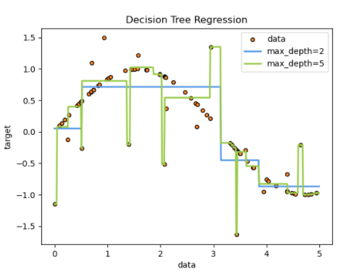

Apuntes de Inteligencia Artificial
Índice
- Tutorial — Entornos virtuales en Python (Windows, Linux, macOS)
- Conceptos básicos
- Paso 0 — Ver qué Python tienes instalado
- Método 1 —
venv(incluido en Python, el más estándar) - Método 2 — pyenv (varias versiones de Python en una máquina)
- Método 3 —
virtualenv(paquete pip) - Método 4 — Conda / Miniconda (opcional, ciencia de datos)
- Flujo de trabajo recomendado por escenario
- Buenas prácticas
- .gitignore mínimo
- Problemas frecuentes y soluciones
- Cheat sheet
- Referencias
- Introducción a la Inteligencia Artificial
- 1.1 Introducción a la Inteligencia Artificial
- 1.2 Historia de la Inteligencia Artificial
- 1.3 Habilidades cognoscitivas y teorías de la inteligencia
- 1.4 Razonamiento según la lógica
- 1.5 Adquisición del conocimiento según la filosofía
- 1.6 El modelo cognoscitivo
- 1.7 Modelo del agente inteligente
- 1.8 El papel de la heurística
- 1.8.1 Algoritmos de exploración de alternativas
- 1.8.2 Algoritmo A*
- 1.8.3 Algoritmos de búsqueda local
- Síntesis del temario
- Referencias sugeridas
- Preguntas de repaso
- Acertijos de IA: espacio de estados, lógica y poda
- A* — Arriero, coyote, cabra y maíz
- Símbolos
- Reglas del bote
- Objetivo
- Parte 1 — ¿Qué es un estado? (la “fotografía” del río)
- Parte 2 — El espacio de estados (el mapa completo del camino bueno)
- Parte 3 — g, h y f
- Parte 4 — A* paso a paso (tabla de “lista de pendientes”)
- Parte 5 — La solución contada como cuento (7 cruces)
- Parte 6 — Comparación rápida
- Parte 7 — Ejercicios con lápiz y papel
- Redes Neuronales y Backpropagation
- Error Cuadrático Medio
- Descenso por Gradiente: Teoría y Casos Prácticos
- Parte 1: La intuición
- Caso práctico 1 — Encontrar el mínimo de una parábola (a mano)
- Caso práctico 2 — El learning rate lo cambia TODO
- Caso práctico 3 — Regresión lineal con descenso por gradiente
- Caso práctico 4 — Clasificación con regresión logística
- Batch, Stochastic y Mini-batch — ¿con cuántos datos calculo el gradiente?
- Caso práctico 5 — Dos parámetros (m y b): superficie de error
- Problemas comunes y cómo reconocerlos
- Optimizadores — más allá del descenso "vanilla"
- Ejercicio guiado — tú lo haces
- Regresión Lineal Simple
- Regresión Logística
- Árboles de Decisión (Decision Trees)
- Árboles de decisión
- K-Vecinos Más Cercanos (k-NN) y Distancia Euclidiana
- Random Forest
- 1. El árbol de decisión como unidad básica
- 2. Del árbol al bosque: ensamble y bagging
- 3. Sesgo, varianza y efecto del ensamble
- 4. Hiperparámetros principales
- 5. Clasificación y regresión
- 6. Estimación out-of-bag (OOB)
- 7. Interpretabilidad
- 8. Caso aplicado: predicción de abandono (churn)
- 9. Variante de regresión: estimación de gasto
- 10. Comparación con otros métodos
- 11. Precauciones metodológicas
- 12. Procedimiento recomendado
- 13. Ejercicios
- 14. Glosario
- 15. Síntesis
- Cómo usar ML clásico en rumores y bots (caso práctico)
- Aprendizaje automático con casos aplicados — k-NN, árboles, Random Forest, regresión lineal, logística y multiclase
- 2. Conceptos comunes de Machine Learning
- Caso 1 — k-Vecinos (k-NN): diagnóstico por similitud
- Fundamento teórico
- Fundamentos interpretativos
- Efecto del parámetro k
- Resumen operativo
- Caso real: triaje de diabetes (simplificado)
- Conjunto de datos sintético (fines didácticos)
- Entrenamiento y evaluación
- Cómo elegir k
- Predicción de un paciente nuevo
- Limitaciones y buenas prácticas (k-NN)
- Variante regresión con k-NN
- Caso 2 — Árbol de decisión: aprobación de crédito
- Caso 3 — Random Forest: churn de clientes (telecom / streaming)
- Caso 4 — Regresión lineal: precio de vivienda
- Caso 5 — Regresión logística: detección de spam
- Caso 6 — Clasificación multiclase: riesgo académico (3 niveles)
- 3. Guía de decisión: ¿qué modelo emplear?
- 4. Pipeline completo reutilizable (plantilla)
- 5. Checklist EDA antes de entrenar (cualquier modelo)
- 6. Ejercicios para el estudiante
- 7. Resumen final
- NLTK paso a paso — Análisis del corpus «no todos pueden votar»
- 1.1 ¿Qué es NLTK?
- 1.2 Pipeline típico de análisis de texto
- 1.3 Conceptos clave
- 1.4 ¿Por qué quitar stopwords?
- 1.5 Bolsa de palabras (bag of words)
- 2. Requisitos
- 3. Cargar el corpus (CSV = corpus tabular)
- 4. Limpieza + tokenización con NLTK
- 5. Frecuencias del corpus completo (FreqDist)
- 6. Comparar dos subcorpus: ¿quién puede votar?
- 7. Bigramas (pares de palabras)
- 8. Cruce con etiquetas del CSV (sin ML todavía)
- 9. Clasificadores sobre el texto (teoría + varios modelos)
- 9.0 Qué problema resolvemos
- 9.1 Teoría: de texto a features
- 9.2 Preparar train/test una sola vez (sklearn)
- 9.3 Naive Bayes con NLTK (features binarias)
- 9.4 Misma tarea con varios modelos sklearn
- 9.5 CountVectorizer vs TF–IDF (mismo modelo)
- 9.6 Otras etiquetas: sentimiento y categoría
- 9.7 Probar frases nuevas con varios modelos
- 9.8 ¿Qué modelo elegir? (guía rápida)
- 9.9 Ejercicios extra
- 10. Exportar un resumen
- NLTK — Cargar un corpus desde archivos de texto y PDF
- Objetivo
- 1. Teoría: ¿qué es un corpus en disco?
- 2. Preparar el corpus de ejemplo
- 3. Cargar los
.txtcon PlaintextCorpusReader - 4. Análisis NLTK sobre el corpus de texto
- 5. Alternativa: cargar
.txt“a mano” (sin PlaintextCorpusReader) - 6. Cargar PDFs y pasarlos por NLTK
- 7. Clasificar documentos por “carpeta temática” (opcional)
- 8. Cómo usar TUS propios archivos
- RAG y Fine-Tuning con LoRA — (Ollama + entrenamiento local)
- APARTADO A — RAG (Retrieval-Augmented Generation)
- A.1 El problema que resuelve RAG
- A.2 Definición formal (tres letras)
- A.3 Analogía didáctica
- A.4 Pipeline completo (teoría)
- A.5 Chunking (por qué importa)
- A.6 Embeddings y similitud coseno
- A.7 Ollama en el mapa RAG
- A.8 Anatomía del prompt aumentado
- A.9 Qué puede salir mal (tabla de diagnóstico)
- A.10 RAG vs “pegar todo el archivo en el prompt”
- A.11 Ejemplo práctico 1 — Demo lista (script)
- A.12 Ejemplo práctico 2 — RAG mínimo en Python (para leer línea a línea)
- A.13 Variantes avanzadas (mapa, sin implementar todo)
- A.14 Evaluación rápida de un RAG (checklist alumno)
- A.15 Cuándo usar RAG (y cuándo no)
- APARTADO B — Fine-Tuning con LoRA
- B.1 Qué es fine-tuning
- B.2 Fine-tuning completo vs LoRA
- B.3 Teoría LoRA (Low-Rank Adaptation)
- B.4 Ollama y LoRA: roles distintos (muy importante)
- B.5 Dataset para fine-tuning (formato)
- B.6 Qué aprende el modelo con LoRA (y qué no)
- B.7 Ejemplo práctico — entrenar con tu proyecto
lora_tutor - B.8 Esqueleto conceptual de LoRA con PEFT (para leer)
- B.9 QLoRA (mención)
- B.10 Errores frecuentes en fine-tuning
- B.11 Mini-evaluación cualitativa post-LoRA
- APARTADO C — RAG vs LoRA vs ambos (síntesis)
- APARTADO A — RAG (Retrieval-Augmented Generation)
- Chatbot con RAG + Fine-Tuning — Tutorial paso a paso (Web y WhatsApp)
- Parte 1 — Teoría: de qué hablamos cuando decimos “chatbot con IA”
- Parte 2 — Teoría profunda de RAG
- Parte 3 — Teoría de fine-tuning (y por qué LoRA)
- Parte 4 — Teoría del orquestador (el “cerebro” del sistema)
- 4.1 Qué es un orquestador (definición)
- 4.2 Por qué hace falta (teoría de separación de responsabilidades)
- 4.3 Analogía extendida
- 4.4 Pipeline canónico (pasos lógicos)
- 4.5 Estados y decisiones (teoría de control)
- 4.6 Memoria conversacional (qué orquesta y qué no)
- 4.7 Orquestador vs “solo un prompt largo”
- 4.8 Patrones de orquestación (de simple a avanzado)
- 4.9 Contrato de interfaz del orquestador
- 4.10 Observabilidad (teoría de depuración)
- 4.11 Relación con RAG y fine-tuning
- 4.12 Errores de diseño frecuentes
- Parte 5 — Laboratorio: del corpus al orquestador
- Paso 0 — Definir el producto
- Paso 1 — Crear el corpus dentro del laboratorio (práctica B, preparación)
- Paso 2 — Programa RAG completo (práctica B)
- Paso 3 — Mapa de funciones (lectura del código anterior)
- Paso 4 — Extensión opcional (FAISS + sentence-transformers)
- Paso 5 — Orquestador único (práctica C)
- Paso 6 — Fine-tuning LoRA (práctica D)
- Paso 7 — Evaluación mínima (obligatoria)
- Parte 6 — Canal Web
- Parte 7 — Canal WhatsApp
- Parte 8 — Arquitectura unificada
- Parte 9 — Checklist de proyecto
- Parte 10 — Glosario breve
- Landmarks con MediaPipe — Manos y rostros con cámara (OpenCV)
- Objetivos
- Itinerario
- Carpeta de trabajo
- 1. Teoría: cámara, landmarks y cómo se dibujan
- 2. Descargar modelos (una sola vez)
- 3. Ejemplo 0 — Probar la cámara con OpenCV (sin MediaPipe)
- 4. Ejemplo 1 — Manos en vivo (OpenCV + MediaPipe)
- 5. Ejemplo 2 — Rostros en vivo
- 6. Ejemplo 3 — Manos y rostros a la vez
- 7. Ejemplo 4 — Contar dedos con la cámara
- 8. Orden de la sesión
- 9. Fallos frecuentes (cámara)
- Programar LEGO NXT y EV3 con Python
- Idea clave
- Preparación
- Parte A — LEGO NXT (
nxt-python3.x)- A0. Checklist NXT
- A1. Un motor — girar 2 segundos (el “hola mundo”)
- A2. Un motor — girar un ángulo (vueltas)
- A3. Un motor — adelante y atrás
- A4. Dos motores — robot que avanza (base diferencial)
- A5. Dos motores — girar en el sitio
- A6. Dos motores — secuencia completa (avanzar, girar, avanzar)
- A7. Tres motores — ruedas + brazo
- A8. Sensor de tacto (puerto 1)
- A9. Ultrasonido + freno automático
- A10. Trucos y errores típicos (NXT)
- Parte B — LEGO EV3 (
ev3-dc) por USB- B0. Checklist EV3
- B1. Conectar + beep (comprobar enlace)
- B2. Un motor — 2 segundos (API alta nivel)
- B3. Un motor —
move_for(más cómodo) - B4. Un motor — probar los 4 puertos (por si no es A)
- B5. Dos motores — avanzar
- B6. Dos motores — girar y secuencia
- B7. Tres motores — base + brazo
- B8. Sensor de tacto EV3
- B9. Ultrasonido EV3 — no chocar
- B10. Ejemplos COMPLETOS por Bluetooth (copiar y pegar)
- B11. Errores típicos (EV3) — Windows y Linux
- Parte C — NXT vs EV3
- Parte D — Scripts listos en disco
- Mover NXT y EV3 con landmarks (MediaPipe)
- Reconocimiento de rostros con OpenCV — Eigenfaces, Fisherfaces y LBPH
- Programas
- Actividades
- Operación Dino Crash (EDA conceptual)
- Operación Cuatro Frentes
- Dispersión de rumores
- Cómo usar este documento
- Contexto del caso (léelo completo)
- Misión 0 — Aclara el problema (10 min, sin Python)
- Misión 1 — EDA: ¿cuándo explotó la conversación? (15 min)
- Misión 2 — Coseno: ¿mismo rumor o copia? (20 min)
- Misión 3 — Timeline + cascada: ¿quién primero y cómo se repartió? (20 min)
- Misión 4 — k-NN: ¿bot o humano? (20 min)
- Misión 5 — Árbol: ¿amplifica o contrarresta? (15 min)
- Misión 6 — Regresión: ¿qué mueve el alcance? (15 min)
- Misión 7 — Informe final de dispersión (15 min)
- Rúbrica
- El Código Coilocito — Caso forense
- Misión Jaeger Evangelion
- Temas complementarios del semestre
- Teoría de juegos.
- Grafos
- Tipos de grafos
- Segmentación de Color
- Juego de Bala y Salto con MLP
- Introducción
- Requisitos e Instalación
- Cómo Jugar
- Modo Manual: Recolectando Datos
- Entrenamiento del Modelo MLP
- Modo Auto: El MLP Juega Solo
- Exportación y Visualización de Datos
- Arquitectura del Código
- Parámetros Configurables
- Mejores Prácticas
- Solución de Problemas
- Conceptos Técnicos Avanzados
- Código de Ejemplo
- Métricas de Evaluación para Machine Learning
- Introducción
- Matriz de Confusión: La Base de Todo
- Accuracy (Precisión General)
- Precision (Precisión)
- Recall (Sensibilidad o Exhaustividad)
- F1-Score: El Balance Perfecto
- Especificidad
- Comparación de Métricas: Tabla Resumen
- Casos de Uso en el Juego
- Implementación en Python
- Mejorando el Juego con Métricas
- Curvas ROC y AUC
- Métricas para Clases Desbalanceadas
- Resumen: Guía Rápida
- Ejercicios Prácticos
- Referencias y Recursos
- Conclusión
- Redes Neuronales Recurrentes (RNN)
- Redes Recurrentes (RNN) con Aplicación al Juego
- Introducción
- Conceptos Fundamentales
- Matemáticas Detalladas de las Redes Recurrentes
- Tipos de Redes Recurrentes
- Adaptando el Juego para RNN
- Implementación Práctica
- Comparación: MLP vs RNN
- Implementación Completa: Juego con RNN
- Visualización de Secuencias
- Actividades Prácticas
- Conceptos Avanzados
- Troubleshooting Común
- RNN para autocompletado — NumPy a mano + TensorFlow
- TensorFlow/Keras (ejemplo completo)
- Autocompletado con RNN vanilla en Keras (TensorFlow)
- Análisis de información
- Programación
- Tutorial Básico de Pygame
- Web scraping
- Spacy
- Extracción de datos RSS con Python y Atoma
- Estructura de un feed RSS
- Lectura de un feed RSS con Atoma
- Guardar los resultados en un archivo CSV
- Explicación paso a paso
- Transformers
- En una frase
- Nombres que oirás (no te asustes)
- El problema: ¿cómo entiende la máquina una frase?
- La analogía de la reunión (atención)
- ¿Qué son Q, K y V? (sin fórmulas raras)
- Varias “cabezas” de atención (multi-head)
- ¿Cómo sabe el orden de las palabras?
- El “bloque” que se repite muchas veces
- Tres “sabores” de Transformer (lo importante)
- Cómo se entrena (en palabras simples)
- Tokens: no siempre es “una palabra = un trozo”
- Ventajas y desventajas (sin rodeos)
- ¿Para qué sirve en la vida real?
- Mapa mental de un solo dibujo
- Preguntas típicas de principiante
- Glosario
- Para profundizar
- PARTE II Práctica
- Requisitos de software
- Mini demo: matriz de “¿a quién le presto atención?”
- Probar un modelo que lee (sentimiento de reseñas)
- Probar un modelo que escribe (completar frase)
- Ejercicios para repasar
- Actividad manual — Entender Transformers sin computadora
- Hoja para alumnos — Actividad 1: La matriz de atención
- Hoja para alumnos — Actividad 2: La palabra ambigua (dos contextos)
- Hoja para alumnos — Actividad 3: Máscara causal (no hacer trampa)
- Hoja para alumnos — Actividad 4: Varias cabezas (varios criterios)
- Hoja para alumnos — Actividad 5: Encoder vs Decoder (role-play)
- Actividad extra, Tokenizar a mano
- Actividad manual Parte 2 — Entender Transformers
- Materiales extra
- Actividad 6 — Matriz de atención completa
- Actividad 7 — Softmax a mano (de puntajes a probabilidades)
- Actividad 8 — Mezcla de “vectores contenido” (Values)
- Qué vas a entender
- Datos (coordenadas de cada palabra en un “mapa de significado” ficticio)
- Usa los % de la fila de COME que obtuviste en Actividad 6** (o estos de ejemplo si no los tienes):
- Paso 1 — Convertir % a decimales (0.05, 0.35, …)
- Paso 2 — Multiplicar cada vector por su peso y sumar
- Paso 3 — Dibuja en papel
- Conexión con el Transformer
- Actividad 9 — Máscara de padding (frases de distinta longitud)
- Actividad 10 — Atención cruzada (decoder mirando encoder)
- Actividad 11 — Adivinar la palabra tapada (estilo BERT / MLM)
- Actividad 12 — Dos capas de atención (refinar la representación)
- Actividad 13 — RNN vs Transformer: contar conexiones
- Actividad 14 — Escalar por \(\sqrt{d_k}\) (evitar saturación)
- Transformers — teoría y práctica
- Contexto histórico: secuencias antes del Transformer
- Límites de las RNN frente al enfoque Transformer
- Idea central: atención como búsqueda
- Scaled dot-product attention
- Máscaras
- Multi-head attention
- Embeddings y codificación posicional
- Conexiones residuales y normalización
- Capa feed-forward (FFN)
- Bloque encoder (una capa)
- Bloque decoder (una capa)
- Arquitectura encoder–decoder completa (traducción)
- Tres familias de modelos
- Objetivos de preentrenamiento (detalle)
- Tokenización
- Del preentrenamiento al fine-tuning
- Complejidad computacional y memoria
- Transformer más allá del texto
- Aplicaciones representativas
- Limitaciones y críticas
- Mapa mental resumido
- Glosario
- Referencias teóricas
- Práctica
- Proyectos
- Bibliografía
Tutorial — Entornos virtuales en Python (Windows, Linux, macOS)
Aprender a crear y usar entornos virtuales en Python cuando tienes varias versiones de Python instaladas (3.9, 3.10, 3.11, 3.12, 3.13…) en:
- Windows
- Linux (Debian/Ubuntu, Fedora, Arch…)
- macOS (Intel y Apple Silicon)
Al terminar sabrás:
- Qué es un entorno virtual y por qué no instalar todo con
pipglobal. - Cómo ver qué versiones de Python tienes en cada sistema.
- Cómo crear un
venvcon una versión concreta. - Cómo gestionar muchas versiones con pyenv (recomendado).
- Cómo activar, desactivar, exportar dependencias y borrar entornos.
- Cómo resolver errores típicos.
Conceptos básicos
¿Qué es un entorno virtual?
Un entorno virtual es una carpeta aislada que contiene:
- Un intérprete de Python (o un enlace a uno concreto).
- Su propio
pip. - Sus propios paquetes en
site-packages.
Cada proyecto puede tener versiones distintas de Django, NumPy, etc., sin pelearse.
Entorno virtual ≠ versión de Python
| Idea | Qué es |
|---|---|
| Versión de Python | 3.10, 3.12… el lenguaje en sí |
| Entorno virtual | Carpeta aislada de paquetes para un proyecto |
Puedes tener Python 3.12 instalado y crear tres entornos 3.12 con librerías diferentes.
Herramientas que verás en este tutorial
| Herramienta | Viene con Python | Varias versiones de Python | Uso típico |
|---|---|---|---|
venv |
Sí (3.3+) | Solo si ya tienes ese binario | Proyectos simples, estándar |
virtualenv |
No (pip install) |
Igual que venv |
Compatibilidad extra |
| pyenv | No | Sí, instala y cambia versiones | Desarrollo con 3.9–3.13 |
| conda / Miniconda | No | Sí (canales propios) | Ciencia de datos, CUDA |
| uv | No | Sí, muy rápido | Proyectos modernos (mención) |
Recomendación general:
- Principiante / curso:
python3.12 -m venv .venv(o la versión que pida tu materia). - Varias versiones en la misma máquina: pyenv +
pyenv virtualenv.
Paso 0 — Ver qué Python tienes instalado
Linux y macOS (terminal)
# Versiones en PATH python3 --version python3.12 --version 2>/dev/null python3.11 --version 2>/dev/null # Dónde está cada binario which python3 which python3.12 2>/dev/null # Todas las que encuentre el sistema (Debian/Ubuntu) ls -la /usr/bin/python3* 2>/dev/null
Windows (PowerShell o CMD)
python --version py --version py -0p
El lanzador py en Windows lista versiones instaladas. Ejemplo de salida:
-V:3.12 * C:\Users\tu\AppData\Local\Programs\Python\Python312\python.exe -V:3.11 C:\Users\tu\AppData\Local\Programs\Python\Python311\python.exe
Tabla rápida por sistema
| Sistema | Comando habitual | Varias versiones |
|---|---|---|
| Linux | python3.12, python3.11 |
Paquetes del sistema o pyenv |
| macOS | python3 (Homebrew) |
brew install python@3.12 o pyenv |
| Windows | py -3.12 |
Instaladores python.org o pyenv-win |
Método 1 — venv (incluido en Python, el más estándar)
Crear entorno con una versión específica
La regla de oro:
<python-DESEADA> -m venv <carpeta-del-entorno>
- Linux
cd ~/proyectos/mi_app python3.12 -m venv .venv # o con ruta explícita si hay varias: /usr/bin/python3.11 -m venv .venv311
- macOS
cd ~/proyectos/mi_app python3.12 -m venv .venv # Si usas Homebrew y el binario tiene otro nombre: /opt/homebrew/bin/python3.12 -m venv .venv
- Windows (PowerShell)
cd $HOME\proyectos\mi_app py -3.12 -m venv .venv # o ruta completa: # C:\Users\tu\AppData\Local\Programs\Python\Python312\python.exe -m venv .venv
Activar el entorno
| Sistema | Comando activar | Desactivar |
|---|---|---|
| Linux / macOS | source .venv/bin/activate |
deactivate |
| Windows CMD | .venv\Scripts\activate.bat |
deactivate |
| Windows PowerShell | .venv\Scripts\Activate.ps1 |
deactivate |
PowerShell puede bloquear scripts. Si falla:
Set-ExecutionPolicy -ExecutionPolicy RemoteSigned -Scope CurrentUser
Comprobar que usas el Python correcto
Tras activar:
which python
python --version
pip --version
En Windows:
Get-Command python python --version pip --version
Debe apuntar a .venv (Linux/Mac) o .venv\Scripts\python.exe (Windows).
Instalar paquetes y guardar dependencias
pip install --upgrade pip pip install requests pandas pip freeze > requirements.txt
En otra máquina o compañero:
python3.12 -m venv .venv
source .venv/bin/activate
pip install -r requirements.txt
Borrar un entorno
Solo elimina la carpeta (con el entorno desactivado):
deactivate rm -rf .venv
Windows: Remove-Item -Recurse -Force .venv
Método 2 — pyenv (varias versiones de Python en una máquina)
¿Cuándo usar pyenv?
- Necesitas 3.10 para un proyecto viejo y 3.12 para uno nuevo.
- No quieres mezclar el Python del sistema (Linux/macOS) con tus proyectos.
- Quieres un comando global:
pyenv local 3.11.9en una carpeta.
Instalación
- Linux (Debian/Ubuntu — dependencias + instalador oficial)
sudo apt update sudo apt install -y make build-essential libssl-dev zlib1g-dev \ libbz2-dev libreadline-dev libsqlite3-dev curl git \ libncursesw5-dev xz-utils tk-dev libxml2-dev libxmlsec1-dev libffi-dev liblzma-dev curl https://pyenv.run | bash # Añade a ~/.bashrc o ~/.zshrc: # export PYENV_ROOT="$HOME/.pyenv" # export PATH="$PYENV_ROOT/bin:$PATH" # eval "$(pyenv init -)"
Reinicia la terminal y:
pyenv --version
- macOS (Homebrew)
brew update brew install pyenv # Añade a ~/.zshrc: # export PYENV_ROOT="$HOME/.pyenv" # export PATH="$PYENV_ROOT/bin:$PATH" # eval "$(pyenv init -)"
- Windows — pyenv-win
En Windows el proyecto equivalente es pyenv-win (no es el mismo binario que Linux, pero la idea es igual).
# Con winget (si está disponible): winget install pyenv-win.pyenv-win # O clonar en %USERPROFILE%\.pyenv\pyenv-win # y añadir a PATH las carpetas bin y shims
Consulta la wiki de pyenv-win para variables
PYENV,PYENV_ROOT,PYENV_HOMEen Variables de entorno de Windows.
Instalar versiones de Python con pyenv
pyenv install --list | grep " 3.1"
pyenv install 3.11.9
pyenv install 3.12.4
pyenv versions
Elegir versión global o por carpeta
pyenv global 3.12.4
pyenv local 3.11.9
cd ~/proyectos/legacy_app
pyenv local 3.10.13
python --version
Crea archivo =.python-version en la carpeta del proyecto.=
Entorno virtual con pyenv
Opción A — plugin pyenv-virtualenv:
# Linux/macOS: instalar plugin pyenv-virtualenv (ver repo oficial) pyenv virtualenv 3.12.4 mi_proyecto_312 pyenv local mi_proyecto_312
Opción B — venv clásico después de fijar versión con pyenv:
pyenv local 3.12.4
python -m venv .venv
source .venv/bin/activate
Método 3 — virtualenv (paquete pip)
Similar a venv, útil si necesitas opciones extra o Python muy antiguo.
python3.12 -m pip install --user virtualenv python3.12 -m user virtualenv .venv # o: virtualenv -p python3.11 .venv311 source .venv311/bin/activate
En la práctica moderna, python -m venv suele bastar.
Método 4 — Conda / Miniconda (opcional, ciencia de datos)
Idea
Conda crea entornos con Python y librerías binarias (NumPy, CUDA) desde canales propios.
conda create -n mi_env python=3.11
conda activate mi_env
conda install pandas numpy
conda deactivate
Conda vs venv
| Aspecto | venv / pyenv | conda |
|---|---|---|
| Peso | Ligero | Más pesado |
| Paquetes no-Python | No | Sí (R, C libs) |
| Curso general IA/Python | venv suele bastar | Si el curso pide Anaconda |
Flujo de trabajo recomendado por escenario
Escenario A — Un solo proyecto, una versión fija (curso)
1. Instalar Python 3.12 desde python.org / apt / brew 2. cd proyecto 3. python3.12 -m venv .venv 4. activar → pip install -r requirements.txt 5. Añadir .venv/ al .gitignore
Escenario B — Tres proyectos, tres versiones
1. Instalar pyenv 2. pyenv install 3.10.13 3.11.9 3.12.4 3. En cada repo: pyenv local X.Y.Z && python -m venv .venv
Escenario C — Windows con lanzador py
1. py -0p (ver versiones) 2. py -3.12 -m venv .venv 3. .venv\Scripts\Activate.ps1 4. pip install ...
Buenas prácticas
- Un entorno por proyecto (carpeta
.venvovenvdentro del repo). - No subas
.venva Git; sí suberequirements.txtopyproject.toml. - Nombra la versión en el README: “Requiere Python ≥ 3.11”.
- En Linux, evita
sudo pip installen el Python del sistema (rompe paquetes del SO). - En macOS con Apple Silicon, prefiere builds arm64 (Homebrew en
/opt/homebrew). - Usa
python -m pip installen lugar depipsuelto (asegura el pip del entorno activo).
.gitignore mínimo
.venv/ venv/ __pycache__/ *.pyc .python-version # opcional: algunos equipos sí lo versionan con pyenv
Problemas frecuentes y soluciones
| Síntoma | Causa probable | Solución |
|---|---|---|
python: command not found |
Python no en PATH | Instalar o usar ruta completa / pyenv |
No module named venv |
Paquete python3-venv falta (Debian) |
sudo apt install python3.12-venv |
Tras activar, python sigue siendo el del sistema |
No activaste bien o orden PATH | source .venv/bin/activate; which python |
| PowerShell no activa | ExecutionPolicy | RemoteSigned para CurrentUser |
pip install instala fuera del venv |
Entorno no activo | Activar; usar python -m pip |
| pyenv: version not installed | Falta pyenv install |
pyenv install 3.12.4 |
| Mezcla 3.10 y 3.12 en mismo venv | Creaste venv con binario equivocado | Borrar .venv y recrear con binario correcto |
Cheat sheet
Linux / macOS
# Crear python3.12 -m venv .venv # Activar / desactivar source .venv/bin/activate deactivate # Paquetes pip install -r requirements.txt pip freeze > requirements.txt # pyenv pyenv install 3.12.4 pyenv local 3.12.4
Windows
# Crear py -3.12 -m venv .venv # Activar (PowerShell) .venv\Scripts\Activate.ps1 # Listar Pythons py -0p
Referencias
- Documentación oficial venv: https://docs.python.org/3/library/venv.html
- pyenv: https://github.com/pyenv/pyenv
- pyenv-win: https://github.com/pyenv-win/pyenv-win
- Python en Windows (launcher py): https://docs.python.org/3/using/windows.html
None
Introducción a la Inteligencia Artificial
Este documento desarrolla el temario de la unidad introductoria a la Inteligencia Artificial (IA): definición, historia, bases cognitivas, lógica, filosofía del conocimiento, modelos cognitivos y de agente, y el papel de la heurística con algoritmos de búsqueda.
Objetivos generales:
- Comprender qué se entiende por IA y cómo ha evolucionado históricamente.
- Relacionar la IA con psicología, lógica y filosofía del conocimiento.
- Describir el modelo del agente inteligente y sus extensiones (multiagente, ubicuo).
- Aplicar algoritmos de búsqueda informada y local como base de la resolución de problemas.
1.1 Introducción a la Inteligencia Artificial
¿Qué es la Inteligencia Artificial?
La Inteligencia Artificial es el campo de la informática y las ciencias cognitivas que estudia cómo construir sistemas capaces de realizar tareas que, si las hiciera un humano, requerirían inteligencia: percibir, razonar, aprender, planificar, comunicarse y actuar en entornos complejos.
Definiciones frecuentes en cursos introductorios:
- Sistemas que piensan como humanos (enfoque cognitivo / simulación).
- Sistemas que actúan racionalmente (enfoque del agente racional; muy usado en IA moderna).
- Sistemas que piensan racionalmente (enfoque lógico: leyes del pensamiento).
Problemas típicos de la IA
| Área | Ejemplos |
|---|---|
| Percepción | Visión por computadora, reconocimiento de voz |
| Razonamiento | Demostración de teoremas, diagnóstico médico |
| Aprendizaje | Clasificación, predicción, deep learning |
| Lenguaje natural | Traducción, chatbots, resumen de textos |
| Planificación | Robótica, logística, juegos (ajedrez, Go) |
| Representación | Ontologías, grafos de conocimiento, bases de reglas |
IA débil vs IA fuerte (distinción conceptual)
- IA débil (narrow AI): sistemas especializados en una tarea (recomendador, detector de spam, asistente de voz). Es lo que existe hoy en producción.
- IA fuerte (AGI): hipotética inteligencia general al nivel humano o superior en cualquier dominio. Sigue siendo objeto de debate y especulación.
Relación con otras disciplinas
- Psicología cognitiva: modelos de memoria, atención, aprendizaje.
- Lógica y matemáticas: formalización del razonamiento.
- Filosofía: naturaleza del conocimiento, mente y consciencia.
- Neurociencia: inspiración biológica (redes neuronales).
- Ingeniería: sistemas que funcionan en el mundo real (robots, sensores, redes).
Idea clave del curso
La IA no es un solo método: es un conjunto de técnicas (búsqueda, lógica, probabilidad, aprendizaje automático, etc.) unidas por la pregunta: ¿cómo representar el conocimiento y elegir acciones útiles en un entorno?
1.2 Historia de la Inteligencia Artificial
Orígenes (décadas de 1940–1950)
- Alan Turing (1950): artículo “Computing Machinery and Intelligence”; propone el Test de Turing como criterio operativo de comportamiento inteligente.
- McCulloch y Pitts (1943): modelo neuronal binario (antecedente de redes neuronales).
- Conferencia de Dartmouth (1956): McCarthy, Minsky, Shannon, Rochester y otros acuñan el término “Artificial Intelligence”. Se inicia el optimismo de que la inteligencia general sería alcanzable en pocos años.
Era del optimismo (1956–1974)
- Programas pioneros: Logic Theorist, General Problem Solver (GPS), primeros juegos (damas, ajedrez simplificado).
- Lenguaje LISP (McCarthy, 1958) como herramienta simbólica.
- Expectativas altas; financiamiento abundante.
Primer “invierno” de la IA (1974–1980)
- Limitaciones computacionales y teóricas (combinatoria explosiva, conocimiento difícil de codificar).
- Informe Lighthill (Reino Unido, 1973): crítica severa → recortes de fondos.
Sistemas expertos y boom comercial (1980–1987)
- Sistemas basados en reglas (IF–THEN): MYCIN (diagnóstico), DENDRAL (química).
- Japón: Fifth Generation; EE.UU.: proyectos DARPA.
- Éxito en dominios acotados con expertos humanos disponibles.
Segundo invierno (1987–1993)
- Caída del hardware LISP; sistemas expertos caros de mantener y frágiles fuera de su nicho.
- Necesidad de aprendizaje y datos frente a solo reglas manuales.
Resurgimiento: aprendizaje automático y datos (1990–2010)
- Aprendizaje estadístico: SVM, árboles, boosting.
- Éxitos prácticos: filtrado de spam, reconocimiento de escritura, recomendación.
- Deep Blue vence a Kasparov (1997) con búsqueda + heurísticas + hardware.
Era del deep learning (2010–presente)
- GPUs, grandes conjuntos de datos (ImageNet), arquitecturas profundas (CNN, RNN, Transformers).
- Hitos: AlexNet (2012), AlphaGo (2016), GPT y modelos de lenguaje a gran escala (2020+).
- IA generativa, visión, voz, asistentes conversacionales.
Línea de tiempo resumida
1943 Modelo McCulloch-Pitts 1950 Test de Turing 1956 Dartmouth → nace el término "IA" 1960s GPS, ELIZA, optimismo 1974 Primer invierno (Lighthill) 1980s Sistemas expertos 1987 Segundo invierno 1997 Deep Blue vs Kasparov 2012 AlexNet / revolución deep learning 2016 AlphaGo 2020+ LLMs, IA generativa
1.3 Habilidades cognoscitivas y teorías de la inteligencia
Habilidades cognoscitivas (psicología)
Desde la psicología cognitiva, la “inteligencia” en humanos se manifiesta en procesos interrelacionados:
| Proceso | Descripción breve |
|---|---|
| Percepción | Interpretar estímulos sensoriales |
| Atención | Seleccionar información relevante |
| Memoria | Almacenar y recuperar (corto/largo plazo) |
| Lenguaje | Comprender y producir símbolos lingüísticos |
| Razonamiento | Inferir conclusiones, resolver problemas |
| Aprendizaje | Modificar conducta o conocimiento con la experiencia |
| Metacognición | “Pensar sobre el propio pensamiento” |
La IA clásica intentó modelar o replicar estos procesos; la IA moderna a menudo los aproxima con datos y optimización sin pretender fidelidad biológica.
Teoría conductista (conductismo)
- Enfoque: la mente no se observa directamente; se estudia el comportamiento ante estímulos y reforzadores.
- Skinner, Watson: aprendizaje por condicionamiento y refuerzo.
- Relevancia en IA: aprendizaje por refuerzo (RL): agente, estados, acciones, recompensas (Q-learning, policy gradient). El “conductismo” inspira el marco matemático, no la negación de representaciones internas (los agentes RL sí mantienen valores o políticas).
Teoría de la inteligencia general (factor g)
- Spearman: un factor común subyace a varias pruebas cognitivas.
- En IA: analogía limitada; los sistemas suelen ser especialistas (alto rendimiento en una tarea, bajo en otras).
Inteligencias múltiples (Howard Gardner)
Gardner propone varias inteligencias relativamente independientes:
| Inteligencia | Ejemplo humano | Paralelo en IA (aproximado) |
|---|---|---|
| Lingüística | Leer, escribir, debatir | NLP, LLMs |
| Lógico-matemática | Demostrar, programar | Lógica, planificación, ML simbólico |
| Espacial | Orientarse, dibujar | Visión, SLAM, gráficos |
| Musical | Componer, reconocer tonos | Generación/análisis musical |
| Corporal-kinestésica | Deportes, manualidades | Robótica, control motor |
| Interpersonal | Empatía, liderazgo | Análisis de sentimientos (parcial) |
| Intrapersonal | Autoconocimiento | Poco modelado explícitamente |
| Naturalista | Clasificar especies | Clasificación de imágenes |
Idea pedagógica: no existe un solo “botón de inteligencia”; los sistemas actuales combinan módulos especializados.
Otras teorías (mención)
- Piaget: desarrollo por etapas (sensoriomotor → formal). Útil como metáfora de complejidad creciente en agentes que aprenden.
- Vygotsky: aprendizaje social y zona de desarrollo próximo. Paralelo: aprendizaje con humano en el bucle (RLHF, anotación humana).
- Sternberg (triárquica): analítica, creativa, práctica → diseño de sistemas que equilibren precisión, novedad y utilidad en contexto.
1.4 Razonamiento según la lógica
Lógica como fundamento del razonamiento automático
La lógica formal permite:
- Representar proposiciones y relaciones.
- Derivar conclusiones válidas a partir de premisas.
- Verificar si un argumento es correcto (independientemente de si las premisas son verdaderas en el mundo real).
Componentes básicos
- Lenguaje formal: símbolos, conectivos (∧, ∨, ¬, →), cuantificadores (∀, ∃).
- Axiomas: proposiciones asumidas sin demostración dentro del sistema (punto de partida).
- Teoremas: proposiciones demostrables a partir de axiomas y reglas de inferencia.
- Demostración: secuencia finita de pasos donde cada paso es un axioma, una hipótesis o se obtiene por una regla de inferencia (p. ej. modus ponens: de P y P→Q inferir Q).
Ejemplo mínimo (lógica proposicional)
Premisas:
- Si llueve, la calle está mojada. (Lluvia → Mojada)
- Está lloviendo. (Lluvia)
Conclusión (por modus ponens): La calle está mojada. (Mojada)
En notación: {(Lluvia → Mojada), Lluvia} ⊢ Mojada
Sistemas formales relevantes en IA
| Sistema | Uso en IA |
|---|---|
| Lógica proposicional | Reglas simples, verificación finita |
| Lógica de predicados | Relaciones, bases de conocimiento |
| Lógica modal | Conocimiento, creencia, obligación (agentes) |
| Lógica difusa | Razonamiento con grados de verdad |
Límites importantes
- Decidibilidad: algunos problemas no tienen algoritmo que siempre termine con respuesta correcta.
- Complejidad: el espacio de búsqueda de demostraciones crece muy rápido → hace falta heurística (sección 1.8).
- Mundo real: la lógica clásica asume certeza; en la práctica hay incertidumbre (probabilidad, redes bayesianas).
1.5 Adquisición del conocimiento según la filosofía
¿Qué es el conocimiento? (epistemología)
La filosofía del conocimiento pregunta:
- ¿Qué distingue conocimiento de mera creencia?
- ¿De dónde proviene? (experiencia vs razón)
- ¿Cómo sabemos que algo es justificado?
Tradición clásica: conocimiento = creencia verdadera justificada (definición discutida, pero pedagógicamente útil).
Empirismo vs racionalismo
| Corriente | Idea principal | Paralelo en IA |
|---|---|---|
| Empirismo | Conocimiento desde la experiencia | Aprendizaje automático, datos, inducción |
| Racionalismo | Conocimiento desde la razón innata | Axiomas, ontologías, reglas a priori |
Los sistemas reales suelen combinar conocimiento codificado (reglas, ontologías) con conocimiento aprendido (modelos entrenados).
Fuentes de conocimiento en sistemas inteligentes
- Codificación manual: expertos escriben reglas (sistemas expertos).
- Aprendizaje inductivo: generalizar patrones desde ejemplos.
- Adquisición semi-automática: extracción de texto, minería de datos.
- Interacción: el usuario corrige o etiqueta (aprendizaje activo).
Problema de la adquisición de conocimiento (knowledge acquisition bottleneck)
- Los expertos no siempre saben articular lo que hacen.
- El mantenimiento de reglas es costoso.
- Motivación histórica del machine learning: aprender reglas o parámetros desde datos.
Representación del conocimiento (puente filosofía → IA)
- Hechos: “París es capital de Francia.”
- Reglas: “Si X es padre de Y, Y es hijo de X.”
- Ontologías: vocabulario formal de conceptos y relaciones.
- Frames / redes semánticas: estructuras con herencia y slots.
1.6 El modelo cognoscitivo
Definición
Un modelo cognoscitivo es una representación computacional de procesos mentales: cómo se percibe, se recuerda, se razona y se decide. Busca coherencia con evidencia psicológica o neurocientífica (a veces de forma simplificada).
Arquitecturas cognitivas clásicas
| Arquitectura | Idea central |
|---|---|
| SOAR | Memoria, aprendizaje por chunking, resolución de impasse |
| ACT-R | Módulos (declarativo/procedimental), activación |
| CLARION | Conocimiento implícito vs explícito |
Componentes típicos de un modelo cognoscitivo
- Memoria de trabajo: buffer limitado para información actual.
- Memoria a largo plazo: hechos y procedimientos.
- Percepción y motor: interfaces con el entorno.
- Aprendizaje: consolidación de experiencias en conocimiento reutilizable.
Modelo cognoscitivo vs modelo de agente
| Aspecto | Modelo cognoscitivo | Agente inteligente (IA clásica) |
|---|---|---|
| Objetivo | Simular mente humana | Actuar bien en un entorno |
| Evaluación | Ajuste a datos psicológicos | Rendimiento (tarea, utilidad) |
| Complejidad | Alta fidelidad cognitiva | Pragmática, a veces mínima |
Conexión con IA moderna
Las redes neuronales profundas no suelen pretender ser modelos cognitivos fieles, pero incorporan ideas inspiradas en cerebro (capas, atención). Los LLMs debaten si emergen capacidades “cognitivas” sin modelo explícito de mente.
1.7 Modelo del agente inteligente
Definición de agente
Un agente es cualquier cosa que percibe su entorno mediante sensores y actúa sobre él mediante actuadores.
Un agente inteligente elige acciones que maximizan una medida de rendimiento según su secuencia perceptiva y su conocimiento incorporado.
Función agente
\[ f: P^* \rightarrow A \] donde P es el conjunto de percepciones y A el de acciones.
En la práctica se implementa con programa + arquitectura (cuerpo físico o software).
Componentes de un agente racional
- Medida de rendimiento: qué se considera éxito (seguridad, puntos, tiempo, costo).
- Conocimiento del entorno: reglas, mapas, modelos probabilísticos.
- Secuencia perceptiva: historial de lo observado.
- Acción: la mejor según expectativa de rendimiento futuro.
Tipos de agentes (Jersey / Russell & Norvig)
| Tipo | Comportamiento |
|---|---|
| Reflejo simple | Acción = función de percepción actual |
| Reflejo basado en modelo | Mantiene estado interno (modelo del mundo) |
| Basado en objetivos | Planifica para alcanzar metas |
| Basado en utilidad | Elige entre metas con grados de preferencia |
| De aprendizaje | Mejora su comportamiento con la experiencia |
PEAS (ejemplo: taxi autónomo)
- Performance: seguridad, rapidez, comodidad, legalidad.
- Environment: calles, tráfico, peatones, clima.
- Actuators: volante, acelerador, freno, señales.
- Sensors: cámaras, LIDAR, GPS, odometría.
Propiedades del entorno (para elegir técnica)
| Propiedad | Ejemplos |
|---|---|
| Observable / no | Ajedrez completo vs taxi con puntos ciegos |
| Determinista / no | Laberinto fijo vs poker |
| Episódico / secuencial | Clasificar imagen vs ajedrez |
| Estático / dinámico | Rompecabezas vs fútbol robótico |
| Discreto / continuo | Tablero vs conducción continua |
| Un agente / multi | Solitario vs subastas, tráfico |
Sistemas multiagente (SMA)
- Varios agentes en un mismo entorno; pueden cooperar, competir o ser neutros.
- Cooperación: robots en almacén, enjambres.
- Competencia: subastas, juegos, mercados.
- Desafíos: comunicación, coordinación, equilibrio (teoría de juegos), emergencia de comportamiento global.
Sistemas ubicuos (ubicomp)
- Computación integrada en el entorno cotidiano (sensores, wearables, hogar inteligente, ciudades).
- Características: invisibilidad, contexto, movilidad, muchos dispositivos heterogéneos.
- Relación con IA: agentes distribuidos, percepción contextual, decisiones en tiempo real con recursos limitados.
┌─────────────┐
Sensores│ AGENTE │Actuadores
────►│ (programa) │────► Entorno
└─────────────┘
▲
│ percepción → decisión → acción
1.8 El papel de la heurística
¿Qué es una heurística?
Una heurística es una regla práctica, atajo o función estimadora que guía la búsqueda hacia soluciones prometedoras sin garantizar optimalidad ni completitud en todos los casos.
Motivación: el espacio de estados crece exponencialmente (explosión combinatoria). Explorar todo es inviable.
Propiedades deseables
- Admisibilidad (A):* h(n) nunca sobreestima el costo real → solución óptima si existe.
- Consistencia (monotonicidad): h(n) ≤ costo(n,n') + h(n') → facilita optimalidad.
- Información: cuanto más cerca de la realidad, menos nodos se expanden (pero más costosa de calcular).
Búsqueda ciega vs informada vs local
| Tipo | Usa costo/heurística | Ejemplos |
|---|---|---|
| Ciega | No (solo estructura) | BFS, DFS, costo uniforme |
| Informada | Sí (h) | A*, greedy best-first |
| Local | Mejora iterativa | Hill climbing, simulated annealing |
1.8.1 Algoritmos de exploración de alternativas
Modelo de problema de búsqueda
- Estado: configuración del mundo.
- Estado inicial y estados meta.
- Acciones aplicables y función de transición.
- Función de costo de camino g(n) (suma de costos desde el inicio).
- Árbol / grafo de búsqueda: nodos = estados; aristas = acciones.
Búsqueda en anchura (BFS)
- Expande por niveles (frontera FIFO).
- Completa si el factor de ramificación es finito.
- Óptima si todos los pasos tienen el mismo costo.
- Memoria: alta (guarda toda la frontera).
Búsqueda en profundidad (DFS)
- Expande el nodo más profundo primero (pila).
- Memoria: baja (solo camino actual + frontera).
- Riesgo de ciclos → usar conjunto visited o límite de profundidad (IDS).
Costo uniforme (UCS / Dijkstra en grafo de estados)
- Expande el nodo de menor g(n) (cola de prioridad).
- Óptima con costos no negativos.
- Sin heurística: búsqueda “ciega” informada solo por costos acumulados.
Greedy best-first
- Expande el nodo con menor h(n) (solo heurística).
- Rápida pero no garantiza optimalidad ni completitud en todos los grafos.
Ejemplo: laberinto en Python (BFS)
from collections import deque def bfs(start, goal, neighbors): """neighbors(state) -> iterable de estados alcanzables.""" queue = deque([(start, [start])]) visited = {start} while queue: state, path = queue.popleft() if state == goal: return path for nxt in neighbors(state): if nxt not in visited: visited.add(nxt) queue.append((nxt, path + [nxt])) return None # Grafo de ejemplo: 0 -- 1 -- 2 # \ / # 3 graph = { 0: [1, 3], 1: [0, 2], 2: [1, 3], 3: [0, 2], } print("BFS 0→2:", bfs(0, 2, lambda s: graph[s]))
1.8.2 Algoritmo A*
Idea
A* combina:
- g(n) = costo acumulado desde el inicio.
- h(n) = estimación del costo restante hasta la meta.
f(n) = g(n) + h(n)
Expande siempre el nodo con menor f(n) en una cola de prioridad.
Pseudocódigo (conceptual)
OPEN ← {nodo_inicial}
g(inicio) ← 0
mientras OPEN no vacío:
n ← nodo en OPEN con menor f(n) = g(n) + h(n)
si n es meta: reconstruir camino y terminar
para cada sucesor n' de n:
g' ← g(n) + costo(n, n')
si g' < g(n') o n' no visitado:
g(n') ← g'
f(n') ← g' + h(n')
padre(n') ← n
añadir n' a OPEN
Condiciones para optimalidad
- El grafo es finito o hay criterio de corte.
- h es admisible (no sobreestima).
- Con h consistente, A* no re-expande innecesariamente.
Ejemplo: A* en cuadrícula (Manhattan)
import heapq def manhattan(a, b): return abs(a[0] - b[0]) + abs(a[1] - b[1]) def astar(start, goal, neighbors, cost=1): """ start, goal: tuplas (fila, col) neighbors(pos) -> lista de posiciones válidas """ open_heap = [] heapq.heappush(open_heap, (manhattan(start, goal), 0, start)) g_score = {start: 0} came_from = {} while open_heap: f, g, current = heapq.heappop(open_heap) if current == goal: path = [current] while current in came_from: current = came_from[current] path.append(current) return list(reversed(path)) for nxt in neighbors(current): new_g = g_score[current] + cost if nxt not in g_score or new_g < g_score[nxt]: g_score[nxt] = new_g came_from[nxt] = current h = manhattan(nxt, goal) heapq.heappush(open_heap, (new_g + h, new_g, nxt)) return None # Cuadrícula 3x3 sin obstáculos def grid_neighbors(pos): r, c = pos moves = [] for dr, dc in [(-1,0),(1,0),(0,-1),(0,1)]: nr, nc = r + dr, c + dc if 0 <= nr < 3 and 0 <= nc < 3: moves.append((nr, nc)) return moves print("A* (0,0)→(2,2):", astar((0,0), (2,2), grid_neighbors))
Cuándo usar A*
- Mapas, planificación de rutas, puzzles con costo en aristas.
- Cuando existe una h admisible razonable (distancia euclidiana, Manhattan, patrón desajustado en 8-puzzle).
1.8.3 Algoritmos de búsqueda local
Idea
En lugar de explorar sistemáticamente todo un árbol, la búsqueda local parte de una solución candidato y la va mejorando iterativamente según una función objetivo (o energía).
Útil cuando:
- El camino importa menos que el estado final (optimización, CSP relajados).
- El espacio es enorme pero hay estructura local.
Hill climbing (escalada de colina)
- Estado actual s.
- Evaluar vecinos; moverse al vecino con mejor valor.
- Parar si no hay mejora (máximo local).
Problema: máximos locales, mesetas, crestas.
Variantes
| Algoritmo | Idea |
|---|---|
| Steepest ascent | Mejor vecino en cada paso |
| Stochastic hill climb | Elige aleatoriamente entre mejoras |
| Random restart | Reinicia desde puntos aleatorios |
| Simulated annealing | Acepta empeoras con probabilidad decreciente |
| Genetic algorithms | Población, cruce, mutación, selección |
Ejemplo: hill climbing (maximizar función 1D discreta)
import random def hill_climbing(f, start, neighbors, max_steps=100): current = start value = f(current) for _ in range(max_steps): nbrs = list(neighbors(current)) if not nbrs: break best = max(nbrs, key=f) best_val = f(best) if best_val <= value: break # máximo local current, value = best, best_val return current, value # Función con máximo local en x=2 y global en x=8 (dominio 0..10) def f(x): return -(x - 8) ** 2 + 64 if x >= 5 else -(x - 2) ** 2 + 10 def nbrs(x): for d in (-1, 1): if 0 <= x + d <= 10: yield x + d for trial in range(3): s0 = random.randint(0, 10) s, v = hill_climbing(f, s0, nbrs) print(f"inicio={s0} → máximo local en x={s}, f={v}")
Búsqueda local vs A*
| Criterio | A* (sistemática) | Búsqueda local |
|---|---|---|
| Garantía óptima | Sí (con h admisible) | No en general |
| Memoria | Puede ser alta | Baja (un estado) |
| Uso típico | Camino mínimo | Optimización, scheduling |
Síntesis del temario
| Subtema | Idea central |
|---|---|
| 1.1 | IA = sistemas que perciben, razonan, aprenden y actúan |
| 1.2 | Ciclos de optimismo e invierno; datos y deep learning |
| 1.3 | Cognición humana; Gardner, conductismo → RL |
| 1.4 | Axiomas, teoremas, demostración; lógica en IA simbólica |
| 1.5 | Origen y representación del conocimiento |
| 1.6 | Arquitecturas que modelan procesos mentales |
| 1.7 | Agente racional; SMA; computación ubicua |
| 1.8 | Heurísticas; BFS/DFS/UCS; A*; búsqueda local |
Referencias sugeridas
- Russell, S. & Norvig, P. Artificial Intelligence: A Modern Approach (capítulos 1–4).
- Turing, A. (1950). Computing Machinery and Intelligence.
- Gardner, H. Frames of Mind (inteligencias múltiples).
- Newell, A. Unified Theories of Cognition (SOAR / ACT-R en contexto).
Preguntas de repaso
- ¿En qué se diferencia un agente reflejo de uno basado en objetivos?
- ¿Por qué A* necesita que h sea admisible para garantizar optimalidad?
- ¿Qué paralelo existe entre el conductismo y el aprendizaje por refuerzo?
- ¿Cuál es la diferencia entre conocimiento codificado manualmente y aprendido?
- ¿Por qué hill climbing puede fallar en optimización global?
None
Acertijos de IA: espacio de estados, lógica y poda
Estos acertijos se resuelven como problemas de búsqueda en un espacio de estados, pero no hace falta expandir el espacio completo: las restricciones lógicas podan ramas inválidas o subóptimas desde el inicio.
| Acertijo | Idea de estado | Por qué no explotar todo ciegamente |
|---|---|---|
| Maridos celosos | quién está en cada orilla + bote | Regla de “celos” invalida muchos sucesores |
| Puente y linterna | quién cruzó + lado de linterna + tiempo | Poda por tiempo > 17 o dominancia |
| Flavio Josefo | círculo + contador de eliminación | Simulación O(n²) o fórmula O(log n) |
Herramientas: representación lógica, invariantes, búsqueda con poda (BFS acotado), razonamiento guiado.
1. El problema de los maridos celosos
Enunciado
Tres parejas (tres maridos y sus tres esposas) deben cruzar un río usando un bote con capacidad máxima para dos personas.
Restricción: ninguna mujer puede quedarse en presencia de otro hombre a menos que su propio marido también esté presente (en orillas y en el bote).
Objetivo: secuencia de viajes mínima para que las seis personas crucen sin violar la restricción.
Modelado del espacio de estados (sin enumerar todo a ciegas)
- Variables
- Conjunto
L(orilla izquierda) yR(orilla derecha), conL ⊔ R = {H1,W1,H2,W2,H3,W3}. - Posición del bote:
bote ∈ {izquierda, derecha}. - Estado:
(personas_en_R, bote_izquierda)(equivalente a saber quién está en cada lado).
- Conjunto
- Acciones
Desde la orilla donde está el bote, elegir 1 o 2 personas que cruzan.
- Predicado lógico de seguridad (poda)
Para cada orilla
X:segura(X) ≡ ∀ mujer Wi ∈ X, ∀ hombre Hj ∈ X con j≠i: (Hj ∈ X) → (Hi ∈ X) Si Wi está con un hombre que NO es su marido, su marido Hi también debe estar en X.Poda: solo se expanden sucesores con
segura(L) ∧ segura(R). - Tamaño del espacio
- Bruto:
2^6 × 2 = 128estados. - Con poda lógica: el BFS explora ~*40* estados (orden de magnitud), no un árbol exponencial de secuencias de movimientos.
- Bruto:
Razonamiento guiado (lógica antes que fuerza bruta)
- Mover dos esposas primero es seguro (no hay hombres en la orilla de llegada).
- Regresar una esposa devuelve el bote sin dejar a una mujer con hombres ajenos sin su marido.
- Dos maridos pueden cruzar cuando en la otra orilla sus esposas ya están o la composición es segura.
- La tercera pareja (
H3,W3) cruza cuando el tablero lo permite. - Los últimos viajes reacomodan a quien debe regresar con el bote.
Solución óptima: 9 viajes
| Paso | Viaje | Izquierda (L) | Derecha (R) | Bote |
|---|---|---|---|---|
| 0 | — | H1 W1 H2 W2 H3 W3 | — | L |
| 1 | W1, W2 → | H1 H2 H3 W3 | W1 W2 | R |
| 2 | W1 ← | H1 W1 H2 H3 W3 | W2 | L |
| 3 | H1, H2 → | H3 W3 | H1 H2 W1 W2 | R |
| 4 | H1, W1 ← | H1 W1 H3 W3 | H2 W2 | L |
| 5 | H3, W3 → | H1 W1 | H2 W2 H3 W3 | R |
| 6 | H2, W2 ← | H1 W1 H2 W2 | H3 W3 | L |
| 7 | H1, H2 → | W1 W2 | H1 H2 H3 W3 | R |
| 8 | H1, W1 ← | H1 W1 | H2 W2 H3 W3 | L |
| 9 | H1, W1 → | — | H1 W1 H2 W2 H3 W3 | R ✓ |
Paso crítico 7: en R están H1,H2,H3,W3. W3 convive con H1 y H2 porque su marido H3 también está → válido.
2. El puente y la linterna (optimización en 17 minutos)
Enunciado
Cuatro personas deben cruzar un puente de noche. El puente soporta dos personas. Hay una linterna.
| Persona | Tiempo |
|---|---|
| A | 1 min |
| B | 2 min |
| C | 5 min |
| D | 10 min |
Dos personas cruzan a la velocidad de la más lenta. La linterna debe volver para el siguiente cruce.
Objetivo: todos al otro lado en exactamente 17 minutos.
Modelado (estado acotado)
- Estado
(C, ℓ, t)
C ⊆ {A,B,C,D}: quienes ya cruzaron.ℓ: linterna en lado cerca o lejos.t: tiempo acumulado (minutos).
- Poda (evita explosión)
- Si
t > 17→ cortar rama. - Dominancia: para igual
(C, ℓ), quedarse solo con el camino de menort. - Espacio total acotado: ≈ 16 × 2 × 18 estados (minúsculo frente a enumerar todas las secuencias de pares).
- Si
Razonamiento lógico (sin BFS)
Lema informal: los lentos C y D deben cruzar juntos como máximo una vez en la solución óptima (cuesta 10 min). Si cada uno cruzara por separado con escolta, se pagan más de 10 min solo en esos cruces.
Estrategia ganadora:
- Mandar primero los dos rápidos (
A+B, 2 min). - Devolver el más rápido (
A, 1 min). - Cruzar los dos lentos juntos (
C+D, 10 min) — el gasto inevitable. - Devolver alguien moderado (
B, 2 min) — mejor que dos vueltas deAsi eso habilita el cierre. - Cerrar con
A+B(2 min).
Total: 2+1+10+2+2 = 17.
Solución paso a paso
| Paso | Acción | Δt | Acumulado | En lado lejano |
|---|---|---|---|---|
| 1 | A + B → | 2 | 2 | A, B |
| 2 | A ← | 1 | 3 | B |
| 3 | C + D → | 10 | 13 | B, C, D |
| 4 | B ← | 2 | 15 | C, D |
| 5 | A + B → | 2 | 17 | A, B, C, D ✓ |
3. Flavio Josefo y el círculo de la muerte
Historia
Flavio Josefo relata que, sitiado en Yodfat con 40 compañeros (41 hombres en total), convinieron en morir por sorteo circular antes que rendirse. Josefo calculó la posición segura y sobrevivió — de ahí el problema de Josefo.
Enunciado matemático
npersonas en círculo, numeradas1 … n.- Se cuenta en círculo y se elimina cada
k-ésima persona viva. - Se repite hasta quedar una.
- ¿Qué posición inicial garantiza sobrevivir?
J(n, k).
¿Por qué no expandir el árbol completo?
Un árbol de “quién se elimina en cada ronda” tiene ramificación variable y profundidad n-1; para n grande es innecesario.
| Enfoque | Complejidad | Cuándo usarlo |
|---|---|---|
| Simulación en lista | O(n²) | Cualquier k, n moderado |
| Recurrencia | O(n) | Programación dinámica |
| Fórmula cerrada k=2 | O(log n) | “Cada segundo” (clásico) |
Caso k = 2 (eliminar cada segundo)
- Fórmula cerrada
Sea
m = ⌊log₂ n⌋y2^m ≤ n < 2^(m+1):\[ J(n, 2) = 2 \cdot (n - 2^m) + 1 \]
- Intuición
Cada ronda con
k=2elimina la mitad (aprox.) de los vivos; la posición sobreviviente se obtiene “reflejando” el índice respecto a la mayor potencia de 2 ≤n. - Historia: n = 41 soldados
2^5 = 32 ≤ 41 < 64→m = 5.J(41, 2) = 2·(41 - 32) + 1 = 19.
Josefo debía situarse en la posición 19 (contando desde 1) si el sorteo eliminaba cada segundo.
Ejemplo manual: n = 7, k = 2
Con la convención estándar (J(1,2)=1, J(2n)=2J(n)-1, J(2n+1)=2J(n)+1):
J(1)=1, J(2)=1, J(3)=3, J(4)=1, J(5)=3, J(6)=5, J(7)=7
Fórmula potencias de 2: 2·(7-4)+1 = 7. La posición segura es la 7 (contando desde 1).
Caso general k (algoritmo iterativo O(n))
J ← 0
para i = 1 … n:
J ← (J + k) mod i
respuesta (1-indexada) = J + 1
Este algoritmo evita simular el círculo completo (O(n²)) y coincide con la fórmula cerrada cuando k=2.
Síntesis: lógica vs explosión combinatoria
| Problema | Truco principal | Viajes / respuesta |
|---|---|---|
| Maridos celosos | Predicado segura(orilla) poda BFS |
9 viajes mínimos |
| Puente | C+D juntos una vez; poda t>17 |
17 minutos |
| Josefo (k=2) | Fórmula con potencias de 2; O(n) rec. | =J(41,2)=*19* |
Preguntas de repaso
- ¿Qué estado del problema de maridos celosos es inválido aunque el bote tenga capacidad 2?
- ¿Por qué mandar
Ados veces de vuelta no mejora necesariamente el puente frente a devolverBuna vez? - ¿Cuál es
J(12, 2)? (2·(12-8)+1 = 9) - ¿En qué caso conviene simular Josefo en lugar de usar recurrencia?
Referencias
- Russell & Norvig, cap. 3 (búsqueda en espacios de estados).
- Klein, T. (puzzle del puente y linterna) — optimización clásica.
- Josephus Flavius, La guerra de los judíos (fuente histórica).
None
A* — Arriero, coyote, cabra y maíz
Símbolos
| Símbolo | Personaje |
|---|---|
| A | Arriero |
| L | Coyote (lobo) |
| C | Cabra (chivo, pollo) |
| M | Maíz |
Reglas del bote
- Viajan el arriero y como máximo uno más.
- Sin arriero, nunca pueden quedar solos en una orilla:
- Coyote + cabra
- Cabra + maíz
Objetivo
Que los cuatro terminen en la orilla derecha.
Parte 1 — ¿Qué es un estado? (la “fotografía” del río)
En cada momento anotas tres cosas:
[ Quién está a la IZQUIERDA | Quién está a la DERECHA ] BOTE Ejemplo inicio: [ A L C M | — ] Bote en izquierda ◄ Ejemplo meta: [ — | A L C M ] Bote en derecha ►
Cada vez que el bote cruza, cambias de fotografía → eso es moverte en el espacio de estados.
Parte 2 — El espacio de estados (el mapa completo del camino bueno)
Los 8 estados del camino más corto (7 cruces)
Usamos códigos E0, E1, … E* para no repetir dibujos.
| Código | Izquierda | Derecha | Bote | Qué acaba de pasar |
|---|---|---|---|---|
| E0 | A L C M | — | ◄ | (inicio) |
| E1 | L M | A C | ► | A+C cruzan → |
| E2 | A L M | C | ◄ | A regresa ← |
| E3 | M | A L C | ► | A+L cruzan → |
| E4 | A C M | L | ◄ | A+C regresan ← |
| E5 | C | A L M | ► | A+M cruzan → |
| E6 | A C | L M | ◄ | A regresa ← |
| E* | — | A L C M | ► | A+C cruzan → ¡meta! |
Dibujo del camino (solo flechas hacia adelante)
E0 ──A+C──► E1 ──A──► E2 ──A+L──► E3 ──A+C──► E4 ──A+M──► E5 ──A──► E6 ──A+C──► E* ◄ ► ◄ ► ◄ ► ◄ ►
¿Por qué no hay más estados en el camino bueno?
Porque en cada paso solo hay pocas opciones legales; muchas combinaciones se descartan al instante (coyote con cabra, etc.). El espacio total válido es pequeño (unas 16 fotografías); no hace falta dibujarlas todas si A* te guía.
Ramas que se cortan desde E0 (ejemplo de poda)
Desde E0 el arriero está a la izquierda. Prueba mental:
| Cruce intentado | ¿Se puede? | Motivo |
|---|---|---|
| A solo | NO | Quedan L y C solos a la izquierda |
| A + L | NO | Quedan C y M solos (cabra + maíz) |
| A + C | SÍ → E1 | Ambas orillas seguras |
| A + M | NO | Quedan L y C solos (coyote + cabra) |
Sin A, ya eliminaste 3 de 4 movimientos. Eso es poda: no pierdes tiempo en fotografías imposibles.
Parte 3 — g, h y f
g = “¿Cuántos cruces ya hice?”
- Empiezas en E0 con g = 0.
- Cada cruce del bote: g sube 1.
- En E3 llevas g = 3 (tres viajes hechos).
h = “¿Cuántos cruces creo que faltan?” (estimación)
Regla que usamos (fácil de contar a mano):
Mira la orilla DERECHA. Cuenta cuántas de estas piezas AÚN NO están ahí: □ Coyote (L) □ Cabra (C) □ Maíz (M) Ese número es h.
Ejemplos:
| Estado | ¿L a la derecha? | ¿C? | ¿M? | Piezas que faltan | h |
|---|---|---|---|---|---|
| E0 | No | No | No | L, C, M | 3 |
| E1 | No | Sí | No | L, M | 2 |
| E3 | Sí | Sí | No | M | 1 |
| E* | Sí | Sí | Sí | ninguna | 0 |
Truco: nunca decimos “falta 0 cruces” cuando aún falta una pieza → la estimación no miente en exceso (admisible).
f = “¿Qué tan prioritario es este estado?”
f = g + h
| Estado | g | h | f = g+h |
|---|---|---|---|
| E0 | 0 | 3 | 3 |
| E1 | 1 | 2 | 3 |
| E2 | 2 | 2 | 4 |
| E3 | 3 | 1 | 4 |
| E4 | 4 | 2 | 6 |
| E5 | 5 | 1 | 6 |
| E6 | 6 | 1 | 7 |
| E* | 7 | 0 | 7 |
A* siempre mira primero el estado pendiente con f más bajo.
Parte 4 — A* paso a paso (tabla de “lista de pendientes”)
Imagina una lista de tareas llamada OPEN. Sacas la tarea con menor f, la miras, generas hijos, y repites.
Iteración 1
Sacas: E0 (f=3)
Generas hijos desde E0: solo E1 es legal.
| Estado nuevo | g | h | f |
|---|---|---|---|
| E1 | 1 | 2 | 3 |
OPEN ahora: { E1 (f=3) } ¿Meta? No.
Iteración 2
Sacas: E1 (f=3)
Posibles regresos desde la derecha:
- A solo → E2 (legal)
- A+C → vuelves casi al inicio (legal pero g=2, h=3, f=5 → peor; A* lo guarda solo si no había otra forma más barata de llegar ahí)
| Estado nuevo | g | h | f | ¿Lo priorizo? |
|---|---|---|---|---|
| E2 | 2 | 2 | 4 | Sí, es el mejor ahora |
| (casi E0) | 2 | 3 | 5 | Peor f, se queda atrás |
OPEN: { E2 (f=4) }
Iteración 3
Sacas: E2 (f=4)
Desde izquierda (A, L, M presentes):
- A solo → izq L M, der C → g=3, h=2, f=5
- A+L → E3 → g=3, h=1, f=4 ← empata y es más prometedor
- A+M → ilegal (cabra sola con maíz al otro lado…)
OPEN: { E3 (f=4), otros con f=5 si existen }
Iteración 4
Sacas: E3 (f=4) — en la derecha están A, L, C; falta solo M (h=1)
Regreso legal que avanza: A+C → E4 (g=4, h=2, f=6)
Iteraciones 5–7 (resumen en una tabla)
| Iter | Saco | Mejor hijo | Cruce | g | h | f |
|---|---|---|---|---|---|---|
| 5 | E4 | E5 | A+M → | 5 | 1 | 6 |
| 6 | E5 | E6 | A ← | 6 | 1 | 7 |
| 7 | E6 | E* | A+C → | 7 | 0 | 7 |
E tiene h=0 → ¡meta! Costo total g = 7 cruces.
¿Qué aprendiste del proceso?
- No probaste “todas las historias posibles” a lo loco.
- En cada paso calculaste g, h y f con sumas sencillas.
- Las reglas del coyote/cabra borraron ramas sin explorarlas.
- Llegaste al mínimo (7) porque h nunca prometió de menos de lo necesario.
Parte 5 — La solución contada como cuento (7 cruces)
| # | Qué hace el arriero | Estado después | g | h |
|---|---|---|---|---|
| 1 | Lleva la cabra → | E1 | 1 | 2 |
| 2 | Regresa solo ← | E2 | 2 | 2 |
| 3 | Lleva el coyote → | E3 | 3 | 1 |
| 4 | Vuelve con la cabra ← | E4 | 4 | 2 |
| 5 | Lleva el maíz → | E5 | 5 | 1 |
| 6 | Regresa solo ← | E6 | 6 | 1 |
| 7 | Lleva la cabra → | E* | 7 | 0 |
¿Por qué la cabra va y viene tanto? Es la única pieza que “se pelea” con las otras dos. Actúa como puente seguro.
Parte 6 — Comparación rápida
| Método | ¿Usa h? | ¿Qué hace en este problema? |
|---|---|---|
| Probar a mano | Sí, en la cabeza | “Llevo la cabra primero” |
| BFS / anchura | No | Explora por capas de g hasta hallar E* |
| A* | Sí | Ordena por f=g+h; suele llegar antes a E* |
Parte 7 — Ejercicios con lápiz y papel
- En E2 (
[ A L M | C ]), calcula g, h y f sin mirar la tabla. - Desde E3, ¿por qué A solo hacia la izquierda es ilegal? (mira la orilla derecha.)
- Dibuja en una hoja los 8 estados E0…E* y conecta con flechas.
- En E5, ¿cuántas piezas faltan a la derecha? ¿Cuál es h?
Respuestas breves:
- E2: g=2, faltan L y M en derecha → h=2, f=4.
- A solo desde E3 dejaría L y C en la derecha sin arriero → coyote + cabra.
- E5: solo falta C en la derecha → h=1.
Redes Neuronales y Backpropagation
¿Qué es una neurona artificial?
Una neurona es una calculadora diminuta. Recibe números de entrada, cada entrada tiene un peso (importancia), los combina y produce una salida.
x1 ──(peso w1)──┐
│
x2 ──(peso w2)──┼──► [ suma: z = w1·x1 + w2·x2 + b ] ──► [ activación ] ──► salida
│
x3 ──(peso w3)──┘
(b = "bias" o sesgo, un ajuste extra)
- Los pesos (w) dicen cuánta importancia tiene cada entrada.
- El bias (b) es un número extra que permite mover el resultado.
- La función de activación dobla el resultado para que la red aprenda cosas no lineales (curvas, no solo líneas rectas). Ejemplos: sigmoide, ReLU.
Aprender = encontrar los mejores pesos y biases. Eso es todo lo que hace una red.
La analogía de las perillas
Imagina una mesa de mezclas de música con muchas perillas (los pesos). Al principio están en posiciones aleatorias y la música suena horrible (predicciones malas).
El backpropagation es el procedimiento para saber, para CADA perilla, hacia qué lado y cuánto girarla para que la música (predicción) mejore un poquito. Repites miles de veces y al final suena bien.
Las 4 fases del entrenamiento
┌─────────────────────────────────────────────────────────┐
│ 1. FORWARD (hacia adelante) │
│ Los datos entran y la red produce una predicción ŷ │
├─────────────────────────────────────────────────────────┤
│ 2. LOSS (calcular el error) │
│ Comparamos ŷ con el real y usando, p.ej., el MSE │
├─────────────────────────────────────────────────────────┤
│ 3. BACKWARD (backpropagation) │
│ Calculamos cuánta "culpa" tiene cada peso del error │
├─────────────────────────────────────────────────────────┤
│ 4. UPDATE (ajuste de pesos, gradiente descendente) │
│ Movemos cada peso un poquito para reducir el error │
└─────────────────────────────────────────────────────────┘
↑ │
└──────── repetir ─────────┘
El corazón: el gradiente y la pendiente
Imagina que estás en una montaña con los ojos vendados y quieres bajar al valle (donde el error es mínimo). ¿Qué haces? Tanteas con el pie hacia dónde baja el suelo y das un paso en esa dirección. Repites hasta llegar abajo.
- La montaña es la función de error (el error depende de los pesos).
- La pendiente bajo tus pies es el gradiente (la derivada).
- El tamaño del paso es la tasa de aprendizaje (learning rate).
La regla mágica del gradiente descendente:
nuevo_peso = viejo_peso − (learning_rate × gradiente)
- El gradiente dice "hacia dónde SUBE el error". Por eso lo restamos (queremos BAJAR).
- El learning rate (ej. 0.01) controla el tamaño del paso:
- Muy grande → das saltos enormes y te pasas del valle (no converge).
- Muy pequeño → tardas una eternidad en bajar.
¿Por qué se llama "back"-propagation?
Porque la culpa del error se reparte hacia atrás, desde la salida hasta la entrada, usando la regla de la cadena del cálculo (derivadas encadenadas).
Entrada → Capa 1 → Capa 2 → Salida → ERROR
│
Entrada ← Capa 1 ← Capa 2 ← Salida ←───┘
(el error "viaja hacia atrás" repartiendo culpa a cada peso)
Intuición de la regla de la cadena: si el error depende de la salida, la salida depende de la capa 2, y la capa 2 depende de un peso… entonces multiplicamos esos "cuánto afecta a" para saber cuánto ese peso afecta al error final.
Ejemplo súper simple a mano (1 peso)
Tenemos una relación ŷ = w · x. Queremos que con x = 2 la salida sea y = 10
(o sea, el peso ideal es w = 5). Empezamos con un peso malo w = 1 y learningrate = 0.1.
Error usado: E = (y − ŷ)². El gradiente de E respecto a w es:
dE/dw = 2·(ŷ − y)·x (esto sale de la regla de la cadena)
Iteración 1:
ŷ = w·x = 1·2 = 2 error = (10 − 2)² = 64 gradiente = 2·(2 − 10)·2 = 2·(−8)·2 = −32 w_nuevo = 1 − 0.1·(−32) = 1 + 3.2 = 4.2
Iteración 2:
ŷ = 4.2·2 = 8.4 error = (10 − 8.4)² = 2.56 ← ¡bajó muchísimo! gradiente = 2·(8.4 − 10)·2 = −6.4 w_nuevo = 4.2 − 0.1·(−6.4) = 4.84
El peso va de 1 → 4.2 → 4.84 → … acercándose a 5, y el error baja de 64 → 2.56 → … Eso es aprender. Backpropagation solo hace esto para MILES de pesos a la vez.
Resumen de la Parte 2
- Una red neuronal es un montón de neuronas con pesos ajustables.
- Forward = calcular la predicción. Loss = medir el error (MSE u otro).
- Backpropagation = repartir la culpa del error a cada peso (con derivadas).
- Gradiente descendente = mover cada peso un pasito para bajar el error.
- Repetir muchas épocas hasta que el error sea pequeño.
Error Cuadrático Medio
Este apartado explica, conceptos fundamentales del Machine Learning (aprendizaje automático):
- El Error Cuadrático Medio (MSE): cómo medimos qué tan "mal" lo hace un modelo.
- El Backpropagation: cómo una red neuronal ajusta sus "pesos" para mejorar.
- La Regresión Lineal Simple: predecir un número con una línea recta.
- La Regresión Logística: predecir "sí o no" (clasificación).
- Los Árboles de Decisión (Decision Trees): tomar decisiones con preguntas.
La idea central de TODO el machine learning es esta:
MODELO → hace una predicción → la comparamos con la realidad
│
▼
¿Cuánto se equivocó? (ERROR)
│
▼
Ajustamos el modelo para equivocarse MENOS
│
└──── (repetir muchas veces)
Todo lo demás son detalles de cómo medir el error y cómo ajustar el modelo.
Parte 1: El Error Cuadrático Medio (MSE)
La idea con una analogía
Imagina que eres un profesor de tiro con arco. Cada alumno dispara y tú quieres saber qué tan bueno es. No basta con mirar una flecha: quieres un número que resuma qué tan lejos del centro queda en promedio.
El Error Cuadrático Medio (Mean Squared Error, MSE) es justo eso: un número que resume qué tan lejos están las predicciones de un modelo respecto a la realidad.
¿Por qué "cuadrático"?
Supón que tu modelo predice y la realidad es distinta. La diferencia se llama error:
error = valor_real − valor_predicho
Problema: algunos errores son positivos (+3) y otros negativos (−3). Si los sumas tal cual, ¡se cancelan y parece que no hay error! Solución: elevar al cuadrado.
- Al elevar al cuadrado, todo se vuelve positivo: (−3)² = 9, (+3)² = 9.
- Además, castiga MÁS los errores grandes: un error de 10 pesa 100, pero uno de 2 solo pesa 4. Es decir, "equivocarse mucho" duele mucho más.
La fórmula (no te asustes)
1 n
MSE = ─── · Σ (yᵢ − ŷᵢ)²
n i=1
Traducción palabra por palabra:
n→ cuántos datos tienes (ej. 5 alumnos).yᵢ→ el valor REAL del dato i (la verdad).ŷᵢ→ el valor PREDICHO por el modelo para el dato i ("y sombrero").(yᵢ − ŷᵢ)²→ el error de ese dato, elevado al cuadrado.Σ→ "suma todos" (la letra griega sigma = sumatoria).(1/n)·→ divide entre la cantidad de datos = saca el PROMEDIO.
En cristiano: "resta real menos predicho, elévalo al cuadrado, hazlo con todos, súmalos y saca el promedio".
Ejemplo numérico a mano
Un modelo predice el precio de 3 casas (en miles):
| Casa | Real (y) | Predicho (ŷ) | Error (y−ŷ) | Error² |
|---|---|---|---|---|
| 1 | 200 | 190 | 10 | 100 |
| 2 | 150 | 160 | −10 | 100 |
| 3 | 300 | 280 | 20 | 400 |
Paso a paso:
Suma de errores² = 100 + 100 + 400 = 600 MSE = 600 / 3 = 200
El MSE es 200. ¿Es bueno o malo? Por sí solo no dice mucho; sirve para COMPARAR: si otro modelo da MSE = 50, ese otro es mejor (se equivoca menos).
Nota: a veces se usa el RMSE (raíz del MSE) para volver a las unidades originales: √200 ≈ 14.1 miles de dólares de error típico.
Idea clave: el MSE es la "nota de examen" del modelo. Cuanto MÁS BAJO, mejor. Entrenar un modelo = buscar los parámetros que hacen el MSE lo más pequeño posible.
Descenso por Gradiente: Teoría y Casos Prácticos
Si el tutorial anterior te explicó qué es el MSE, el backpropagation y varios modelos, este se centra en el motor que hace que casi todos aprendan:
DESCENSO POR GRADIENTE (Gradient Descent) = "ir bajando paso a paso hasta encontrar el mejor ajuste"
En machine learning casi siempre pasa lo mismo:
- Tienes un modelo con parámetros (pesos, pendiente, bias…).
- Defines una función de error (loss) que dice qué tan mal predice.
- Usas descenso por gradiente para mover esos parámetros y bajar el error.
No necesitas memorizar fórmulas complicadas. La idea es una sola:
Estás en una montaña (error alto). Miras hacia dónde baja el terreno (gradiente). Das un paso en esa dirección (actualizas el parámetro). Repites hasta llegar al valle (error mínimo).
Este tutorial explica eso desde cero, con ejemplos a mano y código Python que puedes correr. Al final sabrás por qué funciona, cuándo falla y cómo se usa en la vida real.
Relacionado: si quieres ver MSE, backpropagation, regresión lineal/logística y árboles,
lee tutorial_mse_backprop_ml_para_dummies.org en la misma carpeta.
Parte 1: La intuición
Analogía 1: bajar una montaña con los ojos vendados
Imagina que estás en lo alto de una montaña y quieres llegar al punto más bajo (el valle). Tienes los ojos vendados. ¿Qué haces?
1. Tanteas con el pie: ¿hacia dónde baja más el suelo? 2. Das UN paso en esa dirección. 3. Repites desde el nuevo punto.
- La altura donde estás = el error del modelo.
- La dirección de la pendiente = el gradiente.
- El tamaño del paso = la tasa de aprendizaje (learning rate, α).
No necesitas ver toda la montaña. Solo necesitas saber, en el punto donde estás, hacia dónde sube más rápido… para ir en la dirección contraria (bajar).
Analogía 2: afinar una perilla de volumen
Tienes una perilla y un medidor que dice "qué tan mal suena la música". Giras la perilla un poquito en la dirección que baja el medidor. Repites.
- Perilla = parámetro del modelo (ej. peso w).
- Medidor = función de error.
- Giro pequeño = un paso de gradiente descendente.
La regla de oro (memorízala)
parámetro_nuevo = parámetro_viejo − α · gradiente
gradiente→ "si aumento un poquito este parámetro, ¿el error sube o baja y cuánto?"- Restamos porque queremos bajar el error (ir contra la subida).
α(alpha) → qué tan grande es cada paso. Típico: 0.001, 0.01, 0.1 (depende del problema).
¿Qué es el gradiente, en criollo?
El gradiente es la derivada (pendiente) de la función de error respecto al parámetro.
Si error = E(w) gradiente = dE/dw = "cuánto cambia E si w cambia un poquito"
- Gradiente positivo → si aumentas w, el error sube. Entonces debes disminuir w.
- Gradiente negativo → si aumentas w, el error baja. Entonces debes aumentar w.
La fórmula parámetro − α·gradiente hace eso automáticamente en ambos casos.
Caso práctico 1 — Encontrar el mínimo de una parábola (a mano)
El ejemplo más simple del mundo: minimizar
f(w) = w²
Sabemos que el mínimo está en w = 0 (porque 0² es lo más bajo). Pero olvídalo un
momento: vamos a llegar ahí solo con descenso por gradiente, como si no supiéramos la respuesta.
Paso 1: calcular el gradiente
La derivada de w² es 2w:
gradiente = df/dw = 2w
Paso 2: elegir punto de partida y learning rate
- Empezamos en
w = 4(lejos del mínimo). α = 0.1
Paso 3: iterar (tabla a mano)
| Iteración | w | f(w)=w² | gradiente=2w | wnuevo = w − 0.1·2w |
|---|---|---|---|---|
| 0 | 4.0 | 16.0 | 8.0 | — |
| 1 | 3.2 | 10.24 | 6.4 | 4 − 0.8 = 3.2 |
| 2 | 2.56 | 6.55 | 5.12 | 3.2 − 0.64 = 2.56 |
| 3 | 2.05 | 4.20 | 4.10 | … |
| … | … | … | … | se acerca a 0 |
Cada fila: calculas gradiente en w actual, restas 0.1 × gradiente, y ese es el nuevo w.
El error w² baja en cada paso. Después de muchas iteraciones, w ≈ 0.
Código Python (mismo ejemplo)
def f(w): return w ** 2 def gradiente(w): return 2 * w w = 4.0 alpha = 0.1 print(f"{'iter':>4} {'w':>8} {'f(w)':>10} {'grad':>8}") for i in range(15): g = gradiente(w) print(f"{i:4d} {w:8.4f} {f(w):10.4f} {g:8.4f}") w = w - alpha * g print(f"\nResultado final: w ≈ {w:.6f} (el mínimo teórico es 0)")
Lección: con un gradiente correcto y un α razonable, el algoritmo converge al mínimo.
Caso práctico 2 — El learning rate lo cambia TODO
El mismo problema f(w)=w², mismo inicio w=4, pero distintos α.
α demasiado GRANDE (α = 1.0) — ¡explota!
w=4 → grad=8 → w_nuevo = 4 − 1.0·8 = −4 w=−4 → grad=−8 → w_nuevo = −4 − 1.0·(−8) = +4 w=+4 → ... ¡rebota entre 4 y −4 para siempre!
El paso es tan grande que te pasas del valle y saltas al otro lado de la montaña. Nunca converge. Es como bajar escaleras dando saltos de 10 metros.
α demasiado PEQUEÑO (α = 0.001) — muy lento
w=4 → w_nuevo = 4 − 0.001·8 = 3.992
Funciona, pero necesitas miles de iteraciones para llegar cerca de 0. Es seguro pero lento. En redes neuronales grandes, esto puede significar días de entrenamiento.
α "bien" (α = 0.1) — equilibrio
Baja rápido sin rebotar. En la práctica se prueba α en una escala logarítmica: 0.0001, 0.001, 0.01, 0.1… y se mira si el error baja estable.
Visualización en Python (tres curvas de aprendizaje)
import numpy as np import matplotlib.pyplot as plt def descenso(w0, alpha, pasos=30): w = w0 historial = [w] for _ in range(pasos): w = w - alpha * (2 * w) historial.append(w) return historial plt.figure(figsize=(8, 4)) for alpha, estilo in [(1.0, "r--"), (0.1, "g-"), (0.001, "b-")]: hs = descenso(4.0, alpha) plt.plot(hs, label=f"α={alpha}") plt.axhline(0, color="gray", linestyle=":", alpha=0.5) plt.xlabel("Iteración") plt.ylabel("w") plt.title("Mismo problema, distinto learning rate") plt.legend() plt.grid(True, alpha=0.3) plt.savefig("/tmp/descenso_lr.png", dpi=120) print("Gráfica guardada en /tmp/descenso_lr.png")
Regla práctica: si el error oscila o se vuelve NaN → α muy alto. Si casi no baja → α muy bajo o pocos pasos.
Caso práctico 3 — Regresión lineal con descenso por gradiente
Aquí ya es machine learning de verdad: ajustar una recta ŷ = m·x + b a datos reales.
Los datos (precio de pizzas según tamaño)
| Tamaño (pulgadas) x | Precio ($) y |
|---|---|
| 6 | 7 |
| 8 | 9 |
| 10 | 13 |
| 12 | 15 |
| 14 | 17 |
Queremos encontrar m y b que minimicen el MSE.
Función de error (MSE)
Para n puntos:
1 n
MSE = ─── · Σ (yᵢ − (m·xᵢ + b))²
n i=1
Gradientes (de dónde salen los pasos)
Con un poco de cálculo (derivadas parciales):
∂MSE/∂m = (−2/n) · Σ xᵢ · (yᵢ − ŷᵢ) ∂MSE/∂b = (−2/n) · Σ (yᵢ − ŷᵢ) donde ŷᵢ = m·xᵢ + b (predicción actual)
No tienes que derivarlo cada vez: en código solo implementas estas dos líneas.
Una iteración a mano (valores inventados al inicio)
Empezamos con m = 0.5, b = 0, α = 0.01.
Para el primer punto (x=6, y=7): ŷ = 0.5·6 + 0 = 3, error = 7−3 = 4. Haces eso para los 5 puntos, sumas según las fórmulas de arriba, y obtienes gradientem y gradienteb. Luego:
m_nuevo = m − α · gradiente_m b_nuevo = b − α · gradiente_b
Repite 500–2000 veces y m, b convergen a algo cercano a la recta óptima.
Código completo (regresión lineal desde cero)
import numpy as np # Datos: tamaño de pizza (pulgadas) → precio ($) X = np.array([6, 8, 10, 12, 14]) y = np.array([7, 9, 13, 15, 17]) m, b = 0.0, 0.0 # empezar "en cero" (recta plana) alpha = 0.0001 # learning rate (datos pequeños → α pequeño) n = len(y) epocas = 2000 for epoca in range(epocas): y_pred = m * X + b error = y - y_pred grad_m = (-2 / n) * np.sum(X * error) grad_b = (-2 / n) * np.sum(error) m -= alpha * grad_m b -= alpha * grad_b if epoca % 400 == 0: mse = np.mean(error ** 2) print(f"época {epoca:4d} m={m:.4f} b={b:.4f} MSE={mse:.4f}") print(f"\nRecta aprendida: precio ≈ {m:.3f}·tamaño + {b:.3f}") print(f"Predicción pizza 11\": ${m*11 + b:.2f}")
Comparar con la solución exacta (mínimos cuadrados)
from sklearn.linear_model import LinearRegression modelo = LinearRegression() modelo.fit(X.reshape(-1, 1), y) print(f"sklearn: m={modelo.coef_[0]:.4f}, b={modelo.intercept_:.4f}") # Debería ser muy parecido a lo que encontró el descenso por gradiente
Lección: el descenso por gradiente aproxima la misma solución que la fórmula cerrada de mínimos cuadrados, pero funciona también cuando no hay fórmula cerrada (redes neuronales, millones de parámetros).
Caso práctico 4 — Clasificación con regresión logística
Mismo truco, otro error: en vez de MSE usamos entropía cruzada (log loss), y la salida pasa por sigmoide para obtener probabilidad entre 0 y 1.
Datos: ¿aprobó el examen según horas de estudio?
| Horas x | Aprobó y (1=sí, 0=no) |
|---|---|
| 1 | 0 |
| 2 | 0 |
| 3 | 0 |
| 4 | 1 |
| 5 | 1 |
| 6 | 1 |
Modelo: p = sigmoide(m·x + b), con sigmoide(z) = 1/(1+e^(−z)).
Regla de actualización (simplificada)
Después de calcular predicciones pᵢ y errores (yᵢ − pᵢ), los gradientes tienen
la misma forma que en regresión lineal, pero con predicciones ya pasadas por sigmoide:
grad_m = (1/n) · Σ xᵢ · (pᵢ − yᵢ) grad_b = (1/n) · Σ (pᵢ − yᵢ) m ← m − α · grad_m b ← b − α · grad_b
Código
import numpy as np def sigmoide(z): return 1 / (1 + np.exp(-z)) X = np.array([1, 2, 3, 4, 5, 6]) y = np.array([0, 0, 0, 1, 1, 1]) m, b = 0.0, 0.0 alpha = 0.1 n = len(y) for epoca in range(3000): z = m * X + b p = sigmoide(z) error = p - y grad_m = (1 / n) * np.sum(X * error) grad_b = (1 / n) * np.sum(error) m -= alpha * grad_m b -= alpha * grad_b print(f"m={m:.4f}, b={b:.4f}") for horas in [2.5, 3.5, 4.5]: prob = sigmoide(m * horas + b) print(f" {horas}h → P(aprobó)={prob:.1%}")
Lección: cambia la función de error y la salida, pero el mecanismo es idéntico: calcular gradiente → restar α·gradiente → repetir.
Batch, Stochastic y Mini-batch — ¿con cuántos datos calculo el gradiente?
Cada vez que actualizas los parámetros, necesitas un gradiente. La pregunta es: ¿usas TODOS los datos, UNO solo, o un grupo pequeño?
Gradiente descendente por lotes (Batch GD)
En CADA paso usas TODOS los ejemplos del dataset. Gradiente = promedio del gradiente de cada ejemplo.
- Ventaja: gradiente estable, camino suave hacia el mínimo.
- Desventaja: lento con millones de datos; cada paso recorre todo el dataset.
Gradiente descendente estocástico (SGD — Stochastic)
En CADA paso usas UN solo ejemplo (elegido al azar). Actualizas m y b, luego otro ejemplo, luego otro...
- Ventaja: muchísimos pasos baratos; puede escapar de mínimos locales malos; online.
- Desventaja: trayectoria "ruidosa" (zigzag); un solo ejemplo puede engañar.
Mini-batch (el estándar en la práctica)
En CADA paso usas un grupo pequeño (ej. 32, 64, 128 ejemplos). Compromiso entre estabilidad y velocidad.
PyTorch, TensorFlow y Keras usan mini-batch casi siempre. Cuando lees "batch size = 32", significa: calculas el gradiente con 32 ejemplos, actualizas pesos, repites con los siguientes 32.
Comparación visual (conceptual)
Batch: ●─────────────────────────────► (línea suave al mínimo) SGD: ●╱╲╱╲╱╲╱╲╱╲╱╲╱╲╱╲╱╲╱╲╱╲──► (zigzag pero llega) Mini-batch: ●──╲╱─╲╱──╲╱───╲╱──────► (entre ambos)
Mini-batch en código (regresión lineal)
import numpy as np X = np.array([6, 8, 10, 12, 14]) y = np.array([7, 9, 13, 15, 17]) m, b = 0.0, 0.0 alpha = 0.001 batch_size = 2 epocas = 100 for epoca in range(epocas): # Mezclar índices cada época (buena práctica) indices = np.random.permutation(len(X)) for inicio in range(0, len(X), batch_size): lote = indices[inicio : inicio + batch_size] xb, yb = X[lote], y[lote] n_batch = len(xb) y_pred = m * xb + b error = yb - y_pred grad_m = (-2 / n_batch) * np.sum(xb * error) grad_b = (-2 / n_batch) * np.sum(error) m -= alpha * grad_m b -= alpha * grad_b print(f"Mini-batch: m={m:.4f}, b={b:.4f}")
Caso práctico 5 — Dos parámetros (m y b): superficie de error
Con un solo parámetro (w) es una curva. Con dos (m, b) el error es una superficie (como un bowl, cuenco). El descenso por gradiente baja por esa superficie en 2D.
MSE (error)
▲
│ ╱╲
│ ╱ ╲
│ ╱ ╲ ← "cuenco"
│ ╱ ★ ╲ ★ = mínimo (mejor m, b)
│ ╱ ╲
└──────────────► m
╱
╱ b
En cada paso actualizas ambos a la vez:
m ← m − α · ∂MSE/∂m b ← b − α · ∂MSE/∂b
El gradiente en varias dimensiones es un vector de derivadas parciales: una por cada parámetro. La regla sigue siendo la misma.
Código: ver cómo baja el MSE época a época
import numpy as np X = np.array([6, 8, 10, 12, 14]) y = np.array([7, 9, 13, 15, 17]) m, b = 0.0, 0.0 alpha = 0.0001 mse_historial = [] for _ in range(2000): y_pred = m * X + b error = y - y_pred mse_historial.append(np.mean(error ** 2)) grad_m = (-2 / len(y)) * np.sum(X * error) grad_b = (-2 / len(y)) * np.sum(error) m -= alpha * grad_m b -= alpha * grad_b print("MSE al inicio:", mse_historial[0]) print("MSE al final: ", mse_historial[-1]) print("¿Bajó?", mse_historial[-1] < mse_historial[0])
Si imprimes mse_historial cada 100 épocas, verás una lista que decrece. Eso es
aprender: el modelo se equivoca cada vez menos.
Problemas comunes y cómo reconocerlos
El error no baja nada
| Síntoma | Causa probable | Qué probar |
|---|---|---|
| MSE plano desde el 0 | α demasiado pequeño | Subir α (×10) |
| MSE = NaN o infinito | α demasiado grande | Bajar α (÷10) |
| MSE baja y sube ola | α alto o datos sin escalar | Bajar α; normalizar X |
| MSE baja y se estanca | Mínimo local o pocos pasos | Más épocas; otro α |
Normalización de datos (muy importante en la práctica)
Si una característica va de 0 a 1 y otra de 0 a 1 000 000, los gradientes se deshbalancean y el descenso va mal. Solución habitual:
from sklearn.preprocessing import StandardScaler # X_scaled = (X - media) / desviación estándar # Entrena con X_scaled; muchas veces converge más rápido y estable
Mínimos locales (¿me quedo atrapado?)
En una parábola simple hay un solo mínimo. En redes neuronales la superficie es más complicada. Aun así, en la práctica el descenso por gradiente con buen α, mini-batch y muchas épocas suele encontrar soluciones buenas (no siempre la óptima global).
Cuándo parar de entrenar
- El error en validación deja de bajar (o sube) → posible overfitting; para ahí.
- El error en entrenamiento ya es suficientemente bajo para tu aplicación.
- Se acabó el presupuesto de tiempo/compute.
Optimizadores — más allá del descenso "vanilla"
El descenso básico θ ← θ − α·gradiente funciona, pero la industria usa variantes
que adaptan el paso automáticamente:
| Optimizador | Idea en una frase |
|---|---|
| SGD | El clásico; a veces con "momentum" (inercia al bajar) |
| Adam | Ajusta α por parámetro; muy usado por defecto |
| RMSprop | Similar espíritu; popular en RNNs |
No necesitas implementarlos a mano. En Keras/PyTorch:
# Keras # model.compile(optimizer='adam', loss='mse') # PyTorch # optimizer = torch.optim.Adam(model.parameters(), lr=0.001)
Para dummies: Adam es un "descenso por gradiente inteligente" que suele funcionar bien sin retocar tanto el learning rate. El concepto de fondo sigue siendo: seguir el gradiente para bajar el error.
Ejercicio guiado — tú lo haces
Ejercicio A: parábola a mano
Minimiza f(w) = (w − 3)² empezando en w = 0 con α = 0.1.
Pistas:
- Expandir:
(w−3)² = w² − 6w + 9 - Derivada:
2(w − 3) - Haz 3 iteraciones en papel. ¿Hacia qué w converge? (Respuesta esperada: hacia 3)
Ejercicio B: detectar el mal α
Corre el código de la parábola con α = 1.5. ¿Qué pasa con w después de 5 iteraciones?
¿Por qué?
Ejercicio C: tu propia recta
Datos: x = [1, 2, 3], y = [2, 4, 6] (relación perfecta y = 2x). Implementa descenso por gradiente desde m=0, b=0. ¿Qué m y b obtienes al final?
<details> <summary>Respuestas rápidas (click para ver)</summary>
- Ejercicio A: w va 0 → 0.6 → 1.08 → 1.464… → 3
- Ejercicio B: w oscila y crece en magnitud (diverge)
- Ejercicio C: m ≈ 2, b ≈ 0
</details>
Resumen: las 7 ideas que debes llevarte
- Objetivo: minimizar una función de error moviendo parámetros.
- Gradiente: indica la dirección de mayor subida del error; vamos al contrario.
- Fórmula:
parámetro_nuevo = parámetro_viejo − α · gradiente. - Learning rate α: controla el tamaño del paso; ni muy grande ni muy pequeño.
- Batch / SGD / Mini-batch: cuántos ejemplos usas por paso (mini-batch gana en la práctica).
- Mismo motor para regresión lineal, logística y redes neuronales; cambia el error y los gradientes.
- En la vida real: normaliza datos, prueba α, usa Adam, monitorea que el error baje.
- Flujo mental cuando entrenas cualquier modelo
Datos → Modelo con parámetros θ ↓ Predicción ŷ ↓ Error L(y, ŷ) ↓ Calcular ∇L (gradiente) ↓ θ ← θ − α·∇L ↓ (repetir hasta que L sea aceptable)Eso es descenso por gradiente. Todo lo demás son detalles, trucos y variantes sobre esta misma idea.
- Glosario rápido
- Gradiente (∇): vector de derivadas; dirección de máximo crecimiento del error.
- Descenso por gradiente (GD): algoritmo que resta α·gradiente para minimizar error.
- Learning rate (α, lr): tamaño del paso en cada actualización.
- Época (epoch): una pasada completa por todo el dataset (o por todos los mini-batches).
- Iteración / paso: una actualización de parámetros (un mini-batch en entrenamiento típico).
- Batch size: cuántos ejemplos por iteración en mini-batch.
- SGD: stochastic gradient descent; gradiente con un (o pocos) ejemplos.
- Convergencia: cuando los parámetros dejan de cambiar mucho y el error se estabiliza.
- Divergencia: cuando los parámetros explotan (NaN, oscilaciones enormes) por α mal elegido.
Regresión Lineal Simple
La idea
Es el modelo más sencillo del mundo: dibujar la mejor línea recta que pase entre tus datos, para poder predecir.
Ejemplo: tienes las horas que estudiaron unos alumnos y su calificación. Quieres predecir la calificación de alguien que estudió 5 horas. Trazas una recta y listo.
calificación
100 | •
| • ╱
75 | • ╱
| • ╱ ← la "mejor recta"
50 | • ╱
| •╱
25 |╱
└────────────────────────────── horas de estudio
1 2 3 4 5 6
La fórmula (la ecuación de la recta de siempre)
ŷ = m·x + b
ŷ→ lo que predecimos (ej. la calificación).x→ el dato de entrada (ej. horas de estudio).m→ la pendiente: cuánto sube ŷ por cada unidad de x.b→ la ordenada al origen (intercepto): el valor de ŷ cuando x = 0.
("Simple" significa una sola variable de entrada x. Si hubiera varias, sería
"regresión lineal múltiple": ŷ = m₁·x₁ + m₂·x₂ + ... + b.)
¿Cómo se encuentra la "mejor" recta?
"Mejor" = la que tiene el MSE más bajo (¿recuerdas la Parte 1?). Es decir, la recta cuya distancia (al cuadrado) a todos los puntos es mínima. Por eso este método clásico se llama Mínimos Cuadrados (Ordinary Least Squares).
Buscamos m y b que minimicen:
1 n
MSE = ─── · Σ (yᵢ − (m·xᵢ + b))²
n i=1
Se puede resolver de dos formas:
- Con una fórmula exacta (mínimos cuadrados) — hay ecuación cerrada.
- Con gradiente descendente — igual que la red neuronal (¡es el mismo truco!).
Regresión lineal en Python (con scikit-learn)
import numpy as np from sklearn.linear_model import LinearRegression # Horas estudiadas (X) y calificación (y) X = np.array([[1],[2],[3],[4],[5],[6]]) # sklearn quiere X en 2D y = np.array([20, 40, 55, 70, 80, 95]) modelo = LinearRegression() modelo.fit(X, y) # ← aquí "aprende" m y b print("Pendiente (m):", modelo.coef_[0]) print("Intercepto (b):", modelo.intercept_) # Predecir la calificación de quien estudió 5 horas... o 7 print("Predicción 7h:", modelo.predict([[7]])[0])
Regresión lineal "a mano" (fórmula de mínimos cuadrados)
import numpy as np x = np.array([1,2,3,4,5,6]) y = np.array([20,40,55,70,80,95]) x_media, y_media = x.mean(), y.mean() # pendiente = covarianza(x,y) / varianza(x) m = np.sum((x - x_media)*(y - y_media)) / np.sum((x - x_media)**2) b = y_media - m * x_media print(f"ŷ = {m:.2f}·x + {b:.2f}")
Cuándo usarla: cuando quieres predecir un número continuo (precio, temperatura, ventas) y la relación con las entradas es más o menos una línea recta.
Regresión Logística
¡Ojo! No sirve para predecir números, sino para CLASIFICAR
A pesar de llamarse "regresión", la regresión logística se usa para responder preguntas de sí/no (clasificación binaria):
- ¿Este correo es spam? (sí / no)
- ¿El paciente tiene la enfermedad? (sí / no)
- ¿El alumno aprobará? (sí / no)
Devuelve una probabilidad entre 0 y 1. Si es > 0.5 → "sí", si es < 0.5 → "no".
El problema con una recta y la solución: la sigmoide
Si usáramos una recta, podríamos obtener predicciones absurdas como 1.7 o −0.3, y las probabilidades tienen que estar entre 0 y 1. Solución: pasar el resultado por la función sigmoide, que aplasta cualquier número al rango (0, 1).
probabilidad = sigmoide(z), donde z = m·x + b
1
sigmoide(z) = ─────────
1 + e^(−z)
Forma de "S":
1 | ________
| ╱
0.5| ╱ ← en z=0 vale 0.5
| ╱
0 |______╱
└────────────────────── z
− 0 +
- Si z es muy grande y positivo → sigmoide ≈ 1 (seguro que "sí").
- Si z es muy negativo → sigmoide ≈ 0 (seguro que "no").
- Si z = 0 → sigmoide = 0.5 (totalmente indeciso).
¿Cómo aprende? (otro tipo de error)
Aquí NO se usa el MSE, sino un error llamado entropía cruzada (log loss), que castiga fuertemente cuando el modelo está seguro y equivocado. Pero la idea de fondo es idéntica: ajustar m y b con gradiente descendente para minimizar el error.
Log loss (una muestra):
si real=1 → −log(p) (te castiga si p es bajo)
si real=0 → −log(1 − p) (te castiga si p es alto)
Regresión logística en Python
import numpy as np from sklearn.linear_model import LogisticRegression # X = horas de estudio ; y = 0 (reprobó) o 1 (aprobó) X = np.array([[1],[2],[3],[4],[5],[6],[7],[8]]) y = np.array([0, 0, 0, 0, 1, 1, 1, 1]) modelo = LogisticRegression() modelo.fit(X, y) # Probabilidad de aprobar si estudió 4.5 horas p = modelo.predict_proba([[4.5]])[0][1] print(f"Probabilidad de aprobar con 4.5h: {p:.2%}") print("Clase predicha (0/1):", modelo.predict([[4.5]])[0])
Cuándo usarla: clasificación (especialmente sí/no) cuando quieres además una probabilidad interpretable, no solo la etiqueta.
Árboles de Decisión (Decision Trees)
La idea: un juego de "20 preguntas"
Un árbol de decisión clasifica (o predice) haciendo una serie de preguntas de sí/no encadenadas, como cuando juegas a adivinar un animal:
¿Edad > 30?
/ \
sí no
/ \
¿Ingreso > 50k? ¿Estudiante?
/ \ / \
sí no sí no
│ │ │ │
APRUEBA RECHAZA APRUEBA RECHAZA
crédito crédito beca beca
- Cada nodo es una pregunta sobre una característica (edad, ingreso…).
- Cada rama es una respuesta (sí/no, o un rango).
- Cada hoja (nodo final) es la decisión/predicción.
Es el modelo más fácil de interpretar: puedes leer el árbol y entender por qué tomó cada decisión. Por eso se dice que es una "caja blanca" (no una caja negra).
¿Cómo decide qué preguntar primero?
El árbol elige la pregunta que mejor separa los datos, es decir, la que deja los grupos resultantes lo más "puros" posible (que en cada grupo casi todos sean de la misma clase). Para medir la "pureza" usa métricas como:
- Impureza de Gini: probabilidad de clasificar mal si eligieras al azar. 0 = puro.
- Entropía / Ganancia de información: cuánta "incertidumbre" elimina la pregunta.
Antes de preguntar: 🔴🔴🔴🔵🔵🔵 (mezclado, impuro)
Pregunta buena → separa así:
rama sí: 🔴🔴🔴 (puro) rama no: 🔵🔵🔵 (puro)
Pregunta mala → separa así:
rama sí: 🔴🔴🔵 (aún mezclado) rama no: 🔴🔵🔵
El árbol prueba todas las preguntas posibles y elige la que más aumenta la pureza. Luego repite el proceso en cada rama (esto se llama partición recursiva).
El peligro: sobreajuste (overfitting)
Si dejas crecer el árbol sin límite, acaba memorizando los datos de entrenamiento (una hoja por cada dato) y falla con datos nuevos. Es como un alumno que memoriza las respuestas del examen en vez de entender la materia.
Soluciones (hiperparámetros):
max_depth→ limitar la profundidad (cuántas preguntas encadenadas).min_samples_leaf→ exigir un mínimo de datos por hoja.- Poda (pruning) → recortar ramas poco útiles.
Árbol de decisión en Python
from sklearn.tree import DecisionTreeClassifier, export_text from sklearn.datasets import load_iris # Dataset clásico: clasificar flores iris por medidas de sus pétalos/sépalos iris = load_iris() X, y = iris.data, iris.target # max_depth=3 para que sea legible y no se sobreajuste modelo = DecisionTreeClassifier(max_depth=3, random_state=0) modelo.fit(X, y) print("Precisión:", modelo.score(X, y)) # ¡Podemos LEER las reglas que aprendió! print(export_text(modelo, feature_names=list(iris.feature_names))) # Predecir una flor nueva print("Predicción:", iris.target_names[modelo.predict([[5.1, 3.5, 1.4, 0.2]])[0]])
Cuándo usarlos: cuando necesitas un modelo interpretable y que maneje bien datos mezclados (números y categorías). Si quieres más potencia, se combinan muchos árboles en un Random Forest o Gradient Boosting (varios árboles votan juntos).
Tabla comparativa: ¿cuál uso y cuándo?
| Modelo | ¿Qué predice? | Tipo de problema | Ventaja principal |
|---|---|---|---|
| Regresión Lineal | Un número continuo | Regresión | Simple e interpretable |
| Regresión Logística | Probabilidad (sí/no) | Clasificación binaria | Da probabilidades |
| Árbol de Decisión | Clase o número | Clasif. o regresión | Muy fácil de interpretar |
| Red Neuronal | Número o clase | Casi cualquier cosa | Aprende patrones complejos |
Glosario rápido
- Modelo: la "fórmula" que aprende de los datos para predecir.
- Peso / parámetro: los números internos que el modelo ajusta al entrenar.
- Entrenar / aprender: buscar los parámetros que minimizan el error.
- Error / Loss / Función de costo: número que mide qué tan mal predice el modelo.
- MSE: error cuadrático medio (para números / regresión).
- Log loss / entropía cruzada: error típico para clasificación.
- Gradiente: la "pendiente" del error; indica hacia dónde crece el error.
- Gradiente descendente: mover los pesos en contra del gradiente para bajar el error.
- Learning rate: tamaño del paso al ajustar los pesos.
- Época (epoch): una pasada completa por todos los datos de entrenamiento.
- Backpropagation: método para calcular los gradientes de todos los pesos de la red.
- Sigmoide: función en forma de S que convierte cualquier número en (0,1).
- Overfitting: el modelo memoriza en vez de generalizar; falla con datos nuevos.
Árboles de decisión
Los árboles de decisión (DT) son un método de aprendizaje supervisado no paramétrico que se utiliza para la clasificación y la regresión. El objetivo es crear un modelo que prediga el valor de una variable de destino mediante el aprendizaje de reglas de decisión simples deducidas de las características de los datos. Un árbol puede verse como una aproximación constante por partes.
en el siguiente ejemplo, los árboles de decisión aprenden de los datos para aproximarse a una curva sinusoidal con un conjunto de reglas de decisión if-then-else. Cuanto más profundo es el árbol, más complejas son las reglas de decisión y más ajustado es el modelo

Elementos
Los árboles de decisión están formados por nodos, vectores de números, flechas y etiquetas.
- Cada nodo se puede definir como el momento en el que se ha de tomar una decisión de entre varias posibles, lo que va haciendo que a medida que aumenta el número de nodos aumente el número de posibles finales a los que puede llegar el individuo. Esto hace que un árbol con muchos nodos sea complicado de dibujar a mano y de analizar debido a la existencia de numerosos caminos que se pueden seguir.
- Los vectores de números serían la solución final a la que se llega en función de las diversas posibilidades que se tienen, dan las utilidades en esa solución.
- Las flechas son las uniones entre un nodo y otro y representan cada acción distinta.
- Las etiquetas se encuentran en cada nodo y cada flecha y dan nombre a cada acción.
Algunas ventajas de los árboles de decisión son:
- Fácil de entender y de interpretar. Los árboles se pueden visualizar.
- Requiere poca preparación de datos. Otras técnicas a menudo requieren la normalización de datos, es necesario crear variables ficticias y eliminar valores en blanco. Sin embargo, tenga en cuenta que este módulo no admite valores faltantes.
- El costo de usar el árbol (es decir, predecir datos) es logarítmico en la cantidad de puntos de datos usados para entrenar el árbol.
- Capaz de manejar datos numéricos y categóricos. Otras técnicas suelen estar especializadas en analizar conjuntos de datos que tienen un solo tipo de variable.
- Capaz de manejar problemas de múltiples salidas.
- Utiliza un modelo de caja blanca. Si una situación dada es observable en un modelo, la explicación de la condición se explica fácilmente mediante lógica booleana. Por el contrario, en un modelo de caja negra (por ejemplo, en una red neuronal artificial), los resultados pueden ser más difíciles de interpretar.
- Posibilidad de validar un modelo mediante pruebas estadísticas. Eso permite dar cuenta de la fiabilidad del modelo.
- Tiene un buen desempeño incluso si sus supuestos son algo violados por el verdadero modelo a partir del cual se generaron los dato
Desventajas de los árboles de decisión:
- El aprendizaje de los árboles de decisión pueden crear árboles demasiado complejos que no generalizan bien los datos. Esto se llama sobreajuste. Para evitar este problema, son necesarios mecanismos como la poda, establecer el número mínimo de muestras requeridas en un nudo de la hoja o establecer la profundidad máxima del árbol.
- Los árboles de decisión pueden ser inestables porque pequeñas variaciones en los datos pueden generar un árbol completamente diferente. Este problema se mitiga mediante el uso de árboles de decisión dentro de un conjunto.
- Las predicciones de los árboles de decisión no son uniformes ni continuas, sino aproximaciones constantes por partes, como se ve en la figura anterior. Por lo tanto, no son buenos para la extrapolación.
- Se sabe que el problema de aprender un árbol de decisión óptimo es NP-completo bajo varios aspectos de optimización e incluso para conceptos simples. En consecuencia, los algoritmos prácticos de aprendizaje del árbol de decisiones se basan en algoritmos heurísticos, como el algoritmo voraz, en el que se toman decisiones localmente óptimas en cada nodo. Dichos algoritmos no pueden garantizar la devolución del árbol de decisión globalmente óptimo. Esto se puede mitigar entrenando varios árboles en un alumno de conjunto, donde las características y las muestras se muestrean aleatoriamente con reemplazo.
- Hay conceptos que son difíciles de aprender porque los árboles de decisión no los expresan fácilmente, como XOR, paridad o problemas de multiplexor.
- Los aprendices de árboles de decisión crean árboles sesgados si dominan algunas clases. Por lo tanto, se recomienda equilibrar el conjunto de datos antes de ajustarlo al árbol de decisión.
Ejemplo de Clasificación, Árbol de decisión scikit-learn
DecisionTreeClassifier es una clase capaz de realizar una clasificación de varias clases en un conjunto de datos.
Al igual que con otros clasificadores, DecisionTreeClassifier toma como entrada dos matrices: una matriz X, dispersa o densa, de forma (nmuestras, ncaracterísticas) que contiene las muestras de entrenamiento, y una matriz Y de valores enteros, forma (nmuestras), que contiene las etiquetas de clase. para las muestras de entrenamiento:
gato perro leon [0 1 2] [0.98, 0.02, 0.4 ] x y
| 0 | 0 | 0 |
|---|---|---|
| 1 | 1 | 1 |
from sklearn import tree X = [[0, 0], [1, 1]] Y = [0, 1] clf = tree.DecisionTreeClassifier() clf = clf.fit(X, Y) print(clf.predict([[2.,2.]]))
Despues de ajustarce el modelo se puede usar, para predecir la clase
clf.predict([[2.,2.]]) #array([1])
En caso de que haya múltiples clases con la misma y mayor probabilidad, el clasificador predecirá la clase con el índice más bajo entre esas clases.
Como alternativa a generar una clase específica, se puede predecir la probabilidad de cada clase, que es la fracción de muestras de entrenamiento de la clase en una hoja:
clf.predict_proba([[2., 2.]]) #array([[0., 1.]])
one-hot encoding “One-Hot encoding"
[perro, gato, catarina, paloma] [ 0 1 2 3 ] [ 0.98 0.30 0.0020 0.023]
DecisionTreeClassifier es capaz tanto de clasificación binaria (donde las etiquetas son [-1, 1]) como de clasificación multiclase (donde las etiquetas son [0, …, K-1]).
Usando el conjunto de datos de Iris, podemos construir un árbol de la siguiente manera:
# Importar las bibliotecas necesarias from sklearn.datasets import load_iris from sklearn import tree import graphviz # Cargar el conjunto de datos Iris iris = load_iris() X, y = iris.data, iris.target #print( X, y) # Crear el clasificador del Árbol de Decisión clf = tree.DecisionTreeClassifier() # Entrenar el modelo con los datos clf = clf.fit(X, y) # Exportar el árbol de decisión en formato DOT para su visualización dot_data = tree.export_graphviz(clf, out_file=None, feature_names=iris.feature_names, class_names=iris.target_names, filled=True, rounded=True, special_characters=True) # Crear el gráfico con graphviz graph = graphviz.Source(dot_data) # Guardar el gráfico como un archivo PDF (opcional) graph.render("iris_decision_tree") # Mostrar el gráfico directamente graph.view()
Árbol de Decisión en el Conjunto de Datos Iris
Estructura del Árbol de Decisión
Un árbol de decisión tiene la siguiente estructura:
- Raíz del árbol: El nodo inicial donde comienza la primera división.
- Nodos internos: Nodos que dividen los datos en función de una característica.
- Hojas: Nodos finales donde se realiza la clasificación. No hay más divisiones posibles en estos nodos.
Nodo raíz
La primera decisión se toma en base a petal width (cm) ≤ 0.8:
- gini = 0.667: El índice de Gini mide la impureza del nodo. Un valor de 0 significa pureza total (todas las muestras pertenecen a una clase), mientras que un valor de 0.667 indica mezcla.
- samples = 150: Hay 150 muestras en este nodo.
- value = [50, 50, 50]: Hay 50 flores de cada clase (setosa, versicolor, virginica).
- class = setosa: Aunque el nodo está mezclado, la clase mayoritaria es setosa.
Primera división
- Si petal width (cm) ≤ 0.8:
- gini = 0.0, samples = 50, value = [50, 0, 0]. Todas las flores en este nodo son de la clase setosa, por lo que el modelo puede clasificarlas sin más divisiones.
- Si petal width (cm) > 0.8:
- El modelo sigue dividiendo los datos de las otras dos clases (versicolor y virginica).
Segunda división
Para el resto de las flores, el modelo utiliza la característica petal width (cm) ≤ 1.75:
- gini = 0.5, samples = 100, value = [0, 50, 50]. Aquí hay una mezcla equilibrada de las clases versicolor y virginica.
- Si el ancho del pétalo es menor o igual a 1.75 cm, el modelo predice versicolor, mientras que si es mayor, predice virginica.
Divisiones más profundas
El árbol sigue dividiendo basándose en otras características, como petal length (cm) ≤ 4.95:
- Si esta condición se cumple, el modelo predice versicolor. Si no, comienza a clasificar flores como virginica.
Hojas finales
Cada nodo hoja finaliza la clasificación:
- Si un nodo tiene gini = 0.0, significa que todas las muestras en ese nodo pertenecen a una sola clase.
- Por ejemplo, en un nodo final con gini = 0.0, samples = 43, value = [0, 0, 43], todas las flores en ese nodo son de la clase virginica.
Índice de Gini en Árboles de Decisión
¿Qué es el índice de Gini?
El índice de Gini es una medida de impureza o diversidad que se utiliza en algoritmos de aprendizaje automático, como los Árboles de Decisión. Se utiliza para medir qué tan puras o mezcladas están las clases en un nodo del árbol.
Concepto del Índice de Gini
El índice de Gini mide la probabilidad de que una muestra elegida al azar sea clasificada incorrectamente si se la asigna una clase de manera aleatoria basada en la distribución de clases en ese nodo.
- Un nodo puro tendrá un índice de Gini igual a 0, lo que significa que todas las muestras en ese nodo pertenecen a la misma clase.
- Un nodo impuro tendrá un índice de Gini mayor, lo que indica que hay una mezcla de clases en ese nodo.
Fórmula del Índice de Gini
El índice de Gini se calcula como:
\[ Gini = 1 - \sum_{i=1}^{n} p_i^2 \]
Donde:
- n es el número de clases.
- pi es la proporción de ejemplos de la clase i en el nodo.
Ejemplos del Índice de Gini
- Ejemplo 1: Nodo completamente puro
Si todas las muestras en un nodo pertenecen a una sola clase, entonces el índice de Gini es 0.
- Ejemplo: Si hay 100 muestras y todas pertenecen a la clase "A", entonces \( p_A = 1 \) y las demás probabilidades son 0.
- Cálculo:
Gini = 1 - (1^2) = 0
Esto indica que el nodo es completamente puro.
- Ejemplo 2: Nodo con clases mixtas
Si las muestras están distribuidas equitativamente entre varias clases, el índice de Gini será mayor.
- Ejemplo: Si hay 100 muestras, con 50 de la clase "A" y 50 de la clase "B", entonces \( p_A = 0.5 \) y \( p_B = 0.5 \).
- Cálculo:
Gini = 1 - (0.5^2 + 0.5^2) = 1 - 0.25 - 0.25 = 0.5
Esto indica que el nodo contiene una mezcla de clases.
- Ejemplo 3: Nodo con clases desbalanceadas
Si en un nodo hay 90 muestras de la clase "A" y 10 de la clase "B", el índice de Gini será más bajo que en el caso de clases equilibradas.
- Ejemplo: \( p_A = 0.9 \) y \( p_B = 0.1 \).
- Cálculo:
Gini = 1 - (0.9^2 + 0.1^2) = 1 - 0.81 - 0.01 = 0.18
Esto indica que la mayoría de las muestras pertenecen a una clase, pero el nodo aún no es completamente puro.
Interpretación del Índice de Gini
- Gini = 0: El nodo es completamente puro (todas las muestras pertenecen a una sola clase).
- Gini cercano a 0: La mayoría de las muestras pertenecen a una clase, pero hay algo de mezcla.
- Gini cercano a 1: El nodo es muy impuro, con una mezcla casi uniforme de varias clases.
Uso en Árboles de Decisión
El árbol de decisión selecciona la característica que minimiza el índice de Gini en los nodos hijos, creando divisiones que generen nodos lo más puros posibles.
Ejemplo del Índice de Gini en tu Árbol de Decisión
En el nodo raíz del árbol de decisión que generaste, el índice de Gini es 0.667:
- Esto indica que hay una mezcla significativa de clases en ese nodo.
- El árbol de decisión divide los datos para reducir el índice de Gini en los nodos hijos.
Ejemplo con Dataset Phaser
import pandas as pd from sklearn.model_selection import train_test_split from sklearn.tree import DecisionTreeClassifier, export_graphviz import graphviz from sklearn.metrics import accuracy_score, classification_report, confusion_matrix import matplotlib.pyplot as plt import seaborn as sns # Cargar el dataset file_path = 'phaser.csv' dataset = pd.read_csv(file_path) # Eliminar columnas innecesarias (como la vacía "Unnamed: 3") #dataset = dataset.drop(columns=['Unnamed: 3']) # Definir características (X) y etiquetas (y) X = dataset.iloc[:, :2] # Las dos primeras columnas son las características y = dataset.iloc[:, 2] # La tercera columna es la etiqueta print(X) # Dividir los datos en conjunto de entrenamiento y prueba X_train, X_test, y_train, y_test = train_test_split(X, y, test_size=0.2, random_state=42) # Crear el clasificador de Árbol de Decisión clf = DecisionTreeClassifier() # Entrenar el modelo clf.fit(X_train, y_train) y_predict = clf.predict(X_test) print(X_test, y_predict) # Exportar el árbol de decisión en formato DOT para su visualización print("Accuracy:", accuracy_score(y_test, y_predict)) print("\nReporte de Clasificación:\n", classification_report(y_test, y_predict)) #cm = confusion_matrix(y_test, y_predict) #sns.heatmap(cm, annot=True, fmt='d', cmap='Blues', # xticklabels=dataset.target_names, # yticklabels=dataset.target_names) #plt.xlabel('Predicho') #plt.ylabel('Real') #plt.title('Matriz de Confusión') #plt.show() # dot_data = export_graphviz(clf, out_file=None, feature_names=['Feature 1', 'Feature 2'], class_names=['Clase 0', 'Clase 1'], filled=True, rounded=True, special_characters=True) # Crear el gráfico con graphviz graph = graphviz.Source(dot_data) # Mostrar el gráfico graph.view()
from sklearn.datasets import load_iris from sklearn.tree import DecisionTreeClassifier from sklearn.model_selection import train_test_split from sklearn.metrics import accuracy_score, classification_report, confusion_matrix import matplotlib.pyplot as plt import seaborn as sns # 1. Cargar el dataset data = load_iris() X, y = data.data, data.target # 2. Dividir datos en entrenamiento y prueba X_train, X_test, y_train, y_test = train_test_split(X, y, test_size=0.3, random_state=42) # 3. Crear y entrenar el árbol de decisión clf = DecisionTreeClassifier(random_state=42) clf.fit(X_train, y_train) # 4. Predecir sobre los datos de prueba y_pred = clf.predict(X_test) # 5. Evaluación print("Accuracy:", accuracy_score(y_test, y_pred)) print("\nReporte de Clasificación:\n", classification_report(y_test, y_pred)) # 6. Matriz de confusión cm = confusion_matrix(y_test, y_pred) sns.heatmap(cm, annot=True, fmt='d', cmap='Blues', xticklabels=data.target_names, yticklabels=data.target_names) plt.xlabel('Predicho') plt.ylabel('Real') plt.title('Matriz de Confusión') plt.show()
K-Vecinos Más Cercanos (k-NN) y Distancia Euclidiana
Este apartado desarrolla completo el algoritmo de los k vecinos más cercanos
(k-Nearest Neighbors, k-NN): idea, geometría, distancia euclidiana,
clasificación, predicción numérica, elección de k, ventajas, límites y práctica
Objetivos:*
- Entender k-NN como aprender por similitud (sin entrenar pesos).
- Calcular a mano la distancia euclidiana en 1D, 2D y n dimensiones.
- Clasificar y predecir con voto / promedio de vecinos.
- Elegir
kcon sentido y evitar trampas (escala, desbalance, costo). - Implementar un ejemplo pequeño a mano y con
scikit-learn.
Idea central: "Dime con quién andas y te diré quién eres." Un dato nuevo se etiqueta (o se le asigna un número) mirando a los k ejemplos del entrenamiento que tiene MÁS CERCA.
Qué es k-NN
La idea
Imagina que llegas a una fiesta y no sabes si el ambiente es formal o casual. Miras a las k personas más cercanas a ti:
- Si la mayoría viste formal → decides formal.
- Si la mayoría viste casual → decides casual.
Eso es clasificación con k-NN. Si en vez de una etiqueta quieres estimar un número (precio de una casa), miras las k casas más parecidas y promedias sus precios. Eso es regresión / predicción con k-NN.
Supervisado: no entrena pesos, guarda datos
k-NN es aprendizaje supervisado: necesita ejemplos con etiqueta o valor Y. No ajusta pesos como una red: guarda el entrenamiento y, al predecir, busca vecinos.
| Aspecto | k-NN | Árbol / MLP |
|---|---|---|
| Entrenamiento | Casi nulo (guarda X, y) | Ajusta reglas o pesos |
| Predicción | Busca vecinos → vota / promedia | Evalúa modelo ajustado |
| Nombre habitual | Lazy learner | Eager learner |
| Memoria | Guarda casi todo el dataset | Compacta en el modelo |
Clasificar vs predecir con el mismo algoritmo
| Tarea | Qué hace con los k vecinos |
|---|---|
| Clasificar | Voto por mayoría (clase más frecuente) |
| Predecir (Y numérica) | Promedio (a veces mediana) de los valores y |
Distancia euclidiana (el corazón de k-NN)
Por qué necesitamos una distancia
"Más cercano" solo tiene sentido si definimos qué tan lejos está un punto de otro. En k-NN clásico se usa la distancia euclidiana: la longitud de la línea recta entre dos puntos (como con una regla en el plano).
Caso 1D (una sola variable)
d = |x1 - x2|
Ejemplo: 8.5 y 7.0 → distancia = 1.5.
Caso 2D (dos variables) — Pitágoras
Puntos A=(x1, y1) y B=(x2, y2):
d(A,B) = sqrt( (x2-x1)^2 + (y2-y1)^2 )
Es el teorema de Pitágoras: catetos Delta-x y Delta-y; hipotenusa = distancia.
y
| B
| /
| / d
| /
| A
+---------- x
Caso n-dimensional (fórmula general)
Si cada ejemplo es un vector de n características:
A = (a1, a2, ..., an) B = (b1, b2, ..., bn) d(A,B) = sqrt( (a1-b1)^2 + (a2-b2)^2 + ... + (an-bn)^2 ) Compacto: d(A,B) = sqrt( sum_i (ai - bi)^2 )
Ejemplo a mano (2D)
Clasificar Q = (3, 4) con tres puntos etiquetados:
| Punto | Coordenadas | Clase |
|---|---|---|
| P1 | (1, 2) | Rojo |
| P2 | (5, 6) | Azul |
| P3 | (2, 5) | Rojo |
d(Q,P1) = sqrt( (3-1)^2 + (4-2)^2 ) = sqrt(4+4) = sqrt(8) ≈ 2.83 d(Q,P2) = sqrt( (3-5)^2 + (4-6)^2 ) = sqrt(4+4) = sqrt(8) ≈ 2.83 d(Q,P3) = sqrt( (3-2)^2 + (4-5)^2 ) = sqrt(1+1) = sqrt(2) ≈ 1.41
Orden: P3 (Rojo), luego empate P1/P2.
- k=1 → P3 → Rojo
- k=3 → dos Rojos, un Azul → Rojo
Otras distancias (contexto)
| Distancia | Idea breve | Uso típico |
|---|---|---|
| Euclidiana L2 | Línea recta | k-NN clásico |
| Manhattan L1 | Suma de valores absolutos | Outliers / ciudad |
| Coseno | Ángulo entre vectores | Texto / TF-IDF |
Este tema se centra en la euclidiana.
El algoritmo paso a paso
Pseudocódigo (clasificación)
ENTRADA: (X_train, y_train), punto nuevo x_new, entero k
1. Para cada ejemplo i en X_train:
d_i = distancia_euclidiana(x_new, X_train[i])
2. Ordenar de menor a mayor d_i
3. Tomar los primeros k vecinos
4. Contar votos por clase
5. Devolver la clase con más votos
Pseudocódigo (predicción numérica)
Igual hasta el paso 3. 4. Tomar los valores y de esos k vecinos 5. Devolver el promedio (o la mediana)
Empates y pesos
- Empate en distancia: regla estable, azar controlado, u otra métrica.
- Empate en votos: k impar, o pesos por distancia.
- Peso típico: pesoi = 1 / (di + epsilon).
Cómo elegir k
| k pequeño (ej. 1) | k grande |
|---|---|
| Frontera irregular | Frontera más suave |
| Sensible a ruido | Puede aplastar clases minoritarias |
| Overfitting local | Underfitting / sesgo alto |
k = 1 → memoriza vecinos exactos (ruidoso) k → N → casi siempre la clase mayoritaria del dataset
Práctica: probar k impares (3, 5, 7…) con validación; no elegir a ojo. Regla burda a veces citada: k ≈ sqrt(N) (solo punto de partida).
Trampas importantes (EDA antes de k-NN)
1) Escala de variables (crítica)
Si una variable está en miles y otra en 0–1, domina la grande porque se elevan
diferencias al cuadrado.
Solución: StandardScaler o min-max antes, fit solo con train.m
2) Categóricas
La euclidiana asume números → encoding (one-hot, etc.) o otra distancia.
3) Desbalance
Con k grande, gana la clase mayoritaria. Usa F1/recall, pesos o muestreo.
4) Alta dimensión
Las distancias se parecen entre sí ("maldición de la dimensión"). Reduce features o usa PCA.
5) Costo en predicción
Ingenuo: O(N · n) por consulta. KD-tree / Ball-tree ayudan en pocas dimensiones.
6) Leakage
No escalar con test. No meter columnas del futuro en X.
Random Forest
En este apartado, desarrolla el algoritmo Random Forest (bosque aleatorio)
desde una perspectiva teórica y aplicada. Se examinan su fundamento en el árbol de
decisión, el mecanismo de ensamble mediante bagging, los principales hiperparámetros,
las formas de interpretación y un caso de uso tabular completo implementado con
scikit-learn.
Objetivos de aprendizaje
- Comprender el funcionamiento de Random Forest y su relación con el árbol de decisión.
- Explicar, en términos de sesgo y varianza, por qué un conjunto de árboles puede mejorar la generalización respecto de un único modelo.
- Identificar hiperparámetros relevantes y criterios de evaluación adecuados.
- Aplicar el método a un problema de clasificación (abandono de clientes) y a uno de regresión.
- Reconocer limitaciones, riesgos de sobreajuste y problemas de fuga de información.
Definición operativa Random Forest construye un conjunto de árboles de decisión entrenados sobre submuestras del conjunto de entrenamiento y, en cada partición, sobre un subconjunto aleatorio de variables. La predicción final se obtiene por agregación: votación en clasificación y promedio en regresión.
Requisitos de software
pip install numpy pandas scikit-learn matplotlib
1. El árbol de decisión como unidad básica
Formulación
Un árbol de decisión particiona el espacio de atributos mediante reglas del tipo «¿variable ≤ umbral?». Cada partición busca reducir la impureza de las clases (criterios de Gini o entropía en clasificación) o el error de ajuste (por ejemplo, MSE en regresión). El resultado es una estructura de nodos (preguntas), ramas (respuestas) y hojas (predicciones).
En clasificación, la hoja suele devolver la clase mayoritaria de los ejemplos que alcanzan esa región. En regresión, suele devolver la media de los valores observados en dicha región. Las fronteras de decisión son, en general, alineadas a los ejes coordenados.
Interpretación mediante un ejemplo clínico
El procedimiento es análogo al de un diagnóstico diferencial: se formula una secuencia de preguntas (fiebre, tos, antecedentes de viaje, etc.) hasta alcanzar una conclusión. Cada pregunta corresponde a un nodo; la conclusión, a una hoja.
Interpretación mediante un ejemplo crediticio
En evaluación de riesgo, un árbol puede materializarse como un conjunto de reglas auditorables: umbral de puntuación crediticia, ingreso mínimo, razón deuda-ingreso, entre otras. Esta trazabilidad explica su uso en contextos que exigen explicación de la decisión.
Limitaciones del árbol individual
Un árbol de gran profundidad tiende a ajustar ruido del conjunto de entrenamiento (sobreajuste), con el consiguiente deterioro en datos no vistos. Un árbol excesivamente superficial, por el contrario, puede resultar demasiado rígido (subajuste). Además, pequeños cambios en la muestra pueden alterar de forma notable la estructura del árbol, lo que se traduce en alta varianza.
2. Del árbol al bosque: ensamble y bagging
Motivación
La agregación de varios modelos inestables, siempre que sus errores no estén fuertemente correlacionados, suele reducir la varianza del predictor resultante. Random Forest aplica esta idea a árboles de decisión.
Bagging (bootstrap aggregating)
Para cada árbol se genera una muestra bootstrap (muestreo con reemplazo) del conjunto de entrenamiento. Sobre esa muestra se ajusta un árbol. Al predecir, se agregan las salidas individuales. El procedimiento es comparable a estimar un parámetro poblacional a partir de múltiples remuestreos: cada remuestra aporta una estimación; la agregación estabiliza el resultado.
Aleatorización de atributos
Además del remuestreo de observaciones, en cada nodo el algoritmo considera solo un subconjunto aleatorio de variables candidatas. De este modo se evita que todos los árboles reproduzcan las mismas particiones dominantes y se reduce la correlación entre ellos. Sin diversidad, la votación aporta poco beneficio.
Agregación
- Clasificación: voto mayoritario; la proporción de votos puede usarse como estimación de probabilidad.
- Regresión: promedio de las predicciones numéricas.
En síntesis:
Random Forest = bagging de árboles
+ selección aleatoria de atributos en cada partición
+ agregación (voto o promedio)
3. Sesgo, varianza y efecto del ensamble
Un árbol profundo suele presentar bajo sesgo y alta varianza: puede aproximar relaciones complejas, pero es sensible a la muestra. Al promediar muchos árboles con errores poco correlacionados, la varianza del ensamble disminuye, en tanto que el sesgo no se corrige automáticamente si la información relevante no está presente en los datos.
Esta distinción es central: Random Forest no “crea” conocimiento ausente; reduce inestabilidad cuando los componentes individuales son flexibles y diversos.
4. Hiperparámetros principales
| Parámetro | Función | Observación práctica |
|---|---|---|
n_estimators |
Número de árboles | Más árboles estabilizan; el beneficio marginal decrece |
max_depth |
Profundidad máxima | Limita complejidad y sobreajuste |
min_samples_leaf / min_samples_split |
Tamaño mínimo en hojas o para partir | Evita reglas basadas en muy pocos casos |
max_features |
Atributos considerados por partición | En clasificación suele usarse sqrt |
class_weight |
Ponderación de clases | Útil ante desbalance (p. ej. abandono o fraude) |
La elección debe validarse con datos de prueba o validación cruzada, alineada a la métrica de interés del problema.
5. Clasificación y regresión
En clasificación, cada árbol emite una etiqueta; el bosque agrega votos. En regresión, cada árbol emite un valor continuo; el bosque promedia. El mismo principio de ensamble aplica en ambos casos; cambian la función de pérdida del árbol base y la forma de agregación.
6. Estimación out-of-bag (OOB)
En bagging, cada árbol deja fuera algunas observaciones de su muestra bootstrap. Dichas observaciones (out-of-bag) permiten una estimación interna del error, complementaria —aunque no siempre sustituta— de un conjunto de prueba independiente.
7. Interpretabilidad
Random Forest proporciona medidas de importancia de variables
(feature_importances_), basadas en la contribución media a la reducción de
impureza. Estas medidas indican relevancia predictiva relativa; no establecen
por sí solas relaciones causales.
Respecto a la interpretabilidad global, un único árbol puede inspeccionarse de forma directa; un bosque de cientos de árboles no. En aplicaciones que exigen auditoría, es frecuente combinar el bosque (rendimiento) con un modelo más simple (explicación), o emplear métodos de explicación posteriores.
8. Caso aplicado: predicción de abandono (churn)
Contexto
Se modela la probabilidad de cancelación de una suscripción a partir de antigüedad, horas de uso, tickets de soporte, precio del plan y uso de aplicación móvil. El problema es de clasificación binaria, con posible desbalance, e interacciones no lineales entre atributos: escenario adecuado para Random Forest como modelo tabular de referencia.
Generación de datos sintéticos (fines didácticos)
import numpy as np import pandas as pd rng = np.random.default_rng(21) n = 1000 meses = rng.integers(1, 48, n) horas = rng.gamma(2.0, 8.0, n) tickets = rng.poisson(1.5, n) precio = rng.choice([99, 149, 199], n, p=[0.4, 0.4, 0.2]) app = rng.integers(0, 2, n) logit = ( -0.04 * meses -0.03 * horas + 0.35 * tickets + 0.004 * precio - 0.4 * app + rng.normal(0, 0.8, n) ) prob = 1 / (1 + np.exp(-logit)) churn = (rng.random(n) < prob).astype(int) df = pd.DataFrame({ "meses_antiguedad": meses, "horas_mes": horas.round(1), "tickets_soporte": tickets, "precio_plan": precio, "usa_app": app, "churn": churn, }) print(df.head()) print("\nDistribución de churn:") print(df["churn"].value_counts(normalize=True).round(3))
Entrenamiento y evaluación
from sklearn.model_selection import train_test_split from sklearn.ensemble import RandomForestClassifier from sklearn.metrics import ( classification_report, confusion_matrix, roc_auc_score, ) X = df.drop(columns=["churn"]) y = df["churn"] X_tr, X_te, y_tr, y_te = train_test_split( X, y, test_size=0.25, random_state=42, stratify=y ) rf = RandomForestClassifier( n_estimators=300, max_depth=10, min_samples_leaf=5, max_features="sqrt", class_weight="balanced", random_state=42, n_jobs=-1, oob_score=True, ) rf.fit(X_tr, y_tr) y_hat = rf.predict(X_te) y_proba = rf.predict_proba(X_te)[:, 1] print("Matriz de confusión:") print(confusion_matrix(y_te, y_hat)) print("\nReporte de clasificación:") print(classification_report(y_te, y_hat, digits=3)) print("ROC-AUC:", round(roc_auc_score(y_te, y_proba), 3)) print("Puntuación OOB:", round(rf.oob_score_, 3))
Importancia de variables
imp = ( pd.Series(rf.feature_importances_, index=X.columns) .sort_values(ascending=False) ) print(imp.round(3))
Umbral de decisión
El umbral de 0.5 no es obligatorio. Si el costo de no detectar un abandono es alto, puede reducirse el umbral para aumentar el recall de la clase positiva, a costa de más falsos positivos.
for umbral in [0.3, 0.5, 0.7]: pred = (y_proba >= umbral).astype(int) print(f"\n=== Umbral {umbral} ===") print(classification_report(y_te, pred, digits=3))
9. Variante de regresión: estimación de gasto
from sklearn.ensemble import RandomForestRegressor from sklearn.metrics import mean_absolute_error, r2_score gasto = ( 20 + 0.8 * df["horas_mes"] + 0.15 * df["precio_plan"] - 2.0 * df["usa_app"] + rng.normal(0, 8, len(df)) ) y_reg = np.clip(gasto, 5, None) X_tr, X_te, y_tr, y_te = train_test_split( X, y_reg, test_size=0.25, random_state=0 ) rfr = RandomForestRegressor( n_estimators=250, max_depth=10, min_samples_leaf=4, random_state=0, n_jobs=-1, ) rfr.fit(X_tr, y_tr) pred = rfr.predict(X_te) print("MAE:", round(mean_absolute_error(y_te, pred), 2)) print("R²:", round(r2_score(y_te, pred), 3))
10. Comparación con otros métodos
| Método | Fortaleza relativa | Limitación frecuente frente a RF |
|---|---|---|
| Árbol individual | Alta interpretabilidad | Mayor varianza |
| Regresión logística | Coeficientes e interpretación probabilística | Menor flexibilidad ante interacciones complejas |
| k-NN | Intuición por similitud | Sensible a escala y costo computacional en predicción |
| Redes profundas | Datos no tabulares (imagen, texto) | En tabular clásico, RF suele ser un baseline competitivo |
La elección debe subordinarse a la naturaleza de los datos, al requisito de explicabilidad y a la métrica de evaluación del problema.
11. Precauciones metodológicas
- La importancia de variables no implica causalidad.
- Ante clases desbalanceadas, la accuracy puede resultar engañosa; conviene reportar precisión, recall, F1 o ROC-AUC según el costo del error.
- Profundidades excesivas con muestras pequeñas favorecen el sobreajuste.
- La inclusión de variables con fuga de información (leakage) produce métricas artificialmente altas e inutilizables en producción.
- El escalado no es un requisito central de Random Forest, a diferencia de métodos basados en distancia.
- El umbral de clasificación debe calibrarse según el costo de falsos positivos y falsos negativos.
12. Procedimiento recomendado
- Definir la variable objetivo y la pregunta de negocio.
- Depurar datos faltantes, valores anómalos y posibles fugas de información.
- Separar entrenamiento y prueba (con estratificación en clasificación).
- Ajustar un modelo inicial (
n_estimatorsentre 200 y 500; profundidad acotada;class_weight"balanced"= si hay desbalance). - Evaluar con la métrica alineada al problema.
- Inspeccionar importancias con cautela interpretativa.
- Ajustar el umbral de decisión cuando proceda.
- Refinar hiperparámetros mediante validación, no mediante el conjunto de prueba final.
13. Ejercicios
- Compare
n_estimators= 10 yn_estimators= 400 en ROC-AUC y tiempo de cómputo. - Compare
max_depth= 3 ymax_depth= 30 en accuracy de entrenamiento y de prueba. - Evalúe el efecto de omitir
class_weight"balanced"= sobre el recall de la clase positiva. - Proponga un caso de su entorno en el que Random Forest sea pertinente y otro en el que resulte preferible un modelo más interpretable (árbol o logística).
14. Glosario
| Término | Definición breve |
|---|---|
| Árbol de decisión | Modelo basado en particiones sucesivas del espacio de atributos |
| Bagging | Entrenamiento sobre remuestras bootstrap y agregación de predicciones |
| Bootstrap | Muestreo con reemplazo |
| Ensemble | Combinación de varios modelos |
| Varianza | Sensibilidad del modelo a cambios en la muestra |
| Sesgo | Error sistemático de aproximación |
| Sobreajuste | Ajuste excesivo al entrenamiento con mala generalización |
| Importancia de variables | Medida relativa de uso de atributos en el ensamble |
| OOB | Observaciones no incluidas en la muestra bootstrap de un árbol |
| Umbral | Punto de corte sobre la probabilidad estimada |
15. Síntesis
Random Forest constituye un método de ensamble que reduce la varianza de predictores basados en árboles mediante bagging y aleatorización de atributos. Ofrece un equilibrio sólido entre capacidad predictiva y facilidad de uso en problemas tabulares, a costa de menor interpretabilidad directa que un árbol único. Su empleo correcto exige evaluación cuidadosa, control de sobreajuste y ausencia de fugas de información.
Cómo usar ML clásico en rumores y bots (caso práctico)
El problema práctico
En redes (X/Twitter, grupos, foros) un rumor no «aparece» solo: alguien lo publica, otros lo repiten, cuentas automatizadas lo clonan y el alcance crece en minutos.
Los algoritmos clásicos no «entienden» el chisme. Sirven para responder preguntas concretas con datos:
| Pregunta práctica | Algoritmo | Salida típica |
|---|---|---|
| ¿Estos mensajes hablan de lo mismo / son copia? | Similitud coseno | Número 0–1 |
| ¿Esta cuenta se parece a bots conocidos? | k-NN | Etiqueta bot/humano |
| ¿Qué hará esta cuenta ante el rumor? | Árbol de decisión | Regla → acción |
| ¿Cuánto crecerá el alcance si hay más bots? | Regresión lineal | Número (alcance) |
A continuación, cada uno con un mini-caso numérico de patio escolar / campus.
1. Similitud coseno — detectar el mismo rumor o una copia
Para qué se usa en la práctica
Conviertes cada tweet en un vector de conteos de palabras (bolsa de términos). Si dos vectores apuntan casi en la misma dirección, el coseno se acerca a 1: mismo contenido o copy-paste. Si hablan de cosas distintas, baja hacia 0.
Eso permite:
- agrupar mensajes del mismo rumor,
- marcar clones (muy típico de bots),
- separar ruido (otro tema).
Mini-caso
Vocabulario fijo: examen, filtro, pdf, rumor, cafeteria, menu.
| ID | Usuario | Texto resumido | Vector |
|---|---|---|---|
| T1 | @ana | examen filtro pdf rumor | (1,1,1,1,0,0) |
| T2 | @bruno | mismo rumor (repite «examen») | (2,1,1,1,0,0) |
| T3 | @carla | cafeteria menu | (0,0,0,0,2,1) |
| T4 | @botx07 | idéntico a Ana | (1,1,1,1,0,0) |
Fórmula
\[ \cos(\mathbf{a},\mathbf{b})=\frac{\mathbf{a}\cdot\mathbf{b}}{\|\mathbf{a}\|\,\|\mathbf{b}\|} \]
Cuentas del mini-caso
- \(\cos(T1,T4)=1.0\) → copia exacta (señal fuerte de bot o pegar/copiar).
- \(\cos(T1,T2)\approx 0.945\) → mismo rumor, redacción parecida.
- \(\cos(T1,T3)=0\) → otro tema (no entra al hilo del examen).
Detalle T1–T2: producto punto \(=5\), \(\|T1\|=2\), \(\|T2\|=\sqrt{7}\approx 2.646\), \(5/(2\times 2.646)\approx 0.945\).
import numpy as np from sklearn.metrics.pairwise import cosine_similarity X = np.array([ [1, 1, 1, 1, 0, 0], # Ana [2, 1, 1, 1, 0, 0], # Bruno [0, 0, 0, 0, 2, 1], # Carla [1, 1, 1, 1, 0, 0], # bot ], dtype=float) print("Matriz coseno:\n", np.round(cosine_similarity(X), 3))
Qué no resuelve el coseno
No dice quién publicó primero. Para el origen hace falta la hora del mensaje (timeline). En la práctica se combina: coseno para «mismo hilo», tiempo para «origen».
2. k-NN — clasificar cuentas como bot o humano
- Para qué se usa en la práctica
Ya no miras solo el texto: miras conducta (tweets por hora, % de retweets, antigüedad de la cuenta, etc.). Tienes un historial de cuentas ya etiquetadas. Una cuenta nueva se etiqueta según la mayoría de sus
kvecinos más cercanos en ese espacio de rasgos.
Mini-caso
| cuenta | tweets/hora | pctrt | díascuenta | etiqueta |
|---|---|---|---|---|
| H1 | 2 | 0.20 | 10 | humano |
| H2 | 3 | 0.30 | 12 | humano |
| B1 | 40 | 0.90 | 1 | bot |
| B2 | 35 | 0.85 | 2 | bot |
Cuenta sospechosa \(N = (38,\ 0.88,\ 1.5)\).
Distancia euclidiana: \[ d=\sqrt{(x_1-x_2)^2+(y_1-y_2)^2+(z_1-z_2)^2} \]
| Vecino | \(d\) a N | Lectura |
|---|---|---|
| B1 | ≈ 2.06 | muy cerca |
| B2 | ≈ 3.04 | cerca |
| H2 | ≈ 36.55 | lejos |
| H1 | ≈ 37.01 | lejos |
Con k=3 los vecinos son B1, B2, H2 → mayoría bot.
En verificación: priorizas revisar / silenciar esa cuenta.
import numpy as np from sklearn.neighbors import KNeighborsClassifier X = np.array([[2,0.2,10],[3,0.3,12],[40,0.9,1],[35,0.85,2]]) y = ["humano","humano","bot","bot"] N = np.array([[38, 0.88, 1.5]]) clf = KNeighborsClassifier(n_neighbors=3) clf.fit(X, y) print("Clase:", clf.predict(N)[0])
Buena práctica
Escala las features (StandardScaler): si mezclas «seguidores» (miles) con
«pctrt» (0–1), la distancia la domina una sola columna y el k-NN miente.
3. Árbol de decisión — decidir qué hacer ante una cuenta
Para qué se usa en la práctica
El coseno y el k-NN dan señales. El árbol las combina en una regla de acción legible: amplificar en masa, amplificar como influencer, ignorar, etc. Útil para protocolos de la unidad de verificación («si pasa A y B → hacer C»).
Mini-caso (historial corto)
| cosenoalto | esbot | muchosseguidores | accion |
|---|---|---|---|
| 1 | 1 | 0 | amplificamasa |
| 1 | 1 | 0 | amplificamasa |
| 1 | 0 | 1 | amplificainf |
| 1 | 0 | 1 | amplificainf |
| 0 | 0 | 1 | ignora |
| 0 | 0 | 0 | ignora |
| 1 | 0 | 0 | amplificaleve |
| 0 | 1 | 0 | ignora |
Reglas que salen en la práctica:
si NO hay alineación con el rumor (coseno bajo) → ignora si coseno alto Y es bot → amplifica_masa → mutear red si coseno alto Y muchos seguidores → amplifica_inf → contactar / contrarrestar
Caso nuevo: coseno alto, no bot, muchos seguidores → amplificainf.
import pandas as pd from sklearn.tree import DecisionTreeClassifier, export_text df = pd.DataFrame([ [1,1,0,"amplifica_masa"], [1,1,0,"amplifica_masa"], [1,0,1,"amplifica_inf"], [1,0,1,"amplifica_inf"], [0,0,1,"ignora"], [0,0,0,"ignora"], [1,0,0,"amplifica_leve"], [0,1,0,"ignora"], ], columns=["coseno_alto","es_bot","muchos_seguidores","accion"]) X, y = df.iloc[:, :3], df["accion"] clf = DecisionTreeClassifier(max_depth=3, random_state=0).fit(X, y) print(export_text(clf, feature_names=list(X.columns))) print("Nuevo (1,0,1):", clf.predict([[1, 0, 1]])[0])
4. Regresión lineal — estimar el alcance del rumor
Para qué se usa en la práctica
Aquí no clasificas: predices un número (cuentas alcanzadas). Sirve para argumentar con evidencia: «si no cortamos bots, el alcance a la hora 1 será ~X».
Modelo: \[ \widehat{alcance}=\beta_0+\beta_1\cdot minutos+\beta_2\cdot bots \]
Mini-caso
| minutos | bots | alcance observado |
|---|---|---|
| 10 | 0 | 40 |
| 10 | 5 | 110 |
| 30 | 0 | 75 |
| 30 | 5 | 150 |
| 50 | 0 | 110 |
| 50 | 5 | 190 |
import numpy as np from sklearn.linear_model import LinearRegression X = np.array([[10,0],[10,5],[30,0],[30,5],[50,0],[50,5]]) y = np.array([40,110,75,150,110,190]) reg = LinearRegression().fit(X, y) print("β0 =", round(reg.intercept_, 2)) print("β_minutos =", round(reg.coef_[0], 2)) print("β_bots =", round(reg.coef_[1], 2)) print("Alcance @60min, 0 bots ≈", round(reg.predict([[60, 0]])[0], 1)) print("Alcance @60min, 10 bots ≈", round(reg.predict([[60, 10]])[0], 1))
En este ajuste, \(\beta_{bots}\) sale grande y positivo (~14): cada bot activo suma mucho al alcance. En la práctica eso justifica priorizar cortar la red de clones, no solo «esperar a que pase el tiempo» (\(\beta_{minutos}\) también suma, pero menos por unidad en este ejemplo).
5. Cómo se encadenan en un caso real
Un flujo típico de verificación:
- Coseno → ¿qué mensajes son el rumor X? ¿cuáles son clones?
- Timeline → de ese clúster, ¿quién publicó primero? (origen)
- k-NN → de las cuentas del clúster, ¿cuáles parecen bots?
- Árbol → ¿mutear red, contactar influencer o ignorar ruido?
- Regresión → si no actuamos, ¿qué alcance esperamos?
Ejemplo narrativo con los números de arriba:
- @ana origina (humana, más temprana).
- @bruno amplifica el mismo rumor (coseno alto, humana).
- @botx07 clona (coseno 1 + k-NN bot) → dispersión automatizada.
- @carla es ruido (coseno 0 con el rumor).
- Sin cortar bots, la regresión proyecta un alcance mucho mayor a los 60 min.
Idea clave: «autor del rumor» ≠ «quien más lo dispersa». El ML clásico ayuda a separar esas figuras y a elegir la intervención.
Resumen
| Algoritmo | Entrada práctica | Salida útil para rumores |
|---|---|---|
| Coseno | Vectores de texto | Mismo hilo / copia / ruido |
| k-NN | Rasgos de conducta + historial | Bot vs humano |
| Árbol | Señales combinadas | Acción prioritaria |
| Regresión | Tiempo, bots, (desmentidos…) | Alcance esperado |
Aprendizaje automático con casos aplicados — k-NN, árboles, Random Forest, regresión lineal, logística y multiclase
El presente apartado constituye un tutorial de aprendizaje automático supervisado orientado a la aplicación práctica sobre datos tabulares. Cada modelo se presenta mediante los siguientes componentes:
- Fundamentos teóricos: definición del aprendizaje, mecanismo de decisión y motivación del algoritmo.
- Ilustraciones interpretativas que facilitan la comprensión del comportamiento del modelo.
- Caso de aplicación en un contexto de negocio o dominio (dataset tabular representativo).
- Flujo metodológico: datos → EDA → partición train/test → entrenamiento → métricas → interpretación.
- Implementación en Python con
scikit-learn. - Criterios de uso, limitaciones frecuentes y comparación con modelos alternativos.
Ilustración general del aprendizaje supervisado: El modelo dispone de un conjunto de ejemplos ya etiquetados (datos con Y). El objetivo no consiste en memorizar cada observación, sino en inferir el patrón que permita generalizar a casos no vistos.
Modelos cubiertos
| # | Modelo | Tipo de problema | Caso real de este tutorial |
|---|---|---|---|
| 1 | k-Vecinos (k-NN) | Clasificación / regresión por similitud | Diagnóstico médico por similitud de síntomas |
| 2 | Árbol de decisión | Clasificación / regresión interpretable | Aprobación de crédito bancario |
| 3 | Random Forest | Ensemble de árboles | Detección de churn (abandono) de clientes |
| 4 | Regresión lineal | Predicción numérica | Precio de vivienda |
| 5 | Regresión logística | Clasificación binaria | Spam / no spam en correo |
| 6 | Multiclase | Clasificación con >2 clases | Tipo de iris / riesgo académico 3 niveles |
Requisitos
pip install numpy pandas scikit-learn matplotlib
Flujo metodológico común a cada caso
1) Definir la pregunta de negocio y la variable Y 2) Cargar o generar datos tabulares 3) Análisis exploratorio breve (tipos, valores faltantes, balance, escalas) 4) Separar conjuntos de entrenamiento y prueba (sin fugas de información) 5) Preprocesar (escalar u codificar cuando proceda) 6) Entrenar el modelo 7) Evaluar con métricas adecuadas al problema 8) Interpretar resultados y valorar utilidad en el dominio de aplicación
2. Conceptos comunes de Machine Learning
Aprendizaje supervisado (teoría)
En el aprendizaje supervisado se dispone de ejemplos (X, y) ya etiquetados.
El modelo aprende a mapear X → y con el fin de predecir sobre casos nuevos.
| Si Y es… | Problema | Métricas típicas |
|---|---|---|
| Número continuo | Regresión | MAE, RMSE, R² |
| 0/1 o dos clases | Clasificación binaria | Accuracy, precisión, recall, F1, ROC-AUC |
| 3+ clases | Clasificación multiclase | Accuracy, F1 macro/weighted, matriz de confusión |
Ejemplo interpretativo: Las variables X representan los enunciados del problema; Y corresponde a las respuestas correctas del conjunto de entrenamiento. El entrenamiento equivale a inferir patrones a partir de ese conjunto. La partición de test simula un examen con datos no vistos: la memorización conduce al fracaso en generalización, mientras que la captura de patrones permite extrapolar.
Subajuste y sobreajuste
- Underfitting (subajuste): el modelo es demasiado simple; ni siquiera explica bien el train.
- Overfitting (sobreajuste): el modelo memoriza el train (incluido el ruido) y falla en test.
Ilustración: Un modelo con capacidad insuficiente (subajuste) no se ajusta adecuadamente a ningún subconjunto de los datos. Un modelo con capacidad excesiva (sobreajuste) se adapta de forma demasiado estrecha al conjunto de entrenamiento, incluido el ruido, y pierde capacidad de generalización sobre datos nuevos.
Train / test y fugas
- Train: aprende patrones.
- Test: mide generalización (datos que el modelo no vio).
- Leakage: usar en X información del futuro o equivalente a Y → métricas falsamente altas.
Ilustración: Si el conjunto de entrenamiento incluye información equivalente a la variable objetivo (fuga de datos), las métricas en validación resultarán artificialmente elevadas. En producción, el rendimiento real será sustancialmente inferior, puesto que dicha información no estará disponible en el momento de la predicción.
Escalado
Algoritmos basados en distancia (k-NN) o en gradiente (regresión logística con solvers)
suelen necesitar StandardScaler. Los árboles y Random Forest suelen tolerar escalas distintas.
Ilustración: Al calcular similitud mediante distancias, una variable medida en miles (p. ej., ingreso) dominará a otra en el rango 0–1 (p. ej., porcentaje). El escalado estandariza las magnitudes y permite comparar las variables en unidades equivalentes.
Sesgo frente a varianza
- Sesgo: error sistemático de aproximación.
- Varianza: sensibilidad del modelo ante cambios en la muestra de entrenamiento.
Ilustración: Un error sistemático constante (sesgo) indica que las predicciones se desvían de forma predecible del valor verdadero. Una alta sensibilidad a pequeñas variaciones en los datos de entrenamiento (varianza) refleja inestabilidad en las predicciones. Los modelos tratados en este tutorial equilibran de distinta manera este compromiso.
Caso 1 — k-Vecinos (k-NN): diagnóstico por similitud
Fundamento teórico
El algoritmo k-NN (k-Nearest Neighbors) no estima un vector de parámetros en el sentido clásico: almacena el conjunto de entrenamiento y, en el momento de la predicción, identifica los k ejemplos más cercanos en el espacio de atributos.
- Clasificación: la etiqueta se asigna por votación mayoritaria entre esos vecinos.
- Regresión: la predicción corresponde al promedio (o mediana) de los valores Y vecinos.
La proximidad se mide habitualmente con la distancia euclidiana:
d(A,B) = √ Σ (aᵢ − bᵢ)².
Se trata de un lazy learner: el costo computacional principal se concentra en la fase de predicción.
Fundamentos interpretativos
El algoritmo k-NN clasifica o regresa a partir de la similitud local: la
predicción para una observación nueva se determina consultando los k ejemplos
históricos más cercanos en el espacio de características. En clasificación,
prevalece la etiqueta mayoritaria entre esos vecinos; en regresión, se emplea
el promedio (o la mediana) de sus valores objetivo. El parámetro k controla
el grado de suavizado: valores pequeños producen fronteras más irregulares y
sensibles al ruido; valores grandes generan decisiones más estables pero menos
locales.
Efecto del parámetro k
| k reducido | k elevado |
|---|---|
| Frontera irregular; mayor sensibilidad al ruido | Frontera más suave |
| Riesgo de sobreajuste local | Riesgo de diluir clases minoritarias |
| Mayor varianza local | Mayor sesgo hacia la clase mayoritaria |
Resumen operativo
Un paciente nuevo se clasifica consultando los k pacientes históricos más similares (en el espacio de síntomas o medidas clínicas). Si la mayoría presenta el diagnóstico A, el modelo predice A.
Caso real: triaje de diabetes (simplificado)
Un hospital comunitario requiere un baseline rápido: a partir de glucosa, IMC y edad, estimar si el paciente pertenece a la categoría de alto riesgo (clase 1) o bajo riesgo (clase 0).
Justificación del modelo: Se dispone de pocas variables numéricas y el criterio clínico de similitud entre pacientes resulta interpretable para el equipo médico.
Conjunto de datos sintético (fines didácticos)
import numpy as np import pandas as pd from sklearn.model_selection import train_test_split from sklearn.preprocessing import StandardScaler from sklearn.neighbors import KNeighborsClassifier from sklearn.metrics import classification_report, confusion_matrix rng = np.random.default_rng(42) n = 300 # glucosa (mg/dL), imc, edad glucosa = rng.normal(110, 25, n).clip(70, 220) imc = rng.normal(27, 5, n).clip(18, 45) edad = rng.integers(25, 75, n) # regla aproximada (en la realidad no es tan limpia) riesgo = ((glucosa > 126) | ((imc > 30) & (edad > 50))).astype(int) # ruido: algunos labels se invierten flip = rng.random(n) < 0.08 riesgo = np.where(flip, 1 - riesgo, riesgo) df = pd.DataFrame({ "glucosa": glucosa.round(1), "imc": imc.round(1), "edad": edad, "alto_riesgo": riesgo, }) print(df.head()) print("Balance:\n", df["alto_riesgo"].value_counts(normalize=True).round(2))
Entrenamiento y evaluación
X = df[["glucosa", "imc", "edad"]] y = df["alto_riesgo"] X_tr, X_te, y_tr, y_te = train_test_split( X, y, test_size=0.25, random_state=42, stratify=y ) scaler = StandardScaler() X_tr_s = scaler.fit_transform(X_tr) X_te_s = scaler.transform(X_te) knn = KNeighborsClassifier(n_neighbors=5, metric="euclidean") knn.fit(X_tr_s, y_tr) y_hat = knn.predict(X_te_s) print(confusion_matrix(y_te, y_hat)) print(classification_report(y_te, y_hat, digits=3))
Cómo elegir k
Conviene evaluar k = 1, 3, 5, 7, 11 mediante validación cruzada (o un bucle
sobre el conjunto de test únicamente con fines didácticos; en producción se
recomienda emplear GridSearchCV o validación cruzada dentro del conjunto
de entrenamiento).
from sklearn.model_selection import cross_val_score for k in [1, 3, 5, 7, 11]: clf = KNeighborsClassifier(n_neighbors=k) scores = cross_val_score(clf, X_tr_s, y_tr, cv=5, scoring="f1") print(f"k={k:2d} F1 (CV)≈ {scores.mean():.3f} ± {scores.std():.3f}")
Predicción de un paciente nuevo
nuevo = pd.DataFrame([{"glucosa": 142.0, "imc": 31.5, "edad": 55}]) nuevo_s = scaler.transform(nuevo) print("Predicción alto_riesgo:", knn.predict(nuevo_s)[0]) print("Proba clase 1:", knn.predict_proba(nuevo_s)[0][1].round(3))
Limitaciones y buenas prácticas (k-NN)
- Es necesario escalar las variables numéricas.
- El algoritmo resulta sensible al desbalance de clases y a valores atípicos.
- La predicción puede ser costosa computacionalmente cuando N es elevado.
- El modelo no infiere una teoría causal: replica el comportamiento de vecinos similares; conviene documentar esta limitación ante el equipo clínico.
Ilustración: k-NN no modela mecanismos etiológicos de la enfermedad; reproduce la distribución de etiquetas entre observaciones similares. Si el conjunto de entrenamiento está sesgado hacia casos leves, las predicciones reflejarán dicho sesgo.
Variante regresión con k-NN
Para estimar días de estancia hospitalaria, emplee KNeighborsRegressor y métricas MAE/RMSE.
Caso 2 — Árbol de decisión: aprobación de crédito
Teoría descriptiva
Un árbol de decisión parte el espacio de variables con preguntas del tipo «¿feature ≤ umbral?». Cada partición busca reducir impureza (mezcla de clases) o error (en regresión). Criterios comunes: Gini, entropía (clasificación), MSE (regresión).
- Nodo: una pregunta.
- Rama: respuesta sí/no (o ≤ / >).
- Hoja: decisión final (clase mayoritaria o promedio).
Las fronteras son alineadas a los ejes (cajas rectangulares en 2D). Por eso un árbol explica bien reglas “si ingreso alto y score alto…”, pero le cuesta una frontera diagonal fina.
Fundamentos interpretativos
El árbol de decisión construye una secuencia de reglas condicionales del tipo «¿ingresos > X?», particionando el espacio de variables en regiones disjuntas. Cada hoja terminal asigna una decisión (aprobar o rechazar). La estructura resultante es interpretable y puede representarse gráficamente, lo cual resulta ventajoso en contextos que exigen trazabilidad de las decisiones.
Profundidad, sesgo y varianza
| Árbol poco profundo | Árbol muy profundo |
|---|---|
| Reglas simples, interpretable | Reglas muy específicas |
| Puede subajustar | Puede sobreajustar |
| Más sesgo | Más varianza |
Resumen operativo
El modelo formula preguntas secuenciales sobre las variables de entrada y asigna una decisión en cada hoja terminal. La profundidad del árbol determina el equilibrio entre interpretabilidad y capacidad de ajuste.
Caso real: scoring crediticio simplificado
Un banco regional requiere reglas claras para predecir aprueba_credito (0/1)
a partir de ingreso mensual, historial (score), edad y deuda actual.
Justificación del modelo: Los requisitos de cumplimiento normativo exigen explicar el motivo de cada rechazo; un árbol de profundidad limitada resulta auditable.
Dataset
import numpy as np import pandas as pd from sklearn.tree import DecisionTreeClassifier, export_text from sklearn.model_selection import train_test_split from sklearn.metrics import classification_report, accuracy_score rng = np.random.default_rng(7) n = 400 ingreso = rng.normal(18000, 6000, n).clip(5000, 45000) score = rng.normal(650, 80, n).clip(300, 850) edad = rng.integers(21, 70, n) deuda = rng.normal(8000, 5000, n).clip(0, 40000) # política aproximada del banco + ruido aprueba = ( (score >= 620) & (ingreso >= 12000) & (deuda / np.maximum(ingreso, 1) < 0.45) ).astype(int) flip = rng.random(n) < 0.07 aprueba = np.where(flip, 1 - aprueba, aprueba) credito = pd.DataFrame({ "ingreso_mensual": ingreso.round(0), "score_bureau": score.round(0), "edad": edad, "deuda_actual": deuda.round(0), "aprueba": aprueba, }) print(credito.head()) print(credito["aprueba"].value_counts())
Entrenar un árbol interpretable
X = credito[["ingreso_mensual", "score_bureau", "edad", "deuda_actual"]] y = credito["aprueba"] X_tr, X_te, y_tr, y_te = train_test_split( X, y, test_size=0.25, random_state=0, stratify=y ) # max_depth bajo = más interpretable, menos overfitting arbol = DecisionTreeClassifier( max_depth=4, min_samples_leaf=15, random_state=0, ) arbol.fit(X_tr, y_tr) y_hat = arbol.predict(X_te) print("Accuracy test:", round(accuracy_score(y_te, y_hat), 3)) print(classification_report(y_te, y_hat, digits=3)) print(export_text(arbol, feature_names=list(X.columns)))
Importancia de variables
imp = pd.Series(arbol.feature_importances_, index=X.columns).sort_values(ascending=False) print(imp.round(3))
Limitaciones (árboles)
- Un árbol muy profundo tiende a memorizar el conjunto de entrenamiento (overfitting).
- Las fronteras son alineadas a los ejes (axis-aligned): relaciones diagonales finas resultan más costosas de capturar.
- Ante desbalance de clases, conviene emplear
class_weight"balanced"= o técnicas de muestreo. - Generalmente no requiere escalado de variables.
Ilustración: Un árbol poco profundo equivale a un conjunto reducido de reglas explícitas (p. ej., «si score < 500, rechazar»): transparente, pero posiblemente insuficiente. Un árbol sin restricción de profundidad puede generar reglas excesivamente específicas que no generalizan.
Extensión: árbol como regresor
DecisionTreeRegressor para predecir monto máximo de crédito aprobado (Y continua).
Caso 3 — Random Forest: churn de clientes (telecom / streaming)
Teoría descriptiva
Random Forest es un ensemble: combina muchos árboles de decisión. Usa bagging (entrenar cada árbol en una muestra bootstrap — con reemplazo) y, además, en cada split solo considera un subconjunto aleatorio de variables. Eso hace que los árboles sean diversos. Al final:
- Clasificación → voto mayoritario (o proporción de votos ≈ probabilidad).
- Regresión → promedio de las predicciones.
Un árbol solo suele tener alta varianza (cambia mucho si cambian los datos). Promediar árboles poco correlacionados reduce esa varianza.
Fundamentos interpretativos
Random Forest agrega las predicciones de múltiples árboles entrenados sobre submuestras bootstrap de los datos y subconjuntos aleatorios de variables en cada partición. La diversidad entre árboles reduce la varianza del ensemble respecto a un árbol individual. En clasificación, la decisión final corresponde al voto mayoritario; en regresión, al promedio de las predicciones.
Resumen operativo
Se entrenan múltiples árboles sobre submuestras de datos y características (bagging). La predicción final es el voto (clasificación) o el promedio (regresión). El método resulta más robusto que un árbol aislado, aunque menos interpretable.
Caso real: abandono de suscripción
Una plataforma requiere identificar qué usuarios cancelarán el mes próximo
(churn 1/0) utilizando: meses de antigüedad, horas de uso, tickets de soporte,
precio del plan y uso de aplicación móvil.
Justificación del modelo: Existen múltiples interacciones no lineales entre variables; se prioriza el rendimiento predictivo sobre la legibilidad de una regla única. Constituye un baseline sólido para datos tabulares.
Dataset
import numpy as np import pandas as pd from sklearn.ensemble import RandomForestClassifier from sklearn.model_selection import train_test_split from sklearn.metrics import roc_auc_score, classification_report rng = np.random.default_rng(21) n = 800 meses = rng.integers(1, 48, n) horas = rng.gamma(2.0, 8.0, n) tickets = rng.poisson(1.5, n) precio = rng.choice([99, 149, 199], n, p=[0.4, 0.4, 0.2]) app = rng.integers(0, 2, n) # churn más probable: poco uso, muchos tickets, plan caro, poca antigüedad logit = ( -0.04 * meses -0.03 * horas +0.35 * tickets +0.004 * precio -0.4 * app + rng.normal(0, 0.8, n) ) prob = 1 / (1 + np.exp(-logit)) churn = (rng.random(n) < prob).astype(int) churn_df = pd.DataFrame({ "meses_antiguedad": meses, "horas_mes": horas.round(1), "tickets_soporte": tickets, "precio_plan": precio, "usa_app": app, "churn": churn, }) print(churn_df["churn"].value_counts(normalize=True).round(2))
Entrenamiento
X = churn_df.drop(columns=["churn"]) y = churn_df["churn"] X_tr, X_te, y_tr, y_te = train_test_split( X, y, test_size=0.25, random_state=42, stratify=y ) rf = RandomForestClassifier( n_estimators=200, max_depth=8, min_samples_leaf=5, class_weight="balanced", random_state=42, n_jobs=-1, ) rf.fit(X_tr, y_tr) y_hat = rf.predict(X_te) y_proba = rf.predict_proba(X_te)[:, 1] print(classification_report(y_te, y_hat, digits=3)) print("ROC-AUC:", round(roc_auc_score(y_te, y_proba), 3)) imp = pd.Series(rf.feature_importances_, index=X.columns).sort_values(ascending=False) print("Importancias:\n", imp.round(3))
Por qué ROC-AUC aquí
El churn suele estar desbalanceado. La accuracy puede resultar engañosa; AUC y F1/recall de la clase positiva proporcionan información más relevante.
Ilustración: Si únicamente el 15 % de los clientes cancela, un modelo que predice siempre «permanece» alcanza un 85 % de accuracy. Dicho resultado parece favorable, pero el modelo resulta inútil para estrategias de retención. Por ello conviene evaluar recall y AUC.
Limitaciones (Random Forest)
- Incrementar el número de árboles no garantiza mejoras indefinidas (aumenta el costo computacional).
- Puede sobreajustar si
max_depthes muy elevado y N es reducido. - Las importancias de variables son aproximadas y no implican causalidad.
- Resulta menos interpretable que un árbol único: si el negocio exige una regla explícita, conviene combinar RF (rendimiento) con un árbol reducido (explicación) o técnicas como SHAP (nivel avanzado).
Ilustración: El bosque aporta rendimiento predictivo; un árbol de profundidad limitada o un modelo logístico pueden complementarlo para redactar explicaciones auditables.
Caso 4 — Regresión lineal: precio de vivienda
Teoría descriptiva
La regresión lineal modela ŷ = w·x + b (una combinación lineal de las entradas).
Se eligen w y b para minimizar, típicamente, el error cuadrático medio (MSE)
entre predicción y valor real.
Cada coeficiente w_i se interpreta, si el modelo es razonable, como:
«al subir la feature i en una unidad, dejando el resto fijo, ŷ cambia ≈ =wi=».
Es el baseline clásico de predicción numérica: simple, rápido, interpretable, pero asume que el mundo se comporta de forma aproximadamente lineal y aditiva.
Fundamentos interpretativos
La regresión lineal expresa la variable objetivo como combinación aditiva de las características de entrada, con coeficientes fijos. Cada coeficiente cuantifica el cambio esperado en la predicción ante un incremento unitario de la variable correspondiente, manteniendo constantes las demás. En una dimensión, el modelo corresponde a la recta de mínimos cuadrados que mejor se ajusta a la nube de observaciones.
Resumen operativo
El modelo aproxima y ≈ w·x + b. Cada coeficiente w_i indica cuánto cambia
y al incrementar la feature i (manteniendo el resto constante), si el
modelo resulta adecuado para los datos.
Caso real: valuación inmobiliaria
Una inmobiliaria estima precio_miles a partir de m2, habitaciones, antiguedad
y distancia_metro_km.
Justificación del modelo: Constituye un baseline sólido con coeficientes interpretables para el área comercial, aplicable a datos tabulares con relaciones aproximadamente aditivas.
Dataset
import numpy as np import pandas as pd from sklearn.linear_model import LinearRegression from sklearn.model_selection import train_test_split from sklearn.metrics import mean_absolute_error, mean_squared_error, r2_score rng = np.random.default_rng(11) n = 500 m2 = rng.uniform(40, 220, n) hab = rng.integers(1, 5, n) antig = rng.integers(0, 40, n) dist = rng.uniform(0.1, 8.0, n) # precio en miles (MXN o USD ficticios) + ruido precio = ( 40 + 0.85 * m2 + 18 * hab - 1.2 * antig - 6.5 * dist + rng.normal(0, 15, n) ) vivienda = pd.DataFrame({ "m2": m2.round(1), "habitaciones": hab, "antiguedad_anios": antig, "dist_metro_km": dist.round(2), "precio_miles": precio.round(1), }) print(vivienda.describe().round(1))
Entrenamiento y métricas
X = vivienda.drop(columns=["precio_miles"]) y = vivienda["precio_miles"] X_tr, X_te, y_tr, y_te = train_test_split(X, y, test_size=0.25, random_state=0) lin = LinearRegression() lin.fit(X_tr, y_tr) y_hat = lin.predict(X_te) mae = mean_absolute_error(y_te, y_hat) rmse = mean_squared_error(y_te, y_hat, squared=False) r2 = r2_score(y_te, y_hat) print(f"MAE={mae:.2f} RMSE={rmse:.2f} R²={r2:.3f}") print("Intercepto:", round(lin.intercept_, 2)) print("Coeficientes:") for name, c in zip(X.columns, lin.coef_): print(f" {name:20s} {c:8.3f}")
Interpretación de ejemplo
Si coef(m2) ≈ 0.85, entonces cerca de +0.85 mil unidades de precio por cada m² adicional
(con el resto fijo). Conviene verificar los signos: antiguedad y dist_metro deberían ser negativos
en este generador.
Ilustración: La interpretación «cada m² incrementa el precio en X unidades» presupone que el resto de variables permanece constante. Si en los datos reales el tamaño y la ubicación están correlacionados, los coeficientes pueden verse afectados por colinealidad.
Limitaciones (regresión lineal)
- Asume relaciones lineales y efectos aditivos (salvo que se construyan features adicionales).
- Los valores atípicos y la colinealidad distorsionan los coeficientes.
- No acota Y: puede predecir precio negativo si extrapola fuera del rango de entrenamiento.
- Ante escalas distintas, para comparar magnitud de coeficientes, conviene estandarizar features
(
StandardScaler) o reportar coeficientes en unidades originales con precaución.
Extensiones útiles
Ridge/Lasso: regularización cuando hay muchas features.- Features polinomiales (
PolynomialFeatures) si hay curvatura (con control de overfitting).
Ilustración: La regularización (Ridge/Lasso) penaliza coeficientes de magnitud excesiva, lo cual resulta útil cuando existen numerosas variables ruidosas o correlacionadas.
Caso 5 — Regresión logística: detección de spam
Teoría descriptiva
A pesar del nombre, la regresión logística es un modelo de clasificación.
Calcula un score lineal z = w·x + b y lo pasa por la sigmoide:
p = 1 / (1 + e^{-z})
Así p queda entre 0 y 1 e se interpreta como probabilidad de la clase positiva.
Luego: clase 1 si p ≥ umbral (a menudo 0.5, pero el umbral es una decisión de negocio).
Comparte con el perceptron el uso de un hiperplano de separación; la logística proporciona probabilidades continuas en lugar de un corte binario rígido.
Fundamentos interpretativos
El score lineal crudo puede adoptar cualquier valor real; la función sigmoide lo transforma en una probabilidad comprendida entre 0 y 1. El umbral de clasificación (típicamente 0,5, pero ajustable) determina el equilibrio entre sensibilidad y especificidad según los costos asociados a cada tipo de error.
Resumen operativo
El modelo calcula p = σ(w·x + b) (sigmoide). Se interpreta p como probabilidad
de pertenencia a la clase 1. Umbral típico: clase 1 si p ≥ 0.5 (ajustable
según el costo de los errores de clasificación).
Caso real: filtro de correo
Variables tabulares simples (en producción se emplearía TF-IDF; aquí se utilizan conteos numéricos para centrarse en el modelo):
pct_mayusculasnum_enlacesnum_palabras_urgentes(«gratis», «gana», «urgente»…)longitud_asunto
Justificación del modelo: Clasificación binaria con salida probabilística; baseline sólido e interpretable mediante coeficientes (odds ratio).
Dataset
import numpy as np import pandas as pd from sklearn.linear_model import LogisticRegression from sklearn.model_selection import train_test_split from sklearn.preprocessing import StandardScaler from sklearn.pipeline import Pipeline from sklearn.metrics import classification_report, roc_auc_score rng = np.random.default_rng(99) n = 600 pct_may = rng.uniform(0, 0.8, n) enlaces = rng.poisson(1.2, n) urgentes = rng.poisson(0.8, n) long_as = rng.integers(5, 80, n) logit = ( -2.0 + 3.5 * pct_may + 0.6 * enlaces + 0.9 * urgentes - 0.01 * long_as + rng.normal(0, 0.5, n) ) p = 1 / (1 + np.exp(-logit)) spam = (rng.random(n) < p).astype(int) mail = pd.DataFrame({ "pct_mayusculas": pct_may.round(3), "num_enlaces": enlaces, "num_palabras_urgentes": urgentes, "longitud_asunto": long_as, "es_spam": spam, }) print(mail["es_spam"].value_counts(normalize=True).round(2))
Pipeline: escalar + logística
X = mail.drop(columns=["es_spam"]) y = mail["es_spam"] X_tr, X_te, y_tr, y_te = train_test_split( X, y, test_size=0.25, random_state=42, stratify=y ) pipe = Pipeline([ ("scaler", StandardScaler()), ("clf", LogisticRegression(max_iter=1000, random_state=42)), ]) pipe.fit(X_tr, y_tr) y_hat = pipe.predict(X_te) y_proba = pipe.predict_proba(X_te)[:, 1] print(classification_report(y_te, y_hat, digits=3)) print("ROC-AUC:", round(roc_auc_score(y_te, y_proba), 3)) clf = pipe.named_steps["clf"] print("Coeficientes (espacio estandarizado):") for name, c in zip(X.columns, clf.coef_[0]): print(f" {name:24s} {c:8.3f}")
Umbral y costo de error
Si dejar pasar spam es peor que marcar un correo legítimo (falso positivo), conviene reducir el umbral (p. ej., 0.3) para incrementar el recall de spam:
umbral = 0.3 y_hat_coste = (y_proba >= umbral).astype(int) print(classification_report(y_te, y_hat_coste, digits=3))
Ilustración: La selección del umbral equivale a una política de decisión: un umbral estricto reduce los falsos negativos a costa de incrementar los falsos positivos, y viceversa. El valor 0,5 no constituye un criterio universal, sino un punto de partida que debe alinearse con los costos operativos.
Limitaciones (logística)
- No debe confundirse con regresión lineal: aquí Y es clase/probabilidad, no un valor numérico libre.
- Los coeficientes en escala estandarizada difieren de las unidades originales.
- Ante separación perfecta, los coeficientes pueden adoptar valores extremos (conviene emplear regularización
C).
Caso 6 — Clasificación multiclase: riesgo académico (3 niveles)
Teoría descriptiva
Cuando Y tiene más de dos clases, el problema es multiclase. No basta un sí/no: hay que repartir probabilidad o votos entre varias etiquetas.
Estrategias comunes:
- One-vs-Rest: entrena un clasificador binario por clase («¿es verde?», «¿es amarillo?»…).
- Multinomial / softmax: una sola logística generalizada que reparte probabilidades entre todas las clases (suman 1).
- Árboles, Random Forest y k-NN: manejan multiclase de forma natural (hojas con varias etiquetas; voto entre vecinos de varias clases).
Fundamentos interpretativos
En clasificación multiclase, la variable objetivo adopta tres o más categorías mutuamente excluyentes (p. ej., verde, amarillo, rojo). A diferencia de la clasificación binaria, el modelo debe distribuir probabilidades o votos entre todas las clases. Las etiquetas numéricas codificadas (1, 2, 3) no deben tratarse como valores ordinales equidistantes salvo que el problema lo justifique explícitamente.
Resumen operativo
Cuando Y tiene más de dos clases (verde / amarillo / rojo, o especies de iris), se emplean clasificadores multiclase.
Estrategias comunes en sklearn:
- Multinomial / softmax (logística multiclase):
LogisticRegression(multi_class…)= (en versiones recientes el comportamiento multinomial es el default adecuado). - One-vs-Rest: un clasificador binario por clase.
- Árboles / Random Forest / k-NN: manejan multiclase de forma natural.
Caso real: semáforo académico
Una universidad clasifica alumnos en verde, amarillo, rojo según asistencia,
promedio parcial y tareas entregadas. No es regresión: Y es categórica ordinal
en el negocio, pero se modela como multiclase.
Dataset
import numpy as np import pandas as pd from sklearn.model_selection import train_test_split from sklearn.preprocessing import StandardScaler, LabelEncoder from sklearn.linear_model import LogisticRegression from sklearn.tree import DecisionTreeClassifier from sklearn.ensemble import RandomForestClassifier from sklearn.neighbors import KNeighborsClassifier from sklearn.metrics import classification_report, confusion_matrix from sklearn.pipeline import Pipeline rng = np.random.default_rng(3) n = 450 asistencia = rng.uniform(40, 100, n) promedio = rng.uniform(4.0, 10.0, n) tareas = rng.integers(0, 12, n) # reglas aproximadas → etiqueta riesgo = np.where( (asistencia >= 85) & (promedio >= 8.0) & (tareas >= 8), "verde", np.where( (asistencia >= 70) & (promedio >= 6.5) & (tareas >= 5), "amarillo", "rojo", ), ) # ruido mask = rng.random(n) < 0.06 riesgo = np.where(mask, rng.choice(["verde", "amarillo", "rojo"], n), riesgo) acad = pd.DataFrame({ "asistencia_pct": asistencia.round(1), "promedio_parcial": promedio.round(2), "tareas_entregadas": tareas, "riesgo": riesgo, }) print(acad["riesgo"].value_counts())
Comparar varios modelos multiclase
X = acad.drop(columns=["riesgo"]) y = acad["riesgo"] X_tr, X_te, y_tr, y_te = train_test_split( X, y, test_size=0.25, random_state=42, stratify=y ) modelos = { "logistica_multiclase": Pipeline([ ("scaler", StandardScaler()), ("clf", LogisticRegression(max_iter=2000, multi_class="multinomial")), ]), "knn": Pipeline([ ("scaler", StandardScaler()), ("clf", KNeighborsClassifier(n_neighbors=5)), ]), "arbol": DecisionTreeClassifier(max_depth=5, random_state=0), "random_forest": RandomForestClassifier( n_estimators=150, max_depth=8, random_state=0 ), } for nombre, modelo in modelos.items(): modelo.fit(X_tr, y_tr) y_hat = modelo.predict(X_te) print("=" * 60) print(nombre) print(classification_report(y_te, y_hat, digits=3))
Matriz de confusión (ejemplo con Random Forest)
rf = modelos["random_forest"] y_hat = rf.predict(X_te) print(confusion_matrix(y_te, y_hat, labels=["verde", "amarillo", "rojo"])) print("Orden de filas/columnas: verde, amarillo, rojo")
Nota sobre ordinalidad
«Verde < amarillo < rojo» es ordinal. Un modelo multiclase no ordenado trata las clases como categorías sin orden. Si el orden importa mucho, existen modelos ordinales específicos; para el curso, multiclase + métricas por clase suele bastar, documentando la limitación.
Ilustración: Las categorías S/M/L presentan un orden natural, mientras que colores como rojo, azul y verde no lo poseen. El semáforo académico exhibe orden ordinal en el contexto de negocio, pero muchos clasificadores multiclase lo tratan como categorías nominales. Conviene documentar las implicaciones de esta simplificación.
Limitaciones (multiclase)
- La accuracy global puede ocultar fallos en la clase minoritaria (frecuentemente «rojo»).
- Conviene reportar métricas por clase (precision/recall) o F1 macro si todas las clases tienen igual relevancia.
- No se debe emplear regresión lineal sobre códigos 1, 2, 3 como si fueran números equidistantes sin justificación teórica.
3. Guía de decisión: ¿qué modelo emplear?
¿Y es un número continuo? → Regresión lineal (baseline) → árbol/RF regresor si hay no linealidad fuerte ¿Y es sí/no (binario)? → Logística (interpretable) → árbol / RF / k-NN según datos ¿Y tiene 3+ clases? → Logística multinomial / árbol / RF / k-NN ¿Se requiere explicar cada decisión a un humano (banco, médico)? → Árbol poco profundo o logística ¿Se prioriza rendimiento tabular con interacciones? → Random Forest (o gradient boosting, fuera de este tutorial) ¿Pocos datos, pocas features, criterio de similitud? → k-NN (con escalado) ¿La entrada son imágenes? → CNN (otro tema); estos modelos son para *tabular*
Ilustración: La selección del modelo debe alinearse con el tipo de variable objetivo, los requisitos de interpretabilidad y las características del dataset. La regresión lineal constituye un baseline numérico; la logística aporta probabilidades para clasificación binaria; k-NN se basa en similitud local; el árbol genera reglas secuenciales; Random Forest agrega múltiples árboles mediante votación.
4. Pipeline completo reutilizable (plantilla)
Emplee esta plantilla en nuevas prácticas: modifique el CSV y el tipo de estimador.
import pandas as pd from sklearn.model_selection import train_test_split from sklearn.compose import ColumnTransformer from sklearn.preprocessing import StandardScaler, OneHotEncoder from sklearn.pipeline import Pipeline from sklearn.metrics import classification_report # from sklearn.ensemble import RandomForestClassifier # ejemplo # df = pd.read_csv("mi_dataset.csv") # y = df["target"] # X = df.drop(columns=["target"]) # # num_cols = X.select_dtypes(include="number").columns.tolist() # cat_cols = X.select_dtypes(exclude="number").columns.tolist() # # pre = ColumnTransformer([ # ("num", StandardScaler(), num_cols), # ("cat", OneHotEncoder(handle_unknown="ignore"), cat_cols), # ]) # # pipe = Pipeline([ # ("pre", pre), # ("model", RandomForestClassifier(n_estimators=200, random_state=0)), # ]) # # X_tr, X_te, y_tr, y_te = train_test_split(X, y, test_size=0.2, random_state=0, stratify=y) # pipe.fit(X_tr, y_tr) # print(classification_report(y_te, pipe.predict(X_te))) print("Plantilla lista: descomente y adapte a su CSV.")
5. Checklist EDA antes de entrenar (cualquier modelo)
- ¿Cuál es la pregunta de negocio en una frase?
- ¿Y es número, binaria o multiclase?
- ¿Hay NA? ¿Outliers absurdos?
- ¿Desbalance de clases?
- ¿Leakage (columnas del futuro)?
- ¿Necesito escalar? (k-NN / logística sí; árboles/RF no necesariamente)
- ¿Train/test estratificado en clasificación?
- ¿Métrica alineada al costo del error?
6. Ejercicios para el estudiante
Ejercicio 1 (k-NN)
Modifique el caso de diabetes: elimine el StandardScaler y compare F1. Explique el cambio observado.
Ejercicio 2 (Árbol)
Entrene con max_depth=2 y max_depth=20. Compare accuracy train vs test. ¿Se observa overfitting?
Ejercicio 3 (Random Forest)
En churn, modifique el umbral de probabilidad y tabule recall vs precisión.
Ejercicio 4 (Lineal)
Añada una feature inútil aleatoria. ¿Cómo cambian R² y los coeficientes?
Ejercicio 5 (Logística)
Reporte el efecto de umbral 0.2, 0.5 y 0.8 en spam.
Ejercicio 6 (Multiclase)
¿Qué modelo de la comparación obtiene mejor F1 macro en riesgo académico? Justifique la respuesta.
7. Resumen final
| Modelo | Aprende… | Caso real del tutorial | Cuidado principal |
|---|---|---|---|
| k-NN | Similitud local | Riesgo diabetes | Escalar; costo en predicción |
| Árbol | Reglas if-then | Crédito | Profundidad / overfitting |
| Random Forest | Voto de muchos árboles | Churn | Menos interpretable |
| Regresión lineal | Hiperplano numérico | Precio vivienda | No linealidad; outliers |
| Logística | Probabilidad binaria | Spam | Umbral y desbalance |
| Multiclase | Varias etiquetas | Semáforo académico | Métricas por clase |
Aprendizaje automático tabular bien fundamentado = pregunta clara + datos limpios + modelo adecuado + métrica pertinente
El punto de partida de un proyecto de aprendizaje automático no reside en el algoritmo más reciente, sino en la formulación del problema, la calidad de los datos y la naturaleza de la variable objetivo. Los seis modelos tratados en este tutorial constituyen el núcleo práctico para la mayoría de problemas tabulares en un curso introductorio de ML.
k-NN → clasificación por similitud de vecinos Árbol → reglas condicionales secuenciales RF → agregación por votación de múltiples árboles Lineal → predicción numérica mediante combinación lineal Logística → probabilidad de pertenencia a clase binaria Multiclase → clasificación con más de dos etiquetas; métricas por clase
NLTK paso a paso — Análisis del corpus «no todos pueden votar»
1.1 ¿Qué es NLTK?
NLTK (Natural Language Toolkit) es una biblioteca de Python para procesar texto: cortar en palabras, quitar ruido, contar, clasificar, etc. No “entiende” el significado como un humano; aplica pasos mecánicos que preparan el texto para estadísticas o aprendizaje automático.
1.2 Pipeline típico de análisis de texto
texto crudo
→ limpieza (minúsculas, quitar símbolos)
→ tokenización (partir en palabras)
→ quitar stopwords (“de”, “que”, “la”…)
→ frecuencias / nubes / features
→ (opcional) clasificador (Naive Bayes, etc.)
1.3 Conceptos clave
| Concepto | Idea en una frase |
|---|---|
| Corpus | Colección de textos (aquí: 1500 comentarios en un CSV) |
| Token | Unidad mínima: casi siempre una palabra |
| Tokenización | Cortar el texto en tokens |
| Stopwords | Palabras muy frecuentes y poco informativas |
| Bolsa de palabras | Texto = conjunto/conteo de tokens (sin orden) |
| FreqDist | Distribución de frecuencias de NLTK |
| Naive Bayes | Clasificador probabilístico simple sobre features |
1.4 ¿Por qué quitar stopwords?
En «no es justo que no todos puedan votar», palabras como que, no, es aparecen en casi todo. Si solo cuentas frecuencias brutas, dominan y ocultan términos del tema (votar, permiso, verificadas, bots).
1.5 Bolsa de palabras (bag of words)
Para un clasificador, cada comentario se convierte en presencia/ausencia (o conteo) de palabras. Ejemplo:
"no puedo votar" → {no:1, puedo:1, votar:1}
Naive Bayes estima \(P(\text{clase}\mid\text{palabras})\) asumiendo que las palabras son independientes dada la clase (de ahí “naive” = ingenuo). Sirve como primer modelo transparente; no es el más potente, pero enseña el flujo.
2. Requisitos
python3 -m pip install --user nltk pandas
La primera vez, NLTK descarga recursos (punkt, stopwords, a veces
punkt_tab):
import nltk for r in ("punkt", "punkt_tab", "stopwords"): nltk.download(r, quiet=True) print("recursos OK")
3. Cargar el corpus (CSV = corpus tabular)
En NLP, un corpus no tiene que ser un libro: puede ser una tabla con una columna de texto. Aquí cada fila es un documento (un comentario).
import pandas as pd from pathlib import Path CSV = Path("/home/likcos/Scripts/dispersion_rumores/datasets/comentarios_no_todos_pueden_votar.csv") df = pd.read_csv(CSV) print("filas:", len(df)) print("columnas:", list(df.columns)) print(df.head(3).to_string(index=False)) print("\n--- puede_votar ---") print(df["puede_votar"].value_counts()) print("\n--- categoria ---") print(df["categoria"].value_counts())
Lectura: puede_votar 0/1 materializa la regla del tema: no todos pueden votar.
categoria agrupa quejas, reglas, a favor/en contra, preguntas.
4. Limpieza + tokenización con NLTK
Teoría
- Pasar a minúsculas (Votar = votar).
- Quitar lo que no es letra/espacio (signos, #hashtags opcionales).
word_tokenizeparte en tokens.- Filtrar stopwords en español + tokens muy cortos.
import re import nltk from nltk.corpus import stopwords from nltk.tokenize import word_tokenize nltk.download("punkt", quiet=True) nltk.download("punkt_tab", quiet=True) nltk.download("stopwords", quiet=True) STOP = set(stopwords.words("spanish")) # A veces "no" aporta polaridad; puedes DEJARLA sacándola de STOP: STOP.discard("no") # útil en quejas: "no puedo votar" def tokens_es(texto: str) -> list[str]: t = str(texto).lower() t = re.sub(r"https?://\S+|www\.\S+", " ", t) t = re.sub(r"[@#]\w+", " ", t) # menciones / hashtags t = re.sub(r"[^a-záéíóúüñ\s]", " ", t) # solo letras toks = word_tokenize(t, language="spanish") return [w for w in toks if w not in STOP and len(w) > 2] # Demo con 2 comentarios for i in (0, 2): raw = df.loc[i, "comentario"] print("RAW :", raw) print("TOKS:", tokens_es(raw)) print()
5. Frecuencias del corpus completo (FreqDist)
Teoría
FreqDist cuenta cuántas veces aparece cada token. Las palabras más frecuentes
del corpus (sin stopwords) suelen ser las del tema.
from nltk import FreqDist todos = [] for c in df["comentario"]: todos.extend(tokens_es(c)) fd = FreqDist(todos) print("tokens totales (con repetición):", len(todos)) print("vocabulario (únicos):", len(fd)) print("\nTop 20 palabras del tema:") for w, n in fd.most_common(20): print(f" {w:20s} {n}")
Interpretación esperada: palabras como votar, voto, pueden, cuentas, verificadas, bots, permiso deberían destacar — coherente con el tema.
6. Comparar dos subcorpus: ¿quién puede votar?
Teoría
Dividir el corpus según una etiqueta y comparar frecuencias es análisis contrastivo. Aquí: comentarios de quienes sí pueden votar vs quienes no.
def top_de(mascara, k=12): toks = [] for c in df.loc[mascara, "comentario"]: toks.extend(tokens_es(c)) return FreqDist(toks).most_common(k) print("=== NO pueden votar (puede_votar=0) ===") for w, n in top_de(df["puede_votar"] == 0): print(f" {w:20s} {n}") print("\n=== SÍ pueden votar (puede_votar=1) ===") for w, n in top_de(df["puede_votar"] == 1): print(f" {w:20s} {n}")
Pregunta para pensar: ¿aparecen más permiso / deja / bloquea en el grupo que no puede votar?
7. Bigramas (pares de palabras)
Teoría
Un bigrama es un par consecutivo (w1, w2). Captura expresiones como
«pueden votar», «cuentas verificadas».
from nltk import bigrams from nltk.probability import FreqDist as FD pares = [] for c in df["comentario"]: toks = tokens_es(c) pares.extend(bigrams(toks)) fd_bi = FD(pares) print("Top 15 bigramas:") for bg, n in fd_bi.most_common(15): print(f" {' '.join(bg):35s} {n}")
8. Cruce con etiquetas del CSV (sin ML todavía)
Antes de clasificar, describe el corpus con tablas (EDA de texto):
print("Sentimiento × puede_votar:") print(pd.crosstab(df["sentimiento"], df["puede_votar"])) print("\nCategoria (muestra %):") print((df["categoria"].value_counts(normalize=True) * 100).round(1)) print("\nVoto (quién emitió qué):") print(df["voto"].value_counts())
9. Clasificadores sobre el texto (teoría + varios modelos)
9.0 Qué problema resolvemos
Queremos predecir una etiqueta a partir del comentario:
Objetivo (y) |
Tipo de salida | Ejemplo de uso práctico |
|---|---|---|
puede_votar |
binaria 0/1 | ¿este texto suena a “sin permiso”? |
sentimiento |
3 clases | tono del comentario |
categoria |
varias clases | queja / regla / a favor… |
El texto se convierte en números (bolsa de palabras o TF–IDF) y luego entra a un modelo clásico.
comentario
→ tokens_es(...)
→ vector (Count o TF-IDF)
→ modelo (Naive Bayes, logística, árbol, k-NN, SVM…)
→ etiqueta predicha
9.1 Teoría: de texto a features
- Bolsa de palabras (bag of words)
Cada documento es un vector: cuántas veces aparece cada palabra del vocabulario. No guarda el orden (“no puedo votar” ≈ “votar no puedo” para el modelo).
- TF–IDF (idea)
- TF: qué tan frecuente es la palabra en ese comentario.
- IDF: qué tan rara es en todo el corpus.
Palabras muy comunes en todos lados bajan de peso; palabras distintivas suben.
- Naive Bayes (NLTK / sklearn)
Estima \(P(\text{clase}\mid\text{palabras})\) asumiendo independencia entre palabras dada la clase. Rápido, interpretable, buen baseline en texto corto.
- Regresión logística
Aprende un peso por feature; la salida pasa por una sigmoide (binario) o softmax (multiclase). Muy usada en NLP clásico.
- SVM lineal (
LinearSVC)
Busca un hiperplano que separe clases con margen; con TF–IDF suele ir muy bien en texto.
- Árbol / Random Forest
Reglas if/else sobre “¿aparece la palabra X?”. Interpretables; con muchas features ruidosas a veces empeoran.
- k-NN
El comentario nuevo se etiqueta como sus vecinos más cercanos en el espacio vectorial. Hay que cuidar la escala; con TF–IDF + coseno/métrica adecuada funciona como “buscar textos parecidos”.
9.2 Preparar train/test una sola vez (sklearn)
from sklearn.model_selection import train_test_split from sklearn.feature_extraction.text import CountVectorizer, TfidfVectorizer from sklearn.metrics import accuracy_score, classification_report, confusion_matrix from sklearn.pipeline import Pipeline from sklearn.naive_bayes import MultinomialNB from sklearn.linear_model import LogisticRegression from sklearn.svm import LinearSVC from sklearn.tree import DecisionTreeClassifier from sklearn.ensemble import RandomForestClassifier from sklearn.neighbors import KNeighborsClassifier # Usamos el texto ya limpio (misma función tokens_es de bloques anteriores) def texto_limpio(s: str) -> str: return " ".join(tokens_es(s)) df = df.copy() df["texto_proc"] = df["comentario"].map(texto_limpio) X = df["texto_proc"] y_voto = df["puede_votar"].astype(int) y_sent = df["sentimiento"] y_cat = df["categoria"] Xtr, Xte, ytr_v, yte_v = train_test_split( X, y_voto, test_size=0.25, random_state=42, stratify=y_voto ) print("Train:", len(Xtr), "| Test:", len(Xte)) print("Distribución y_voto train:\n", ytr_v.value_counts(normalize=True).round(3))
9.3 Naive Bayes con NLTK (features binarias)
from nltk.classify import NaiveBayesClassifier, accuracy as nltk_acc def doc_features(texto: str) -> dict: # presencia de palabra (True/False), estilo NLTK clásico return {f"w_{t}": True for t in tokens_es(texto)} labeled = [(doc_features(r.comentario), int(r.puede_votar)) for r in df.itertuples()] train_nltk, test_nltk = train_test_split(labeled, test_size=0.25, random_state=42) clf_nb_nltk = NaiveBayesClassifier.train(train_nltk) print("NLTK NaiveBayes accuracy:", round(nltk_acc(clf_nb_nltk, test_nltk), 3)) print("\nFeatures más informativas (razón de likelihoods):") clf_nb_nltk.show_most_informative_features(12)
9.4 Misma tarea con varios modelos sklearn
Comparamos el mismo split y el mismo vectorizador TF–IDF.
def evaluar(nombre, pipe, X_train, y_train, X_test, y_test): pipe.fit(X_train, y_train) pred = pipe.predict(X_test) acc = accuracy_score(y_test, pred) print(f"\n=== {nombre} === accuracy={acc:.3f}") print(classification_report(y_test, pred, digits=3)) print("matriz de confusión:\n", confusion_matrix(y_test, pred)) return pipe, acc tfidf = TfidfVectorizer(min_df=2, ngram_range=(1, 2)) # unigramas + bigramas modelos = [ ("MultinomialNB (TF-IDF)", Pipeline([("tfidf", tfidf), ("clf", MultinomialNB())])), ("LogisticRegression", Pipeline([ ("tfidf", TfidfVectorizer(min_df=2, ngram_range=(1, 2))), ("clf", LogisticRegression(max_iter=2000, random_state=42)), ])), ("LinearSVC", Pipeline([ ("tfidf", TfidfVectorizer(min_df=2, ngram_range=(1, 2))), ("clf", LinearSVC(random_state=42)), ])), ("DecisionTree", Pipeline([ ("tfidf", TfidfVectorizer(min_df=2, ngram_range=(1, 2))), ("clf", DecisionTreeClassifier(max_depth=12, random_state=42)), ])), ("RandomForest", Pipeline([ ("tfidf", TfidfVectorizer(min_df=2, ngram_range=(1, 2))), ("clf", RandomForestClassifier(n_estimators=200, random_state=42)), ])), ("k-NN (k=7)", Pipeline([ ("tfidf", TfidfVectorizer(min_df=2, ngram_range=(1, 2))), ("clf", KNeighborsClassifier(n_neighbors=7, metric="cosine")), ])), ] resultados = [] entrenados = {} for nombre, pipe in modelos: # clonamos vectorizador dentro de cada pipeline (ya viene aparte) p, acc = evaluar(nombre, pipe, Xtr, ytr_v, Xte, yte_v) resultados.append((nombre, acc)) entrenados[nombre] = p print("\n--- Ranking accuracy (puede_votar) ---") for n, a in sorted(resultados, key=lambda x: -x[1]): print(f" {a:.3f} {n}")
9.5 CountVectorizer vs TF–IDF (mismo modelo)
pipes_vec = { "NB + Count": Pipeline([ ("vec", CountVectorizer(min_df=2, ngram_range=(1, 2))), ("clf", MultinomialNB()), ]), "NB + TF-IDF": Pipeline([ ("vec", TfidfVectorizer(min_df=2, ngram_range=(1, 2))), ("clf", MultinomialNB()), ]), "LogReg + Count": Pipeline([ ("vec", CountVectorizer(min_df=2, ngram_range=(1, 2))), ("clf", LogisticRegression(max_iter=2000, random_state=42)), ]), "LogReg + TF-IDF": Pipeline([ ("vec", TfidfVectorizer(min_df=2, ngram_range=(1, 2))), ("clf", LogisticRegression(max_iter=2000, random_state=42)), ]), } print("Comparación vectorizador (tarea puede_votar):") for nombre, pipe in pipes_vec.items(): pipe.fit(Xtr, ytr_v) acc = accuracy_score(yte_v, pipe.predict(Xte)) print(f" {nombre:20s} acc={acc:.3f}")
9.6 Otras etiquetas: sentimiento y categoría
# Sentimiento (3 clases) Xs_tr, Xs_te, ys_tr, ys_te = train_test_split( X, y_sent, test_size=0.25, random_state=42, stratify=y_sent ) pipe_sent = Pipeline([ ("tfidf", TfidfVectorizer(min_df=2, ngram_range=(1, 2))), ("clf", LogisticRegression(max_iter=2000, random_state=42)), ]) pipe_sent.fit(Xs_tr, ys_tr) print("=== Sentimiento (LogReg + TF-IDF) ===") print("accuracy:", round(accuracy_score(ys_te, pipe_sent.predict(Xs_te)), 3)) print(classification_report(ys_te, pipe_sent.predict(Xs_te), digits=3)) # Categoria (multiclase) Xc_tr, Xc_te, yc_tr, yc_te = train_test_split( X, y_cat, test_size=0.25, random_state=42, stratify=y_cat ) pipe_cat = Pipeline([ ("tfidf", TfidfVectorizer(min_df=2, ngram_range=(1, 2))), ("clf", LinearSVC(random_state=42)), ]) pipe_cat.fit(Xc_tr, yc_tr) print("\n=== Categoria (LinearSVC + TF-IDF) ===") print("accuracy:", round(accuracy_score(yc_te, pipe_cat.predict(Xc_te)), 3)) print(classification_report(yc_te, pipe_cat.predict(Xc_te), digits=3))
9.7 Probar frases nuevas con varios modelos
ejemplos = [ "por qué no me deja votar si soy alumno", "apoyo que solo voten cuentas verificadas contra bots", "qué requisitos hay para poder votar en la encuesta", "esto silencia a los de nuevo ingreso es injusto", ] # Elige uno de los pipelines entrenados en 9.4 pipe_ref = entrenados.get("LogisticRegression") or entrenados[list(entrenados)[0]] print("Predicción puede_votar (0=no, 1=sí):\n") for e in ejemplos: proc = texto_limpio(e) pred_sk = pipe_ref.predict([proc])[0] pred_nltk = clf_nb_nltk.classify(doc_features(e)) pred_sent = pipe_sent.predict([proc])[0] pred_cat = pipe_cat.predict([proc])[0] print(f"TXT: {e}") print(f" sklearn(LogReg) puede_votar={pred_sk} | NLTK_NB={pred_nltk}") print(f" sentimiento≈{pred_sent} | categoria≈{pred_cat}\n")
9.8 ¿Qué modelo elegir? (guía rápida)
| Situación | Modelo razonable |
|---|---|
| Baseline rápido e interpretable | MultinomialNB / NLTK NB |
| Buen equilibrio texto corto | LogisticRegression + TF-IDF |
| Muchas clases, texto ruidoso | LinearSVC + TF-IDF |
| Quieres reglas legibles | DecisionTree (poca profundidad) |
| Ensemble robusto tabular/texto | RandomForest |
| “Textos parecidos → misma etiqueta” | k-NN + TF-IDF (cosine) |
Nota pedagógica: en este CSV sintético los accuracies pueden salir altos porque las plantillas se repiten. En comentarios reales del campus bajarían; el método (comparar modelos con el mismo split) es lo que importa.
9.9 Ejercicios extra
- Cambia
ngram_range=(1,1)vs(1,2)y compara accuracy. - Entrena k-NN con
k=3,5,11y anota cuál gana. - Usa
CountVectorizer+ árbol: ¿las reglas mencionan “permiso”, “bots”? - Predice
voto(cuidado: muchas filas sonsin_permiso→ desbalance).
10. Exportar un resumen
resumen = pd.DataFrame(fd.most_common(30), columns=["token", "frecuencia"]) out = Path("/home/likcos/Scripts/dispersion_rumores/datasets/nltk_top_tokens_voto.csv") resumen.to_csv(out, index=False) print("guardado:", out)
NLTK — Cargar un corpus desde archivos de texto y PDF
Objetivo
Aprender a tratar una carpeta de archivos como corpus de NLTK:
- Archivos
.txtconPlaintextCorpusReader(forma canónica en NLTK). - Archivos
.pdfextrayendo texto y analizándolo igual (tokens, frecuencias).
Carpeta del corpus de ejemplo:
/home/likcos/Scripts/corpus_archivos/ txt/ ← documentos .txt pdf/ ← documentos .pdf (generar con el script) generar_pdfs_ejemplo.py
1. Teoría: ¿qué es un corpus en disco?
1.1 Corpus ≠ un solo string
En el tutorial del CSV, cada fila era un documento. Aquí cada archivo es un documento (noticia, ensayo, informe, apunte…).
| Origen | Documento | Cómo se carga |
|---|---|---|
| CSV | una fila/columna | pandas.read_csv |
| Carpeta txt | un .txt |
PlaintextCorpusReader |
| Carpeta pdf | un .pdf |
extraer texto → analizar |
1.2 PlaintextCorpusReader (idea)
NLTK asume una carpeta raíz y un patrón de archivos (ej. .*\.txt).
Te da:
fileids()— lista de archivosraw(fileid)— texto crudowords(fileid)— tokens (usa el tokenizador de NLTK)sents(fileid)— oraciones
1.3 PDF: capa extra
Un PDF no es texto plano: es un formato binario con tipografía y dibujo.
Primero hay que extraer cadenas de texto (p. ej. con pypdf) y luego aplicar
el mismo pipeline NLTK (tokenizar, stopwords, FreqDist).
PDF → extractor → string → NLTK (igual que un .txt)
1.4 Encoding
Los .txt en español suelen ir en UTF-8. Si ves ñ o caracteres raros,
el archivo no se abrió con la codificación correcta.
2. Preparar el corpus de ejemplo
2.1 Textos ya incluidos
En corpus_archivos/txt/ hay cinco documentos (voto + IA + ML).
2.2 Generar los PDF de ejemplo
cd /home/likcos/Scripts/corpus_archivos
python3 generar_pdfs_ejemplo.py
ls -la txt pdf
2.3 Dependencias
python3 -m pip install --user nltk pypdf
import nltk for r in ("punkt", "punkt_tab", "stopwords"): nltk.download(r, quiet=True) print("NLTK OK")
3. Cargar los .txt con PlaintextCorpusReader
from pathlib import Path from nltk.corpus.reader.plaintext import PlaintextCorpusReader import nltk ROOT = Path("/home/likcos/Scripts/corpus_archivos") TXT_DIR = ROOT / "txt" # NLTK 3.9+: permite leer corpus fuera de las rutas por defecto if str(TXT_DIR) not in nltk.data.path: nltk.data.path.append(str(TXT_DIR.parent)) corpus_txt = PlaintextCorpusReader(str(TXT_DIR), r".*\.txt", encoding="utf-8") print("Archivos del corpus:") for fid in corpus_txt.fileids(): n_words = len(corpus_txt.words(fid)) n_sents = len(corpus_txt.sents(fid)) print(f" {fid:30s} palabras≈{n_words:4d} oraciones≈{n_sents}") print("\n--- Muestra raw (primer archivo) ---") print(corpus_txt.raw(corpus_txt.fileids()[0])[:300])
Qué observas: NLTK ya tokenizó al llamar words() / sents().
Eso es el valor de tratar la carpeta como corpus, no abrir archivo por archivo
a mano (aunque también se puede; ver §5).
4. Análisis NLTK sobre el corpus de texto
4.1 Stopwords + FreqDist global
import re from nltk.corpus import stopwords from nltk import FreqDist from nltk.tokenize import word_tokenize STOP = set(stopwords.words("spanish")) STOP.discard("no") def tokens_limpios(texto: str) -> list[str]: t = texto.lower() t = re.sub(r"[^a-záéíóúüñ\s]", " ", t) toks = word_tokenize(t, language="spanish") return [w for w in toks if w not in STOP and len(w) > 2] todos = [] por_doc = {} for fid in corpus_txt.fileids(): toks = tokens_limpios(corpus_txt.raw(fid)) por_doc[fid] = toks todos.extend(toks) fd = FreqDist(todos) print("Documentos:", len(por_doc)) print("Tokens (sin stopwords):", len(todos)) print("Vocabulario:", len(fd)) print("\nTop 15 del corpus TXT:") for w, n in fd.most_common(15): print(f" {w:20s} {n}")
4.2 Comparar documentos (frecuencias por archivo)
print("Top 5 por documento:\n") for fid, toks in por_doc.items(): top = FreqDist(toks).most_common(5) print(fid) for w, n in top: print(f" {w} ({n})") print()
Así ves que 02_quejas_* habla de exclusión/voto y 05_ml_* de algoritmos:
el mismo pipeline, distintos contenidos.
4.3 Bigramas del corpus de archivos
from nltk import bigrams pares = [] for toks in por_doc.values(): pares.extend(bigrams(toks)) print("Top bigramas TXT:") for bg, n in FreqDist(pares).most_common(10): print(f" {' '.join(bg):30s} {n}")
5. Alternativa: cargar .txt “a mano” (sin PlaintextCorpusReader)
Útil si quieres control total del encoding o filtrar archivos:
docs_manual = {} for path in sorted(TXT_DIR.glob("*.txt")): docs_manual[path.name] = path.read_text(encoding="utf-8") print("Cargados:", list(docs_manual)) print("Chars totales:", sum(len(v) for v in docs_manual.values()))
Luego aplicas tokens_limpios igual que arriba.
6. Cargar PDFs y pasarlos por NLTK
6.1 Extraer texto con pypdf
from pypdf import PdfReader PDF_DIR = ROOT / "pdf" def pdf_a_texto(path: Path) -> str: reader = PdfReader(str(path)) partes = [] for page in reader.pages: partes.append(page.extract_text() or "") return "\n".join(partes) corpus_pdf = {} if PDF_DIR.exists(): for path in sorted(PDF_DIR.glob("*.pdf")): corpus_pdf[path.name] = pdf_a_texto(path) print(f"{path.name}: {len(corpus_pdf[path.name])} caracteres") else: print("No hay carpeta pdf/. Ejecuta generar_pdfs_ejemplo.py") if corpus_pdf: ejemplo = next(iter(corpus_pdf)) print("\n--- Extracto ---") print(corpus_pdf[ejemplo][:250])
6.2 Mismo análisis NLTK que con TXT
if corpus_pdf: toks_pdf = [] for nombre, texto in corpus_pdf.items(): t = tokens_limpios(texto) print(f"{nombre}: {len(t)} tokens limpios") toks_pdf.extend(t) print("\nTop 10 PDF:") for w, n in FreqDist(toks_pdf).most_common(10): print(f" {w:20s} {n}") else: print("(omite: sin PDFs)")
6.3 Unificar TXT + PDF en un solo corpus lógico
corpus_mixto = {} for fid in corpus_txt.fileids(): corpus_mixto[f"txt:{fid}"] = corpus_txt.raw(fid) for nombre, texto in corpus_pdf.items(): corpus_mixto[f"pdf:{nombre}"] = texto print("Documentos mezclados:", len(corpus_mixto)) toks_mix = [] for texto in corpus_mixto.values(): toks_mix.extend(tokens_limpios(texto)) print("Top 12 corpus unificado:") for w, n in FreqDist(toks_mix).most_common(12): print(f" {w:20s} {n}")
7. Clasificar documentos por “carpeta temática” (opcional)
Si nombras archivos por tema, puedes etiquetar y entrenar Naive Bayes a nivel documento (no a nivel comentario):
from nltk.classify import NaiveBayesClassifier, accuracy # Etiqueta burda según el nombre del archivo (solo demo) def etiqueta(nombre: str) -> str: n = nombre.lower() if "voto" in n or "queja" in n or "restric" in n or "desment" in n: return "voto_campus" return "ia_ml" def feats(texto: str) -> dict: return {f"w_{t}": True for t in tokens_limpios(texto)} labeled = [] for fid in corpus_txt.fileids(): labeled.append((feats(corpus_txt.raw(fid)), etiqueta(fid))) for nombre, texto in corpus_pdf.items(): labeled.append((feats(texto), etiqueta(nombre))) print("Documentos etiquetados:", len(labeled)) if len(labeled) >= 4: # Con pocos docs el accuracy es solo ilustrativo clf = NaiveBayesClassifier.train(labeled) print("Entrenado (demo). Features útiles:") clf.show_most_informative_features(8) prueba = "no me deja votar en la encuesta del campus" print("Predicción ejemplo:", clf.classify(feats(prueba)), "|", prueba)
8. Cómo usar TUS propios archivos
- Crea una carpeta, por ejemplo
~/Documents/mi_corpus/. - Mete
.txten UTF-8 (un tema o varios). - Si tienes PDF, colócalos en otra subcarpeta y usa
pdf_a_texto. - Cambia
TXT_DIR/PDF_DIRen este Org a tus rutas. - Repite FreqDist / bigramas / clasificador.
Consejo: un PDF escaneado (solo imagen) no tiene texto extraíble;
hace falta OCR (Tesseract). Los PDF “de verdad” (exportados desde Word/LaTeX)
sí suelen funcionar con pypdf.
RAG y Fine-Tuning con LoRA — (Ollama + entrenamiento local)
- RAG (Retrieval-Augmented Generation) — recuperar documentos y generar con un LLM. Ejemplos prácticos con Ollama.
- Fine-tuning con LoRA — adaptar los pesos del modelo a tu tarea. Entrenamiento con Python (Hugging Face + PEFT); Ollama sirve para servir el modelo después.
RAG → “el modelo lee tus documentos en el momento de preguntar” Fine-tuning → “el modelo aprende el estilo/tarea y cambia (o añade) pesos”
Scripts relacionados en esta máquina:
| Pieza | Ruta |
|---|---|
| Demo RAG Ollama | /home/likcos/Scripts/rag_ollama_demo.py |
| Corpus texto | /home/likcos/Scripts/corpus_archivos/txt/ |
| CSV comentarios | .../dispersion_rumores/datasets/comentarios_no_todos_pueden_votar.csv |
| Tutor LoRA completo | /home/likcos/Scripts/lora_tutor/ |
APARTADO A — RAG (Retrieval-Augmented Generation)
A.1 El problema que resuelve RAG
Un LLM (Llama, Mistral, etc.) fue entrenado con datos hasta cierta fecha y no conoce automáticamente:
- el reglamento interno de tu campus,
- tu CSV de comentarios,
- el PDF que subiste ayer,
- políticas que cambian cada semana.
Si le preguntas sin contexto, alucina (inventa con seguridad).
RAG no reentrena el modelo: busca trozos relevantes en tu base de conocimiento y se los pega al prompt para que responda apoyado en ellos.
A.2 Definición formal (tres letras)
| Letra | Nombre inglés | Qué hace |
|---|---|---|
| R | Retrieval | Recuperar los k fragmentos más relevantes |
| A | Augmented | Aumentar el prompt con esos fragmentos |
| G | Generation | El LLM genera la respuesta condicionada al contexto |
A.3 Analogía didáctica
Imagina un examen a libro abierto:
- No memorizas todo el libro otra vez (eso sería fine-tuning).
- Abres el índice, buscas las páginas útiles (recuperación / embeddings).
- Lees esos párrafos y redactas la respuesta (generación).
A.4 Pipeline completo (teoría)
[Documentos: txt, pdf, csv, web…]
│
▼
1. Carga y limpieza
│
▼
2. Chunking (partir en trozos de ~200–800 caracteres, con solape)
│
▼
3. Embedding de cada chunk → vector en R^n
│
▼
4. Índice / base vectorial (memoria, FAISS, Chroma, SQLite…)
│
▼
[Pregunta del usuario] → embedding de la pregunta
│
▼
5. Similitud (coseno) → top-k chunks
│
▼
6. Prompt = instrucción + chunks + pregunta
│
▼
7. LLM (Ollama) genera respuesta
A.5 Chunking (por qué importa)
| Error de chunking | Efecto |
|---|---|
| Trozos demasiado grandes | Ruido; el modelo se distrae |
| Trozos demasiado chicos | Pierdes contexto (mitad de una regla) |
| Sin solape | Cortes a mitad de frase importante |
| Cortar solo por caracteres ciegos | Rompes listas / código |
Práctica razonable para español en foros/apuntes: 300–500 caracteres, solape 50–100.
A.6 Embeddings y similitud coseno
Un embedding es un vector que representa el significado aproximado de un texto. Textos parecidos → vectores cercanos.
Similitud coseno (la misma idea que en el caso de rumores/bots):
\[ \cos(\mathbf{a},\mathbf{b}) = \frac{\mathbf{a}\cdot\mathbf{b}}{\|\mathbf{a}\|\,\|\mathbf{b}\|} \]
En RAG:
- indexas cada chunk con el mismo modelo de embedding,
- embeds la pregunta,
- tomas los k cosenos más altos.
A.7 Ollama en el mapa RAG
Ollama es un servidor local de modelos. Para RAG suele usarse así:
| Rol | Modelo ejemplo en Ollama | Endpoint típico |
|---|---|---|
| Embeddings | nomic-embed-text |
/api/embeddings |
| Generación | llama3.2, mistral, qwen2.5 |
/api/chat |
# Instalar Ollama (si no lo tienes): https://ollama.com ollama serve # en una terminal ollama pull llama3.2 ollama pull nomic-embed-text ollama list
Importante: Ollama no indexa solo. Tú (o un framework: LangChain, LlamaIndex) haces la recuperación; Ollama genera (y opcionalmente embebe).
A.8 Anatomía del prompt aumentado
SYSTEM: Responde SOLO con el contexto. Si no está, di que no aparece. Cita el número de fragmento. USER: Contexto: [1] (fuente=01_regla_voto.txt) No todos pueden votar... [2] (fuente=02_quejas_alumnos.txt) Varios alumnos se quejan... Pregunta: ¿Quién sí puede votar según los documentos? Respuesta:
Sin esa instrucción (“solo con el contexto”), el modelo mezcla memoria paramétrica con tus docs y vuelve a alucinar.
A.9 Qué puede salir mal (tabla de diagnóstico)
| Síntoma | Causa probable | Mitigación |
|---|---|---|
| Responde inventando | Prompt débil / k=0 útil | Forzar “solo contexto”; subir k |
| Ignora el PDF bueno | Mal embedding / chunk | Cambiar modelo embed; chunking |
| Contesta con ruido | k demasiado alto | Bajar k; filtrar por metadata |
| Lento | Embeber todo en cada pregunta | Cachear embeddings de docs |
| Vacío | Ollama apagado / modelo no pull | ollama serve + pull |
A.10 RAG vs “pegar todo el archivo en el prompt”
| Enfoque | Cuándo sirve | Límite |
|---|---|---|
| Meter todo el texto | Docs muy cortos | Se acaba el context window |
| RAG | Muchos docs / corpus grande | Depende de la calidad del retrieve |
A.11 Ejemplo práctico 1 — Demo lista (script)
cd /home/likcos/Scripts # Corpus de archivos .txt python3 rag_ollama_demo.py \ --docs /home/likcos/Scripts/corpus_archivos/txt \ --pregunta "¿Por qué no todos pueden votar?" \ --chat-model llama3.2 \ --embed-model nomic-embed-text \ --k 4 # O el CSV de comentarios python3 rag_ollama_demo.py \ --docs /home/likcos/Scripts/dispersion_rumores/datasets/comentarios_no_todos_pueden_votar.csv \ --pregunta "¿Qué dicen quienes están a favor de restringir el voto?" \ --k 5
Si fallan los embeddings, el script puede caer a TF–IDF + coseno (misma idea de recuperación, menos “semántica”):
python3 rag_ollama_demo.py --tfidf \ --docs /home/likcos/Scripts/corpus_archivos/txt \ --pregunta "¿Qué es un agente racional?"
A.12 Ejemplo práctico 2 — RAG mínimo en Python (para leer línea a línea)
import requests import numpy as np OLLAMA = "http://127.0.0.1:11434" docs = [ "Solo cuentas verificadas pueden votar en la encuesta del campus.", "Las cuentas nuevas no pueden votar por seguridad contra bots.", "Un agente racional elige la acción con mejor resultado esperado.", ] def embed(text, model="nomic-embed-text"): r = requests.post(f"{OLLAMA}/api/embeddings", json={"model": model, "prompt": text}, timeout=60) v = np.array(r.json()["embedding"], dtype=float) return v / (np.linalg.norm(v) + 1e-12) # Índice M = np.stack([embed(d) for d in docs]) pregunta = "¿Quién puede votar?" q = embed(pregunta) sims = M @ q k = 2 idx = np.argsort(-sims)[:k] contexto = "\n".join(f"[{i+1}] {docs[j]}" for i, j in enumerate(idx)) prompt_user = f"Contexto:\n{contexto}\n\nPregunta: {pregunta}\nResponde solo con el contexto." r = requests.post( f"{OLLAMA}/api/chat", json={ "model": "llama3.2", "stream": False, "messages": [ {"role": "system", "content": "Responde solo con el contexto dado."}, {"role": "user", "content": prompt_user}, ], }, timeout=120, ) print(r.json()["message"]["content"])
A.13 Variantes avanzadas (mapa, sin implementar todo)
| Técnica | Idea |
|---|---|
| Hybrid search | Combinar BM25 (palabras exactas) + embeddings |
| Reranking | Recuperar 20 y reordenar con un modelo cruzado |
| Metadata filters | Solo docs de 2026 / solo “reglamento” |
| Query rewriting | LLM reescribe la pregunta antes de buscar |
| Citations | Obligar a citar chunk id (auditoría) |
| Agentic RAG | El modelo decide si necesita recuperar otra vez |
A.14 Evaluación rápida de un RAG (checklist alumno)
- Pregunta cuya respuesta está en un solo archivo → ¿la cita?
- Pregunta fuera del corpus → ¿admite que no sabe?
- Pregunta con sinónimos (“sufragio” vs “voto”) → ¿el embedding aguanta?
- Cambia
kde 1 a 8 → ¿en qué punto aparece ruido?
A.15 Cuándo usar RAG (y cuándo no)
Usa RAG si:
- tus datos cambian seguido,
- necesitas citas / trazabilidad,
- no quieres reentrenar cada semana,
- el conocimiento es factual y documental.
No basta solo RAG si:
- quieres un estilo fijo (tutor que siempre explica paso a paso),
- necesitas una habilidad nueva (formato JSON estricto, jerga interna),
- el modelo base es demasiado débil en la tarea aunque le pegues contexto.
Ahí entra el fine-tuning, a menudo combinado con RAG.
APARTADO B — Fine-Tuning con LoRA
B.1 Qué es fine-tuning
Fine-tuning (ajuste fino) = tomar un modelo ya preentrenado y continuar entrenándolo con un dataset más pequeño y especializado para que se adapte a una tarea o dominio.
Modelo base (sabio general)
+
Dataset propio (tutor, legales, soporte campus…)
↓
Modelo adaptado (mejor en ESA tarea)
Analogía: la persona ya leyó la biblioteca pública (preentrenamiento). Fine-tuning es un curso intensivo de un tema concreto.
B.2 Fine-tuning completo vs LoRA
| Full fine-tuning | LoRA | |
|---|---|---|
| Qué se actualiza | Todos los pesos | Unas matrices pequeñas (adaptadores) |
| VRAM | Muy alta | Mucho menor |
| Riesgo de olvidar lo general | Alto (catastrophic forgetting) | Menor |
| Artefacto | Modelo entero nuevo | Archivos pequeños de adaptador |
| Ideal para | Labs con muchos GPUs | Clase / laptop con 8–16 GB |
B.3 Teoría LoRA (Low-Rank Adaptation)
En cada capa (p. ej. proyecciones de atención q_proj, k_proj, v_proj, o_proj)
hay una matriz de pesos grande \(W\).
LoRA congela \(W\) y aprende dos matrices chicas \(A\) y \(B\) tales que:
\[ W' = W + \Delta W, \quad \Delta W = B A \]
con rango bajo \(r\) (p. ej. 8, 16, 32). Es decir: no reescriben la biblioteca; añaden un “cuaderno de notas” delgado.
Hiperparámetros típicos:
| Parámetro | Significado práctico |
|---|---|
r (rank) |
Capacidad del adaptador (más r → más expresivo y más VRAM) |
lora_alpha |
Escala de \(\Delta W\) (a menudo alpha ≈ 2r) |
target_modules |
A qué matrices aplicar LoRA |
dropout |
Regularización del adaptador |
B.4 Ollama y LoRA: roles distintos (muy importante)
Ollama → INFERENCIA (chatear / API). No entrena LoRA. Python (PEFT/Transformers) → ENTRENAMIENTO LoRA.
Flujo realista en tu carpeta lora_tutor/:
JSONL de ejemplos
→ train_lora.py (Hugging Face + PEFT + LoRA)
→ adaptadores guardados
→ inference.py (probar en Python)
→ (opcional) fusionar + GGUF + Modelfile
→ ollama create mi-tutor
→ ollama run mi-tutor
B.5 Dataset para fine-tuning (formato)
Lo habitual en instrucción/respuesta (JSONL, una línea = un ejemplo):
{"instruction": "Explica qué es k-NN en una analogía", "response": "Imagina que..."}
Buenas prácticas:
- 100–1000+ ejemplos de calidad > 10 000 basura.
- Mismo tono (si quieres un tutor, que todas las respuestas enseñen).
- Mezcla: conceptos, errores típicos, ejercicios cortos.
- Evita contradicciones entre ejemplos.
Puedes construir un JSONL a partir de tu CSV de votos (ejemplo de idea):
import json, pandas as pd from pathlib import Path df = pd.read_csv( "/home/likcos/Scripts/dispersion_rumores/datasets/comentarios_no_todos_pueden_votar.csv" ) out = Path("/tmp/voto_sft_ejemplos.jsonl") with out.open("w", encoding="utf-8") as f: for _, r in df.head(50).iterrows(): instr = "Clasifica el comentario: ¿el autor parece poder votar? Responde si/no y por qué." resp = ( f"puede_votar={r.puede_votar}. " f"Categoría={r.categoria}. Comentario: {r.comentario}" ) f.write(json.dumps({"instruction": instr, "response": resp}, ensure_ascii=False) + "\n") print("ejemplos en", out)
(Eso es solo una semilla didáctica; un dataset SFT real se revisa a mano.)
B.6 Qué aprende el modelo con LoRA (y qué no)
| LoRA suele ayudar | LoRA no sustituye |
|---|---|
| Estilo / formato de respuesta | Hechos que cambian cada día → mejor RAG |
| Jerga y plantillas de tu curso | Conocimiento gigante nuevo sin datos |
| Seguir instrucciones estrictas | Memoria perfecta de PDFs enormes |
| Tarea estrecha (tutor, clasificador verbal) | Actualizar noticias en tiempo real |
Por eso en producción es común: modelo fine-tuned (estilo) + RAG (hechos).
B.7 Ejemplo práctico — entrenar con tu proyecto lora_tutor
- Requisitos
- Python 3.10+
- GPU Nvidia recomendada (8 GB+); CPU posible pero lento
- Dependencias: ver
lora_tutor/requirements_lora.txt
cd /home/likcos/Scripts/lora_tutor python3 -m venv venv source venv/bin/activate pip install -r requirements_lora.txt
- Entrenar
cd /home/likcos/Scripts/lora_tutor source venv/bin/activate python train_lora.py # Revisa rutas de modelo base y salida dentro del script
El script aplica LoRA a módulos de atención (
q_proj,k_proj, …) y guarda adaptadores (ligeros frente al modelo completo). - Inferencia en Python
python inference.py
- Llevar el resultado a Ollama (opcional)
- Fusionar adaptador + base (según
convert_to_gguf.py/ notas del README). - Convertir a GGUF (formato que Ollama consume bien).
- Crear un
Modelfiley:
ollama create tutor-prog -f Modelfile ollama run tutor-prog
Detalle paso a paso:
/home/likcos/Scripts/lora_tutor/README_lora_tutor.orgytutorial_lora_tutor_programacion.org. - Fusionar adaptador + base (según
B.8 Esqueleto conceptual de LoRA con PEFT (para leer)
from peft import LoraConfig, get_peft_model, TaskType lora_config = LoraConfig( task_type=TaskType.CAUSAL_LM, r=16, lora_alpha=32, lora_dropout=0.05, target_modules=["q_proj", "k_proj", "v_proj", "o_proj"], ) # model = get_peft_model(base_model, lora_config) # luego Trainer / SFTTrainer con tu JSONL
B.9 QLoRA (mención)
QLoRA = LoRA + modelo base cargado en cuantización (4-bit). Reduce VRAM aún más. Misma idea de adaptadores; cambia cómo se carga el modelo base.
B.10 Errores frecuentes en fine-tuning
| Error | Qué pasa | Qué hacer |
|---|---|---|
| Dataset minúsculo y repetido | Memoriza frases | Más variedad |
r enorme sin datos |
Overfitting / VRAM | Empieza r=8–16 |
| LR demasiado alto | El modelo “se rompe” | Bajar learning rate |
| Evaluar solo loss | No ves calidad real | Probar prompts a mano |
| Esperar que Ollama entrene | No existe esa API | Entrena en Python |
B.11 Mini-evaluación cualitativa post-LoRA
Antes/después, prueba los mismos prompts:
- “Explica A* como a un principiante.”
- “Corrige este código Python con un error de índice.”
- “Responde en JSON con claves X, Y.”
Anota: ¿sigue instrucciones? ¿tono tutor? ¿alucina menos en el dominio?
APARTADO C — RAG vs LoRA vs ambos (síntesis)
C.1 Tabla de decisión
| Necesitas… | Empieza con |
|---|---|
| Responder con tus PDFs/CSV actuales | RAG + Ollama |
| Un estilo fijo (tutor, soporte) | LoRA |
| Hechos frescos y estilo | LoRA + RAG |
| Prototipo en una tarde | Solo RAG |
| Producto de clase con GPU | LoRA en lora_tutor/ |
C.2 Arquitectura combinada (la más potente en la práctica)
Usuario pregunta
→ Recuperación RAG (tus docs)
→ Prompt = contexto + pregunta
→ LLM fine-tuned con LoRA (buen estilo / formato)
→ Respuesta
El LoRA hace que obedezca y explique; el RAG aporta los hechos del campus.
Chatbot con RAG + Fine-Tuning — Tutorial paso a paso (Web y WhatsApp)
El presente apartado constituye la guía de laboratorio para construir un chatbot de dominio (atención institucional, soporte interno o FAQ especializada) mediante la combinación de dos técnicas complementarias:
- RAG (Retrieval-Augmented Generation): recuperación de fragmentos documentales e inyección de contexto en el prompt del modelo generativo.
- Fine-tuning con LoRA: adaptación del comportamiento (tono, formato, plantillas) sin reentrenar el modelo completo.
El mismo núcleo lógico se expone después por dos canales: interfaz web y WhatsApp.
Objetivos de aprendizaje
Al concluir los pasos, el estudiante deberá:
- Explicar el papel de embeddings, chunking, índice vectorial, prompt y adaptadores LoRA.
- Describir el orquestador como componente de control (no como el LLM propiamente dicho).
- Ejecutar un pipeline completo: corpus → recuperación → generación → evaluación → canales.
- Justificar cuándo basta RAG, cuándo conviene fine-tuning y cuándo se combinan ambos.
- Distinguir el canal (transporte) del cerebro (orquestación + RAG + modelo).
Itinerario de prácticas
Las prácticas siguientes forman el hilo conductor del proceso. El código completo
está incluido en este mismo documento: el alumno lo copia a archivos locales
de trabajo (por ejemplo, carpeta laboratorio_chatbot/).
| Bloque | Actividad | Dónde está en este tutorial |
|---|---|---|
| A | Embeddings y similitud coseno | Parte 2, práctica A |
| B | Corpus + RAG local con Ollama | Parte 5, Pasos 1–3 (código completo) |
| C | Orquestador responder() |
Parte 5, Paso 5 |
| D | Fine-tuning LoRA | Parte 5, Paso 6 (dataset + train + inference) |
| E | Canal web | Parte 6 |
| F | Canal WhatsApp | Parte 7 |
Requisitos de entorno
Cree una carpeta de trabajo en cualquier ubicación y active un entorno virtual:
mkdir -p laboratorio_chatbot && cd laboratorio_chatbot python3 -m venv .venv source .venv/bin/activate # Windows: .venv\Scripts\activate pip install requests numpy scikit-learn pandas pip install fastapi uvicorn python-multipart httpx python-dotenv pip install sentence-transformers faiss-cpu # Práctica D (GPU recomendada): pip install torch transformers peft datasets accelerate bitsandbytes sentencepiece
Servidor de modelos locales (prácticas B en adelante): instalar Ollama, luego:
ollama serve # en una terminal aparte ollama pull llama3.2 ollama pull nomic-embed-text
Parte 1 — Teoría: de qué hablamos cuando decimos “chatbot con IA”
1.1 Un chatbot no es solo un LLM
Un chatbot es un sistema. El LLM es un componente. En producción aparecen además:
| Pieza | Función |
|---|---|
| Canal | Web, WhatsApp, Telegram… (cómo llega el mensaje) |
| Orquestador | Recibe el texto, llama a RAG/LLM, formatea la respuesta |
| Memoria de conversación | Historial corto (turnos previos) |
| Base de conocimiento | PDFs, reglamentos, FAQs, bases internas |
| Políticas | Qué puede / no puede responder; tono; citas |
Usuario (Web o WhatsApp)
│
▼
API / Webhook ←── mismo backend
│
▼
Orquestador (RAG + LLM fine-tuned opcional)
│
├──► Índice vectorial (documentos)
└──► Modelo generativo (base + LoRA)
│
▼
Respuesta al canal
1.2 El problema de las alucinaciones
Los LLM predicen la siguiente token más probable dado el contexto. No “consultan una verdad externa” por defecto. Si la pregunta exige un hecho de su organización (horarios, reglamentos, precios), sin documentos el modelo puede inventar con tono seguro.
RAG ataca ese problema inyectando evidencia en el prompt. Fine-tuning ataca otro problema: cómo debe hablar y estructurar la respuesta.
1.3 Analogía de arquitectura (una sola, clara)
- RAG ≈ examen a libro abierto: busca las páginas y redacta.
- Fine-tuning ≈ entrenar al redactor para que use el estilo de la institución (plantillas, cortesía, formato de citas).
- Orquestador ≈ el director de escena: decide el orden (¿busco documentos? ¿uso historial? ¿rechazo la pregunta?), llama a cada actor y ensambla el resultado.
- Canal (web/WhatsApp) ≈ el mostrador donde el ciudadano entrega la pregunta: el mostrador no es el conocimiento; solo transporta mensajes.
Parte 2 — Teoría profunda de RAG
2.1 Definición formal
RAG = Retrieval + Augmented + Generation:
- Recuperar los k fragmentos más relevantes de una colección.
- Aumentar el prompt con esos fragmentos (contexto).
- Generar la respuesta condicionada a ese contexto.
2.2 Embeddings (el corazón de la recuperación semántica)
Un embedding es un vector \(\mathbf{v} \in \mathbb{R}^d\) que representa un texto. Modelos de sentence embeddings se entrenan para que textos semejantes en significado queden cercanos (similitud coseno alta).
Flujo:
chunk de documento → modelo de embedding → vector d-dimensional pregunta del usuario → el *mismo* modelo → vector consulta similitud(consulta, chunks) → top-k
Importante: use el mismo modelo (y la misma normalización) para indexar documentos y para embeber la pregunta. Mezclar modelos rompe la geometría del espacio.
- Práctica A — Embeddings y similitud (obligatoria antes de RAG)
Esta práctica aísla solo la pieza de representación semántica. Aún no hay LLM ni índice completo: el objetivo es verificar que frases afines obtienen similitud alta.
""" Práctica A. Instalación: pip install sentence-transformers torch numpy """ from sentence_transformers import SentenceTransformer import numpy as np model = SentenceTransformer( "sentence-transformers/paraphrase-multilingual-MiniLM-L12-v2" ) a = "El agua hierve a cien grados Celsius al nivel del mar." b = "H₂O pasa a vapor a 100 °C en condiciones normales." c = "Los gatos suelen dormir muchas horas al día." emb_a = model.encode(a, normalize_embeddings=True) emb_b = model.encode(b, normalize_embeddings=True) emb_c = model.encode(c, normalize_embeddings=True) # Con vectores normalizados, el producto escalar ≈ similitud coseno print("sim(a,b) ≈", round(float(np.dot(emb_a, emb_b)), 3), " (mismo tema)") print("sim(a,c) ≈", round(float(np.dot(emb_a, emb_c)), 3), " (tema distinto)")
Criterio de aceptación:
sim(a,b)debe ser claramente mayor quesim(a,c). Si no ocurre, revise la instalación del modelo antes de continuar.Nota de arquitectura: los embeddings de frases suelen provenir de encoders (familia Transformer); la generación del chatbot, de un decoder. El patrón RAG conecta ambos: el encoder (o modelo de embedding) recupera; el decoder redacta.
2.3 Chunking
Los documentos largos se parten en chunks (trozos). Decisiones de diseño:
| Decisión | Efecto |
|---|---|
| Chunk muy pequeño | Recuperación precisa pero contexto incompleto |
| Chunk muy grande | Más contexto, más ruido y más tokens en el prompt |
| Solape (overlap) | Evita cortar una idea justo en el borde |
Valores didácticos típicos: 300–800 tokens (o ~500–1500 caracteres) con solape 10–20 %.
2.4 Índice vectorial
Tras embeber, se almacenan vectores en:
- memoria (prototipos),
- FAISS, Chroma, Qdrant, pgvector, etc.
La consulta hace vecinos más cercanos (ANN aproximado en colecciones grandes).
2.5 Construcción del prompt (teoría de “augment”)
Plantilla conceptual:
Sistema: Eres un asistente de [organización]. Responde SOLO con el contexto.
Si no está en el contexto, di que no tienes la información.
Cita la fuente cuando sea posible.
Contexto:
[chunk 1]
[chunk 2]
...
Pregunta del usuario:
{pregunta}
Respuesta:
Sin instrucciones estrictas, el modelo tiende a “rellenar” huecos con conocimiento paramétrico (lo memorizado en el preentrenamiento), lo que puede contradecir sus documentos.
2.6 Fallos típicos de RAG (y mitigación)
| Síntoma | Causa frecuente | Mitigación |
|---|---|---|
| Respuesta inventada | Recuperación pobre o prompt débil | Mejor chunking, subir/bajar k, forzar “solo contexto” |
| Respuesta cortada | Contexto a mitad de idea | Solape; partir por secciones |
| Ruido | k demasiado alto | Bajar k; filtrar por metadata (fecha, facultad) |
| Docs viejos | Índice desactualizado | Reindexar; versionar corpus |
2.7 Qué RAG no arregla solo
- Formato rígido de respuestas (JSON, plantillas legales).
- Tono institucional consistente.
- Habilidades de razonamiento que el modelo base no tiene.
Ahí entra el fine-tuning (o un prompt muy elaborado, a veces insuficiente).
Parte 3 — Teoría de fine-tuning (y por qué LoRA)
3.1 Fine-tuning clásico
Ajustar todos (o casi todos) los pesos \(W\) del modelo con ejemplos \((\text{instrucción}, \text{respuesta deseada})\).
Coste: alto en memoria y cómputo; riesgo de olvido catastrófico si el dataset es estrecho y el entrenamiento agresivo.
3.2 LoRA (Low-Rank Adaptation) — idea
En lugar de actualizar \(W\) completa, se congela \(W_0\) y se aprende una actualización de bajo rango:
\[ W \approx W_0 + BA \]
donde \(B\) y \(A\) son matrices pequeñas. Solo se guardan/entrenan esos adaptadores.
Consecuencias prácticas:
- Menos VRAM.
- Varios “especialistas” (adaptadores) sobre el mismo modelo base.
- Más fácil de versionar y desplegar.
3.3 Datos de fine-tuning para un chatbot
Formato habitual (chat / instrucción):
{"messages": [
{"role": "system", "content": "Eres el asistente oficial de ..."},
{"role": "user", "content": "¿Cuál es el horario de ...?"},
{"role": "assistant", "content": "El horario oficial es ... (tono correcto)"}
]}
Calidad > cantidad. 200–2000 ejemplos buenos suelen superar 20 000 mediocres.
3.4 RAG + LoRA juntos
Hechos que cambian cada semana → RAG (reindexar) Estilo, plantillas, “cómo responder” → Fine-tuning LoRA
Orden prudente en un proyecto real:
- Baseline: modelo base + RAG + buen prompt.
- Medir fallos (alucinación, tono, formato).
- Fine-tuning solo si los fallos son de comportamiento, no de falta de documento.
- Evaluar otra vez con las mismas preguntas de prueba.
Parte 4 — Teoría del orquestador (el “cerebro” del sistema)
4.1 Qué es un orquestador (definición)
El orquestador es el componente de software que coordina el ciclo de vida de una petición conversacional. No es el modelo de lenguaje ni el índice vectorial: es la máquina de estados (o el flujo de control) que:
- Recibe la entrada ya normalizada (texto del usuario,
session_id, canal). - Decide qué herramientas invocar y en qué orden.
- Ensambla el prompt (sistema + contexto RAG + historial + pregunta).
- Llama al LLM (base o fine-tuned).
- Post-procesa la salida (citas, longitud, filtros de seguridad).
- Devuelve un objeto estable (
respuesta,fuentes,metadatos) al canal.
En una frase: el orquestador es la política de control; el LLM es la política de generación.
4.2 Por qué hace falta (teoría de separación de responsabilidades)
Sin orquestador, la lógica se repite y diverge en cada canal:
| Sin orquestador | Con orquestador |
|---|---|
| Web arma el prompt a su modo | Un solo responder() |
| WhatsApp arma otro prompt distinto | Mismos umbrales de k, mismas reglas |
| Bugs de alucinación se “arreglan” solo en un canal | Un cambio beneficia a todos |
| Difícil auditar “qué chunks vio el modelo” | Logs centralizados |
Esto es el principio DRY aplicado a IA: un solo cerebro, muchos adaptadores de transporte.
4.3 Analogía extendida
Imagine una central de operaciones:
- El usuario llama (Web o WhatsApp).
- El operador de mesa (canal) solo anota el mensaje y la identidad.
- El jefe de turno (orquestador) decide: ¿consultamos el archivo?, ¿es pregunta prohibida?, ¿necesitamos el historial de la llamada previa?
- El archivista (retriever / RAG) trae carpetas.
- El redactor (LLM ± LoRA) escribe la respuesta con esas carpetas abiertas.
- El jefe revisa (post-proceso) y entrega el texto al operador de mesa.
Si el redactor inventa, a veces el fallo es del archivista (mal retrieval); a veces del jefe (mal prompt o mal umbral); a veces del redactor (modelo débil). El orquestador es quien permite diagnosticar en qué eslabón falló.
4.4 Pipeline canónico (pasos lógicos)
Un orquestador RAG típico ejecuta, en orden:
1. Ingesta / normalización - limpiar texto, limitar longitud, detectar idioma (opcional) 2. Guardrails de entrada (pre-filtros) - rechazar inyección obvia, datos sensibles, off-topic duro 3. Gestión de memoria - cargar historial de session_id; truncar a N turnos / M tokens 4. (Opcional) Reescritura de consulta (query rewrite) - “¿y el de mañana?” + historial → “¿horario de biblioteca mañana?” 5. Recuperación (RAG) - embeber consulta → top-k → (opcional) rerank 6. Decisión de confianza - si score < umbral → responder “no tengo información” sin forzar al LLM 7. Construcción de prompt - system + contexto + historial + pregunta 8. Generación - LLM base o base+LoRA; temperatura baja en bots factuales 9. Guardrails de salida - quitar PII filtrada; acortar para WhatsApp; anexar fuentes 10. Persistencia y telemetría - guardar turnos; log de chunks usados; latencia
No todos los proyectos necesitan los 10 pasos el primer día. Lo mínimo viable es 1 → 5 → 7 → 8 → 9. Los demás se añaden cuando aparecen fallos reales.
4.5 Estados y decisiones (teoría de control)
El orquestador implementa políticas, no solo “llamar al modelo”. Ejemplos:
| Decisión | Pregunta de diseño | Efecto |
|---|---|---|
| ¿Hacer RAG? | ¿La pregunta es chitchat (“hola”) o factual? | Ahorra latencia; evita ruido |
| ¿Qué k? | ¿Corpus ruidoso o preciso? | Precisión vs cobertura |
| ¿Rechazar sin LLM? | ¿Similitud máxima < τ? | Menos alucinaciones |
| ¿Cuánto historial? | ¿Referencias anafóricas? | Contexto vs coste de tokens |
| ¿Qué modelo? | ¿Tono crítico vs FAQ simple? | Calidad vs velocidad |
| ¿Herramientas extra? | ¿Calendario, ticket, DB? | De chatbot a agente |
Cuando el orquestador elige herramientas (buscar, calcular, abrir ticket), el sistema pasa de “RAG chatbot” a agente (agentic). La teoría es la misma: control fuera del LLM, capacidades dentro o al lado del LLM.
4.6 Memoria conversacional (qué orquesta y qué no)
Hay varios tipos de “memoria”; el orquestador debe saber cuál usa:
| Tipo | Qué guarda | Dónde suele vivir |
|---|---|---|
| Memoria de turno corto | Últimos N mensajes | Sesión / Redis / DB |
| Memoria de trabajo RAG | Chunks de esta pregunta | Solo en el prompt actual |
| Memoria de largo plazo | Preferencias del usuario | Perfil (con consentimiento) |
| Memoria paramétrica | “Conocimiento” del LLM | Pesos del modelo (no editable al vuelo) |
Error clásico: meter todo el historial + todos los chunks. El contexto se satura (context stuffing) y el modelo atiende mal. El orquestador debe priorizar y truncar.
4.7 Orquestador vs “solo un prompt largo”
¿Por qué no pegar todo en un system prompt gigante?
- Los documentos cambian; el prompt estático no se reindexa solo.
- Las políticas (umbral τ, k, longitud WhatsApp) son código, no prosa.
- La auditoría (“¿qué evidencia usó?”) exige estructuras de datos, no un string opaco.
- Los canales tienen restricciones distintas (tokens, caracteres, plantillas Meta).
El prompt es una salida del orquestador, no el orquestador mismo.
4.8 Patrones de orquestación (de simple a avanzado)
- Patrón A — Pipeline lineal (recomendado al inicio)
mensaje → RAG → prompt → LLM → respuesta
Determinista, fácil de depurar, ideal para FAQs institucionales.
- Patrón B — Router + especialistas
mensaje → clasificador (intención) ├── saludo → respuesta plantilla ├── FAQ → RAG + LLM ├── trámite → formulario / enlace └── off-topic → rechazo educadoEl clasificador puede ser reglas, un modelo pequeño o el propio LLM con salida JSON.
- Patrón C — Agente con herramientas (avanzado)
mensaje → LLM decide acción → tool (buscar / SQL / API) → observa → … → respuesta final
Más potente y más frágil: bucles, costes, necesidad de límites de pasos (maxiterations).
Para este tutorial, el objetivo de laboratorio es Patrón A, con puerta abierta al B.
4.9 Contrato de interfaz del orquestador
Defina una firma estable. Todo canal depende de ella:
entrada: mensaje: str session_id: str canal: "web" | "whatsapp" | ... metadata: dict # idioma, usuario autenticado, etc. salida: respuesta: str fuentes: list[str] confianza: float | null flags: dict # rechazado, sin_contexto, truncado_wa, ...
Si mañana cambia Ollama por vLLM, solo cambia el adaptador de generación dentro del orquestador; Web y WhatsApp no se enteran.
4.10 Observabilidad (teoría de depuración)
Un orquestador serio registra, por petición:
session_id, canal, latencia total- consulta original y (si aplica) consulta reescrita
- ids/scores de chunks recuperados
- modelo usado, temperatura, tokens aproximados
- si se aplicó rechazo por umbral o por guardrail
Sin eso, “el bot alucinó” es un diagnóstico inútil: no se sabe si falló el retrieval o la generación.
4.11 Relación con RAG y fine-tuning
| Pieza | Rol respecto al orquestador |
|---|---|
| Índice / embeddings | Servicio que el orquestador llama en el paso de recuperación |
| Prompt templates | Artefacto que el orquestador rellena |
| LLM + LoRA | Servicio de generación seleccionado por el orquestador |
| Canales | Clientes del orquestador; no contienen lógica de dominio |
El fine-tuning no reemplaza al orquestador: un modelo afinado sigue necesitando quién le pase el contexto RAG y quién aplique políticas de canal.
4.12 Errores de diseño frecuentes
| Error | Por qué duele | Corrección |
|---|---|---|
| Lógica RAG duplicada en Web y WA | Inconsistencia | Extraer responder() |
| Historial infinito | Coste y confusión | Truncar por turnos/tokens |
| Siempre generar aunque score≈0 | Alucinación | Umbral τ + respuesta segura |
| Orquestador “inteligente” con 15 if anidados opacos | Impenetrable | Pipeline claro + logs |
| Mezclar formato WhatsApp dentro del LLM | Acoplamiento | Post-proceso por canal |
Parte 5 — Laboratorio: del corpus al orquestador
Paso 0 — Definir el producto
Responda por escrito en el cuaderno de laboratorio:
- ¿Quién es el usuario? (alumno, cliente, empleado)
- ¿Qué documentos son la fuente de verdad?
- ¿Qué no debe responder el bot?
- ¿Idioma y tono?
- ¿Web, WhatsApp o ambos?
Sin esto, el sistema técnico no tiene criterio de éxito.
Paso 1 — Crear el corpus dentro del laboratorio (práctica B, preparación)
Dentro de laboratorio_chatbot/ cree la carpeta conocimiento/ y copie
(o escriba) los siguientes archivos. El contenido forma parte de este tutorial.
conocimiento/01_regla_voto.txt
No todos pueden votar en la encuesta del campus. La plataforma solo permite el voto a cuentas verificadas. Las cuentas nuevas quedan bloqueadas por seguridad. El mensaje de error indica que no tienes permiso para votar. Esta regla busca evitar que bots manipulen el resultado.
conocimiento/02_quejas_alumnos.txt
Varios alumnos se quejan porque no pueden emitir su voto. Dicen que pagan inscripción y aun así el botón aparece gris. Los de nuevo ingreso sienten que la encuesta los excluye. Piden abrir el voto a todos los estudiantes activos. Sin participación amplia, dudan de la legitimidad del resultado.
conocimiento/03_intro_ia.txt
La inteligencia artificial estudia sistemas que razonan y aprenden. Un agente racional elige acciones para el mejor resultado esperado. La IA débil resuelve tareas específicas; la AGI sigue siendo hipótesis. El Test de Turing propuso un criterio operativo de conducta inteligente. Dartmouth 1956 acuñó el término Artificial Intelligence.
conocimiento/04_ml_clasico.txt
El aprendizaje supervisado usa ejemplos etiquetados para aprender a predecir. k-NN clasifica por similitud; los árboles particionan el espacio de atributos. La regresión logística estima probabilidades de clase binaria. Un buen EDA precede al entrenamiento: limpia, describe y detecta desbalance.
Tarea: redactar cinco preguntas cuya respuesta sí esté en estos textos y dos cuya respuesta no esté (para probar el rechazo).
Paso 2 — Programa RAG completo (práctica B)
Guarde el siguiente código como rag_demo.py en laboratorio_chatbot/.
Implementa chunking, embeddings vía Ollama (o TF-IDF de respaldo), top-k y generación.
#!/usr/bin/env python3 """RAG local con Ollama. Guardar como rag_demo.py""" from __future__ import annotations import argparse import re from pathlib import Path import numpy as np import requests OLLAMA = "http://127.0.0.1:11434" DEFAULT_CHAT = "llama3.2" DEFAULT_EMBED = "nomic-embed-text" def ollama_ok() -> bool: try: r = requests.get(f"{OLLAMA}/api/tags", timeout=3) return r.status_code == 200 except Exception: return False def embed_ollama(texts: list[str], model: str) -> np.ndarray: vecs = [] for t in texts: r = requests.post( f"{OLLAMA}/api/embeddings", json={"model": model, "prompt": t}, timeout=120, ) r.raise_for_status() vecs.append(r.json()["embedding"]) X = np.array(vecs, dtype=float) X /= np.linalg.norm(X, axis=1, keepdims=True) + 1e-12 return X def chat_ollama(model: str, system: str, user: str) -> str: r = requests.post( f"{OLLAMA}/api/chat", json={ "model": model, "stream": False, "messages": [ {"role": "system", "content": system}, {"role": "user", "content": user}, ], }, timeout=300, ) r.raise_for_status() return r.json()["message"]["content"] def chunk_text(text: str, size: int = 400, overlap: int = 80) -> list[str]: text = re.sub(r"\s+", " ", text).strip() if not text: return [] chunks, i = [], 0 while i < len(text): chunks.append(text[i : i + size]) i += max(1, size - overlap) return chunks def load_docs(path: Path) -> list[dict]: docs: list[dict] = [] if path.is_dir(): for p in sorted(path.rglob("*.txt")): raw = p.read_text(encoding="utf-8", errors="ignore") for j, ch in enumerate(chunk_text(raw)): docs.append({"id": f"{p.name}#{j}", "fuente": p.name, "texto": ch}) else: raw = path.read_text(encoding="utf-8", errors="ignore") for j, ch in enumerate(chunk_text(raw)): docs.append({"id": f"{path.name}#{j}", "fuente": path.name, "texto": ch}) return docs def retrieve(query: str, docs: list[dict], emb_model: str, k: int = 4): q = embed_ollama([query], emb_model)[0] M = embed_ollama([d["texto"] for d in docs], emb_model) sims = M @ q idx = np.argsort(-sims)[:k] return [(float(sims[i]), docs[i]) for i in idx] def retrieve_tfidf(query: str, docs: list[dict], k: int = 4): from sklearn.feature_extraction.text import TfidfVectorizer from sklearn.metrics.pairwise import cosine_similarity corpus = [d["texto"] for d in docs] vec = TfidfVectorizer(min_df=1, ngram_range=(1, 2)) X = vec.fit_transform(corpus) q = vec.transform([query]) sims = cosine_similarity(q, X).ravel() idx = np.argsort(-sims)[:k] return [(float(sims[i]), docs[i]) for i in idx] def main() -> None: ap = argparse.ArgumentParser(description="RAG con Ollama") ap.add_argument("--docs", default="conocimiento") ap.add_argument("--pregunta", required=True) ap.add_argument("--chat-model", default=DEFAULT_CHAT) ap.add_argument("--embed-model", default=DEFAULT_EMBED) ap.add_argument("--k", type=int, default=4) ap.add_argument("--tfidf", action="store_true") args = ap.parse_args() if not ollama_ok(): raise SystemExit( "Ollama no responde en :11434. Ejecuta: ollama serve\n" f"Luego: ollama pull {args.chat_model} && ollama pull {args.embed_model}" ) docs = load_docs(Path(args.docs)) if not docs: raise SystemExit("No se cargaron documentos. ¿Creó la carpeta conocimiento/?") print(f"Documentos/chunks indexados: {len(docs)}") if args.tfidf: hits = retrieve_tfidf(args.pregunta, docs, k=args.k) else: try: hits = retrieve(args.pregunta, docs, args.embed_model, k=args.k) except Exception as e: print("Embeddings Ollama fallaron, uso TF-IDF. Motivo:", e) hits = retrieve_tfidf(args.pregunta, docs, k=args.k) print("\n--- Trozos recuperados ---") for score, d in hits: print(f"[{score:.3f}] ({d['fuente']}) {d['texto'][:120]}...") contexto = "\n\n".join( f"[{i+1}] (fuente={d['fuente']})\n{d['texto']}" for i, (_, d) in enumerate(hits) ) system = ( "Eres un asistente preciso. Responde SOLO con la información del contexto. " "Si no está en el contexto, di que no aparece en los documentos. " "Cita el número de fragmento cuando puedas." ) user = f"Contexto:\n{contexto}\n\nPregunta: {args.pregunta}\n\nRespuesta:" print("\n--- Generación ---") print(chat_ollama(args.chat_model, system, user)) if __name__ == "__main__": main()
Ejecución (desde laboratorio_chatbot/, con el entorno activado y Ollama en marcha):
python rag_demo.py --docs conocimiento --pregunta "¿Quién puede votar en la encuesta?" --k 4 python rag_demo.py --docs conocimiento --pregunta "¿Qué quejas tienen los alumnos?" --tfidf python rag_demo.py --docs conocimiento \ --pregunta "¿Qué es un agente racional según el material?" \ --chat-model llama3.2 --embed-model nomic-embed-text --k 3
Criterio de aceptación:
- Se imprimen trozos con puntuación.
- La respuesta se apoya en esos trozos.
- Ante una pregunta fuera de corpus, el modelo indica que no aparece (o el alumno documenta el fallo y propone ajuste de prompt / k).
Paso 3 — Mapa de funciones (lectura del código anterior)
| Función | Rol teórico |
|---|---|
chunk_text |
Segmentación con solape |
load_docs |
Ingesta → lista de chunks |
embed_ollama / retrieve |
Embedding + top-k por coseno |
retrieve_tfidf |
Respaldo léxico |
chat_ollama |
Generación condicionada al contexto |
El Paso 5 (orquestador) reutiliza esta misma secuencia como API para Web y WhatsApp.
Paso 4 — Extensión opcional (FAISS + sentence-transformers)
"""Opcional. La práctica B ya valida el pipeline con rag_demo.py.""" from pathlib import Path import numpy as np def cargar_textos(carpeta: str) -> list[dict]: docs = [] for p in Path(carpeta).rglob("*.txt"): docs.append({ "texto": p.read_text(encoding="utf-8", errors="ignore"), "fuente": p.name, }) return docs def chunk_texto(texto: str, tam=800, solape=120) -> list[str]: chunks, i = [], 0 while i < len(texto): chunks.append(texto[i : i + tam]) i += max(tam - solape, 1) return chunks # from sentence_transformers import SentenceTransformer # import faiss # model = SentenceTransformer("sentence-transformers/paraphrase-multilingual-MiniLM-L12-v2") # docs = cargar_textos("conocimiento") # corpus, metas = [], [] # for d in docs: # for c in chunk_texto(d["texto"]): # corpus.append(c); metas.append(d["fuente"]) # emb = model.encode(corpus, normalize_embeddings=True) # index = faiss.IndexFlatIP(emb.shape[1]) # index.add(np.asarray(emb, dtype="float32")) print("Extensión FAISS opcional.")
Paso 5 — Orquestador único (práctica C)
Web y WhatsApp solo llaman a responder(). Guarde como orquestador.py
(puede importar funciones de rag_demo.py).
"""Orquestador didáctico. Guardar como orquestador.py""" from dataclasses import dataclass, field from pathlib import Path # from rag_demo import load_docs, retrieve, retrieve_tfidf, chat_ollama, ollama_ok UMBRAL_SIMILITUD = 0.35 MAX_TURNOS_HIST = 6 MAX_CHARS_WA = 900 @dataclass class OrquestacionResultado: respuesta: str fuentes: list[str] = field(default_factory=list) confianza: float | None = None flags: dict = field(default_factory=dict) def normalizar(texto: str) -> str: return " ".join(texto.strip().split())[:2000] def truncar_historial(historial: list[dict], n=MAX_TURNOS_HIST) -> list[dict]: return (historial or [])[-n:] def postproceso(texto: str, canal: str) -> tuple[str, dict]: flags = {} if canal == "whatsapp" and len(texto) > MAX_CHARS_WA: texto = texto[: MAX_CHARS_WA - 20].rstrip() + "…" flags["truncado_wa"] = True return texto, flags def armar_prompt(pregunta: str, hits: list[dict]) -> tuple[str, str]: ctx = "\n\n".join( f"[{i+1}] (fuente={h['fuente']})\n{h['texto']}" for i, h in enumerate(hits) ) system = ( "Eres un asistente institucional. Responde SOLO con el contexto. " "Si no está, di que no tienes esa información. Cita el fragmento." ) user = f"Contexto:\n{ctx}\n\nPregunta: {pregunta}\n\nRespuesta:" return system, user def responder( pregunta: str, historial: list[dict] | None = None, session_id: str = "anon", canal: str = "web", docs: list[dict] | None = None, ) -> OrquestacionResultado: q = normalizar(pregunta) if not q: return OrquestacionResultado( respuesta="Envía un mensaje con tu duda.", flags={"vacio": True}, ) if q.lower() in {"hola", "buenas", "buen día", "buenas tardes"}: return OrquestacionResultado( respuesta="Hola. ¿En qué tema de los documentos te ayudo?", flags={"chitchat": True}, ) hist = truncar_historial(historial) # --- conectar con rag_demo (descomentar en laboratorio) --- # hits_raw = retrieve(q, docs, "nomic-embed-text", k=4) # hits = [{"texto": d["texto"], "fuente": d["fuente"], "score": s} for s, d in hits_raw] hits = [] top_score = hits[0]["score"] if hits else 0.0 if not hits or top_score < UMBRAL_SIMILITUD: return OrquestacionResultado( respuesta=( "No encontré información suficiente en los documentos disponibles. " "¿Puedes reformular o indicar el tema con más detalle?" ), fuentes=[], confianza=top_score, flags={"sin_contexto": True}, ) system, user = armar_prompt(q, hits) # texto = chat_ollama("llama3.2", system, user) texto = "(conectar chat_ollama aquí)" texto, flags_out = postproceso(texto, canal) return OrquestacionResultado( respuesta=texto, fuentes=[h["fuente"] for h in hits], confianza=top_score, flags=flags_out, ) if __name__ == "__main__": # docs = load_docs(Path("conocimiento")) print(responder("hola", canal="web"))
Principio: el parámetro canal solo afecta el post-proceso (longitud), no la
verdad de negocio. El orquestador ordena load_docs / retrieve / chat_ollama;
no duplica la semántica del retrieval.
Paso 6 — Fine-tuning LoRA (práctica D)
Objetivo: adaptar comportamiento (tono, formato), no sustituir el corpus.
Todo el material necesario está abajo: créelo dentro de laboratorio_chatbot/lora/.
- 6.1 Dependencias
cd laboratorio_chatbot source .venv/bin/activate pip install torch transformers peft datasets accelerate bitsandbytes sentencepiece mkdir -p lora && cd lora
- 6.2 Dataset (
datos_chatbot.jsonl)
Cada línea es un JSON. Ejemplo mínimo (amplíe a ≥20 ejemplos de su tono):
{"instruction": "Explica qué es una variable en Python", "response": "Una variable es un nombre que apunta a un valor en memoria. En Python no declaras el tipo de forma explícita: x = 3 asigna el entero 3 a x."} {"instruction": "No sé la respuesta y no está en los documentos", "response": "No cuento con información suficiente en la base documental para responder con certeza. ¿Puedes reformular la pregunta o indicar el documento de referencia?"} {"instruction": "Saluda de forma institucional", "response": "Buen día. Soy el asistente del laboratorio. ¿En qué tema de los materiales puedo ayudarte?"} - 6.3 Entrenamiento (
train_lora.py)
#!/usr/bin/env python3 """Fine-tuning LoRA. Guardar como lora/train_lora.py""" import argparse import torch from datasets import load_dataset from transformers import ( AutoModelForCausalLM, AutoTokenizer, BitsAndBytesConfig, DataCollatorForLanguageModeling, TrainingArguments, Trainer, ) from peft import LoraConfig, get_peft_model, prepare_model_for_kbit_training def parse_args(): p = argparse.ArgumentParser() p.add_argument("--model_name", default="meta-llama/Llama-3.2-3B-Instruct") p.add_argument("--dataset", default="datos_chatbot.jsonl") p.add_argument("--output_dir", default="./lora-adaptador") p.add_argument("--epochs", type=int, default=3) p.add_argument("--max_length", type=int, default=512) p.add_argument("--batch_size", type=int, default=1) p.add_argument("--gradient_accumulation", type=int, default=16) p.add_argument("--learning_rate", type=float, default=2e-4) p.add_argument("--lora_r", type=int, default=16) p.add_argument("--lora_alpha", type=int, default=32) p.add_argument("--no_quantize", action="store_true") return p.parse_args() def load_model_and_tokenizer(model_name, use_quantization): tokenizer = AutoTokenizer.from_pretrained(model_name) if tokenizer.pad_token is None: tokenizer.pad_token = tokenizer.eos_token tokenizer.pad_token_id = tokenizer.eos_token_id has_cuda = torch.cuda.is_available() if use_quantization and has_cuda: qcfg = BitsAndBytesConfig(load_in_8bit=True) model = AutoModelForCausalLM.from_pretrained( model_name, quantization_config=qcfg, device_map="auto" ) model = prepare_model_for_kbit_training(model) else: model = AutoModelForCausalLM.from_pretrained( model_name, torch_dtype=torch.float32 if not has_cuda else torch.float16, device_map="auto" if has_cuda else None, ) model.config.use_cache = False return model, tokenizer def apply_lora(model, lora_r, lora_alpha): cfg = LoraConfig( r=lora_r, lora_alpha=lora_alpha, target_modules=["q_proj", "k_proj", "v_proj", "o_proj"], lora_dropout=0.1, bias="none", task_type="CAUSAL_LM", ) model = get_peft_model(model, cfg) model.print_trainable_parameters() return model def prepare_dataset(dataset_path, tokenizer, max_length): dataset = load_dataset("json", data_files=dataset_path) def tokenize(example): text = ( f"Instrucción: {example['instruction']}\n" f"Respuesta: {example['response']}{tokenizer.eos_token}" ) tok = tokenizer(text, truncation=True, max_length=max_length, padding="max_length") tok["labels"] = tok["input_ids"].copy() return tok return dataset.map(tokenize, remove_columns=dataset["train"].column_names) def main(): args = parse_args() model, tokenizer = load_model_and_tokenizer( args.model_name, use_quantization=not args.no_quantize ) model = apply_lora(model, args.lora_r, args.lora_alpha) tokenized = prepare_dataset(args.dataset, tokenizer, args.max_length) has_cuda = torch.cuda.is_available() training_args = TrainingArguments( output_dir=args.output_dir, per_device_train_batch_size=args.batch_size, gradient_accumulation_steps=args.gradient_accumulation, learning_rate=args.learning_rate, num_train_epochs=args.epochs, logging_steps=10, save_steps=500, save_total_limit=2, fp16=has_cuda, warmup_ratio=0.05, lr_scheduler_type="cosine", report_to="none", remove_unused_columns=False, ) trainer = Trainer( model=model, args=training_args, train_dataset=tokenized["train"], data_collator=DataCollatorForLanguageModeling(tokenizer=tokenizer, mlm=False), ) trainer.train() model.save_pretrained(args.output_dir) tokenizer.save_pretrained(args.output_dir) print("Adaptadores guardados en", args.output_dir) if __name__ == "__main__": main()
# Desde laboratorio_chatbot/lora/ python train_lora.py --dataset datos_chatbot.jsonl --output_dir ./lora-adaptador # Sin GPU: python train_lora.py --no_quantize --dataset datos_chatbot.jsonl
- 6.4 Inferencia (
inference_lora.py)
#!/usr/bin/env python3 """Probar el adaptador LoRA. Guardar como lora/inference_lora.py""" import argparse import torch from transformers import AutoModelForCausalLM, AutoTokenizer from peft import PeftModel def parse_args(): p = argparse.ArgumentParser() p.add_argument("--model_name", default="meta-llama/Llama-3.2-3B-Instruct") p.add_argument("--lora_path", default="./lora-adaptador") p.add_argument("--max_length", type=int, default=512) p.add_argument("--prompt", default=None) return p.parse_args() def load_model(model_name, lora_path): has_cuda = torch.cuda.is_available() device = "cuda" if has_cuda else "cpu" tokenizer = AutoTokenizer.from_pretrained(model_name) if tokenizer.pad_token is None: tokenizer.pad_token = tokenizer.eos_token base = AutoModelForCausalLM.from_pretrained( model_name, torch_dtype=torch.float16 if has_cuda else torch.float32, device_map="auto" if has_cuda else None, ) model = PeftModel.from_pretrained(base, lora_path) model.eval() return model, tokenizer, device def generate_response(model, tokenizer, prompt_text, device, max_length): formatted = f"Instrucción: {prompt_text}\nRespuesta:" inputs = tokenizer(formatted, return_tensors="pt") if device == "cuda": inputs = {k: v.to(device) for k, v in inputs.items()} with torch.no_grad(): outputs = model.generate( **inputs, max_new_tokens=max_length, temperature=0.7, top_p=0.9, do_sample=True, repetition_penalty=1.2, pad_token_id=tokenizer.pad_token_id, ) generated = outputs[0][inputs["input_ids"].shape[1] :] return tokenizer.decode(generated, skip_special_tokens=True).strip() def main(): args = parse_args() model, tokenizer, device = load_model(args.model_name, args.lora_path) if args.prompt: print(generate_response(model, tokenizer, args.prompt, device, args.max_length)) return print("Escribe 'salir' para terminar.") while True: pregunta = input("Tu pregunta: ").strip() if not pregunta or pregunta.lower() in ("salir", "exit", "quit"): break print(generate_response(model, tokenizer, pregunta, device, args.max_length)) if __name__ == "__main__": main()
python inference_lora.py --prompt "Saluda de forma institucional" - 6.5 Conectar al orquestador (sin abandonar RAG)
- Sustituya la generación de
responder()por el modelo base+LoRA (o sírvalo y llámelo por HTTP). - Conserve la recuperación sobre
conocimiento/: LoRA no reemplaza hechos que cambian.
Afine comportamiento; recupere hechos.
- Sustituya la generación de
Paso 7 — Evaluación mínima (obligatoria)
| Tipo | Ejemplo |
|---|---|
| Factual en corpus | Pregunta cubierta por conocimiento/ |
| Fuera de corpus | Debe activar sin_contexto o negativa explícita |
| Tono | Cortés / institucional (tras práctica D) |
| Seguridad | No solicitar datos sensibles |
Registre pregunta, trozos, respuesta y si fue correcta. Métricas: % con fuente correcta; % de negativas correctas.
Parte 6 — Canal Web
6.1 Arquitectura web mínima
Navegador (HTML/JS o React)
│ POST /chat {mensaje, session_id}
▼
FastAPI / Flask
│
▼
responder() → JSON {respuesta, fuentes}
6.2 API con FastAPI (esqueleto)
# app_web.py — esqueleto from fastapi import FastAPI from pydantic import BaseModel app = FastAPI(title="Chatbot RAG") class ChatIn(BaseModel): mensaje: str session_id: str = "anon" class ChatOut(BaseModel): respuesta: str fuentes: list[str] # sessions: dict[str, list] = {} # historial en memoria (solo demo) @app.post("/chat", response_model=ChatOut) def chat(body: ChatIn): # hist = sessions.setdefault(body.session_id, []) # out = responder(body.mensaje, hist) # hist.append({"role": "user", "content": body.mensaje}) # hist.append({"role": "assistant", "content": out["respuesta"]}) # return ChatOut(respuesta=out["respuesta"], fuentes=out["fuentes"]) return ChatOut(respuesta="Conecte responder() aquí", fuentes=[]) # Ejecutar: uvicorn app_web:app --reload --port 8000 print("API web: POST /chat")
6.3 Página mínima de chat
Un index.html con caja de texto que haga fetch('/chat') basta para un MVP.
En producción: HTTPS, autenticación, límites de tasa, logs, almacenamiento de
historial en base de datos (no solo memoria del proceso).
6.4 Seguridad web (teoría aplicada)
- No exponga claves de API en el frontend.
- Valide longitud del mensaje.
- Rate limiting por IP / usuario.
- No registre secretos ni datos personales innecesarios.
Parte 7 — Canal WhatsApp
7.1 Idea central
WhatsApp Business no ejecuta su modelo dentro de Meta. Usted monta un webhook:
Usuario WhatsApp
│
▼
Meta Cloud API ──POST──► su servidor /webhook
│
▼
responder()
│
▼
API de envío de mensaje
El mismo responder() de la web.
7.2 Componentes que necesitará
- Cuenta Meta for Developers + WhatsApp Business / número de prueba.
- App con producto WhatsApp.
- URL pública HTTPS para el webhook (en lab: ngrok, cloudflared, o un VPS).
- Tokens de acceso y verify token para validar el webhook.
7.3 Flujo de verificación del webhook
Meta envía un GET con hub.challenge. Su servidor debe devolver ese challenge
si el hub.verify_token coincide con el que configuró.
7.4 Recepción de mensajes (POST)
Al llegar un mensaje de texto:
- Parsear el JSON de Meta (número, texto, id de mensaje).
- Llamar
responder(texto). - Enviar la respuesta con la API de mensajes de WhatsApp.
- (Opcional) marcar mensaje como leído; manejar media (imagen/PDF) con OCR/extracción si su caso lo requiere — eso es un proyecto aparte.
7.5 Esqueleto conceptual de webhook
# webhook_wa.py — conceptual (adapte a la API actual de Meta) from fastapi import FastAPI, Request, Response app = FastAPI() VERIFY_TOKEN = "defina_un_secreto" @app.get("/webhook") async def verify(request: Request): params = request.query_params if params.get("hub.verify_token") == VERIFY_TOKEN: return Response(content=params.get("hub.challenge", ""), media_type="text/plain") return Response(content="Forbidden", status_code=403) @app.post("/webhook") async def incoming(request: Request): data = await request.json() # 1) extraer texto y wa_id del payload # 2) out = responder(texto) # 3) enviar_whatsapp(wa_id, out["respuesta"]) return {"status": "ok"} print("WhatsApp: GET verify + POST mensajes → responder()")
7.6 Límites y buena práctica en WhatsApp
- Plantillas (message templates) para iniciar conversaciones fuera de la ventana de servicio (políticas de Meta; revise la documentación vigente).
- Respuestas cortas; WhatsApp no es un PDF.
- Si la respuesta RAG es larga, divida en varios mensajes o resuma.
- Idempotencia: Meta puede reintentar webhooks; evite procesar dos veces el mismo
message_id.
7.7 Proveedores alternativos
Servicios como Twilio u otros agregan una capa sobre WhatsApp. La arquitectura sigue siendo: webhook → orquestador → LLM/RAG → respuesta.
Parte 8 — Arquitectura unificada
┌─────────────┐
│ Corpus + │
│ índice RAG │
└──────┬──────┘
│
┌──────────┐ ┌──────▼───────┐ ┌──────────────────┐
│ Web │────►│ Orquestador │◄───►│ LLM base (+LoRA) │
└──────────┘ │ responder() │ └──────────────────┘
┌──────────┐ └──────▲───────┘
│ WhatsApp │────────────┘
└──────────┘
Una sola verdad de negocio (documentos + política de prompt + modelo). Dos adaptadores de transporte (HTTP JSON y webhook WhatsApp).
Parte 9 — Checklist de proyecto
- Definir usuario, tono y documentos fuente (Paso 0).
- Práctica A: embeddings y similitud coseno.
- Práctica B: crear
conocimiento/y ejecutarrag_demo.py(código de la Parte 5). - Práctica C:
orquestador.pyreutilizando funciones derag_demo.py. - Evaluación con preguntas dentro y fuera de corpus.
- Práctica E:
POST /chatllamando solo al orquestador. - Práctica F: webhook WhatsApp →
responder(..., canal"whatsapp")=. - Práctica D (si el tono falla): código LoRA del Paso 6 + conectar generación sin quitar RAG.
- Monitoreo: pregunta, chunks, score, respuesta, feedback.
Parte 10 — Glosario breve
| Término | Definición corta |
|---|---|
| Embedding | Vector que representa significado de un texto |
| Chunk | Fragmento indexable de un documento |
| Top-k | Los k fragmentos más similares a la consulta |
| Prompt | Instrucciones + contexto + pregunta enviados al LLM |
| Alucinación | Contenido plausible pero no fundamentado |
| LoRA | Adaptación de bajo rango sobre un modelo congelado |
| Webhook | HTTP endpoint que recibe eventos (p. ej. mensajes WA) |
| Orquestador | Componente que coordina recuperación, políticas y generación |
| Guardrail | Filtro de entrada/salida (seguridad, tono, longitud) |
| Umbral τ | Score mínimo de similitud para aceptar evidencia RAG |
| Query rewrite | Reescribir la pregunta con ayuda del historial |
| Router | Clasificador de intención antes del pipeline RAG |
| Agente | Orquestación donde el LLM elige herramientas en bucle |
Un chatbot serio con documentos propios se construye como sistema:
hechos vivos → RAG comportamiento → fine-tuning (LoRA) si hace falta control / política → orquestador (un solo cerebro) canales → adaptadores (Web, WhatsApp) sobre ese cerebro
Empiece simple (RAG + orquestador con buen prompt + API), mida fallos, y solo entonces invierta en entrenamiento. Esa disciplina evita el error más caro del laboratorio: fine-tunear demasiado pronto sobre un corpus mal indexado o un flujo sin control.
Landmarks con MediaPipe — Manos y rostros con cámara (OpenCV)
Apartado para detectar landmarks de manos y rostros con
MediaPipe Tasks (Google), usando la cámara web mediante OpenCV
(cv2.VideoCapture).
Cada ejemplo es un script completo. Puede tanglearlo (C-c C-v t) o
copiarlo a un .py; luego ejecútelo en terminal. Pulse q para salir.
Importante (Emacs):
- Tangle: con el cursor en este
.org, ejecuteC-c C-v t(org-babel-tangle). Eso genera los.pylistados abajo en el mismo directorio del documento (o en la ruta del:tangle). - No use
C-c C-cpara los ejemplos de cámara: a veces la ventana sale negra. Tras el tangle, ejecute en terminal:python ejemplo01_manos_camara.py.
Objetivos
- Abrir la cámara con OpenCV y leer fotogramas en un bucle.
- Explicar el mapa de 21 landmarks de la mano y cómo se pasan a píxeles.
- Entender qué hace MediaPipe (detectar) frente a OpenCV (dibujar).
- Pasar cada fotograma al Hand/Face Landmarker en modo
VIDEO. - Dibujar el esqueleto (
cv2.line/cv2.circle) y mostrar conimshow. - Probar un gesto simple (conteo de dedos) usando distancias entre puntos.
Itinerario
| # | Ejemplo | Archivo |
|---|---|---|
| 0 | Entorno + modelos | descargar_modelos.py |
| 1 | Probar que la cámara funciona (solo OpenCV) | ejemplo00_probar_camara.py |
| 2 | Manos en vivo | ejemplo01_manos_camara.py |
| 3 | Rostros en vivo | ejemplo02_rostros_camara.py |
| 4 | Manos + rostros | ejemplo03_manos_y_rostros_camara.py |
| 5 | Contar dedos | ejemplo04_contar_dedos_camara.py |
Carpeta de trabajo
mkdir -p laboratorio_mediapipe/modelos cd laboratorio_mediapipe python3 -m venv .venv source .venv/bin/activate # Windows: .venv\Scripts\activate pip install mediapipe opencv-python numpy
1. Teoría: cámara, landmarks y cómo se dibujan
1.1 La cámara con OpenCV
OpenCV abre la webcam y entrega fotogramas BGR en un bucle:
cap = cv2.VideoCapture(0) # 0 = primera cámara; pruebe 1, 2… si falla
ok, frame = cap.read() # ok=False si no hay imagen
cv2.imshow("ventana", frame) # mostrar
cv2.waitKey(1) # necesario para refrescar la ventana
cap.release() # liberar al terminar
cv2.destroyAllWindows()
| Pieza | Rol |
|---|---|
VideoCapture(0) |
Conecta con la cámara |
cap.read() |
Un fotograma (numpy array HxWx3, BGR) |
cv2.flip(frame, 1) |
Espejo horizontal (más natural al verse) |
cv2.imshow / waitKey |
Ventana en vivo |
cap.release() |
Cierra el dispositivo |
MediaPipe no abre la cámara: OpenCV captura, MediaPipe analiza cada frame, y otra vez OpenCV pinta los puntos encima.
1.2 Qué es un landmark
Un landmark es un punto anatómico que el modelo estima en cada fotograma. No es un “clic” del usuario: es una regresión (el modelo predice coordenadas).
Cada landmark trae al menos:
| Campo | Significado |
|---|---|
x |
Horizontal normalizada en \([0,1]\) (0 = izquierda de la imagen, 1 = derecha) |
y |
Vertical normalizada en \([0,1]\) (0 = arriba, 1 = abajo) |
z |
Profundidad relativa (aprox.; no es un sensor ToF preciso) |
Para dibujar en la imagen de OpenCV (que usa píxeles), hay que desnormalizar:
\[ X_{\text{px}} = x \cdot W,\qquad Y_{\text{px}} = y \cdot H \]
donde \(W\) = ancho del frame (frame.shape[1]) y \(H\) = alto (frame.shape[0]).
Ejemplo: si x=0.5, y=0.25 y el frame es 640×480,
\[ X = 0.5\cdot 640 = 320,\qquad Y = 0.25\cdot 480 = 120 \]
ese punto se pinta cerca del centro, un poco arriba.
1.3 Los 21 landmarks de la mano (mapa oficial)
MediaPipe Hand Landmarker estima siempre 21 puntos, con la misma numeración. La figura siguiente es el “esqueleto” que verá en pantalla (puntos rojos + huesos verdes):

8 12 16 20 ← puntas (TIP)
| | | |
7 11 15 19 ← DIP
| | | |
6 10 14 18 ← PIP
| | | |
5----9---13---17 ← MCP (nudillos) + conexiones de palma
/ | |
1 | |
| | |
2 | |
| | |
3 | |
| | |
4 | | ← THUMB_TIP
\ | /
\ | /
\ | /
\|/
0 ← WRIST (muñeca)
Tabla completa (nombre anatómico = índice):
| Índice | Nombre MediaPipe | Dedo / región |
|---|---|---|
| 0 | WRIST |
Muñeca |
| 1 | THUMB_CMC |
Pulgar (base / carpo-metacarpiano) |
| 2 | THUMB_MCP |
Pulgar (metacarpofalángico) |
| 3 | THUMB_IP |
Pulgar (interfalángico) |
| 4 | THUMB_TIP |
Punta del pulgar |
| 5 | INDEX_FINGER_MCP |
Índice (nudillo) |
| 6 | INDEX_FINGER_PIP |
Índice |
| 7 | INDEX_FINGER_DIP |
Índice |
| 8 | INDEX_FINGER_TIP |
Punta del índice |
| 9 | MIDDLE_FINGER_MCP |
Medio (nudillo) |
| 10 | MIDDLE_FINGER_PIP |
Medio |
| 11 | MIDDLE_FINGER_DIP |
Medio |
| 12 | MIDDLE_FINGER_TIP |
Punta del medio |
| 13 | RING_FINGER_MCP |
Anular (nudillo) |
| 14 | RING_FINGER_PIP |
Anular |
| 15 | RING_FINGER_DIP |
Anular |
| 16 | RING_FINGER_TIP |
Punta del anular |
| 17 | PINKY_MCP |
Meñique (nudillo) |
| 18 | PINKY_PIP |
Meñique |
| 19 | PINKY_DIP |
Meñique |
| 20 | PINKY_TIP |
Punta del meñique |
Abreviaturas útiles: MCP ≈ nudillo, PIP/DIP ≈ articulaciones intermedias, TIP ≈ punta.
Además del esqueleto, el modelo indica handedness: Left o Right (mano
izquierda o derecha) con un score de confianza.
1.4 ¿Dónde “detecta” los puntos? (pipeline interno)
No busca “manchas de color piel” con reglas fijas. El bundle hand_landmarker.task
encadena, de forma simplificada:
1) Palm detection Localiza la región de la(s) mano(s) en la imagen (caja aproximada). 2) Hand landmarks Recorta / enfoca esa región y *regresiona* las 21 coordenadas (x,y,z). 3) Tracking (modo VIDEO) En el frame siguiente reutiliza la región previa si el seguimiento es bueno; solo vuelve a disparar la detección de palma cuando pierde la mano. Por eso hace falta timestamp_ms creciente en detect_for_video(...).
Salida típica en Python (result):
| Atributo | Contenido |
|---|---|
result.hand_landmarks |
Lista de manos; cada mano es lista de 21 landmarks |
result.handedness |
Left=/=Right + score por mano |
result.hand_world_landmarks |
Versión “mundo” (métrica relativa; opcional) |
Acceso en código:
result.hand_landmarks[0][8] → landmark de la punta del índice de la 1.ª mano result.hand_landmarks[0][8].x → coordenada x normalizada result.handedness[0][0].category_name → "Left" o "Right"
1.5 Cómo el código dibuja el esqueleto
Detectar ≠ dibujar. MediaPipe solo da números; usted pinta con OpenCV.
- Paso A — Lista de conexiones (los “huesos” verdes)
HAND_CONNECTIONSes una lista de pares(i, j): “dibuja una línea del landmarkial landmark =j=”. Coincide con los segmentos de la figura:Pulgar: (0,1) (1,2) (2,3) (3,4) Índice: (0,5) (5,6) (6,7) (7,8) Medio: (0,9) (9,10) (10,11) (11,12) Anular: (0,13) (13,14) (14,15) (15,16) Meñique: (0,17) (17,18) (18,19) (19,20) Palma: (5,9) (9,13) (13,17)
Si cambia esos pares, cambia el dibujo (aunque los 21 puntos sigan existiendo).
- Paso B — De normalizado a píxel
pts = [(int(lm.x * w), int(lm.y * h)) for lm in landmarks]
Aquí
landmarkses la lista de 21 puntos de una mano;w,hsalen deframe.shape. - Paso C — OpenCV pinta
cv2.line(frame, pts[a], pts[b], color_verde, grosor) # hueso cv2.circle(frame, pts[i], radio, color_rojo, -1) # articulación
El
framees el mismo array de la cámara: se modifica in place y luegocv2.imshowlo muestra. - Paso D — Dónde encaja en el bucle del ejemplo 1
ok, frame = cap.read() # 1. OpenCV: captura frame = cv2.flip(frame, 1) # 2. espejo (opcional) mp_img = bgr_a_mp(frame) # 3. BGR → RGB para MediaPipe result = landmarker.detect_for_video(...) # 4. estima los 21 puntos for lms, handed in zip(...): dibujar_mano(frame, lms) # 5. líneas + círculos sobre el frame cv2.imshow("manos", frame) # 6. muestrabgr_a_mpsolo convierte color y envuelve el array enmp.Image. No dibuja nada.dibujar_manoes quien “traduce” índices 0–20 a geometría visible.
1.6 Gestos a partir de landmarks (idea)
Una vez tiene los índices, puede inventar reglas geométricas sin otro modelo:
| Idea | Landmarks típicos |
|---|---|
| Dedo extendido | Punta (p. ej. 8) más lejos de la muñeca (0) que el PIP (6) |
| “Pinch” | Distancia pequeña entre punta pulgar (4) e índice (8) |
| Mano abierta | Varias puntas lejos de la muñeca |
Eso es lo que hace el ejemplo de conteo de dedos: no clasifica con una red aparte; mide distancias entre puntos del mapa de arriba.
1.7 Rostros (resumen)
Face Landmarker estima una malla densa (~478 puntos) sobre la cara. La idea
es la misma: coordenadas normalizadas → píxeles → cv2.circle (u otras
conexiones). Opcionalmente entrega blendshapes (coeficientes de expresión:
sonrisa, parpadeo, etc.).
1.8 Modo VIDEO
detect_for_video(imagen, timestamp_ms) exige un timestamp monótono creciente
(ms). Así el seguimiento temporal funciona. En los ejemplos se usa un reloj:
t0 = time.time() ... ts = int((time.time() - t0) * 1000)
cámara (OpenCV) → frame BGR → RGB → Landmarker → dibujar → imshow
2. Descargar modelos (una sola vez)
Guarde como descargar_modelos.py:
#!/usr/bin/env python3 from pathlib import Path import urllib.request MODELOS = { "hand_landmarker.task": ( "https://storage.googleapis.com/mediapipe-models/" "hand_landmarker/hand_landmarker/float16/1/hand_landmarker.task" ), "face_landmarker.task": ( "https://storage.googleapis.com/mediapipe-models/" "face_landmarker/face_landmarker/float16/1/face_landmarker.task" ), } def main(): out = Path("modelos") out.mkdir(parents=True, exist_ok=True) for nombre, url in MODELOS.items(): destino = out / nombre if destino.exists() and destino.stat().st_size > 1000: print("Ya existe:", destino) continue print("Descargando", nombre, "...") urllib.request.urlretrieve(url, destino) print("OK →", destino) if __name__ == "__main__": main()
python descargar_modelos.py
3. Ejemplo 0 — Probar la cámara con OpenCV (sin MediaPipe)
Antes de landmarks, confirme que OpenCV ve la webcam.
Guarde como ejemplo00_probar_camara.py y ejecútelo en una terminal externa.
Si usa C-c C-c en Org y ve ventana negra, es un problema típico de
OpenCV lanzado desde Emacs: el código puede estar bien y aun así no mostrar imagen.
#!/usr/bin/env python3 """Abre la cámara con OpenCV. q = salir.""" import sys import time import cv2 CAMARA = 0 # pruebe 1 o 2 si falla def abrir_camara(indice): if sys.platform.startswith("linux"): cap = cv2.VideoCapture(indice, cv2.CAP_V4L2) elif sys.platform == "win32": cap = cv2.VideoCapture(indice, cv2.CAP_DSHOW) else: cap = cv2.VideoCapture(indice) if not cap.isOpened(): cap = cv2.VideoCapture(indice) if not cap.isOpened(): return None, None cap.set(cv2.CAP_PROP_FRAME_WIDTH, 640) cap.set(cv2.CAP_PROP_FRAME_HEIGHT, 480) frame = None for _ in range(20): ok, frame = cap.read() if ok and frame is not None and float(frame.mean()) > 5: break time.sleep(0.05) return cap, frame cap, primer = abrir_camara(CAMARA) if cap is None: raise SystemExit(f"No se abrió la cámara {CAMARA}.") print("shape:", None if primer is None else primer.shape, "brillo medio:", None if primer is None else round(float(primer.mean()), 1)) if primer is not None and float(primer.mean()) < 5: print("AVISO: frames casi negros → otra cámara, luz o permisos.") print("Pulse q para salir.") while True: ok, frame = cap.read() if not ok: break frame = cv2.flip(frame, 1) cv2.putText(frame, f"OpenCV camara {CAMARA} — q salir", (10, 30), cv2.FONT_HERSHEY_SIMPLEX, 0.7, (0, 255, 0), 2) cv2.imshow("Probar camara", frame) if cv2.waitKey(1) & 0xFF == ord("q"): break cap.release() cv2.destroyAllWindows() print("Listo.")
cd laboratorio_mediapipe source .venv/bin/activate python ejemplo00_probar_camara.py
Checklist si hay ventana negra:
- Ejecutar en terminal, no Babel.
CAMARA = 1(u otro índice).- Cerrar Zoom/Meet/Teams.
- Permisos de cámara del sistema.
- Brillo medio ≈ 0 → falla la captura, no MediaPipe.
4. Ejemplo 1 — Manos en vivo (OpenCV + MediaPipe)
Importante: no use C-c C-c (Babel) para este ejemplo. Guarde el archivo y
ejecútelo en una terminal. Además, el modelo tarda en cargar: hay que
abrir la cámara después de crear el landmarker; si no, en Linux el buffer
de V4L2 a menudo entrega frames negros.
Guarde como ejemplo01_manos_camara.py:
cd /home/likcos/Scripts # o su carpeta laboratorio_mediapipe source .venv/bin/activate 2>/dev/null || true python ejemplo01_manos_camara.py --camara 0
#!/usr/bin/env python3 """ Ejemplo 1 — Manos en vivo (OpenCV + MediaPipe). Ejecutar en TERMINAL, no con Babel/C-c C-c. """ import argparse import sys import time from pathlib import Path import cv2 import mediapipe as mp from mediapipe.tasks import python as mp_python from mediapipe.tasks.python import vision HAND_CONNECTIONS = [ (0, 1), (1, 2), (2, 3), (3, 4), (0, 5), (5, 6), (6, 7), (7, 8), (0, 9), (9, 10), (10, 11), (11, 12), (0, 13), (13, 14), (14, 15), (15, 16), (0, 17), (17, 18), (18, 19), (19, 20), (5, 9), (9, 13), (13, 17), ] def bgr_a_mp(frame_bgr): rgb = cv2.cvtColor(frame_bgr, cv2.COLOR_BGR2RGB) return mp.Image(image_format=mp.ImageFormat.SRGB, data=rgb) def dibujar_mano(frame, landmarks): h, w = frame.shape[:2] pts = [(int(lm.x * w), int(lm.y * h)) for lm in landmarks] for a, b in HAND_CONNECTIONS: cv2.line(frame, pts[a], pts[b], (0, 255, 0), 2) for p in pts: cv2.circle(frame, p, 3, (0, 0, 255), -1) def abrir_camara(indice): if sys.platform.startswith("linux"): cap = cv2.VideoCapture(indice, cv2.CAP_V4L2) elif sys.platform == "win32": cap = cv2.VideoCapture(indice, cv2.CAP_DSHOW) else: cap = cv2.VideoCapture(indice) if not cap.isOpened(): cap = cv2.VideoCapture(indice) if not cap.isOpened(): return None cap.set(cv2.CAP_PROP_FRAME_WIDTH, 640) cap.set(cv2.CAP_PROP_FRAME_HEIGHT, 480) try: cap.set(cv2.CAP_PROP_BUFFERSIZE, 1) except Exception: pass # Vaciar buffer / calentar for _ in range(20): ok, frame = cap.read() if ok and frame is not None and float(frame.mean()) > 5: break time.sleep(0.03) return cap def main(): ap = argparse.ArgumentParser() ap.add_argument("--camara", type=int, default=0) ap.add_argument( "--modelo", default=str(Path(__file__).resolve().parent / "modelos" / "hand_landmarker.task"), ) ap.add_argument("--max-manos", type=int, default=2) args = ap.parse_args() modelo = Path(args.modelo) if not modelo.exists(): # rutas frecuentes del laboratorio candidatos = [ Path("modelos/hand_landmarker.task"), Path("/home/likcos/Scripts/modelos/hand_landmarker.task"), ] for c in candidatos: if c.exists(): modelo = c break else: raise SystemExit( f"No esta el modelo en {args.modelo}. Ejecute descargar_modelos.py" ) print("Cargando modelo (puede tardar unos segundos)...", modelo) options = vision.HandLandmarkerOptions( base_options=mp_python.BaseOptions(model_asset_path=str(modelo)), running_mode=vision.RunningMode.VIDEO, num_hands=args.max_manos, min_hand_detection_confidence=0.5, min_tracking_confidence=0.5, ) # IMPORTANTE: crear el landmarker ANTES de abrir la camara with vision.HandLandmarker.create_from_options(options) as landmarker: print("Modelo listo. Abriendo camara", args.camara, "...") cap = abrir_camara(args.camara) if cap is None: raise SystemExit(f"No se abrio la camara {args.camara}") cv2.namedWindow("manos", cv2.WINDOW_NORMAL) t0 = time.time() n = 0 print("Ventana abierta. Pulse q para salir.") while True: ok, frame = cap.read() if not ok: print("cap.read() fallo") break brillo = float(frame.mean()) frame = cv2.flip(frame, 1) ts = int((time.time() - t0) * 1000) result = landmarker.detect_for_video(bgr_a_mp(frame), ts) etiquetas = [] for lms, handed in zip(result.hand_landmarks, result.handedness): dibujar_mano(frame, lms) etiquetas.append( f"{handed[0].category_name}:{handed[0].score:.2f}" ) texto = " | ".join(etiquetas) if etiquetas else "Sin manos" cv2.putText(frame, texto, (10, 30), cv2.FONT_HERSHEY_SIMPLEX, 0.7, (0, 255, 255), 2) cv2.putText(frame, f"brillo={brillo:.0f} q=salir", (10, 60), cv2.FONT_HERSHEY_SIMPLEX, 0.5, (200, 200, 200), 1) # Cada ~30 frames guarda una foto de diagnostico if n % 30 == 0: cv2.imwrite("debug_mano.jpg", frame) print(f"frame {n} brillo={brillo:.1f} manos={len(result.hand_landmarks)}") cv2.imshow("manos", frame) n += 1 if cv2.waitKey(1) & 0xFF == ord("q"): break cap.release() cv2.destroyAllWindows() print("Fin. Revise debug_mano.jpg si la ventana se veia negra.") if __name__ == "__main__": main()
Si la ventana sigue negra pero debug_mano.jpg se ve bien: es solo el preview
de OpenCV bajo Emacs. Use siempre la terminal.
Si debug_mano.jpg tambien esta negro: problema de captura (indice, permisos).
Qué probar: una mano, dos manos, acercar/alejar.
5. Ejemplo 2 — Rostros en vivo
Guarde como ejemplo02_rostros_camara.py:
python ejemplo02_rostros_camara.py
#!/usr/bin/env python3 """ Ejemplo 2 — Landmarks de rostro en vivo (cámara OpenCV + MediaPipe). q = salir """ import argparse import time from pathlib import Path import cv2 import mediapipe as mp from mediapipe.tasks import python as mp_python from mediapipe.tasks.python import vision def bgr_a_mp(frame_bgr): rgb = cv2.cvtColor(frame_bgr, cv2.COLOR_BGR2RGB) return mp.Image(image_format=mp.ImageFormat.SRGB, data=rgb) def dibujar_rostro(frame, landmarks, paso=3): h, w = frame.shape[:2] for i, lm in enumerate(landmarks): if i % paso != 0: continue cv2.circle(frame, (int(lm.x * w), int(lm.y * h)), 1, (255, 200, 0), -1) def main(): ap = argparse.ArgumentParser() ap.add_argument("--camara", type=int, default=0) ap.add_argument("--modelo", default="modelos/face_landmarker.task") ap.add_argument("--max-rostros", type=int, default=2) args = ap.parse_args() if not Path(args.modelo).exists(): raise SystemExit("Ejecute: python descargar_modelos.py") cap = cv2.VideoCapture(args.camara) if not cap.isOpened(): raise SystemExit(f"No se abrió la cámara {args.camara}") options = vision.FaceLandmarkerOptions( base_options=mp_python.BaseOptions(model_asset_path=args.modelo), running_mode=vision.RunningMode.VIDEO, num_faces=args.max_rostros, min_face_detection_confidence=0.5, min_tracking_confidence=0.5, ) t0 = time.time() with vision.FaceLandmarker.create_from_options(options) as landmarker: while True: ok, frame = cap.read() if not ok: break frame = cv2.flip(frame, 1) ts = int((time.time() - t0) * 1000) result = landmarker.detect_for_video(bgr_a_mp(frame), ts) for lms in result.face_landmarks: dibujar_rostro(frame, lms) cv2.putText( frame, f"Rostros: {len(result.face_landmarks)} | q=salir", (10, 30), cv2.FONT_HERSHEY_SIMPLEX, 0.7, (0, 255, 255), 2, ) cv2.imshow("Rostros — OpenCV + MediaPipe", frame) if cv2.waitKey(1) & 0xFF == ord("q"): break cap.release() cv2.destroyAllWindows() if __name__ == "__main__": main()
Qué probar: sonreír, girar la cabeza, acercarse, dos personas si --max-rostros 2.
6. Ejemplo 3 — Manos y rostros a la vez
Guarde como ejemplo03_manos_y_rostros_camara.py:
python ejemplo03_manos_y_rostros_camara.py
#!/usr/bin/env python3 """ Ejemplo 3 — Cámara OpenCV + manos + rostros (dos landmarkers). q = salir """ import argparse import time from pathlib import Path import cv2 import mediapipe as mp from mediapipe.tasks import python as mp_python from mediapipe.tasks.python import vision HAND_CONNECTIONS = [ (0, 1), (1, 2), (2, 3), (3, 4), (0, 5), (5, 6), (6, 7), (7, 8), (0, 9), (9, 10), (10, 11), (11, 12), (0, 13), (13, 14), (14, 15), (15, 16), (0, 17), (17, 18), (18, 19), (19, 20), (5, 9), (9, 13), (13, 17), ] def bgr_a_mp(frame_bgr): rgb = cv2.cvtColor(frame_bgr, cv2.COLOR_BGR2RGB) return mp.Image(image_format=mp.ImageFormat.SRGB, data=rgb) def dibujar_mano(frame, landmarks): h, w = frame.shape[:2] pts = [(int(lm.x * w), int(lm.y * h)) for lm in landmarks] for a, b in HAND_CONNECTIONS: cv2.line(frame, pts[a], pts[b], (0, 255, 0), 2) for p in pts: cv2.circle(frame, p, 3, (0, 0, 255), -1) def dibujar_rostro(frame, landmarks, paso=4): h, w = frame.shape[:2] for i, lm in enumerate(landmarks): if i % paso == 0: cv2.circle(frame, (int(lm.x * w), int(lm.y * h)), 1, (255, 200, 0), -1) def main(): ap = argparse.ArgumentParser() ap.add_argument("--camara", type=int, default=0) args = ap.parse_args() for m in ("modelos/hand_landmarker.task", "modelos/face_landmarker.task"): if not Path(m).exists(): raise SystemExit("Ejecute: python descargar_modelos.py") cap = cv2.VideoCapture(args.camara) if not cap.isOpened(): raise SystemExit(f"No se abrió la cámara {args.camara}") hand_opts = vision.HandLandmarkerOptions( base_options=mp_python.BaseOptions( model_asset_path="modelos/hand_landmarker.task" ), running_mode=vision.RunningMode.VIDEO, num_hands=2, ) face_opts = vision.FaceLandmarkerOptions( base_options=mp_python.BaseOptions( model_asset_path="modelos/face_landmarker.task" ), running_mode=vision.RunningMode.VIDEO, num_faces=1, ) t0 = time.time() with vision.HandLandmarker.create_from_options(hand_opts) as hands, \ vision.FaceLandmarker.create_from_options(face_opts) as faces: while True: ok, frame = cap.read() if not ok: break frame = cv2.flip(frame, 1) ts = int((time.time() - t0) * 1000) img = bgr_a_mp(frame) hr = hands.detect_for_video(img, ts) fr = faces.detect_for_video(img, ts) for lms in hr.hand_landmarks: dibujar_mano(frame, lms) for lms in fr.face_landmarks: dibujar_rostro(frame, lms) cv2.putText( frame, f"Manos={len(hr.hand_landmarks)} Rostros={len(fr.face_landmarks)} | q=salir", (10, 30), cv2.FONT_HERSHEY_SIMPLEX, 0.65, (255, 255, 0), 2, ) cv2.imshow("Manos + Rostro — camara", frame) if cv2.waitKey(1) & 0xFF == ord("q"): break cap.release() cv2.destroyAllWindows() if __name__ == "__main__": main()
7. Ejemplo 4 — Contar dedos con la cámara
Guarde como ejemplo04_contar_dedos_camara.py:
python ejemplo04_contar_dedos_camara.py
#!/usr/bin/env python3 """ Ejemplo 4 — Conteo aproximado de dedos con cámara OpenCV + MediaPipe. q = salir """ import argparse import time from pathlib import Path import cv2 import mediapipe as mp from mediapipe.tasks import python as mp_python from mediapipe.tasks.python import vision HAND_CONNECTIONS = [ (0, 1), (1, 2), (2, 3), (3, 4), (0, 5), (5, 6), (6, 7), (7, 8), (0, 9), (9, 10), (10, 11), (11, 12), (0, 13), (13, 14), (14, 15), (15, 16), (0, 17), (17, 18), (18, 19), (19, 20), (5, 9), (9, 13), (13, 17), ] DEDOS = [(8, 6), (12, 10), (16, 14), (20, 18)] def bgr_a_mp(frame_bgr): rgb = cv2.cvtColor(frame_bgr, cv2.COLOR_BGR2RGB) return mp.Image(image_format=mp.ImageFormat.SRGB, data=rgb) def dist2(a, b): return (a.x - b.x) ** 2 + (a.y - b.y) ** 2 def contar_dedos(lms): muneca = lms[0] n = 1 if dist2(lms[4], muneca) > dist2(lms[2], muneca) else 0 for punta, pip in DEDOS: if dist2(lms[punta], muneca) > dist2(lms[pip], muneca): n += 1 return n def dibujar_mano(frame, landmarks): h, w = frame.shape[:2] pts = [(int(lm.x * w), int(lm.y * h)) for lm in landmarks] for a, b in HAND_CONNECTIONS: cv2.line(frame, pts[a], pts[b], (0, 255, 0), 2) for p in pts: cv2.circle(frame, p, 3, (0, 0, 255), -1) def main(): ap = argparse.ArgumentParser() ap.add_argument("--camara", type=int, default=0) args = ap.parse_args() modelo = "modelos/hand_landmarker.task" if not Path(modelo).exists(): raise SystemExit("Ejecute: python descargar_modelos.py") cap = cv2.VideoCapture(args.camara) if not cap.isOpened(): raise SystemExit(f"No se abrió la cámara {args.camara}") options = vision.HandLandmarkerOptions( base_options=mp_python.BaseOptions(model_asset_path=modelo), running_mode=vision.RunningMode.VIDEO, num_hands=1, ) t0 = time.time() with vision.HandLandmarker.create_from_options(options) as landmarker: while True: ok, frame = cap.read() if not ok: break frame = cv2.flip(frame, 1) ts = int((time.time() - t0) * 1000) result = landmarker.detect_for_video(bgr_a_mp(frame), ts) msg = "Muestre una mano" if result.hand_landmarks: lms = result.hand_landmarks[0] dibujar_mano(frame, lms) msg = f"Dedos ≈ {contar_dedos(lms)}" cv2.putText( frame, msg, (10, 40), cv2.FONT_HERSHEY_SIMPLEX, 1.0, (0, 255, 0), 2, ) cv2.putText( frame, "q = salir", (10, frame.shape[0] - 15), cv2.FONT_HERSHEY_SIMPLEX, 0.5, (200, 200, 200), 1, ) cv2.imshow("Contar dedos — camara", frame) if cv2.waitKey(1) & 0xFF == ord("q"): break cap.release() cv2.destroyAllWindows() if __name__ == "__main__": main()
Qué probar: puño (≈0), un dedo, victoria (≈2), mano abierta (≈5).
8. Orden de la sesión
# Desde Emacs, con este .org abierto: C-c C-v t (genera los .py) cd /ruta/donde/quedo/el/org # p. ej. ~/Scripts source .venv/bin/activate python descargar_modelos.py python ejemplo00_probar_camara.py # solo OpenCV python ejemplo01_manos_camara.py # manos python ejemplo02_rostros_camara.py # rostros python ejemplo03_manos_y_rostros_camara.py python ejemplo04_contar_dedos_camara.py
9. Fallos frecuentes (cámara)
| Problema | Qué hacer |
|---|---|
No se abrió la cámara |
Probar --camara 1; cerrar Zoom/Meet; revisar permisos |
| Ventana negra | Cable / otra cámara; reiniciar el script |
| No detecta manos/cara | Más luz; encuadre completo; acercarse |
Falta el modelo .task |
python descargar_modelos.py |
| Espejo raro Left/Right | Es normal con cv2.flip; pruebe sin el flip si lo necesita |
Programar LEGO NXT y EV3 con Python
- Prepara el entorno (Linux o Windows — ver sección Preparación).
- Conecta el ladrillo por USB (recomendado) o Bluetooth (plan B).
- Copia un ejemplo completo del org o ejecuta un
.pyde~/Scripts/ejemplos_nxt_ev3/. - Ejecuta:
python nombre_del_archivo.py.
Documentación oficial:
- NXT (
nxt-python): https://ni.schottelius.org/software/nxt-python/ (y docs del paquete en PyPI) - EV3 (
ev3-dc): https://ev3-dc.readthedocs.io/
Idea clave
La PC manda órdenes. El NXT o EV3 solo mueve motores y lee sensores.
| Ladrillo | Librería Python | Import típico |
|---|---|---|
| NXT | nxt-python |
import nxt.locator / from nxt.motor import Motor, Port |
| EV3 | ev3-dc |
import ev3_dc as ev3 |
Preparación
Qué conexión usar (regla para alumnos)
| Conexión | NXT | EV3 | Recomendado en clase |
|---|---|---|---|
| USB (cable) | Muy estable | Muy estable | Sí — úsalo primero |
| Bluetooth | Suele funcionar | En Linux a veces falla el canal serie | Solo si USB no está disponible |
Regla de oro: si la demo es mañana, ve por cable. Bluetooth es plan B.
Instalar librerías (Linux y Windows igual)
pip install nxt-python ev3-dc pyusb
python -c "import nxt, ev3_dc; print('Librerías OK')"
Linux — entorno y permisos USB
source ~/entornos/programacion/bin/activate # o la ruta de tu venv cd ~/Scripts
Si sale Access denied al usar USB:
sudo tee /etc/udev/rules.d/70-lego-mindstorms.rules << 'EOF' # LEGO NXT SUBSYSTEM=="usb", ATTRS{idVendor}=="0694", ATTRS{idProduct}=="0002", MODE="0666", GROUP="plugdev" # LEGO EV3 SUBSYSTEM=="usb", ATTRS{idVendor}=="0694", ATTRS{idProduct}=="0005", MODE="0666", GROUP="plugdev" EOF sudo udevadm control --reload-rules sudo udevadm trigger sudo usermod -aG plugdev $USER
Desconecta y vuelve a conectar el cable. Si acabas de añadir el grupo plugdev, cierra sesión y entra de nuevo.
Windows — entorno
- Instala Python 3.10+ desde https://www.python.org (marca Add Python to PATH).
- Abre PowerShell o CMD:
python -m venv venv_lego
.\venv_lego\Scripts\activate
pip install nxt-python ev3-dc pyusb
python -c "import nxt, ev3_dc; print('Librerías OK')"
- USB en Windows: a veces
pyusbno ve el ladrillo hasta instalar WinUSB con Zadig (https://zadig.akeo.ie/):- Conecta NXT o EV3 por USB y enciéndelo.
- Zadig → Options → List All Devices.
- Elige el dispositivo LEGO (NXT / EV3).
- Driver: WinUSB → Install / Replace Driver.
- Cierra EV3 Classroom / LabVIEW si están abiertos (pueden bloquear el USB).
- Ejecutar ejemplos:
cd C:\ruta\a\ejemplos_nxt_ev3 python nxt_01_un_motor.py python ev3_01_beep.py
Windows — Bluetooth (emparejar)
- En el ladrillo: Bluetooth ON y visible.
- Windows: Configuración → Bluetooth → agregar dispositivo → empareja EV3 o NXT.
- Anota la MAC del EV3 (
00:16:53:XX:XX:XX, en Settings → Bluetooth del brick). - No dejes otra app conectada al mismo ladrillo.
- Usa los ejemplos de la sección USB vs Bluetooth más abajo.
ev3-dcen Windows con BT necesita Python ≥ 3.9.
Linux — Bluetooth (emparejar)
- Bluetooth ON y visible en el ladrillo.
- Empareja con Blueman o
bluetoothctl. - Déjalo emparejado pero desconectado (si Blueman deja
/dev/rfcomm0ocupado, Python falla conNo EV3o busy). - Libera el puerto si hace falta:
sudo rfcomm release 0 - Si EV3 da
No EV3 device foundoTimeoutError: usa USB. Es muy común en Linux.
Mapa de puertos (no te confundas)
| NXT | EV3 | |
|---|---|---|
| Motores | A, B, C | A, B, C, D |
| Sensores | 1, 2, 3, 4 | 1, 2, 3, 4 |
| En código (motores) | Port.A |
ev3.PORT_A |
| En código (sensores) | SPort.S1 |
ev3.PORT_1 |
Importante: el motor va en la letra (A/B/C/D), no en el número del sensor.
Parte A — LEGO NXT (nxt-python 3.x)
A0. Checklist NXT
[ ]NXT encendido[ ]Cable USB a la PC[ ]Motor bien enchufado en el puerto que dice el ejemplo[ ]Entornoprogramacionactivado
A1. Un motor — girar 2 segundos (el “hola mundo”)
Qué hace: busca el NXT, mueve el motor del puerto A a potencia 75 durante 2 s y frena.
Archivo sugerido: ejemplos_nxt_ev3/nxt_01_un_motor.py
""" NXT — Ejemplo 1: un motor en el puerto A Requisito: NXT encendido + USB + motor en A """ import time import nxt.locator from nxt.motor import Motor, Port # 1) Encontrar el ladrillo (USB o Bluetooth) brick = nxt.locator.find() # 2) Crear el objeto del motor en el puerto A # Cambia Port.A por Port.B o Port.C si tu motor está en otro puerto motor = Motor(brick, Port.A) # 3) Encender: power va de -100 a 100 # Positivo = un sentido, negativo = el contrario motor.run(power=75) # 4) Esperar mientras gira time.sleep(2) # 5) Frenar (brake = freno activo; idle = suelta el motor) motor.brake() # 6) Cerrar la conexión (¡siempre!) brick.close() print("Listo: motor A detuvo.")
Cómo ejecutarlo:
cd ~/Scripts/ejemplos_nxt_ev3
python nxt_01_un_motor.py
A2. Un motor — girar un ángulo (vueltas)
Qué hace: gira aproximadamente 1 vuelta (360 “tacho units”) y se detiene solo.
""" NXT — Ejemplo 2: girar ~1 vuelta (360 grados del motor) """ import nxt.locator from nxt.motor import Motor, Port brick = nxt.locator.find() motor = Motor(brick, Port.A) # turn(power, tacho_units): espera a terminar el giro # 360 ≈ 1 vuelta del eje del motor motor.turn(power=70, tacho_units=360) # Media vuelta al revés motor.turn(power=70, tacho_units=-180) brick.close() print("Listo: ángulos completados.")
A3. Un motor — adelante y atrás
""" NXT — Ejemplo 3: adelante 1.5 s y atrás 1.5 s """ import time import nxt.locator from nxt.motor import Motor, Port brick = nxt.locator.find() motor = Motor(brick, Port.A) print("Adelante...") motor.run(power=60) time.sleep(1.5) print("Atrás...") motor.run(power=-60) time.sleep(1.5) motor.brake() brick.close() print("Listo.")
A4. Dos motores — robot que avanza (base diferencial)
Montaje típico: rueda izquierda en B, rueda derecha en C.
""" NXT — Ejemplo 4: dos motores (B y C) avanzan juntos """ import time import nxt.locator from nxt.motor import Motor, Port brick = nxt.locator.find() izq = Motor(brick, Port.B) # rueda izquierda der = Motor(brick, Port.C) # rueda derecha print("Avanzar 2 segundos...") izq.run(power=55) der.run(power=55) time.sleep(2) izq.brake() der.brake() brick.close() print("Listo.")
A5. Dos motores — girar en el sitio
""" NXT — Ejemplo 5: giro en el sitio (un motor adelante, el otro atrás) """ import time import nxt.locator from nxt.motor import Motor, Port brick = nxt.locator.find() izq = Motor(brick, Port.B) der = Motor(brick, Port.C) print("Girar derecha ~1 s...") izq.run(power=50) der.run(power=-50) time.sleep(1.0) izq.brake() der.brake() brick.close() print("Listo.")
A6. Dos motores — secuencia completa (avanzar, girar, avanzar)
""" NXT — Ejemplo 6: mini recorrido """ import time import nxt.locator from nxt.motor import Motor, Port brick = nxt.locator.find() izq = Motor(brick, Port.B) der = Motor(brick, Port.C) def avanzar(segundos, potencia=50): izq.run(power=potencia) der.run(power=potencia) time.sleep(segundos) izq.brake() der.brake() def girar_derecha(segundos, potencia=45): izq.run(power=potencia) der.run(power=-potencia) time.sleep(segundos) izq.brake() der.brake() avanzar(1.5) girar_derecha(0.8) avanzar(1.0) brick.close() print("Recorrido terminado.")
A7. Tres motores — ruedas + brazo
""" NXT — Ejemplo 7: B+C ruedas, A brazo """ import time import nxt.locator from nxt.motor import Motor, Port brick = nxt.locator.find() brazo = Motor(brick, Port.A) izq = Motor(brick, Port.B) der = Motor(brick, Port.C) # Avanzar izq.run(power=50) der.run(power=50) time.sleep(1.2) izq.brake() der.brake() # Mover brazo brazo.turn(power=60, tacho_units=90) time.sleep(0.3) brazo.turn(power=60, tacho_units=-90) brick.close() print("Listo.")
A8. Sensor de tacto (puerto 1)
""" NXT — Ejemplo 8: leer sensor de tacto en el puerto 1 Presiona el botón; Ctrl+C para salir. """ import time import nxt.locator from nxt.sensor import Port as SPort from nxt.sensor.generic import Touch brick = nxt.locator.find() tacto = Touch(brick, SPort.S1) print("Esperando pulsaciones (Ctrl+C para salir)...") try: while True: if tacto.is_pressed(): print("¡Presionado!") time.sleep(0.1) except KeyboardInterrupt: print("\nFin.") finally: brick.close()
A9. Ultrasonido + freno automático
""" NXT — Ejemplo 9: avanza hasta que el ultrasonido vea algo cerca Ultrasonido en puerto 4, motores B y C. """ import time import nxt.locator from nxt.motor import Motor, Port from nxt.sensor import Port as SPort from nxt.sensor.generic import Ultrasonic brick = nxt.locator.find() izq = Motor(brick, Port.B) der = Motor(brick, Port.C) us = Ultrasonic(brick, SPort.S4) LIMITE_CM = 25 izq.run(power=40) der.run(power=40) try: while True: d = us.get_distance() print(f"Distancia: {d} cm") if d < LIMITE_CM: print("¡Obstáculo! Frenando.") break time.sleep(0.15) finally: izq.brake() der.brake() brick.close()
A10. Trucos y errores típicos (NXT)
| Error / síntoma | Qué hacer |
|---|---|
cannot import name 'PORT_A' |
Usa Port.A (API v3), no PORT_A |
Access denied USB |
Regla udev o sudo |
| No encuentra brick | Encender NXT, otro puerto USB, cable bien metido |
| Motor no gira | ¿Está en A/B/C correcto? Prueba potencia 80 |
Olvidaste brick.close() |
La próxima conexión puede fallar; desconecta USB |
Diferencia brake vs idle:
brake(): sujeta el motor (mejor para robots).idle(): lo suelta (rueda libre).
Parte B — LEGO EV3 (ev3-dc) por USB
B0. Checklist EV3
[ ]EV3 encendido, en pantalla de inicio (sin programa corriendo)[ ]Cable USB PC ↔ EV3 (recomendado; BT a veces no abre el canal serie)[ ]Motor en el puerto letra (A/B/C/D)[ ]Volumen del EV3 subido (para oír beeps)
B1. Conectar + beep (comprobar enlace)
""" EV3 — Ejemplo 1: conectar por USB y hacer beep Si oyes el tono, la PC ya habla con el ladrillo. """ import time import ev3_dc as ev3 with ev3.EV3(protocol=ev3.USB) as brick: print("Conectado:", brick) juke = ev3.Jukebox(ev3_obj=brick) juke.play_tone("c'", duration=0.4) time.sleep(0.5) juke.play_tone("e'", duration=0.3) print("Si oíste 2 tonos → USB OK.")
B2. Un motor — 2 segundos (API alta nivel)
""" EV3 — Ejemplo 2: un motor en PORT_A durante 2 segundos """ import time import ev3_dc as ev3 with ev3.EV3(protocol=ev3.USB) as brick: juke = ev3.Jukebox(ev3_obj=brick) juke.play_tone("c'", duration=0.2) # Motor grande o mediano en el puerto A motor = ev3.Motor(ev3.PORT_A, ev3_obj=brick, speed=50) print("Motor:", motor) # Opción A: start + sleep + stop motor.start_move(speed=50, direction=1) # direction: 1 o -1 time.sleep(2) motor.stop(brake=True) juke.play_tone("g'", duration=0.2) print("Listo.")
B3. Un motor — move_for (más cómodo)
Ojo: move_for(...) devuelve una Task; hay que llamar con () al final.
""" EV3 — Ejemplo 3: move_for (bloquea hasta terminar) """ import ev3_dc as ev3 with ev3.EV3(protocol=ev3.USB) as brick: motor = ev3.Motor(ev3.PORT_A, ev3_obj=brick, speed=55) print("Girando 2 s adelante...") motor.move_for(2.0, speed=55, direction=1, brake=True)() print("Girando 1 s atrás...") motor.move_for(1.0, speed=55, direction=-1, brake=True)() print("Listo.")
B4. Un motor — probar los 4 puertos (por si no es A)
""" EV3 — Ejemplo 4: prueba A, B, C y D (2 s cada uno) Mira cuál motor se mueve y usa ese puerto en tus scripts. """ import time import ev3_dc as ev3 PUERTOS = [ ("A", ev3.PORT_A), ("B", ev3.PORT_B), ("C", ev3.PORT_C), ("D", ev3.PORT_D), ] with ev3.EV3(protocol=ev3.USB) as brick: juke = ev3.Jukebox(ev3_obj=brick) for nombre, puerto in PUERTOS: print(f">>> Puerto {nombre}") juke.play_tone("c'", duration=0.15) try: with ev3.Motor(puerto, ev3_obj=brick, speed=60) as motor: motor.move_for(2.0, speed=60, brake=True)() except Exception as e: print(f" (sin motor o error en {nombre}: {e})") time.sleep(0.3) print("Fin de la prueba de puertos.")
B5. Dos motores — avanzar
Montaje típico: izquierda = B, derecha = C.
""" EV3 — Ejemplo 5: dos motores avanzan (B y C) """ import time import ev3_dc as ev3 with ev3.EV3(protocol=ev3.USB) as brick: izq = ev3.Motor(ev3.PORT_B, ev3_obj=brick, speed=45) der = ev3.Motor(ev3.PORT_C, ev3_obj=brick, speed=45) print("Avanzar...") izq.start_move(speed=45, direction=1) der.start_move(speed=45, direction=1) time.sleep(2.0) izq.stop(brake=True) der.stop(brake=True) print("Listo.")
B6. Dos motores — girar y secuencia
""" EV3 — Ejemplo 6: avanzar, girar, avanzar """ import time import ev3_dc as ev3 with ev3.EV3(protocol=ev3.USB) as brick: izq = ev3.Motor(ev3.PORT_B, ev3_obj=brick, speed=40) der = ev3.Motor(ev3.PORT_C, ev3_obj=brick, speed=40) def ambos(dir_izq, dir_der, segundos, speed=40): izq.start_move(speed=speed, direction=dir_izq) der.start_move(speed=speed, direction=dir_der) time.sleep(segundos) izq.stop(brake=True) der.stop(brake=True) ambos(1, 1, 1.5) # recto ambos(1, -1, 0.8) # giro ambos(1, 1, 1.0) # recto otra vez print("Recorrido EV3 terminado.")
B7. Tres motores — base + brazo
""" EV3 — Ejemplo 7: B+C base, A brazo """ import time import ev3_dc as ev3 with ev3.EV3(protocol=ev3.USB) as brick: brazo = ev3.Motor(ev3.PORT_A, ev3_obj=brick, speed=40) izq = ev3.Motor(ev3.PORT_B, ev3_obj=brick, speed=40) der = ev3.Motor(ev3.PORT_C, ev3_obj=brick, speed=40) izq.start_move(speed=40, direction=1) der.start_move(speed=40, direction=1) time.sleep(1.2) izq.stop(brake=True) der.stop(brake=True) brazo.move_for(0.8, speed=50, direction=1, brake=True)() brazo.move_for(0.8, speed=50, direction=-1, brake=True)() print("Listo.")
B8. Sensor de tacto EV3
""" EV3 — Ejemplo 8: tacto en PORT_1 """ import time import ev3_dc as ev3 with ev3.EV3(protocol=ev3.USB) as brick: tacto = ev3.Touch(ev3.PORT_1, ev3_obj=brick) print("Presiona el sensor (Ctrl+C sale)...") try: while True: if tacto.touched: print("¡Tocaste!") time.sleep(0.1) except KeyboardInterrupt: print("\nFin.")
B9. Ultrasonido EV3 — no chocar
""" EV3 — Ejemplo 9: avanza con B+C hasta distancia < 20 cm Ultrasonido en PORT_4 """ import time import ev3_dc as ev3 LIMITE = 20.0 with ev3.EV3(protocol=ev3.USB) as brick: izq = ev3.Motor(ev3.PORT_B, ev3_obj=brick, speed=35) der = ev3.Motor(ev3.PORT_C, ev3_obj=brick, speed=35) us = ev3.Ultrasonic(ev3.PORT_4, ev3_obj=brick) izq.start_move(speed=35, direction=1) der.start_move(speed=35, direction=1) try: while True: d = us.distance print(f"Distancia: {d:.1f}") if d < LIMITE: print("Obstáculo → freno") break time.sleep(0.15) finally: izq.stop(brake=True) der.stop(brake=True) print("Listo.")
B10. Ejemplos COMPLETOS por Bluetooth (copiar y pegar)
Antes de cualquiera de estos:
- EV3: Bluetooth ON + visible, pantalla de inicio.
- Emparejado en Windows o Linux.
- Linux: Blueman desconectado +
sudo rfcomm release 0 - Cambia
MACpor la de tu ladrillo. - Si falla → usa los ejemplos USB (B1–B7).
Scripts en disco: ejemplos_nxt_ev3/ev3_bt_*.py
- BT-1. Solo beep (probar el enlace)
""" EV3 Bluetooth — solo beep (prueba de conexión) Archivo: ev3_bt_01_beep.py """ import time import ev3_dc as ev3 MAC = "00:16:53:41:6A:1C" # ← tu MAC with ev3.EV3(protocol=ev3.BLUETOOTH, host=MAC) as brick: juke = ev3.Jukebox(ev3_obj=brick) juke.play_tone("c'", duration=0.4) time.sleep(0.4) juke.play_tone("e'", duration=0.3) print("Si oíste 2 tonos → Bluetooth OK.")
- BT-2. Un motor (puerto A)
""" EV3 Bluetooth — un motor en A, 2 segundos Archivo: ev3_bt_02_un_motor.py """ import time import ev3_dc as ev3 MAC = "00:16:53:41:6A:1C" with ev3.EV3(protocol=ev3.BLUETOOTH, host=MAC) as brick: juke = ev3.Jukebox(ev3_obj=brick) juke.play_tone("c'", duration=0.2) motor = ev3.Motor(ev3.PORT_A, ev3_obj=brick, speed=50) print("Motor:", motor) motor.start_move(speed=50, direction=1) time.sleep(2) motor.stop(brake=True) juke.play_tone("g'", duration=0.2) print("Listo (BT, un motor).")
- BT-3. Un motor con movefor
""" EV3 Bluetooth — move_for adelante y atrás Archivo: ev3_bt_03_move_for.py Ojo: los () finales son obligatorios. """ import ev3_dc as ev3 MAC = "00:16:53:41:6A:1C" with ev3.EV3(protocol=ev3.BLUETOOTH, host=MAC) as brick: motor = ev3.Motor(ev3.PORT_A, ev3_obj=brick, speed=55) print("2 s adelante...") motor.move_for(2.0, speed=55, direction=1, brake=True)() print("1 s atrás...") motor.move_for(1.0, speed=55, direction=-1, brake=True)() print("Listo (BT, move_for).")
- BT-4. Dos motores avanzar (B y C)
""" EV3 Bluetooth — dos motores B+C avanzan Archivo: ev3_bt_05_dos_motores.py """ import time import ev3_dc as ev3 MAC = "00:16:53:41:6A:1C" with ev3.EV3(protocol=ev3.BLUETOOTH, host=MAC) as brick: izq = ev3.Motor(ev3.PORT_B, ev3_obj=brick, speed=45) der = ev3.Motor(ev3.PORT_C, ev3_obj=brick, speed=45) print("Avanzar...") izq.start_move(speed=45, direction=1) der.start_move(speed=45, direction=1) time.sleep(2.0) izq.stop(brake=True) der.stop(brake=True) print("Listo (BT, dos motores).")
- BT-5. Dos motores — giro en el sitio
""" EV3 Bluetooth — giro en el sitio (B adelante, C atrás) Archivo: ev3_bt_05b_girar.py """ import time import ev3_dc as ev3 MAC = "00:16:53:41:6A:1C" with ev3.EV3(protocol=ev3.BLUETOOTH, host=MAC) as brick: izq = ev3.Motor(ev3.PORT_B, ev3_obj=brick, speed=40) der = ev3.Motor(ev3.PORT_C, ev3_obj=brick, speed=40) print("Girar...") izq.start_move(speed=40, direction=1) der.start_move(speed=40, direction=-1) time.sleep(1.0) izq.stop(brake=True) der.stop(brake=True) print("Listo (BT, giro).")
- BT-6. Recorrido completo (avanzar, girar, avanzar)
""" EV3 Bluetooth — mini recorrido Archivo: ev3_bt_06_recorrido.py """ import time import ev3_dc as ev3 MAC = "00:16:53:41:6A:1C" with ev3.EV3(protocol=ev3.BLUETOOTH, host=MAC) as brick: izq = ev3.Motor(ev3.PORT_B, ev3_obj=brick, speed=40) der = ev3.Motor(ev3.PORT_C, ev3_obj=brick, speed=40) def ambos(dir_izq, dir_der, segundos, speed=40): izq.start_move(speed=speed, direction=dir_izq) der.start_move(speed=speed, direction=dir_der) time.sleep(segundos) izq.stop(brake=True) der.stop(brake=True) ambos(1, 1, 1.5) # recto ambos(1, -1, 0.8) # giro ambos(1, 1, 1.0) # recto print("Recorrido BT terminado.")
- BT-7. Tres motores (brazo A + ruedas B/C)
""" EV3 Bluetooth — brazo A + base B/C Archivo: ev3_bt_07_brazo.py """ import time import ev3_dc as ev3 MAC = "00:16:53:41:6A:1C" with ev3.EV3(protocol=ev3.BLUETOOTH, host=MAC) as brick: brazo = ev3.Motor(ev3.PORT_A, ev3_obj=brick, speed=40) izq = ev3.Motor(ev3.PORT_B, ev3_obj=brick, speed=40) der = ev3.Motor(ev3.PORT_C, ev3_obj=brick, speed=40) izq.start_move(speed=40, direction=1) der.start_move(speed=40, direction=1) time.sleep(1.2) izq.stop(brake=True) der.stop(brake=True) brazo.move_for(0.8, speed=50, direction=1, brake=True)() brazo.move_for(0.8, speed=50, direction=-1, brake=True)() print("Listo (BT, brazo + base).")
- BT-8. Mismo código USB/BT (una sola variable)
""" EV3 — elige cable o Bluetooth cambiando PROTOCOLO Archivo: ev3_bt_08_elige_protocolo.py """ import time import ev3_dc as ev3 PROTOCOLO = ev3.BLUETOOTH # o: ev3.USB MAC = "00:16:53:41:6A:1C" # solo con BLUETOOTH kwargs = {"protocol": PROTOCOLO} if PROTOCOLO == ev3.BLUETOOTH: kwargs["host"] = MAC with ev3.EV3(**kwargs) as brick: juke = ev3.Jukebox(ev3_obj=brick) juke.play_tone("c'", duration=0.25) motor = ev3.Motor(ev3.PORT_A, ev3_obj=brick, speed=50) motor.start_move(speed=50, direction=1) time.sleep(2) motor.stop(brake=True) print("Listo.")
- NXT por Bluetooth
Con NXT normalmente no cambias el código:
find()usa USB o BT si está emparejado.""" NXT — USB o Bluetooth automático Archivo: nxt_01_un_motor.py (el mismo) """ import time import nxt.locator from nxt.motor import Motor, Port brick = nxt.locator.find() motor = Motor(brick, Port.A) motor.run(power=70) time.sleep(2) motor.brake() brick.close() print("Listo.")
B11. Errores típicos (EV3) — Windows y Linux
| Síntoma | Qué hacer |
|---|---|
No EV3 device found |
Cable USB / EV3 encendido; en BT: desconecta otras apps; Linux: rfcomm release 0 |
TimeoutError |
Usa USB; pantallazo de inicio; acerca el brick |
Access denied / no aparece USB (Windows) |
Instala WinUSB con Zadig |
no motor connected at PORT_A |
Motor en otra letra; corre el ejemplo B4 |
| Beep sí, motor no | Puerto equivocado o motor flojo |
move_for no mueve |
Faltan los () finales: move_for(2)() |
| Script “Listo” sin movimiento | Comprueba USB; usa los ejemplos B2/B3 |
| BT emparejado pero no conecta (Linux) | Perfil serie fallando → pasa a USB |
Parte C — NXT vs EV3
| Quiero… | NXT | EV3 (USB) |
|---|---|---|
| Conectar | nxt.locator.find() |
ev3.EV3(protocol=ev3.USB) |
| Motor A | Motor(brick, Port.A) |
ev3.Motor(ev3.PORT_A, ev3_obj=brick) |
| Encender | motor.run(power=60) |
motor.start_move(speed=60, direction=1) |
| Tiempo fijo | sleep + brake |
move_for(2, speed=60)() |
| Frenar | motor.brake() |
motor.stop(brake=True) |
| Cerrar | brick.close() |
sale del with solo |
| Tacto | Touch(...).is_pressed() |
Touch(...).touched |
| Ultrasonido | .get_distance() |
.distance |
Parte D — Scripts listos en disco
Carpeta: ~/Scripts/ejemplos_nxt_ev3/
| Archivo | Descripción |
|---|---|
nxt_01_un_motor.py … nxt_06_recorrido.py |
NXT (USB/BT automático) |
ev3_01_beep.py … ev3_06_recorrido.py |
EV3 por USB |
ev3_bt_01_beep.py |
EV3 BT — beep |
ev3_bt_02_un_motor.py |
EV3 BT — 1 motor |
ev3_bt_03_move_for.py |
EV3 BT — movefor |
ev3_bt_05_dos_motores.py |
EV3 BT — 2 motores |
ev3_bt_05b_girar.py |
EV3 BT — giro |
ev3_bt_06_recorrido.py |
EV3 BT — recorrido |
ev3_bt_07_brazo.py |
EV3 BT — brazo + base |
ev3_bt_08_elige_protocolo.py |
EV3 — USB o BT |
source ~/entornos/programacion/bin/activate cd ~/Scripts/ejemplos_nxt_ev3 python nxt_01_un_motor.py python ev3_01_beep.py
Mover NXT y EV3 con landmarks (MediaPipe)
Usar la cámara + MediaPipe para detectar tu mano (landmarks) y mandar órdenes a un motor del NXT o del EV3.
La PC es el cerebro. El ladrillo solo mueve el motor.
No te damos el robot “terminado”: el esqueleto ya conecta cámara + brick. Tú decides cómo convertir la posición de la mano en potencia.
Idea en 30 segundos
MediaPipe te da puntos de la mano (landmarks). El más útil al inicio:
| Landmark | Índice | Para qué |
|---|---|---|
Muñeca (WRIST) |
0 | Saber dónde está la mano (izquierda / centro / derecha) |
Coordenadas normalizadas (0.0 → 1.0):
x≈ 0 → lado izquierdo de la imagenx≈ 0.5 → centrox≈ 1 → lado derecho
Flujo:
Cámara → landmarks (muñeca.x) → ¿izquierda / centro / derecha?
→ motor.run / start_move / freno
Requisitos
- Entorno con:
pip install mediapipe opencv-python nxt-python ev3-dc - Modelo (ya debería estar):
ls ~/Scripts/models/hand_landmarker.task # si falta: mkdir -p ~/Scripts/models curl -L -o ~/Scripts/models/hand_landmarker.task \ "https://storage.googleapis.com/mediapipe-models/hand_landmarker/hand_landmarker/float16/1/hand_landmarker.task"
- NXT o EV3 por USB (recomendado), motor en puerto A.
- Cámara libre (cierra Zoom/Meet).
Cómo funciona el esqueleto
El programa ya hace esto por ti:
- Abre la cámara.
- Detecta la mano con MediaPipe.
- Te entrega
muñeca.x(un número entre 0 y 1). - Llama a tu función (
decidir_potenciaodecidir_movimiento) ← aquí piensas tú. - Manda esa potencia al motor.
- Con
Qsales y frena.
Regla sugerida (puedes cambiarla):
| Mano en la imagen | Potencia |
|---|---|
Izquierda (x < 0.4) |
atrás (negativo / direction-1=) |
| Centro | 0 → freno |
Derecha (x > 0.6) |
adelante |
Reto 1 — NXT con landmarks
- Copia el código de abajo a
landmarks_nxt_simple.py(o ábrelo enejemplos_nxt_ev3/). - Completa la función
decidir_potencia(x)(está marcada conTODO). - Ejecuta:
source ~/entornos/programacion/bin/activate cd ~/Scripts/ejemplos_nxt_ev3 python landmarks_nxt_simple.py
- Mueve la mano izquierda/derecha (imagen en espejo) y mira el motor A.
Pistas (no copies ciego; piénsalo):
# if x < 0.4: return -60 # if x > 0.6: return 60 # return 0
Código completo NXT
Guárdalo como landmarks_nxt_simple.py.
""" NXT + MediaPipe (simple) — control por landmark de la muñeca. YA HECHO: cámara, detección de mano, motor A, tecla Q. TU PARTE: completa decidir_potencia(x) ← TODO Ejecutar: python landmarks_nxt_simple.py """ from pathlib import Path import time import cv2 import mediapipe as mp import nxt.locator from mediapipe.tasks import python as mp_python from mediapipe.tasks.python import vision from nxt.motor import Motor, Port # Si el .py está en ejemplos_nxt_ev3/: MODELO = Path(__file__).resolve().parent.parent / "models" / "hand_landmarker.task" # Si lo guardas en ~/Scripts/ junto a models/, usa en su lugar: # MODELO = Path(__file__).resolve().parent / "models" / "hand_landmarker.task" CAMARA = 0 PUERTO = Port.A # --------------------------------------------------------------------------- # TODO: completa esta función # Entrada: x de la muñeca (0.0 = izquierda de la imagen, 1.0 = derecha) # Salida: potencia del motor (-100..100). 0 = freno. # Idea: izquierda → negativo, centro → 0, derecha → positivo # --------------------------------------------------------------------------- def decidir_potencia(x: float) -> int: # Ejemplo de estructura (borra el return 0 y pon tu lógica): # # if x < 0.4: # return -60 # if x > 0.6: # return 60 # return 0 # return 0 # ← cámbialo def main() -> None: if not MODELO.exists(): raise FileNotFoundError(f"Falta el modelo: {MODELO}") brick = nxt.locator.find() motor = Motor(brick, PUERTO) potencia_actual = None options = vision.HandLandmarkerOptions( base_options=mp_python.BaseOptions(model_asset_path=str(MODELO)), running_mode=vision.RunningMode.VIDEO, num_hands=1, ) landmarker = vision.HandLandmarker.create_from_options(options) cap = cv2.VideoCapture(CAMARA) if not cap.isOpened(): brick.close() raise RuntimeError("No se pudo abrir la cámara") print("NXT listo. Mueve la mano. Q para salir.") t0 = time.time() try: while True: ok, frame = cap.read() if not ok: break frame = cv2.flip(frame, 1) # espejo rgb = cv2.cvtColor(frame, cv2.COLOR_BGR2RGB) mp_image = mp.Image(image_format=mp.ImageFormat.SRGB, data=rgb) result = landmarker.detect_for_video( mp_image, int((time.time() - t0) * 1000) ) potencia = 0 texto = "sin mano" if result.hand_landmarks: lm = result.hand_landmarks[0] x = lm[0].x # landmark 0 = muñeca potencia = decidir_potencia(x) texto = f"x={x:.2f} pot={potencia}" # dibuja la muñeca h, w = frame.shape[:2] cv2.circle(frame, (int(x * w), int(lm[0].y * h)), 8, (0, 255, 255), -1) if potencia != potencia_actual: if potencia == 0: motor.brake() else: motor.run(power=potencia) potencia_actual = potencia cv2.putText( frame, texto, (20, 40), cv2.FONT_HERSHEY_SIMPLEX, 0.8, (255, 255, 255), 2, ) cv2.imshow("Landmarks NXT (simple)", frame) if cv2.waitKey(1) & 0xFF in (ord("q"), ord("Q"), 27): break finally: motor.brake() landmarker.close() cap.release() cv2.destroyAllWindows() brick.close() print("Cerrado.") if __name__ == "__main__": main()
EV3 con landmarks (USB)
- Copia el código de abajo a
landmarks_ev3_simple.py. - Completa
decidir_movimiento(x). - Ejecuta:
python landmarks_ev3_simple.py
Debe devolver algo como ("adelante", 40), ("atras", 40) o ("stop", 0).
El esqueleto ya traduce eso a start_move / stop.
Código completo EV3 (copiar y pegar)
Guárdalo como landmarks_ev3_simple.py.
""" EV3 + MediaPipe (simple) — control por landmark de la muñeca (USB). YA HECHO: cámara, detección, motor A por USB, tecla Q. TU PARTE: completa decidir_movimiento(x) ← TODO Ejecutar: python landmarks_ev3_simple.py """ from pathlib import Path import time import cv2 import ev3_dc as ev3 import mediapipe as mp from mediapipe.tasks import python as mp_python from mediapipe.tasks.python import vision # Si el .py está en ejemplos_nxt_ev3/: MODELO = Path(__file__).resolve().parent.parent / "models" / "hand_landmarker.task" # Si lo guardas en ~/Scripts/ junto a models/, usa en su lugar: # MODELO = Path(__file__).resolve().parent / "models" / "hand_landmarker.task" CAMARA = 0 PUERTO = ev3.PORT_A # --------------------------------------------------------------------------- # TODO: completa esta función # Entrada: x de la muñeca (0.0 .. 1.0) # Salida: (accion, velocidad) # accion = "adelante" | "atras" | "stop" # velocidad = 1..100 (si stop, usa 0) # --------------------------------------------------------------------------- def decidir_movimiento(x: float) -> tuple[str, int]: # Ejemplo de estructura: # # if x < 0.4: # return ("atras", 40) # if x > 0.6: # return ("adelante", 40) # return ("stop", 0) # return ("stop", 0) # ← cámbialo def main() -> None: if not MODELO.exists(): raise FileNotFoundError(f"Falta el modelo: {MODELO}") brick = ev3.EV3(protocol=ev3.USB) motor = ev3.Motor(PUERTO, ev3_obj=brick, speed=40) estado_actual = None options = vision.HandLandmarkerOptions( base_options=mp_python.BaseOptions(model_asset_path=str(MODELO)), running_mode=vision.RunningMode.VIDEO, num_hands=1, ) landmarker = vision.HandLandmarker.create_from_options(options) cap = cv2.VideoCapture(CAMARA) if not cap.isOpened(): brick.__exit__(None, None, None) raise RuntimeError("No se pudo abrir la cámara") print("EV3 USB listo. Mueve la mano. Q para salir.") t0 = time.time() try: while True: ok, frame = cap.read() if not ok: break frame = cv2.flip(frame, 1) rgb = cv2.cvtColor(frame, cv2.COLOR_BGR2RGB) mp_image = mp.Image(image_format=mp.ImageFormat.SRGB, data=rgb) result = landmarker.detect_for_video( mp_image, int((time.time() - t0) * 1000) ) accion, velocidad = "stop", 0 texto = "sin mano" if result.hand_landmarks: lm = result.hand_landmarks[0] x = lm[0].x accion, velocidad = decidir_movimiento(x) texto = f"x={x:.2f} {accion} {velocidad}" h, w = frame.shape[:2] cv2.circle(frame, (int(x * w), int(lm[0].y * h)), 8, (0, 255, 255), -1) if (accion, velocidad) != estado_actual: if accion == "stop" or velocidad == 0: motor.stop(brake=True) elif accion == "adelante": motor.start_move(speed=velocidad, direction=1) elif accion == "atras": motor.start_move(speed=velocidad, direction=-1) estado_actual = (accion, velocidad) cv2.putText( frame, texto, (20, 40), cv2.FONT_HERSHEY_SIMPLEX, 0.8, (255, 255, 255), 2, ) cv2.imshow("Landmarks EV3 (simple)", frame) if cv2.waitKey(1) & 0xFF in (ord("q"), ord("Q"), 27): break finally: motor.stop(brake=True) landmarker.close() cap.release() cv2.destroyAllWindows() brick.__exit__(None, None, None) print("Cerrado.") if __name__ == "__main__": main()
Retos extra
- Zona muerta más grande: que el centro no tiemble (prueba 0.35–0.65).
- Más lejos = más rápido: si
xestá muy a la derecha, potencia 80; si apenas pasa 0.6, potencia 30. - Dos motores (B y C): izquierda = girar, derecha = girar al otro lado, centro = avanzar. (¡Diseña la tabla tú!)
- Seguridad: si no hay mano 1 segundo → freno obligatorio.
- Jaeger de 1.8 m: limita la pista; si el cable se tensa, abortas con la mano al centro.
Errores frecuentes
| Problema | Qué revisar |
|---|---|
| No abre cámara | Cierra otras apps; prueba CAMARA = 1 |
| No detecta mano | Luz de frente; aleja/acerca la mano |
| Motor no mueve | USB, puerto A, potencia ≠ 0 |
EV3 No EV3 |
Cable USB; pantallazo de inicio |
hand_landmarker.task missing |
Descarga el modelo (arriba) |
FileNotFoundError del modelo |
Ajusta la ruta MODELO (comentario en el código) |
Mini chuleta de código
NXT:
motor.run(power=60) # -100..100 motor.brake()
EV3 (USB):
motor.start_move(speed=40, direction=1) # o -1 motor.stop(brake=True)
Landmark:
x = landmarks[0].x # muñeca
Cierre
Cuando decidir_potencia / decidir_movimiento ya te obedezcan:
- Combina con las misiones Jaeger (pasillo / rescate / estacionamiento).
- Luego, si quieres, añade “mano abierta vs puño”… pero eso ya es tu siguiente invento.
Reconocimiento de rostros con OpenCV — Eigenfaces, Fisherfaces y LBPH
El reconocimiento de personas por vision artificial responde a: ¿quién es esta cara? No basta con detectar un rostro (localizar rectángulo); hace falta identificarlo contra un conjunto de identidades conocidas.
Flujo típico con OpenCV:
Dataset (carpetas/persona)
|
v
[carga + etiquetas] --> [entrenamiento FaceRecognizer] --> modelo.xml
|
Webcam --> Haar Cascade --> ROI 100x100 --> predict() <-----+
|
v
etiqueta + confidence
Requisitos prácticos
- Python + OpenCV con módulo
cv2.face(paqueteopencv-contrib-python). - Clasificador Haar:
haarcascade_frontalface_alt.xml(ruta relativadata/o la de tu instalación). - Dataset organizado así:
/home/likcos/pruebacaras/
├── lalo/
│ ├── 001.jpg
│ ├── 002.jpg
│ └── ...
├── ana/
│ └── ...
└── juan/
└── ...
Cada subcarpeta nombre/ es una clase (una persona). Las imágenes de
entrenamiento deben ser recortes de rostro en escala de grises y,
idealmente, del mismo tamaño (p. ej. 100×100).
Convención del predict
faceRecognizer.predict(roi) devuelve (etiqueta, confidence):
- etiqueta: índice de la persona (0, 1, 2, … según el orden de entrenamiento).
- confidence: medida de distancia / disimilitud. Cuanto más baja, mejor el match.
Por eso en los tres métodos usamos if confidence < umbral para aceptar
identidad, y en caso contrario Desconocido.
Los umbrales (
2800,500,70) son heurísticos: dependen del dataset, del tamaño del ROI y de la iluminación. Ajústalos empiricamente.
Eigenfaces
Idea
Un Eigenface (cara propia) es un vector propio de la matriz de covarianza del espacio de imágenes de rostros. Sirovich y Kirby propusieron el enfoque; Turk y Pentland lo usaron para clasificación.
Informalmente: cada cara se ve como un punto en \(\mathbb{R}^{W \cdot H}\) (un píxel = una coordenada). PCA encuentra direcciones de máxima varianza; las primeras eigenfaces forman una base compacta. Cualquier rostro se aproxima como:
\[ \text{cara} ≈ \text{cara promedio}
- α1 e1 + α2 e2 + ⋯ + αk ek
\]
donde \(e_i\) son eigenfaces y \(\alpha_i\) los coeficientes. Guardar solo esos coeficientes ocupa mucho menos que la imagen completa.
La matriz de covarianza
Antes de “vectores propios” y PCA, conviene entender qué tabla estamos diagonalizando.
- Analogía de un minuto
Imagina que mides de mucha gente solo dos cosas: altura y peso.
- Algunas personas altas pesan más, otras no.
- Si cuando sube la altura también tiende a subir el peso, esas dos medidas covarían (se mueven juntas).
- Si una sube y la otra baja, covarian en sentido contrario.
- Si una no dice nada de la otra, la covarianza es ~0 (casi independientes).
La matriz de covarianza es una tablita que resume todas esas relaciones a la vez:
altura peso altura var(altura) cov(altura,peso) peso cov(peso,altura) var(peso)- En la diagonal: varianza de cada variable (“¿cuánto se dispersa sola?”).
- Fuera de la diagonal: covarianza entre pares (“¿cómo se mueven juntas?”).
- Es simétrica:
cov(A,B) = cov(B,A).
- En una cara: cada píxel es una “variable”
Una imagen 100×100 en escala de grises son 10 000 números (un brillo por píxel). Si tienes N fotos de rostros, tienes N puntos en un espacio de 10 000 dimensiones.
La matriz de covarianza de las caras responde, a grosso modo:
Cuando el píxel de la ceja izquierda se pone más claro en muchas fotos, ¿el píxel de la ceja derecha suele hacer lo mismo? ¿Y el de la punta de la nariz?
Es decir: qué zonas de la cara suelen variar juntas a lo largo del dataset.
Por eso:
- Restamos la cara promedio (centramos los datos: “solo nos importa la diferencia respecto al típico”).
- Calculamos la covarianza entre píxeles (o un truco equivalente, snapshot PCA, cuando hay muchos píxeles y pocas fotos).
- Los vectores propios de esa matriz son direcciones de máxima varianza conjunta → las eigenfaces.
- El valor propio asociado dice “cuánta variación captura” esa dirección.
- Mini-fórmula
Para datos centrados \(X\) (filas = caras, columnas = píxeles), una forma clásica es:
\[ C = \frac{1}{N-1} X^{\top} X \]
- \(C_{ii}\): varianza del píxel \(i\).
- \(C_{ij}\): covarianza entre píxeles \(i\) y \(j\).
No tienes que calcularla a mano: OpenCV lo hace dentro de
EigenFaceRecognizer.train(). Lo importante es la intuición:muchas caras --> “¿qué patrones de variación se repiten?” | v matriz de covarianza | v vectores propios = eigenfaces | v “ingredientes” para recomponer caras - Ejemplo numérico
Supón solo 2 píxeles y 3 caras ya centradas (restada la media):
Cara píxel A píxel B 1 +2 +2 2 +0 +0 3 −2 −2 A y B siempre suben o bajan juntos → covarianza alta y positiva. La primera “eigenface” apuntaría hacia algo como “(A y B juntos)”: el patrón dominante del dataset.
Si en cambio A sube cuando B baja, la covarianza sería negativa y el patrón dominante sería otro.
- Por qué importa para Eigenfaces
Sin la matriz de covarianza, PCA no sabría hacia dónde “estirar” el espacio de caras. Con ella, el algoritmo encuentra esas pocas direcciones (
eigenfaces) que explican la mayor parte de la variación entre rostros… y luego representa cada persona con pocos números \(\alpha_i\) en vez de 10 000 píxeles.
Generación (PCA)
- Apilar imágenes de entrenamiento (mismo tamaño, grises).
- Calcular la cara media y la matriz de covarianza (o el truco de snapshot PCA cuando hay más píxeles que muestras).
- Obtener vectores propios; quedarse con los \(k\) de mayor valor propio.
- Proyectar cada cara al subespacio y clasificar por distancia (p. ej. Euclidean) al vecino más cercano.
Las eigenfaces se ven como patrones claros/oscuros: simetría, vello facial, línea del cabello, tamaño de nariz/boca… Otras parecen “casi caras” abstractas.
Más allá del rostro
La misma idea (eigenimages) aparece en escritura, lectura de labios, voz, lenguaje de señas e imágenes médicas.
Ventajas y limitaciones
| Aspecto | Comentario |
|---|---|
| Fortaleza | Simple, base histórica, reducción de dimensión clara |
| Debilidad | Muy sensible a iluminación y alineación; PCA maximiza varianza, no separación entre personas |
| Umbral típico (ejemplo) | confidence < 2800 (ajustar) |
Script: entrenar Eigenfaces
import cv2 as cv import numpy as np import os data_set = "/home/likcos/pruebacaras" faces = sorted(os.listdir(data_set)) print("Personas:", faces) labels = [] faces_data = [] label = 0 for person in faces: person_path = os.path.join(data_set, person) if not os.path.isdir(person_path): continue for img_name in os.listdir(person_path): img_path = os.path.join(person_path, img_name) img = cv.imread(img_path, 0) if img is None: continue labels.append(label) faces_data.append(img) print(f" {person} (label={label}): {labels.count(label)} imágenes") label += 1 face_recognizer = cv.face.EigenFaceRecognizer_create() face_recognizer.train(faces_data, np.array(labels)) face_recognizer.write("laloEigenface.xml") print("Modelo escrito: laloEigenface.xml")
Script: reconocer en vivo (Eigenfaces)
import cv2 as cv import os data_set = "/home/likcos/pruebacaras" faces = sorted( d for d in os.listdir(data_set) if os.path.isdir(os.path.join(data_set, d)) ) face_recognizer = cv.face.EigenFaceRecognizer_create() face_recognizer.read("laloEigenface.xml") cap = cv.VideoCapture(0) cascade = cv.CascadeClassifier("haarcascade_frontalface_alt2.xml") THRESHOLD = 2800 # bajar = más estricto while True: ret, frame = cap.read() if not ret: break gray = cv.cvtColor(frame, cv.COLOR_BGR2GRAY) rostros = cascade.detectMultiScale(gray, 1.3, 3) for (x, y, w, h) in rostros: roi = cv.resize(gray[y:y + h, x:x + w], (100, 100), interpolation=cv.INTER_CUBIC) label_id, confidence = face_recognizer.predict(roi) if confidence < THRESHOLD: name = faces[label_id] color = (0, 255, 0) text = f"{name} ({confidence:.0f})" else: color = (0, 0, 255) text = f"Desconocido ({confidence:.0f})" cv.putText(frame, text, (x, y - 12), cv.FONT_HERSHEY_SIMPLEX, 0.7, color, 1, cv.LINE_AA) cv.rectangle(frame, (x, y), (x + w, y + h), color, 2) cv.imshow("Eigenfaces", frame) if cv.waitKey(1) == 27: # ESC break cap.release() cv.destroyAllWindows()
Fisherfaces
Idea
Fisherfaces extiende el enfoque de PCA con Análisis Discriminante Lineal (LDA / Fisher). No solo comprime la varianza: busca proyecciones que maximicen la separación entre clases (personas) y minimicen la dispersión dentro de cada clase.
Por eso suele resistir mejor cambios de iluminación y expresión cuando hay varias muestras por persona.
Pipeline
- Preproceso: tamaño, orientación e iluminación lo más uniformes posible.
- PCA: reduce dimensionalidad (y hace viable LDA cuando hay pocos ejemplos frente a muchos píxeles).
- LDA: encuentra ejes que separan clases.
- Clasificación: proyectar y asignar por distancia / k-NN en el espacio discriminante.
PCA maximiza varianza global. LDA maximiza razón entre-clases / dentro-de-clase. Fisherfaces combina ambos.
Ventajas y limitaciones
| Aspecto | Comentario |
|---|---|
| Fortaleza | Mejor discriminación entre personas; más robusto a iluminación/expresión que Eigenfaces puro |
| Debilidad | Necesita varias imágenes por persona; con una sola muestra por clase degradada a PCA-like |
| Umbral típico (ejemplo) | confidence < 500 |
Script: entrenar Fisherfaces
import cv2 as cv import numpy as np import os data_set = "/home/likcos/pruebacaras" faces = sorted( d for d in os.listdir(data_set) if os.path.isdir(os.path.join(data_set, d)) ) print("Personas:", faces) labels = [] faces_data = [] label = 0 for person in faces: person_path = os.path.join(data_set, person) for img_name in os.listdir(person_path): img = cv.imread(os.path.join(person_path, img_name), 0) if img is None: continue labels.append(label) faces_data.append(img) label += 1 face_recognizer = cv.face.FisherFaceRecognizer_create() face_recognizer.train(faces_data, np.array(labels)) face_recognizer.write("laloFisherFace.xml") print("Modelo escrito: laloFisherFace.xml")
Script: reconocer en vivo (Fisherfaces)
import cv2 as cv import os data_set = "/home/likcos/pruebacaras" faces = sorted( d for d in os.listdir(data_set) if os.path.isdir(os.path.join(data_set, d)) ) face_recognizer = cv.face.FisherFaceRecognizer_create() face_recognizer.read("laloFisherFace.xml") cap = cv.VideoCapture(0) cascade = cv.CascadeClassifier("data/haarcascade_frontalface_alt.xml") THRESHOLD = 500 while True: ret, frame = cap.read() if not ret: break gray = cv.cvtColor(frame, cv.COLOR_BGR2GRAY) rostros = cascade.detectMultiScale(gray, 1.3, 3) for (x, y, w, h) in rostros: roi = cv.resize(gray[y:y + h, x:x + w], (100, 100), interpolation=cv.INTER_CUBIC) label_id, confidence = face_recognizer.predict(roi) if confidence < THRESHOLD: name = faces[label_id] color = (0, 255, 0) text = f"{name} ({confidence:.0f})" else: color = (0, 0, 255) text = f"Desconocido ({confidence:.0f})" cv.putText(frame, text, (x, y - 12), cv.FONT_HERSHEY_SIMPLEX, 0.7, color, 1, cv.LINE_AA) cv.rectangle(frame, (x, y), (x + w, y + h), color, 2) cv.imshow("Fisherfaces", frame) if cv.waitKey(1) == 27: break cap.release() cv.destroyAllWindows()
LBPH (Local Binary Patterns Histograms)
Idea
A diferencia de Eigenfaces/Fisherfaces (que miran el rostro global como vector), LBPH describe textura local: patrones de intensidad alrededor de cada píxel.
Pasos:
- Dividir el rostro en celdas (rejilla).
- LBP por píxel: comparar el centro con sus 8 vecinos → código binario de 8 bits (0–255).
- Histograma de códigos LBP en cada celda.
- Concatenar histogramas → vector de características de la cara.
- Reconocer por distancia (p. ej. chi-cuadrado / Euclidiana) al histograma más cercano de la base.
Por qué es popular
- Simple y rápido.
- Aguanta mejor variaciones de iluminación (LBP es relativamente invariante a cambios monotónicos de brillo).
- Adecuado para tiempo real y sistemas embebidos.
- No exige un preproceso tan estricto como PCA/LDA globales.
Ventajas y limitaciones
| Aspecto | Comentario |
|---|---|
| Fortaleza | Iluminación, velocidad, actualización incremental posible en OpenCV |
| Debilidad | Menos “geométrico”; depende de alineación local y resolución de la rejilla |
| Umbral típico (ejemplo) | confidence < 70 |
Script: entrenar LBPH
import cv2 as cv import numpy as np import os data_set = "/home/likcos/pruebacaras" faces = sorted( d for d in os.listdir(data_set) if os.path.isdir(os.path.join(data_set, d)) ) print("Personas:", faces) labels = [] faces_data = [] label = 0 for person in faces: person_path = os.path.join(data_set, person) for img_name in os.listdir(person_path): img = cv.imread(os.path.join(person_path, img_name), 0) if img is None: continue labels.append(label) faces_data.append(img) label += 1 face_recognizer = cv.face.LBPHFaceRecognizer_create() face_recognizer.train(faces_data, np.array(labels)) face_recognizer.write("laloLBPHFace.xml") print("Modelo escrito: laloLBPHFace.xml")
Script: reconocer en vivo (LBPH)
import cv2 as cv import os data_set = "/home/likcos/pruebacaras" faces = sorted( d for d in os.listdir(data_set) if os.path.isdir(os.path.join(data_set, d)) ) face_recognizer = cv.face.LBPHFaceRecognizer_create() face_recognizer.read("laloLBPHFace.xml") cap = cv.VideoCapture(0) cascade = cv.CascadeClassifier("data/haarcascade_frontalface_alt.xml") THRESHOLD = 70 while True: ret, frame = cap.read() if not ret: break gray = cv.cvtColor(frame, cv.COLOR_BGR2GRAY) rostros = cascade.detectMultiScale(gray, 1.3, 3) for (x, y, w, h) in rostros: roi = cv.resize(gray[y:y + h, x:x + w], (100, 100), interpolation=cv.INTER_CUBIC) label_id, confidence = face_recognizer.predict(roi) if confidence < THRESHOLD: name = faces[label_id] color = (0, 255, 0) text = f"{name} ({confidence:.0f})" else: color = (0, 0, 255) text = f"Desconocido ({confidence:.0f})" cv.putText(frame, text, (x, y - 12), cv.FONT_HERSHEY_SIMPLEX, 0.7, color, 1, cv.LINE_AA) cv.rectangle(frame, (x, y), (x + w, y + h), color, 2) cv.imshow("LBPH", frame) if cv.waitKey(1) == 27: break cap.release() cv.destroyAllWindows()
Comparación rápida
| Criterio | Eigenfaces | Fisherfaces | LBPH |
|---|---|---|---|
| Base matemática | PCA | PCA + LDA | LBP + histogramas |
| Representación | Global (subespacio) | Global discriminante | Local (textura) |
| Iluminación | Débil | Mejor | Buena |
| Expresiones | Débil | Mejor | Aceptable |
| Muestras por persona | Varias ayudan | Varias necesarias | Flexible |
| Umbral ejemplo | < 2800 | < 500 | < 70 |
| Modelo ejemplo | laloEigenface.xml |
laloFisherFace.xml |
laloLBPHFace.xml |
Buenas prácticas de laboratorio
- Mismo tamaño en entrenamiento y
predict(aquí 100×100). Si entrenaste a otro tamaño, redimensiona igual. - Misma lista
facesal entrenar y al reconocer (sortedcarpeta a carpeta) para quelabel_idcoincida con el nombre. - Recorta solo el rostro en el dataset (no fondos grandes): Haar ya acota el ROI; el modelo ve ese parche.
- Imprime
confidenceen pantalla (como en los scripts) y calibra el umbral con caras conocidas y desconocidas. - ESC (
27) cierra la ventana; libera siempreVideoCapture. - Si
cv.faceno existe: instalaopencv-contrib-python(no soloopencv-python).
Programas
Imágenes
import cv2 as cv img = cv.imread('/home/likcos/Imágenes/sd.jpg',0) x, y = img.shape for i in range(x): for j in range(y): if(img[i,j]<150): img[i,j]=0 else: img[i,j]=255 cv.imshow('img', img) cv.waitKey(0) cv.destroyAllWindow()
import cv2 as cv import numpy as np cap = cv.VideoCapture(0) while(True): ret, img = cap.read() if(ret): hsv = cv.cvtColor(img, cv.COLOR_BGR2HSV) unb=(0,60,60) una=(10,255 255) #img2 = np.zeros((img.shape[:2]), np.uint8 ) #print(img.shape[:2]) #b,g,r=cv.split(img) #rojo=cv.merge([r,b,g]) #verde= cv.merge([img2,g,img2]) #azul = cv.merge([img2,img2,b]) #cv.imshow('img', img2) #cv.imshow('r', r) #cv.imshow('g',g) #cv.imshow('b',b) #cv.imshow('rojo', rojo) #cv.imshow('verde',verde) #cv.imshow('azul',azul) cv.imshow('hsv', hsv) if cv.waitKey(1) & 0xFF == ord('q'): break else: print('No se encontro camara') cap.release() cv.destroyAllWindows()
import cv2 import numpy as np # Leer la imagen img = cv2.imread('/home/likcos/Imágenes/ca1.jpg') # Convertir la imagen al espacio de color HSV hsv = cv2.cvtColor(img, cv2.COLOR_BGR2HSV) # Definir el rango inferior y superior para detectar verde lower_green = np.array([100, 60, 60]) # Hue, Saturación, Brillo mínimos upper_green = np.array([130, 255, 255]) # Hue, Saturación, Brillo máximos #lower_green1 = np.array([170, 60, 60]) # Hue, Saturación, Brillo mínimos #upper_green1 = np.array([180, 255, 255]) # Hue, Saturación, Brillo máximos # Crear una máscara que solo incluya los píxeles dentro del rango mask = cv2.inRange(hsv, lower_green, upper_green) #mask2 = cv2.inRange(hsv, lower_green1, upper_green1) #mask = mask1+mask2 # Aplicar la máscara a la imagen original result = cv2.bitwise_and(img, img, mask=mask) # Mostrar la imagen original y la imagen con el color detectado cv2.imshow("Imagen Original", img) cv2.imshow("Color Detectado", result) cv2.imshow("Mask", mask) cv2.waitKey(0) cv2.destroyAllWindows()
Ejemplo de clasificación utilizando Haarcascades
import numpy as np import cv2 as cv rostro = cv.CascadeClassifier('haarcascade_frontalface_alt2.xml') cap = cv.VideoCapture('/home/likcos/x1/compux1/dwhelper/caras.mp4') x=y=w=h= 0 img=imgr=0 count = 0 while True: ret, frame = cap.read() gray = cv.cvtColor(frame, cv.COLOR_BGR2GRAY) rostros = rostro.detectMultiScale(gray, 1.3, 5) for(x, y, w, h) in rostros: m1 = int(h/2) n1 = int(w/2) #frame = cv.rectangle(frame, (x,y), (x+w, y+h), (0, 255, 0), 2) #frame = cv.circle(frame, (x+n1,y+m1), int(w/2) , (255, 0 ,0), 2 ) img = frame[y:y+h,x:x+w] imgr = cv.resize(img, (100,100)) count = count + 1 name = '/home/likcos/pruebacaras/luna/luna'+str(count)+'.jpg' cv.imwrite(name, imgr) cv.imshow('rostros', frame) #cv.imshow('cara', img) k = cv.waitKey(1) if k == 27: break cap.release() cv.destroyAllWindows()
Actividades
Operación Dino Crash (EDA conceptual)
Introducción a la Misión
Agentes, el cuartel general quiere que piensen como *analistas de datos: qué dataset haría falta, qué preguntas hacerle a los datos y, solo después de entenderlos, qué tipo de modelo de IA tendría sentido.
Contexto: el juego del dinosaurio de Chrome (Dino Run) — el que aparece sin internet.
Reglas de esta operación:
- No se entrega código. Solo análisis escrito (reporte en Markdown).
- Justifica cada respuesta con razonamiento sobre forma de los datos, no con intuición vaga.
- Usa tablas, listas y mini-ejemplos numéricos cuando ayuden.
Entregable único: reporte_dino_crash_eda.md
¿Qué es EDA y por qué va antes del modelo?
Datos crudos → EDA (entender) → Decisión de modelo → (luego) entrenar Si eliges el modelo primero, corres el riesgo de usar un martillo para un tornillo: datos desbalanceados, variables mal definidas, o un problema que no era clasificación sino regresión.
Bloque 1 — ¿Qué dataset necesitamos?
- Misión 1: Definir el problema y el dataset ideal
- La Historia
Antes de “predecir algo”, hay que decidir qué pregunta respondes y qué fila representa cada observación.
- Escenarios posibles (elige analizar los tres en el reporte)
ID Pregunta de negocio / juego ¿Una fila = qué? P1 ¿Morirá en el siguiente frame? Un frame de una partida P2 ¿Cuántos puntos alcanzará esta partida al morir? Una partida completa P3 ¿Qué tipo de obstáculo viene próximo? Un frame o un evento - Tu Tarea (escrito)
Para cada escenario P1, P2 y P3:
- Variable objetivo (Y): ¿qué columna sería? ¿tipo? (numérica, categórica, binaria).
- Variables de entrada (X): lista mínimo 5 columnas que pedirías y por qué cada una.
- Granularidad: ¿necesitas un frame cada 16 ms, cada salto, o un resumen por partida?
- Tamaño mínimo razonable: ¿cuántas filas o partidas harían falta para confiar? Argumenta.
- Riesgo si el dataset está mal definido: un error de diseño y su consecuencia.
- La Historia
- Misión 2: Diccionario de datos (qué debe traer el CSV)
- La Historia
Interceptaste un borrador de telemetría. Revisa si alcanza para P1 o si le falta algo.
- Columnas propuestas
Columna Tipo sugerido Descripción breve session_identero ID de partida frameentero Índice del frame en la partida time_msentero Tiempo desde que empezó la partida scoreentero Puntuación en pantalla speednumérico Velocidad del escenario obstacle_typecategórica none,cactus_small,cactus_large,birddist_obstaclenumérico Distancia al próximo obstáculo (px) jumpbinaria 0/1 ¿El dino está saltando? diedbinaria 0/1 1 solo en el último frame de la sesión - Muestra para analizar (10 filas — sesión 7)
frame timems score speed obstacletype distobstacle jump died 0 0 0 6.0 none 180 0 0 40 640 8 6.4 none 165 0 0 80 1280 16 6.8 cactussmall 55 1 0 81 1296 16 6.8 cactussmall 38 1 0 82 1312 16 6.8 cactussmall 12 0 1 0 0 0 6.0 none 200 0 0 120 1920 24 7.2 bird 48 1 0 200 3200 40 8.0 none 150 0 0 280 4480 56 8.8 cactuslarge 22 0 1 50 800 10 6.5 cactussmall 90 0 0 (Filas 1–5: misma sesión que termina en frame 82; filas 6–9: otras sesiones resumidas.)
- Tu Tarea (escrito)
- ¿Qué patrón ves en la fila donde
died=1(frame 82)? - ¿=score= es buena variable para predecir muerte en el siguiente frame? ¿Por qué sí o no?
- ¿Falta alguna columna crítica para P1? (pista: altura del dino, agachado, lag de reacción del jugador…)
- ¿=died= tal como está definida sirve para P1 o solo describe el final de la partida?
- ¿Qué patrón ves en la fila donde
- La Historia
Bloque 2 — Preguntas que todo EDA debe responder
- Misión 3: Las diez preguntas del analista
- La Historia
Un dataset “bonito en papel” puede esconder trampas. El EDA responde esto antes de elegir modelo.
- Checklist EDA (completa en el reporte para el juego del dino)
# Pregunta EDA ¿Qué buscas? Si la respuesta es mala, ¿qué modelo evitas o qué haces? 1 ¿Cuántas observaciones hay? Tamaño N, partidas Modelos complejos con pocos datos 2 ¿Hay valores faltantes? % NA por columna Algunos modelos no toleran NA; imputar o descartar 3 ¿La clase objetivo está balanceada? (P1) % muerte vs no-muerte por frame Métrica accuracy engañosa; considerar F1, ponderar clases 4 ¿Hay fugas de información (leakage)? ¿Y incluye el futuro? Cualquier modelo “perfecto” en validación falsa 5 ¿Variables correlacionadas? score vs timems Regresión inestable; redundancia 6 ¿Distribución de speed?¿sube siempre? ¿tope? Modelos que asumen linealidad infinita 7 ¿Outliers? distobstacle negativo, saltos imposibles Limpiar antes de entrenar 8 ¿Datos i.i.d.? ¿frames de la misma sesión son independientes? Train/test por sesión, no por fila suelta 9 ¿Estacionariedad? ¿misma distribución al inicio y al final? Modelo global puede fallar en partidas largas 10 ¿Sesgo de muestreo? ¿solo expertos? ¿solo móvil? Generalización dudosa - Tu Tarea
- Elige tres preguntas del checklist y respóndelas como si tuvieras el dataset completo del dino (hipótesis razonables).
- Para la pregunta 8 (i.i.d.): explica por qué mezclar frames de la misma partida en entrenamiento y prueba es un error.
- Da un ejemplo concreto de data leakage usando
scoreotime_msen P1.
- La Historia
- Misión 4: Leer distribuciones sin gráfica (interpretación)
- La Historia
Te pasan resúmenes estadísticos en lugar de código. Debes sacar conclusiones.
- Resumen hipotético (50 partidas, ~12 000 frames)
Variable Media Mediana Mín Máx Comentario del analista previo score(por frame)28 18 0 120 Cola larga hacia la derecha speed8.5 8.2 6.0 13.0 Sube con el tiempo de partida dist_obstacle95 88 5 220 Muertes suelen con dist < 20 died(por frame)— — — — Solo 50 unos en todo el dataset - Conteos de
obstacle_type(todos los frames)
Tipo % aprox. none 54% cactussmall 20% cactuslarge 15% bird 11% - Tu Tarea (escrito)
- ¿El problema P1 (muerte en siguiente frame) está desbalanceado? Cuantifica con los números dados.
- ¿Qué implica eso para la métrica que usarías? (accuracy vs precision/recall/F1).
- ¿=distobstacle= parece útil como predictor? Argumenta con la fila de muertes.
- ¿La distribución de
scoresugiere regresión simple o necesitas transformación / otro enfoque?
- La Historia
Bloque 3 — Del EDA a la elección del modelo
- Misión 5: Árbol de decisión “dataset → modelo”
- La Historia
El mando quiere una guía para no elegir modelos de moda sin datos que los soporten.
- Tabla guía (completa y comenta en el reporte)
Si tu EDA encuentra… Tipo de problema Modelos razonables Modelos poco razonables (y por qué) Y binaria, tabular, N mediano Clasificación Regresión logística, árbol, Random Forest Red profunda sin más datos (overfitting) Y binaria muy desbalanceada Clasificación Mismo + classweight, umbral, SMOTE (con cuidado) Accuracy como única métrica Y numérica (score final) Regresión Regresión lineal, árbol regresor Clasificador binario Y categórica multiclase (tipo obstáculo) Clasificación multiclase Logística multinomial, árbol Regresión lineal sobre códigos 1,2,3 Secuencia de frames por sesión Serie / secuencia Features + clasificador; LSTM/GRU si hay muchas sesiones Ignorar orden temporal Relación clara y lineal pocas variables Interpretable Regresión logística / lineal Ensemble opaco sin necesidad Muchas variables categóricas Tabular Árboles, encoding ordinal/one-hot Distancia euclidiana cruda en texto - Tu Tarea (escrito)
Para cada escenario del inicio:
Escenario Tras tu EDA, ¿qué fila de la guía aplica? Modelo que propondrías 2 condiciones del dataset que deben cumplirse P1 P2 P3
- La Historia
- Misión 6: Contraejemplo — cuándo no usar un modelo
- La Historia
A veces el EDA dice: aún no hay datos suficientes o la pregunta está mal planteada.
- Tu Tarea (escrito)
- Describe un escenario del dino donde un árbol profundo parecería buena idea pero el EDA lo desaconsejaría.
- Describe un escenario donde una red neuronal tendría sentido y qué deberías ver en el EDA para justificarla.
- ¿Se podría resolver P1 con reglas fijas (
si dist_obstacle < X y jump=0 entonces muerte)? Compara con un modelo aprendido: ventajas y límites.
- La Historia
- Bloque 4 — Cierre
- Misión 7: Informe del analista (entregable final)
- Plantilla
reporte_dino_crash_eda.md
# Reporte EDA — Operación Dino Crash **Analista:** [Nombre / Matrícula] ## 1. Problema y dataset (Misión 1) ### P1 — Muerte en el siguiente frame - Y: - X (mínimo 5 variables): - Granularidad: - Tamaño mínimo de dataset: (repite P2, P3) ## 2. Diccionario y muestra (Misión 2) - Patrón en died=1: - ¿Falta alguna columna? ## 3. Checklist EDA (Misión 3) (respuestas a 3 preguntas + leakage + i.i.d.) ## 4. Interpretación de resúmenes (Misión 4) (desbalance, métricas, dist_obstacle) ## 5. Elección de modelo (Misiones 5–6) (tabla P1/P2/P3 + contraejemplos) ## Síntesis (5 líneas) ¿Qué dataset pedirías primero y qué modelo *solo después* del EDA?
- Plantilla
- Rúbrica sugerida (docente)
Criterio Puntos Definición clara de Y y granularidad por escenario 25% Preguntas EDA pertinentes (balance, leakage, i.i.d.) 25% Elección de modelo ligada a hallazgos del EDA 30% Claridad y coherencia del reporte 20% - Sin programación en esta operación
El objetivo es que el alumno entienda: el modelo no se elige por fama; se elige porque el dataset, visto con EDA, tiene cierta forma.
None
- Misión 7: Informe del analista (entregable final)
Operación Cuatro Frentes
Operación Cuatro Frentes (Análisis Exploratorio de Datos)
- Introducción a la Misión
Agentes, el cuartel necesita cuatro frentes de inteligencia. En cada uno deben hacer un análisis exploratorio de datos (EDA): entender el dataset antes de proponer un modelo.
Regla de oro de esta operación: El documento no les dice si cada frente es clasificar o predecir. Ustedes lo proponen mirando la pregunta de negocio y la forma de la variable objetivo (Y).
Recordatorio (concepto general, no la respuesta de cada misión):
Si la pregunta parece… Y suele ser… Después del EDA podrías pensar en… “¿A qué grupo/clase pertenece?” Etiqueta / categoría Modelos de clasificación “¿Qué número espera?” Valor continuo Modelos de regresión / predicción numérica Reglas:
- No se entrega código de entrenamiento. Solo análisis escrito (reporte Markdown o respuestas en este Org).
- Justifica con forma de los datos (distribuciones, balance, outliers, fugas), no con intuición vaga.
- Usa tablas, listas y mini-cálculos cuando ayuden.
- Al final de cada misión debes declarar explícitamente:
- Pregunta de negocio (una frase)
- Tu propuesta: ¿clasificar o predecir? (+ justificación)
- Y, X candidatas, hallazgos EDA
- Métricas que usarías según tu propuesta
- Modelo razonable (solo nombre) después del EDA
Entregable único:
reporte_cuatro_frentes_eda.mdDatos crudos → EDA (entender) → Tú decides: ¿clase o número? → (luego) modelo Si eliges mal el tipo de problema, eliges mal la métrica y el modelo no responde la pregunta de negocio.
Misión Nombre en clave Dominio / contexto 1 Semáforo Académico Riesgo escolar 2 Alerta de Churn Estudiantil Abandono / retención 3 Pronóstico de Puntaje Final Desempeño numérico 4 Estimación de Tiempo de Estudio Horas hasta dominio (El tipo de problema —clasificar o predecir— lo completan ustedes en el reporte.)
Misión 1 — Semáforo Académico
- La Historia
El sistema escolar quiere un semáforo por alumno al cierre del parcial:
verde→ riesgo bajo de reprobaramarillo→ riesgo mediorojo→ riesgo alto de reprobar
Tu trabajo ahora no es entrenar el modelo: es hacer EDA y proponer qué tipo de problema es.
- Diccionario de datos (borrador)
Columna Tipo Descripción alumno_identero Identificador del estudiante asistencia_pctnumérico % de asistencia (0–100) tareas_entregadasentero Número de tareas entregadas a tiempo promedio_parcialesnumérico Promedio de exámenes parciales (0–10) horas_plataformanumérico Horas en la plataforma LMS reprobadas_previasentero Materias reprobadas en semestres anteriores turnocategórica matutino,vespertinoriesgocategórica verde,amarillo,rojo - Muestra (12 filas)
alumnoid asistenciapct tareasentregadas promedioparciales horasplataforma reprobadasprevias turno riesgo 101 92 8 8.5 14.0 0 matutino verde 102 88 7 7.8 11.2 0 matutino verde 103 75 5 6.9 6.0 1 vespertino amarillo 104 70 4 6.5 5.5 1 vespertino amarillo 105 55 2 5.1 2.0 3 matutino rojo 106 48 1 4.8 1.5 2 vespertino rojo 107 95 9 9.0 18.0 0 matutino verde 108 60 3 5.5 3.0 2 vespertino rojo 109 80 6 7.2 8.5 0 matutino amarillo 110 82 6 7.0 9.0 1 vespertino amarillo 111 40 0 4.0 0.5 4 matutino rojo 112 90 8 8.2 12.0 0 vespertino verde - Resumen de
riesgo(dataset completo hipotético, N = 300)
riesgo n % verde 120 40% amarillo 105 35% rojo 75 25% - Estadísticos por valor de
riesgo(medias aproximadas)
riesgo asistenciapct promedioparciales reprobadasprevias verde 91 8.4 0.2 amarillo 76 6.8 0.9 rojo 52 5.0 2.4 - Tu Tarea (escrito)
- Pregunta de negocio en una frase.
- Propón el tipo de problema: ¿clasificar o predecir? Justifica mirando
riesgo(¿qué tipo de variable es?). - Si propusiste clasificar: ¿binaria o multiclase? Si propusiste predecir: ¿qué número exactamente estarías estimando?
- Define Y y lista mínimo 5 variables X (una frase de justificación cada una).
- EDA — patrones: con la muestra y las medias, describe 2 patrones claros.
- Distribución de Y: interpreta la tabla de porcentajes. ¿Qué implica para métricas / evaluación?
- Calidad de datos: inventa un problema realista (faltantes, outlier, inconsistencia) y cómo lo detectarías.
- Fuga de información: ¿usarías la calificación final del curso como X? Explica.
- Propuesta post-EDA: un modelo razonable acorde a tu tipo propuesto y una condición del dataset que debe cumplirse.
Misión 2 — Alerta de Churn Estudiantil
- La Historia
La universidad quiere saber, a mitad de semestre: ¿este alumno abandonará la materia? En el dataset aparece la columna
abandonacon valores 0 / 1.Haz EDA y tú decides si lo modelarías como clasificación o como predicción (y por qué).
- Diccionario de datos
Columna Tipo Descripción alumno_identero ID dias_sin_loginentero Días desde el último acceso a la plataforma foros_participadosentero Mensajes en foros avance_contenido_pctnumérico % de unidades vistas calif_actividad_1numérico Nota de la primera actividad (0–10); puede ser NA becabinaria 1 si tiene beca trabajabinaria 1 si trabaja abandona0/1 1 = abandona, 0 = permanece - Muestra (10 filas)
alumnoid diassinlogin forosparticipados avancecontenidopct califactividad1 beca trabaja abandona 201 2 5 70 8.0 1 0 0 202 1 3 65 7.5 0 0 0 203 18 0 15 NA 0 1 1 204 21 0 10 NA 0 1 1 205 4 2 55 6.0 1 1 0 206 25 0 5 3.0 0 1 1 207 3 4 80 9.0 1 0 0 208 14 1 25 NA 0 0 1 209 6 2 50 6.5 0 1 0 210 30 0 0 NA 0 1 1 - Resumen de
abandona(N = 500)
abandona n % 0 430 86% 1 70 14% - Correlaciones / pistas (hipotéticas)
Relación observada en EDA Fuerza aproximada dias_sin_loginalto ↔ =abandona=1Fuerte avance_contenido_pctbajo ↔ =abandona=1Fuerte =beca=1 ↔ menos abandono Moderada =trabaja=1 ↔ más abandono Débil–moderada calif_actividad_1faltante ↔ más abandonoFuerte (cuidado) - Tu Tarea (escrito)
- Pregunta de negocio en una frase.
- Propón: ¿clasificar o predecir? Justifica con el tipo de
abandona. - Con N = 500 y 14% de
abandona=1, calcula cuántos casos “positivos” hay. ¿Qué pasaría si alguien reportara “86% de aciertos” sin más contexto? - Valores faltantes:
calif_actividad_1tiene muchos NA. Hipótesis + tratamiento (imputar, banderatiene_calif, ambas…). - Leakage: ¿incluirías “fecha de baja definitiva” o “nota final” como X? ¿Por qué sí/no?
- Elige 3 de estas preguntas EDA y respóndelas con los datos:
- ¿Cómo está distribuida Y?
- ¿Hay outliers en
dias_sin_login? - ¿Los casos
abandona=1se concentran en alumnos que trabajan? - ¿Hay colinealidad sospechosa entre variables?
- Compara con la Misión 1: ¿en qué se parecen y en qué se diferencian la forma de Y y el EDA que harías?
- Propuesta post-EDA: modelo + métrica(s) coherentes con tu tipo propuesto, justificando el costo de equivocarse.
Misión 3 — Pronóstico de Puntaje Final
- La Historia
El mando quiere estimar: ¿qué calificación final (escala 0–100) obtendrá el alumno? La columna candidata a objetivo se llama
calificacion_final.Haz EDA y propón el tipo de problema (no asumas: argumenta).
- Diccionario de datos
Columna Tipo Descripción alumno_identero ID promedio_tareasnumérico Promedio de tareas (0–100) examen_1numérico Primer examen (0–100) examen_2numérico Segundo examen (0–100) asistencia_pctnumérico % asistencia horas_estudio_semnumérico Horas de estudio a la semana (auto-reporte) calificacion_finalnumérico Calificación final (0–100) - Muestra (10 filas)
alumnoid promediotareas examen1 examen2 asistenciapct horasestudiosem calificacionfinal 301 88 85 90 95 8 89 302 75 70 78 88 5 76 303 60 55 62 70 3 61 304 92 90 94 98 10 93 305 50 45 48 60 2 49 306 80 82 75 85 6 79 307 68 65 70 75 4 69 308 95 98 92 100 12 96 309 40 35 42 55 1 39 310 72 68 74 80 5 72 - Resumen estadístico (N = 200, hipotético)
Variable Media Mediana Mín Máx Desv. est. promedio_tareas74 75 30 100 14 examen_171 72 20 100 16 examen_273 74 25 100 15 asistencia_pct82 85 40 100 12 horas_estudio_sem5.5 5 0 25 3.2 calificacion_final73 74 28 99 13 - Observaciones del analista previo
examen_1yexamen_2correlacionan fuerte concalificacion_final(~0.85).horas_estudio_semtiene cola derecha (algunos reportan 20–25 h; dudoso).- Hay 3 filas con
calificacion_final> 100 (error de captura) en el CSV crudo — aún no limpiado.
- Tu Tarea (escrito)
- Pregunta de negocio en una frase.
- Propón: ¿clasificar o predecir? Justifica con el tipo de
calificacion_final. - Define Y y al menos 4 X. Señala cuál parece más relacionada con Y según las pistas.
- Alternativa: alguien sugiere convertir la nota a “aprobado / reprobado”. ¿Qué ganas y qué pierdes al hacer eso?
- Interpreta media vs mediana de
horas_estudio_sem. ¿Sesgo / outliers? - ¿Qué harías con las 3 filas
calificacion_final> 100? - Propón dos métricas coherentes con tu tipo de problema y explica qué mide cada una.
- Si al graficar
examen_1vscalificacion_finalves casi una línea, ¿qué modelo simple encajaría? ¿Y si fuera en “escalones”? - Compara con la Misión 1: misma escuela, distinta pregunta. ¿Qué cambia en Y y en el EDA?
Misión 4 — Estimación de Tiempo de Estudio
- La Historia
Tutoría quiere estimar: ¿cuántas horas adicionales necesita un alumno para dominar el tema? La columna candidata a objetivo es
horas_adicionales(números como 2.0, 18.0, 35.0…).Haz EDA y propón el tipo de problema.
- Diccionario de datos
Columna Tipo Descripción alumno_identero ID pretest_scorenumérico Puntaje diagnóstico inicial (0–100) tema_dificultadcategórica baja,media,altavideos_vistosentero Número de videos completados ejercicios_correctos_pctnumérico % de ejercicios bien resueltos dispositivocategórica pc,movil,tablethoras_adicionalesnumérico Horas hasta dominio - Muestra (12 filas)
alumnoid pretestscore temadificultad videosvistos ejercicioscorrectospct dispositivo horasadicionales 401 85 baja 2 90 pc 2.0 402 78 media 4 80 pc 5.5 403 40 alta 8 45 movil 18.0 404 55 alta 6 50 tablet 14.0 405 92 baja 1 95 pc 1.0 406 30 alta 10 35 movil 28.0 407 65 media 5 70 pc 8.0 408 48 media 7 55 movil 12.5 409 70 baja 3 75 tablet 4.0 410 25 alta 12 30 movil 35.0 411 88 media 3 85 pc 3.5 412 60 alta 5 60 pc 11.0 - Resumen por
tema_dificultad(medias dehoras_adicionales)
temadificultad n (hipotético) media horas mediana baja 80 3.2 2.5 media 90 7.8 7.0 alta 70 16.5 14.0 - Distribución de
horas_adicionales(N = 240)
Rango de horas % alumnos 0–5 35% 5–10 30% 10–20 22% 20–40 10% > 40 3% - Tu Tarea (escrito)
- Pregunta de negocio en una frase.
- Propón: ¿clasificar o predecir? Justifica con
horas_adicionales. - Con la tabla por dificultad, formula una hipótesis EDA (“a mayor dificultad, …”).
- ¿Cómo inspeccionarías en EDA las categóricas
tema_dificultadydispositivo? - La cola > 40 h es solo 3%. ¿Borrar outliers o conservar casos reales? Argumenta antes de decidir.
- Si
pretest_scoreyejercicios_correctos_pctvan juntos, ¿redundancia? ¿Cómo lo checarías? - Alternativa: binarizar Y con umbral 15 h (“tutoría intensiva: sí/no”). ¿Cuándo tendría sentido y qué se pierde?
- Propón métricas según tu tipo (si predices número: MAE/RMSE/…; si clasificas: otras). Justifica.
- Propuesta post-EDA: modelo + 2 chequeos EDA obligatorios antes de entrenar.
Cierre — Informe del analista
- Plantilla
reporte_cuatro_frentes_eda.md
# Reporte EDA — Operación Cuatro Frentes **Analista:** [Nombre / Matrícula] ## Misión 1 — Semáforo Académico - Pregunta de negocio: - **Tipo propuesto:** [clasificar / predecir] — justificación: - Y / forma de Y: - X (mínimo 5): - Hallazgos EDA: - Leakage evitado: - Métricas coherentes con mi tipo: - Modelo propuesto y condición: ## Misión 2 — Alerta de Churn - Pregunta de negocio: - **Tipo propuesto:** [clasificar / predecir] — justificación: - Distribución de Y e implicaciones: - Tratamiento de NA: - Métricas y costo de error: - Modelo propuesto: ## Misión 3 — Pronóstico de Puntaje - Pregunta de negocio: - **Tipo propuesto:** [clasificar / predecir] — justificación: - Qué se gana/pierde si se convierte a aprobado/reprobado: - Outliers / errores de captura: - Métricas (2): - Modelo propuesto: ## Misión 4 — Tiempo de Estudio - Pregunta de negocio: - **Tipo propuesto:** [clasificar / predecir] — justificación: - Hipótesis dificultad → horas: - Cola larga: ¿borrar o conservar? - Alternativa de binarizar Y: - Métricas y modelo + 2 chequeos EDA: ## Síntesis (máx. 8 líneas) 1. Tabla resumen de *mis* cuatro propuestas de tipo (M1–M4). 2. Una pista que usé para decidir “clase vs número” en cualquier misión. 3. Frase final: “El tipo de problema se deduce de la pregunta y de Y porque…”
Dispersión de rumores
Cómo usar este documento
Aplica al caso #ExamenFiltrado lo visto en
rumor_bots_ejemplo_simple.org (cómo se usan coseno, k-NN, árbol y regresión
en un problema de rumores).
Aquí trabajas con los CSV de dispersion_rumores/: misiones, archivos, pasos
y tablas para que tú calcules y concluyas.
rumor_bots_ejemplo_simple.org → cómo se usan los algoritmos (caso práctico) dispersion_rumores_alumnos.org → actividad con los datos del campus
Carpeta de datos: /dispersion_rumores/
(datasets/ + pistas/)
Tiempo sugerido: 90–120 min.
Contexto del caso (léelo completo)
En ~60 minutos explotó el hashtag #ExamenFiltrado: «el examen de IA ya está filtrado en un PDF por WhatsApp».
En la red hay de todo:
- alguien que publicó primero el rumor del examen,
- cuentas que copian casi el mismo texto (posibles bots),
- humanos que amplifican con sus palabras,
- un otro rumor (comedor) y ruido (becas),
- cuentas que desmienten.
Tu trabajo no es solo decir «fulano es malo». Es explicar la dispersión: origen → copias → amplificadores → (tal vez) desmentido.
Lee también:
pistas/00_briefing.txtpistas/textos_tweets.mdpistas/catalogo_archivos.md
Misión 0 — Aclara el problema (10 min, sin Python)
Antes de modelar, escribe con tus palabras (igual que el Bloque 0 del ejemplo):
| Pregunta | Tu respuesta (2–4 líneas) |
|---|---|
| ¿Qué es el origen del rumor? | |
| ¿Qué es la dispersión? | |
| ¿Por qué un coseno alto no basta para saber quién empezó? | |
| ¿Qué peligro hay si solo miras «quién tiene más seguidores»? |
Misión 1 — EDA: ¿cuándo explotó la conversación? (15 min)
- Objetivo
Ver en qué ventana de tiempo se dispara el volumen (pista de red automatizada).
- Archivo
datasets/eda_ventanas_10min.csvColumnas:
ventana_min_ini,ventana_min_fin,tweets,usuarios_unicos,pct_cuentas_nuevas. - Pasos (hazlos)
- Ordena o mira las filas por ventana.
- Identifica la ventana con más tweets.
- Mira
pct_cuentas_nuevasen esa ventana: ¿sube?
- Entrega M1
Pregunta Respuesta Ventana crítica (min ini–fin) Tweets en esa ventana pctcuentasnuevas Interpretación en 3 líneas
Misión 2 — Coseno: ¿mismo rumor o copia? (20 min)
- Objetivo
Igual que el Bloque 1 del ejemplo: vectores de palabras → similitud coseno.
- Archivo
datasets/similitud_tweets_tf.csvtipo=semilla→ prototipos (examen, comedor, becas, desmentido)tipo=tweet→ mensajes del incidente- Resto → conteos de términos
- Pasos
- Separa semillas y tweets.
- Calcula coseno tweet × semilla → ¿de qué tema habla cada tweet?
- Calcula coseno entre tweets.
- Usa umbral ≥ 0.90 para marcar pares «casi clon» (como T1–T4 del ejemplo). Si eliges otro umbral, justifícalo en una línea.
- Plantilla
import pandas as pd from sklearn.metrics.pairwise import cosine_similarity df = pd.read_csv("datasets/similitud_tweets_tf.csv") feats = [c for c in df.columns if c not in ("documento", "tipo")] semillas = df[df["tipo"] == "semilla"].set_index("documento")[feats] tweets = df[df["tipo"] == "tweet"].set_index("documento")[feats] sim_sem = pd.DataFrame( cosine_similarity(tweets.values, semillas.values), index=tweets.index, columns=semillas.index, ) sim_tw = pd.DataFrame( cosine_similarity(tweets.values), index=tweets.index, columns=tweets.index, ) print(sim_sem.round(3)) # TODO: imprime pares i<j con sim_tw >= 0.90
- Entrega M2
Tweet Semilla más cercana Coseno Pares casi-clon (≥ 0.90):
¿Qué tweets son otro tema (comedor/becas) y no el rumor de examen?
Misión 3 — Timeline + cascada: ¿quién primero y cómo se repartió? (20 min)
- Objetivo
El ejemplo ya dijo: el coseno no dice quién empezó. Aquí usas tiempo + enlaces.
- Archivos
datasets/timeline_tweets.csv→usuario,minuto,cuenta_dias,seguidoresdatasets/cascada_enlaces.csv→origense relaciona condestino_influencia(tipo_enlace: copiatexto, citacomenta, desmiente, …)
- Pasos
- Filtra (con tu resultado M2) solo cuentas del rumor de examen.
- Entre esas, ¿quién tiene el menor
minuto? → candidato a origen. - Mira
cuenta_dias: origen humano suele ser cuenta vieja; bots, muy nuevas. - Con la cascada, describe la cadena: quién copia a quién / quién comenta / quién desmiente.
- Entrega M3
Rol que propones Usuario Minuto Evidencia (1 frase) Origen del examen Amplificador humano Red de copias (lista) Desmentido Cascada en ASCII (completa tú):
@??? --?--> @??? @??? --?--> @???
Pregunta de pensamiento (5 líneas): ¿por qué «más likes» o «más seguidores» no define automáticamente al originador?
Misión 4 — k-NN: ¿bot o humano? (20 min)
- Objetivo
Igual que el Bloque 2 del ejemplo: clasificar cuentas nuevas por vecinos.
- Archivos
- Entrenamiento:
datasets/knn_cuentas_historial.csv(conetiqueta) - Caso:
datasets/knn_cuentas_caso.csv(sin etiqueta)
- Entrenamiento:
- Features
seguidores,cuenta_dias,tweets_por_hora,pct_retweet,hora_pico,sim_max_con_rumor,diversidad_lexica - Pasos
- Separa
X,y; aplicaStandardScaler(explica por qué, como en el ejemplo). - Prueba
k = 3, 5, 7concross_val_score(f1_macroo accuracy). - Elige un
ky predice todas las cuentas del caso. - Contrasta con M2–M3: ¿los «clones» salen bot? ¿El origen sale humano?
- Separa
- Plantilla
import pandas as pd from sklearn.neighbors import KNeighborsClassifier from sklearn.preprocessing import StandardScaler from sklearn.model_selection import cross_val_score train = pd.read_csv("datasets/knn_cuentas_historial.csv") caso = pd.read_csv("datasets/knn_cuentas_caso.csv") feats = [c for c in train.columns if c not in ("cuenta_id", "etiqueta")] scaler = StandardScaler() X = scaler.fit_transform(train[feats]) y = train["etiqueta"] X_new = scaler.transform(caso[feats]) for k in (3, 5, 7): knn = KNeighborsClassifier(n_neighbors=k) scores = cross_val_score(knn, X, y, cv=5, scoring="f1_macro") print(k, scores.mean(), scores.std()) # TODO: entrena con tu k, predice, imprime cuenta_id + etiqueta
- Entrega M4
Cuenta Predicción ¿Cuadra con M2/M3? Si hubiera conflicto entre coseno y k-NN, ¿qué harías? (4–6 líneas)
Misión 5 — Árbol: ¿amplifica o contrarresta? (15 min)
- Objetivo
Como el Bloque 3 del ejemplo: reglas if/else sobre el comportamiento esperado.
- Archivos
datasets/arbol_amplificacion_historial.csvdatasets/arbol_escenarios_caso.csv(redbots, diego, vale, omar, sofiacomedor)
- Pasos
- Entrena
DecisionTreeClassifier(max_depth=4). - Imprime reglas con
export_text. - Predice cada escenario del CSV.
- Elige una acción de verificación prioritaria (mutear bots / hablar con influencer / impulsar desmentido) y apóyala con la regla del árbol.
- Entrena
- Entrega M5
Escenario Acción predicha redbots diego vale omar sofiacomedor Acción prioritaria para el campus + justificación (5–8 líneas):
Misión 6 — Regresión: ¿qué mueve el alcance? (15 min)
- Objetivo
Como el Bloque 4 del ejemplo: predecir un número (alcance).
- Archivo
datasets/regresion_alcance_rumor.csvVariables:
minutos_desde_origen,bots_activos,desmentidos_activos→alcance_cuentas - Pasos
- Ajusta regresión lineal con las tres X.
- Interpreta el signo de cada \(\beta\) (sobre todo bots vs desmentidos).
- Completa la tabla de escenarios.
- Entrega M6
Coeficiente Valor aprox. Significado en una frase β0 βminutos βbots βdesmentidos Escenario minutos bots desmentidos alcance predicho A 60 10 0 B 60 10 2 C 60 0 2 ¿Qué escenario conviene más al campus y por qué? (4 líneas)
Misión 7 — Informe final de dispersión (15 min)
Redacta un solo texto (15–25 líneas) que responda, en orden:
- ¿Quién originó el rumor del examen?
- ¿Cómo se dispersó (copias / amplificadores)?
- ¿Qué cuentas son bots según tu k-NN?
- ¿Qué intervención priorizas (usa árbol + regresión)?
- Una limitación de tu análisis.
Texto:
Rúbrica
| Misión | Pts |
|---|---|
| 0 Problema + 1 EDA | 15 |
| 2 Coseno | 20 |
| 3 Timeline / cascada | 20 |
| 4 k-NN | 20 |
| 5 Árbol + 6 Regresión | 15 |
| 7 Informe | 10 |
El Código Coilocito — Caso forense
Tu rol
Eres ingeniera/ingeniero de visión del laboratorio Arispe. La seguridad te marcó como sospechoso/a principal (tenías root y firmaste el último commit antes del apagón). Debes limpiar tu nombre con evidencia y modelos, no con opiniones.
Si no demuestras quién robó el algoritmo de coilocitos, tu carrera — y el código que podría abaratar diagnósticos — terminan en una patente cerrada.
- Reglas
- Trabajo individual
- Toda conclusión lleva justificación numérica (tabla, métrica o regla del árbol).
- No inventes datos que no estén en
datasets/opistas/. - Entregable: este Org completado o
informe_coilocito.org+ capturas. - Prohibido usar la carpeta
soluciones/si el docente la dejó en el servidor.
Premisa (contexto)
El Dr. Arispe desapareció una semana antes de presentar en IEEE un paper sobre detección de coilocitos (células anómalas clave en cáncer cervical) con SIFT/SURF. Sabotearon el servidor y robaron el algoritmo: alta precisión con pocos recursos frente a Deep Learning. Quien lo tenga puede patentar equipos médicos baratos… o cerrar el código.
- Sospechosos (aún no sabes quién es)
Sospechoso Motivo aparente Huella técnica típica Dr. Valeriano (rival) DL ridiculizado; financiamiento GPU, CNN, correos de queja Elena «La Full-Stack» Conglomerado quiere cerrar el código Django, PostgreSQL, VPN, Docker Hacker interno anónimo Venganza / exalumno Emacs, SSH, borrados torpes - Material que te dan (no lo regeneres)
codigo_coilocito/ datasets/ ← CSV para entrenar y predecir pistas/ ← briefing y textos de apoyo
Lee primero
pistas/00_briefing.txtypistas/pista_laboratorio.md.
ACTO I — Matching con similitud coseno
- Pregunta del caso
¿Qué pista se parece más a qué perfil de sospechoso?
- Dataset
datasets/similitud_tf_documentos.csvtipo=perfil→ tres sospechosostipo=pista→ cuatro pistas (A–D)- Resto de columnas → conteos de términos (vector)
- Lo que TÚ debes hacer
- Cargar el CSV y separar perfiles vs pistas.
- Calcular la matriz de similitud coseno (a mano para 1 par + con código para todas).
- Completar la tabla de matching.
- Escribir una hipótesis preliminar (aún no acusas en firme).
- Fórmula
\[ \cos(\mathbf{a},\mathbf{b}) = \frac{\mathbf{a}\cdot\mathbf{b}}{\|\mathbf{a}\|\,\|\mathbf{b}\|} \]
- Plantilla de código
import pandas as pd from sklearn.metrics.pairwise import cosine_similarity # Si el docente pide "a mano", usa numpy: dot / (norm*norm) df = pd.read_csv("datasets/similitud_tf_documentos.csv") # TODO 1: lista de columnas numéricas (todas excepto documento y tipo) feats = [] # <-- completa # TODO 2: dos DataFrames indexados por "documento" perfiles = None # <-- df filtrado tipo=="perfil" pistas = None # <-- df filtrado tipo=="pista" # TODO 3: matriz de similitud (filas=pistas, columnas=perfiles) sim = None # <-- cosine_similarity(...) envuelto en DataFrame con índices print(sim) print("mejor match por pista:") # TODO 4: para cada pista, el perfil con mayor coseno
- Entrega Acto I
Pista Perfil más similar Coseno (aprox.) A B C D Hipótesis preliminar (5–8 líneas):
ACTO II — Tipo de ataque con k-NN
- Pregunta del caso
¿El sabotaje se parece más a fuerza bruta corporativa, sabotaje interno descuidado, o robo sigiloso de cuello blanco?
- Datasets
- Entrenamiento:
datasets/knn_historial_ataques.csv - Caso sin etiqueta:
datasets/knn_caso_arispe.csv
- Entrenamiento:
- Lo que TÚ debes hacer
- Definir
X(features) yy(etiquetaataque). - Escalar features (explica por qué).
- Probar al menos tres valores de
ky reportar una métrica (accuracy o F1 macro). - Predecir la etiqueta del caso Arispe.
- Relacionar esa clase con tu matching del Acto I.
- Definir
- Plantilla
import pandas as pd from sklearn.neighbors import KNeighborsClassifier from sklearn.preprocessing import StandardScaler from sklearn.model_selection import cross_val_score train = pd.read_csv("datasets/knn_historial_ataques.csv") caso = pd.read_csv("datasets/knn_caso_arispe.csv") # TODO 1: features = todas las columnas excepto ids/etiqueta feats = [] # TODO 2: scaler + transform de train y caso scaler = StandardScaler() X = None y = None X_new = None # TODO 3: prueba k = 3, 5, 7 (o los que indique el docente) for k in []: # <-- completa knn = KNeighborsClassifier(n_neighbors=k) scores = cross_val_score(knn, X, y, cv=5, scoring="f1_macro") print(k, scores.mean(), scores.std()) # TODO 4: entrena con el k que elijas y predice el caso Arispe modelo = None pred = None print("predicción:", pred)
- Trampa a evitar
Compara una corrida sin scaler. ¿Cambia la predicción? ¿Por qué?
- Entrega Acto II
- k elegido: __
- F1 macro (o accuracy) CV: __
- Predicción caso Arispe: __
- Relación con Acto I (5 líneas):
ACTO III — Fuga con árbol de decisión
- Pregunta del caso
Si identificas un culpable y este huye, ¿qué ruta predice el árbol?
- Datasets
datasets/arbol_fugas_historial.csv(entrenar)datasets/arbol_escenario_culpable.csv(predecir después de tu acusación)datasets/arbol_escenario_valeriano.csv(contrafactual: ¿y si fuera el rival?)
- Lo que TÚ debes hacer
- Entrenar un árbol legible (
max_depth3, 4 o 5). - Pegar o describir las reglas principales (
export_texto diagrama). - Predecir la ruta en el escenario del culpable que tú acusaste.
- Correr el contrafactual de Valeriano y explicar si cambiaría la persecución.
- Redactar la orden de interceptación (máx. 5 líneas).
- Entrenar un árbol legible (
- Plantilla
import pandas as pd from sklearn.tree import DecisionTreeClassifier, export_text hist = pd.read_csv("datasets/arbol_fugas_historial.csv") esc = pd.read_csv("datasets/arbol_escenario_culpable.csv") # TODO 1: features feats = [] # TODO 2: entrenar árbol clf = DecisionTreeClassifier(max_depth=4, random_state=42) # clf.fit(...) print(export_text(clf, feature_names=feats)) # TODO 3: predecir esc y, aparte, el CSV de Valeriano print("ruta:", None)
- Entrega Acto III
- Culpable que acusas: __
- Ruta predicha: __
- Contrafactual Valeriano → ruta: __
- Orden de interceptación:
ACTO EXTRA — Regresión lineal
- Pregunta
¿Cuánto crece el tiempo de inferencia al aumentar el número de células, en SIFT/SURF frente a CNN?
- Dataset
datasets/regresion_benchmark_coilocitos.csv - Lo que TÚ debes hacer
- Filtrar por
metodo. - Ajustar
tiempo_inferencia_s ~ n_celulaspara cada método. - Reportar \(\beta_0\), \(\beta_1\).
- Estimar tiempo a
n_celulas = 10000y advertir el riesgo de extrapolar. - Conectar el resultado con un posible móvil (sin inventar hechos fuera de los datos).
import pandas as pd from sklearn.linear_model import LinearRegression df = pd.read_csv("datasets/regresion_benchmark_coilocitos.csv") for metodo, g in df.groupby("metodo"): # TODO: X, y, fit, predict [[10000]] pass
- Filtrar por
- Entrega Extra
Método β0 β1 t@10k (s) Interpretación (5–8 líneas):
Veredicto final
Con toda la evidencia (coseno + k-NN + árbol + regresión):
- ¿A quién acusas y por qué? (coherencia entre actos)
- ¿Qué pista o resultado podría estar engañándote?
- ¿Qué harías si tu k-NN y tu coseno no coincidieran?
Respuesta (15–25 líneas):
Misión Jaeger Evangelion
Setup: laptop fija, EV3/NXT por USB, pista en un círculo de ~1–1.5 m. Cámara lista. Control solo con manos.
Misión 1 — “Pasillo estrecho”
- Objetivo: Cruzar un pasillo de 1 m × 40 cm (cajas/libros) sin tumbar nada ni tensar el cable.
- Controles: mano izq/der = girar · adelante = avanzar · puño = alto.
- Éxito: Llegar al final y frenar con puño.
- Fallo: Chocas, tiras “escombro” o jala el cable.
Misión 2 — “Rescate en zona caliente”
- Objetivo: En un cuadro 1×1 m, llegar a la “víctima” (peluche/botella) entre obstáculos.
- Controles: igual que la 1 · Victory = modo rescate (beep o brazo).
- Éxito: Llegar + Victory + salir un poco hacia la base.
- Fallo: No llegas o el cable se estira al máximo.
Misión 3 — “Estacionamiento táctico”
- Objetivo: Meter el robot en la bahía que diga el instructor (A, B o C), todas a <1.5 m de la PC.
- Controles: manos para mover · puño = “estacionado”.
- Éxito: Queda dentro de la cinta y frena.
- Fallo: Te sales de la bahía o enredas el cable.
Regla de oro del Jaeger: la PC no se mueve; el cable es el “enlace neural”. Si se pone tenso → abortar con puño.
Temas complementarios del semestre
Estos apartados existían en los apuntes de IA (semestre) y no se repetían en el núcleo estructurado de IA Verano (introducción, búsqueda/A*, ML clásico, NLTK, RAG/LoRA, MediaPipe, NXT/EV3, Eigenfaces). Se integran aquí para que haya un solo cuerpo de notas sin copiar dos veces el mismo tema.
El problema del n-Puzzle
Caracterización de las búsquedas ciegas.
La búsqueda ciega o no informada sólo utiliza información acerca de si un estado es o no objetivo para guiar su procesu de búsqueda.
Los métodos de búsqueda ciega se pueden clasificar en dos grupos básicos:
- Métodos de búsqueda en anchura: Son procedimientos de búsqueda nivel a nivel. Para cada uno de los nodos de un nivel se aplican todos los posibles operadores y no se expande ningún nodo de un nivel antes de haber expandido todos los del nivel anterior.
- Métodos de búsqueda en profundidad: En estos procedimientos se realiza la búsqueda por una sola rama del árbol hasta encontrar una solución o hasta que se tome la decisión de terminar la búsqueda por esa dirección ( por no haber posibles operadores que aplicar sobre el nodo hoja o por haber alcanzado un nivel de profundidad muy grande ) . Si esto ocurre se produce una vuelta atrás ( backtracking ) y se sigue por otra rama hasta visitar todas las ramas del árbol si es necesario.
A partir de los dos tipos de búsqueda anteriores surgió uno nuevo, llamado método de búsqueda por profundización iterativa. El algoritmo de búsqueda más representativo de esta nueva tendencia es el DFID acrónimo de su nombre en inglés (Depth-First Iterative-Deepening).
Caracterización de las búsquedas heurísticas.
Las técnicas de búsqueda heurística se apoyan alc contrario de los métodos de búsqueda ciega se apoyan en información adicional para realizar su proceso de búsqueda. Para mejorar la eficiencia de la búsqueda, estos algoritmos hacen uso de una función que realiza una predicción del coste necesario para alcanzar la solución. La función que guía el proceso toma el nombre de función heurística.
De todos los algoritmos de búsqueda heurística, uno destaca en especial: el A*. Este algoritmo, a pesar de haber sido creado entorno a los años 60, sigue en la actualidad siendo uno de los mas utilizados. Desafortunadamente, es ineficiente en cuanto al uso de memoria durante el proceso de búsqueda. Por ello, en las décadas de los 80 y 90, aparecieron algoritmos basados en el propio A*, pero que limitaban el uso de memoria. Dos de los algoritmos más representativos de esta última tendencia son el IDA* (Iterative-Deepening A*) y el SMA* (Simplified Memory-bounded A*).
Satisfacción de restricciones.
Los problemas pueden resolverse buscando en un espacio de estados, estos estados pueden evaluarse por heurísticas específicas para el dominio y probados para verificar si son estados meta. Los componentes del estado, son equivalentes a un grafo de restricciones, los cuales están compuestos de:\\[0.5cm]
- Variables: Dominios (valores posibles para las variables).
- Restricciones (binarias) entre las variables.
Objetivo: encontrar un estado (una asignación completa de valores a las variables) Que satisface las restricciones.
En los Problemas de Satisfacción de Restricciones (PSR), los estados y la prueba de meta siguen a una representación estándar, estructurada y muy simple.
Ejemplos:
- Crucigramas
- Colorear mapas
Teoría de juegos.
Siendo una de las principales capacidades de la inteligencia humana su capacidad para resolver problemas, así como la habilidad para analizar los elementos esenciales de cada problema, abstrayéndolos, el identificar las acciones que son necesarias para resolverlos y el determinar cuál es la estrategia más acertada para atacarlos, son rasgos fundamentales.
Podemos definir la resolución de problemas como el proceso que partiendo de unos datos iníciales y utilizando un conjunto de procedimientos escogidos, es capaz de determinar el conjunto de pasos o elementos que nos llevan a lo que denominaremos una solución óptima o semi-óptima de un problema de planificación, descubrir una estrategia ganadora de un juego, demostrar un teorema, reconocer
Una imagen, comprender una oración o un texto son algunas de las tareas que pueden concebirse como de resolución.
Una gran ventaja que nos proporciona la utilización de los juegos es que a través de ellos es muy fácil medir el éxito o el fracaso, por lo que podemos comprobar si las técnicas y algoritmos empleados son los óptimos. En comparación con otras aplicaciones de inteligencia artificial, por ejemplo comprensión del lenguaje, los juegos no necesitan grandes cantidades de algoritmos. Los juegos más utilizados son las damas y el ajedrez.
Grafos
Un grafo es un conjunto de puntos (vértices) en el espacio, que están conectados por un conjunto de líneas (aristas). Otros conceptos básicos son: Dos vértices son adyacentes si comparten la misma arista. Los extremos de una arista son los vértices que comparte dicha arista. Un grafo se dice que es finito si su número de vértices es finito.
Tipos de grafos
Existen dos tipos de grafos los no dirigidos y los dirigidos.
• No dirigidos: son aquellos en los cuales los lados no están orientados (No son flechas). Cada lado se representa entre paréntesis, separando sus vértices por comas, y teniendo en cuenta (Vi,Vj)=(Vj,Vi).
• Dirigidos: son aquellos en los cuales los lados están orientados (flechas). Cada lado se representa entre ángulos, separando sus vértices por comas y teniendo en cuenta <Vi ,Vj>!=<Vj ,Vi>. En grafos dirigidos, para cada lado <A,B>, A, el cual es el vértice origen, se conoce como la cola del lado y B, el cual es el vértice destino, se conoce como cabeza del lado.
Segmentación de Color
La segmentación de imágenes es un tema ampliamente estudiado para la extracción y reconocimiento de objetos, de acuerdo a las características de textura, color, forma, entre otros. Dependiendo de la naturaleza del problema, las características de color de los objetos pueden proporcionar información relevante sobre ellos. Por ejemplo, la segmentación de imágenes de color ha sido aplicado en diferentes áreas como análisis de alimentos, geología, medicina entre otras. Los trabajos que abordan la segmentación de imágenes por características de color emplean diferentes técnicas, pero las más empleadas son las redes neuronales (RN) y métodos basado en agrupamiento, específicamente, fuzzy c-means (FCM). Las RN son entrenadas para reconocer colores específicos, es decir, estas son entrenadas con los colores de la imagen a ser segmentada. Si se da una nueva imagen la RN debe ser entrenada nuevamente. Al emplear métodos basados en agrupamiento, se crean grupos de colores con características similares. La desventaja con tales métodos es que se requiere definir previamente la cantidad de grupos en que se divide la información; por lo tanto, el número de grupos se define dependiendo de la naturaleza de la escena. Nuestra propuesta consiste en entrenar a la RN para reconocer diferentes colores, tratando de emular la percepción humana del color. Los seres humanos identifican principalmente los colores por su cromaticidad, después por su intensidad [21]. Por ejemplo, si se le pregunta a cualquier persona cual es el color de los cuadros (a) y (b) de la Fig. 1, lo más seguro es que responderá “verde”; nótese que el cuadro (a) es más brilloso que el cuadro (b) pero la cromaticidad no cambia. Ahora, si se le vuelve a preguntar a esa misma persona cual es el color de los cuadros (c) y (d) de la Fig. 1, lo más seguro es que responda “rojo y rosa, respectivamente”; es importante mencionar que los cuadros (c) y (d) tienen la misma intensidad pero diferentes cromaticidades.
y
Juego de Bala y Salto con MLP
Introducción
- ¿Qué es este juego?
Este es un juego que combina mecánicas de juego simples con aprendizaje automático (Machine Learning). El objetivo es entrenar una red neuronal (MLP - Multi-Layer Perceptron) para que aprenda a jugar imitando tu estilo de juego.
- Concepto principal
- Tú juegas en modo MANUAL y el juego registra tus decisiones.
- El modelo MLP aprende de tus patrones de juego.
- En modo AUTO, el MLP juega por ti usando lo que aprendió.
- Objetivo del juego
Esquivar las balas que vienen desde la derecha saltando en el momento adecuado. El MLP aprende cuándo saltar basándose en:
- La velocidad de la bala
- La distancia entre el jugador y la bala
Requisitos e Instalación
- Dependencias necesarias
El juego requiere las siguientes librerías de Python:
pygame >= 2.6.0 scikit-learn >= 1.0.0 matplotlib >= 3.5.0 numpy >= 1.21.0
- Instalación
pip install pygame scikit-learn matplotlib numpy
- Estructura de archivos
El proyecto contiene:
juego_pygame_mlp.py- Juego principal con MLP
juego_pygame_mlp_plot.py- Script para visualizar datos del CSV
datos_mlp.csv- Datos exportados (se genera al usar la opción C)
assets/- Carpeta con sprites y fondos del juego
Cómo Jugar
- Iniciar el juego
python juego_pygame_mlp.py
- Menú principal
Al iniciar verás un menú con las siguientes opciones:
Tecla Acción M Modo Manual (reinicia dataset y borra modelo) A Modo Auto (usa MLP; sin modelo NO salta) T Entrenar MLP C Exportar datos a CSV F Fullscreen (toggle) Q Salir - Controles durante el juego
Tecla Acción ESPACIO Saltar (solo en modo manual) ESC / P Volver al menú F Alternar pantalla completa Q Salir del juego
Modo Manual: Recolectando Datos
- ¿Qué hace el modo manual?
En modo manual, tú controlas al personaje y el juego registra automáticamente:
- La velocidad de cada bala
- La distancia entre el jugador y la bala
- Si decidiste saltar (1) o no saltar (0) en cada frame
- Cómo jugar en modo manual
- Presiona
Men el menú para entrar en modo manual - El juego se reinicia y borra cualquier modelo anterior
- Juega normalmente usando ESPACIO para saltar
- El juego registra tus decisiones en cada frame donde hay una bala activa
- Presiona
- Consejos para recolectar buenos datos
- Juega de forma natural, como lo harías normalmente
- Mezcla situaciones: a veces salta temprano, a veces tarde, a veces no saltes
- Juega varias partidas para tener más datos
- Intenta tener al menos 80+ muestras antes de entrenar (verás el contador en el menú)
- Registro de datos
El juego registra datos en cada frame donde:
- La bala está disparada
- El jugador está en el suelo (para decisiones de salto)
- O está en el aire (marcado como salto=1 durante todo el tiempo en el aire)
Entrenamiento del Modelo MLP
- ¿Qué es un MLP?
MLP (Multi-Layer Perceptron) es un tipo de red neuronal artificial que:
- Tiene capas ocultas entre la entrada y la salida
- Puede aprender patrones no lineales
- En este juego: aprende a predecir cuándo saltar basándose en velocidad y distancia
- Arquitectura del modelo
El MLP usado en este juego tiene:
- Entrada: 2 características (velocidadbala, distancia)
- Capas ocultas: (24, 12) neuronas
- Salida: 1 neurona (probabilidad de salto: 0 o 1)
- Activación: ReLU
- Optimizador: Adam
- Cómo entrenar
- Recolecta datos en modo manual (al menos 80 muestras)
- Presiona
Ten el menú para entrenar - El modelo se entrena automáticamente:
- Divide los datos en entrenamiento (80%) y prueba (20%)
- Normaliza las características con StandardScaler
- Entrena el MLP con hasta 3000 iteraciones
- Verás un mensaje con la precisión (accuracy) del modelo
- Casos especiales
- Si tienes menos de 80 muestras: el entrenamiento fallará con un mensaje
- Si solo tienes una clase (solo 0s o solo 1s): se crea un "modelo trivial" que siempre devuelve esa clase
- Para un modelo útil: necesitas datos con ambas clases (0 y 1)
- Interpretando los resultados
- Accuracy ≈ 0.5-0.6: El modelo no está aprendiendo bien, necesitas más datos variados
- Accuracy ≈ 0.7-0.8: El modelo está aprendiendo, pero puede mejorar
- Accuracy ≈ 0.8-0.9: Buen modelo, está capturando tus patrones
- Accuracy > 0.9: Excelente, el modelo imita muy bien tu estilo
Modo Auto: El MLP Juega Solo
- ¿Qué hace el modo auto?
En modo auto, el MLP toma las decisiones de salto basándose en lo que aprendió de ti.
- Cómo activar modo auto
- Primero debes entrenar un modelo (presiona
T) - Luego presiona
Aen el menú - El juego se reinicia y el MLP controla los saltos
- Primero debes entrenar un modelo (presiona
- Visualización en tiempo real
Mientras juegas en modo auto, verás en la esquina superior izquierda:
proba_salto≈0.XX- La probabilidad que el modelo calcula de que debería saltar
- Limitaciones del modo auto
- Si no hay modelo entrenado, el modo auto no saltará nunca
- El modelo solo puede hacer lo que aprendió de tus datos
- Si tus datos son inconsistentes, el modelo también lo será
Exportación y Visualización de Datos
- Exportar a CSV
- En el menú, presiona
C - Se crea/sobrescribe el archivo
datos_mlp.csv - El CSV contiene tres columnas:
velocidad_bala- Velocidad de la bala (negativa, en píxeles/frame)
distancia- Distancia entre jugador y bala (en píxeles)
salto- 1 si saltaste, 0 si no saltaste
- En el menú, presiona
- Visualizar los datos
Para ver gráficas de tus datos:
python juego_pygame_mlp_plot.py
Esto abre dos ventanas:
- Gráfica 2D: Distancia vs Velocidad (colores: rojo=salto, azul=no salto)
- Gráfica 3D: Distancia, Velocidad y Clase (0 abajo, 1 arriba)
- Interpretando las gráficas
- Si ves dos nubes bien separadas: tus datos son consistentes, el modelo debería aprender bien
- Si las nubes están mezcladas: tus decisiones son más variadas, el modelo puede tener más dificultad
- Si solo ves una nube: solo tienes una clase, necesitas más variedad en tus datos
Arquitectura del Código
- Estructura principal
El código está organizado en una clase
Juegocon los siguientes módulos:__init__- Inicialización de pygame, ventana, estado del juego
_apply_resolution- Manejo de escalado y resolución
_cargar_assets- Carga de sprites e imágenes
_reset_estado_juego- Reinicia posiciones y estado
disparar_bala/reset_bala- Lógica de las balas
iniciar_salto/manejar_salto- Física del salto
registrar_decision_manual- Guarda datos mientras juegas
entrenar_modelo- Entrena el MLP con los datos recolectados
decision_auto_saltar- El MLP decide si saltar o no
mostrar_menu- Menú principal
loop- Bucle principal del juego
- Clase Sample
@dataclass class Sample: velocidad_bala: float distancia: float salto: int # 1 si saltó EN ESE FRAME, 0 si no
Cada muestra representa una decisión en un frame específico.
- Flujo de datos
- Modo Manual:
- Juegas →
registrar_decision_manual()→datos_modelo.append(Sample(...))
- Juegas →
- Entrenamiento:
datos_modelo→entrenar_modelo()→ MLP entrenado guardado enself.modelo
- Modo Auto:
- Cada frame →
decision_auto_saltar()→ MLP predice → Salta o no salta
- Cada frame →
- Modo Manual:
Parámetros Configurables
- Parámetros del juego
Variable Valor Descripción BASE_W, BASE_H1080, 720 Tamaño base de la ventana velocidad_bala-12 a -6 Rango de velocidad de las balas salto_vel_inicial15.0 Velocidad inicial del salto gravedad1.0 Fuerza de gravedad fondo_speed3 Velocidad de desplazamiento del fondo - Parámetros del MLP
Variable Valor Descripción hidden_layer_sizes(24, 12) Neuronas en cada capa oculta activation"relu" Función de activación solver"adam" Algoritmo de optimización max_iter3000 Máximo de iteraciones de entrenamiento test_size0.2 20% de los datos para prueba - Parámetros de registro
Variable Valor Descripción decision_window500 Ventana de decisión (ya no se usa, registra todo) min_samples80 Mínimo de muestras para entrenar
Mejores Prácticas
- Recolectando datos de calidad
- Juega varias partidas (no solo una)
- Varía tu estilo: a veces conservador, a veces agresivo
- Asegúrate de tener ejemplos de ambas clases (saltos y no-saltos)
- Recolecta al menos 200-300 muestras para un modelo robusto
- Entrenando el modelo
- Siempre revisa el accuracy: si es muy bajo (<0.6), recolecta más datos
- Si el accuracy es perfecto (1.0), puede ser sobreajuste: prueba con más datos de prueba
- Exporta el CSV y visualiza los datos para ver si hay patrones claros
- Jugando en modo auto
- Observa la probabilidad en tiempo real (
proba_salto≈XX) - Si el modelo nunca salta o siempre salta, revisa tus datos
- Compara el comportamiento del modelo con cómo tú jugarías
- Observa la probabilidad en tiempo real (
Solución de Problemas
- El modelo no aprende (accuracy < 0.5)
- Posibles causas:
- Datos insuficientes (< 80 muestras)
- Solo una clase en los datos (solo 0s o solo 1s)
- Datos muy inconsistentes o aleatorios
- Solución:
- Recolecta más datos variados
- Asegúrate de tener ejemplos de ambas clases
- Juega de forma más consistente
- Posibles causas:
- El modo auto no salta nunca
- Verifica que el modelo esté entrenado (
Modelo: síen el menú) - Si el modelo es trivial de clase 0, siempre dirá "no saltar"
- Solución: recolecta datos donde sí saltas y reentrena
- Verifica que el modelo esté entrenado (
- El modo auto salta demasiado
- El modelo aprendió que siempre debes saltar
- Solución: recolecta más datos donde NO saltas y reentrena
- Las gráficas no se muestran
- Verifica que tengas
matplotlibinstalado - Verifica que el CSV tenga datos válidos
- Ejecuta
juego_pygame_mlp_plot.pydesde la terminal
- Verifica que tengas
- El juego se ve lento o con lag
- Reduce los FPS en
reloj.tick(45)a un valor menor (ej: 30) - Cierra otras aplicaciones que consuman recursos
- Verifica que tu sistema tenga aceleración gráfica habilitada
- Reduce los FPS en
Conceptos Técnicos Avanzados
- ¿Por qué MLP y no otro algoritmo?
- MLP puede aprender patrones no lineales (la relación velocidad-distancia-salto no es lineal)
- Es relativamente simple y rápido de entrenar
- Funciona bien con pocas características (solo 2 en este caso)
- Normalización (StandardScaler)
Las características se normalizan porque:
- La velocidad de la bala y la distancia tienen escalas muy diferentes
- El MLP funciona mejor con datos normalizados
- Ayuda a que el entrenamiento converja más rápido
- División train/test
- 80% entrenamiento, 20% prueba
- Estratificado (
stratify=y) para mantener proporción de clases - El accuracy en test es más confiable que en entrenamiento
- Overfitting y Underfitting
- Overfitting: El modelo memoriza los datos de entrenamiento pero falla en nuevos datos
- Underfitting: El modelo no aprende lo suficiente
- En este juego: si accuracy test << accuracy train → overfitting
Código de Ejemplo
- Cargar y visualizar datos manualmente
import csv import matplotlib.pyplot as plt # Cargar CSV xs, ys, cs = [], [], [] with open("datos_mlp.csv", "r") as f: reader = csv.DictReader(f) for row in reader: xs.append(float(row["distancia"])) ys.append(float(row["velocidad_bala"])) cs.append(int(row["salto"])) # Separar por clases xs_0 = [x for x, c in zip(xs, cs) if c == 0] ys_0 = [y for y, c in zip(ys, cs) if c == 0] xs_1 = [x for x, c in zip(xs, cs) if c == 1] ys_1 = [y for y, c in zip(ys, cs) if c == 1] # Graficar plt.scatter(xs_0, ys_0, c="blue", label="No salto") plt.scatter(xs_1, ys_1, c="red", label="Salto") plt.xlabel("Distancia") plt.ylabel("Velocidad") plt.legend() plt.show()
- Entrenar modelo desde CSV
from sklearn.neural_network import MLPClassifier from sklearn.preprocessing import StandardScaler import csv # Cargar datos X, y = [], [] with open("datos_mlp.csv", "r") as f: reader = csv.DictReader(f) for row in reader: X.append([float(row["velocidad_bala"]), float(row["distancia"])]) y.append(int(row["salto"])) # Normalizar scaler = StandardScaler() X_scaled = scaler.fit_transform(X) # Entrenar modelo = MLPClassifier(hidden_layer_sizes=(24, 12), max_iter=3000) modelo.fit(X_scaled, y) # Predecir nueva_velocidad = -8.5 nueva_distancia = 250.0 X_nuevo = scaler.transform([[nueva_velocidad, nueva_distancia]]) probabilidad = modelo.predict_proba(X_nuevo)[0][1] print(f"Probabilidad de salto: {probabilidad:.2f}")
Métricas de Evaluación para Machine Learning
Introducción
- ¿Qué son las métricas de evaluación?
Las métricas de evaluación son medidas numéricas que nos permiten cuantificar qué tan bien está funcionando un modelo de Machine Learning. Nos ayudan a:
- Comparar diferentes modelos
- Entender las fortalezas y debilidades del modelo
- Decidir si un modelo es útil para nuestro problema
- Detectar problemas como sobreajuste o sesgo
- ¿Por qué son importantes?
Un modelo puede tener un accuracy alto pero aún así tener problemas graves. Por ejemplo:
- Un modelo que siempre predice "no salto" tendría 90% accuracy si el 90% de los casos son "no salto"
- Pero sería inútil porque nunca saltaría cuando debería
Las métricas nos ayudan a detectar estos problemas.
Matriz de Confusión: La Base de Todo
- ¿Qué es una matriz de confusión?
La matriz de confusión es una tabla que muestra cómo se clasificaron las predicciones del modelo comparadas con los valores reales.
- Estructura de la matriz (2 clases)
Para un problema de clasificación binaria (como nuestro juego: salto=1, no salto=0):
Predicción No Salto Salto Real No Salto TN FP Salto FN TPDonde:
TP(True Positive): Predijo salto y era salto ✓TN(True Negative): Predijo no salto y era no salto ✓FP(False Positive): Predijo salto pero era no salto ✗FN(False Negative): Predijo no salto pero era salto ✗
- Interpretación en el contexto del juego
Caso Significado en el juego TP El modelo saltó y era correcto hacerlo TN El modelo no saltó y era correcto no saltar FP El modelo saltó innecesariamente (gasto de salto) FN El modelo NO saltó cuando debería haber saltado (¡colisión!) - Ejemplo práctico
Supongamos que el modelo hizo 100 predicciones:
Predicción No Salto Salto Total Real No Salto 70 10 80 Salto 5 15 20 Total 75 25 100- TP = 15 (saltó correctamente 15 veces)
- TN = 70 (no saltó correctamente 70 veces)
- FP = 10 (saltó innecesariamente 10 veces)
- FN = 5 (no saltó cuando debía 5 veces → ¡5 colisiones!)
Accuracy (Precisión General)
- Definición
Accuracy mide la proporción de predicciones correctas sobre el total:
\[ \text{Accuracy} = \frac{TP + TN}{TP + TN + FP + FN} = \frac{\text{Predicciones correctas}}{\text{Total de predicciones}} \]
- Cálculo del ejemplo anterior
\[ \text{Accuracy} = \frac{15 + 70}{100} = \frac{85}{100} = 0.85 = 85\% \]
- Ventajas
- Fácil de entender: "¿Qué porcentaje acertó?"
- Útil cuando las clases están balanceadas
- Buena métrica general para comparar modelos
- Desventajas
- Puede ser engañosa con clases desbalanceadas
- No distingue entre tipos de errores
- Un modelo que siempre predice la clase mayoritaria puede tener buen accuracy
- Ejemplo del problema
Si en el juego el 90% de los casos son "no salto":
- Un modelo que siempre dice "no salto" tendría 90% accuracy
- Pero sería inútil porque nunca saltaría
- Accuracy alto ≠ modelo bueno
- Cuándo usar Accuracy
- Clases balanceadas (50-50 o similar)
- Todos los errores tienen el mismo costo
- Quieres una métrica simple y general
Precision (Precisión)
- Definición
Precision mide: "De todas las veces que predije salto, ¿cuántas eran correctas?"
\[ \text{Precision} = \frac{TP}{TP + FP} = \frac{\text{Verdaderos positivos}}{\text{Todos los positivos predichos}} \]
- Cálculo del ejemplo
\[ \text{Precision} = \frac{15}{15 + 10} = \frac{15}{25} = 0.60 = 60\% \]
- Interpretación
- De las 25 veces que el modelo decidió saltar, solo 15 eran correctas
- 10 veces saltó innecesariamente (FP)
- "Cuando el modelo dice que hay que saltar, ¿qué tan confiable es?"
- En el contexto del juego
- Precision alta: Cuando el modelo decide saltar, casi siempre es correcto
- Precision baja: El modelo salta demasiado, muchas veces innecesariamente
- Costo: Saltos innecesarios no son críticos, pero desperdician recursos
- Cuándo es importante
- Los falsos positivos son costosos
- Quieres minimizar acciones innecesarias
- Ejemplo: Sistema de spam (no quieres marcar emails legítimos como spam)
Recall (Sensibilidad o Exhaustividad)
- Definición
Recall mide: "De todos los casos donde realmente debía saltar, ¿cuántos detecté?"
\[ \text{Recall} = \frac{TP}{TP + FN} = \frac{\text{Verdaderos positivos}}{\text{Todos los positivos reales}} \]
- Cálculo del ejemplo
\[ \text{Recall} = \frac{15}{15 + 5} = \frac{15}{20} = 0.75 = 75\% \]
- Interpretación
- De las 20 veces que realmente debía saltar, el modelo detectó 15
- 5 veces no saltó cuando debía (FN) → ¡5 colisiones!
- "¿Qué porcentaje de las situaciones peligrosas detecta el modelo?"
- En el contexto del juego
- Recall alto: El modelo detecta casi todas las situaciones donde debe saltar
- Recall bajo: El modelo se pierde muchas situaciones peligrosas → muchas colisiones
- Costo: Falsos negativos son MUY costosos (colisiones = perder)
- Cuándo es crítico
- Los falsos negativos son muy costosos
- Es mejor "sobre-detectar" que "sub-detectar"
- Ejemplos: Detección de cáncer, detección de fraude, nuestro juego
- Trade-off Precision vs Recall
Generalmente hay un trade-off:
- Si aumentas el umbral de decisión → más Precision, menos Recall
- Si disminuyes el umbral → más Recall, menos Precision
En el juego:
- Umbral alto (0.7): Solo salta cuando está muy seguro → alta Precision, bajo Recall
- Umbral bajo (0.3): Salta con más frecuencia → bajo Precision, alto Recall
F1-Score: El Balance Perfecto
- Definición
F1-Score es la media armónica de Precision y Recall:
\[ F1 = 2 \times \frac{\text{Precision} \times \text{Recall}}{\text{Precision} + \text{Recall}} = \frac{2 \times TP}{2 \times TP + FP + FN} \]
- Cálculo del ejemplo
\[ F1 = 2 \times \frac{0.60 \times 0.75}{0.60 + 0.75} = 2 \times \frac{0.45}{1.35} = 0.667 = 66.7\% \]
- ¿Por qué media armónica y no aritmética?
La media armónica penaliza más cuando una métrica es muy baja:
- Si Precision = 0.1 y Recall = 0.9 → F1 = 0.18 (bajo)
- Si Precision = 0.5 y Recall = 0.5 → F1 = 0.5 (mejor balance)
- Ventajas
- Balancea Precision y Recall
- Útil cuando necesitas ambas métricas
- No se ve afectado por clases desbalanceadas tanto como Accuracy
- Desventajas
- Puede ocultar problemas si una métrica es muy baja
- No siempre es la métrica más importante
- Cuándo usar F1-Score
- Necesitas balance entre Precision y Recall
- Las clases están desbalanceadas
- Quieres una métrica única que considere ambos aspectos
Especificidad
- Definición
Especificidad mide: "De todos los casos donde NO debía saltar, ¿cuántos detecté correctamente?"
\[ \text{Especificidad} = \frac{TN}{TN + FP} = \frac{\text{Verdaderos negativos}}{\text{Todos los negativos reales}} \]
- Cálculo del ejemplo
\[ \text{Especificidad} = \frac{70}{70 + 10} = \frac{70}{80} = 0.875 = 87.5\% \]
- Interpretación
- De las 80 veces que NO debía saltar, el modelo acertó 70
- 10 veces saltó innecesariamente
- Es el "Recall de la clase negativa"
- En el contexto del juego
- Especificidad alta: El modelo rara vez salta innecesariamente
- Especificidad baja: El modelo salta demasiado cuando no es necesario
Comparación de Métricas: Tabla Resumen
- Valores del ejemplo
Métrica Valor Interpretación Accuracy 85% 85 de cada 100 predicciones fueron correctas Precision 60% De cada 10 saltos predichos, 6 eran correctos Recall 75% De cada 10 situaciones peligrosas, detectó 7.5 F1-Score 66.7% Balance entre Precision y Recall Especificidad 87.5% De cada 10 casos seguros, detectó 8.75 correctamente - ¿Qué métrica usar?
Situación Métrica recomendada Clases balanceadas, errores igual costo Accuracy Falsos positivos muy costosos Precision Falsos negativos muy costosos Recall Necesitas balance Precision/Recall F1-Score Clases muy desbalanceadas F1-Score o Recall Quieres ver todo el panorama Matriz de confusión + todas
Casos de Uso en el Juego
- Escenario 1: Modelo Conservador
Un modelo que casi nunca salta:
Predicción No Salto Salto Real No Salto 75 5 Salto 15 5- Accuracy: 80% (80/100)
- Precision: 50% (5/10) - Cuando salta, acierta la mitad
- Recall: 25% (5/20) - Solo detecta 1 de cada 4 peligros → ¡MUCHAS COLISIONES!
- F1: 33.3%
Veredicto: Mal modelo para el juego. Aunque tiene buen accuracy, tiene muy bajo Recall → muchas colisiones.
- Escenario 2: Modelo Agresivo
Un modelo que salta muy frecuentemente:
Predicción No Salto Salto Real No Salto 50 30 Salto 2 18- Accuracy: 68% (68/100)
- Precision: 37.5% (18/48) - Muchos saltos innecesarios
- Recall: 90% (18/20) - Detecta casi todos los peligros
- F1: 53.3%
Veredicto: Mejor que el conservador. Aunque tiene muchos saltos innecesarios, evita casi todas las colisiones.
- Escenario 3: Modelo Balanceado (Ideal)
Un modelo bien entrenado:
Predicción No Salto Salto Real No Salto 70 10 Salto 3 17- Accuracy: 87% (87/100)
- Precision: 63% (17/27)
- Recall: 85% (17/20) - Detecta la mayoría de peligros
- F1: 72.3%
Veredicto: Buen modelo. Balance entre evitar colisiones y no saltar innecesariamente.
Implementación en Python
- Cálculo manual de métricas
from sklearn.metrics import confusion_matrix, accuracy_score, precision_score, recall_score, f1_score # Ejemplo con predicciones y valores reales y_real = [0, 0, 0, 1, 1, 1, 0, 1, 0, 1] y_pred = [0, 0, 1, 1, 1, 0, 0, 1, 0, 1] # Matriz de confusión cm = confusion_matrix(y_real, y_pred) print("Matriz de confusión:") print(cm) # [[4 1] # TN=4, FP=1 # [1 4]] # FN=1, TP=4 # Métricas accuracy = accuracy_score(y_real, y_pred) precision = precision_score(y_real, y_pred) recall = recall_score(y_real, y_pred) f1 = f1_score(y_real, y_pred) print(f"Accuracy: {accuracy:.2%}") print(f"Precision: {precision:.2%}") print(f"Recall: {recall:.2%}") print(f"F1-Score: {f1:.2%}")
- Reporte completo de clasificación
from sklearn.metrics import classification_report y_real = [0, 0, 0, 1, 1, 1, 0, 1, 0, 1] y_pred = [0, 0, 1, 1, 1, 0, 0, 1, 0, 1] report = classification_report(y_real, y_pred, target_names=['No Salto', 'Salto']) print(report)
Salida esperada:
precision recall f1-score support No Salto 0.80 0.80 0.80 5 Salto 0.80 0.80 0.80 5 accuracy 0.80 10 macro avg 0.80 0.80 0.80 10 weighted avg 0.80 0.80 0.80 10 - Visualización de la matriz de confusión
import matplotlib.pyplot as plt import seaborn as sns from sklearn.metrics import confusion_matrix y_real = [0, 0, 0, 1, 1, 1, 0, 1, 0, 1] y_pred = [0, 0, 1, 1, 1, 0, 0, 1, 0, 1] cm = confusion_matrix(y_real, y_pred) sns.heatmap(cm, annot=True, fmt='d', cmap='Blues', xticklabels=['No Salto', 'Salto'], yticklabels=['No Salto', 'Salto']) plt.ylabel('Real') plt.xlabel('Predicción') plt.title('Matriz de Confusión') plt.show()
Mejorando el Juego con Métricas
- Añadir métricas al entrenamiento
Podemos modificar
entrenar_modelo()para mostrar más métricas:from sklearn.metrics import classification_report, confusion_matrix def entrenar_modelo_mejorado(self) -> Tuple[bool, str]: # ... código de entrenamiento existente ... # Predicciones en el conjunto de prueba y_pred = clf.predict(X_test) # Matriz de confusión cm = confusion_matrix(y_test, y_pred) print("\nMatriz de Confusión:") print(cm) # Reporte completo report = classification_report(y_test, y_pred, target_names=['No Salto', 'Salto']) print("\nReporte de Clasificación:") print(report) # Métricas individuales from sklearn.metrics import precision_score, recall_score, f1_score precision = precision_score(y_test, y_pred) recall = recall_score(y_test, y_pred) f1 = f1_score(y_test, y_pred) return True, (f"MLP entrenado. Accuracy: {acc:.3f}, " f"Precision: {precision:.3f}, " f"Recall: {recall:.3f}, " f"F1: {f1:.3f}")
- Interpretar resultados en el juego
Si el modelo tiene:
- Recall bajo (< 0.6): Muchas colisiones → recolecta más datos donde saltas
- Precision bajo (< 0.5): Muchos saltos innecesarios → recolecta más datos donde NO saltas
- F1 bajo (< 0.6): El modelo no está aprendiendo bien → más datos variados
Curvas ROC y AUC
- ¿Qué es la curva ROC?
ROC (Receiver Operating Characteristic) muestra el trade-off entre:
- Tasa de Verdaderos Positivos (Recall/TPR) en el eje Y
- Tasa de Falsos Positivos (FPR = FP/(FP+TN)) en el eje X
- ¿Qué es AUC?
AUC (Area Under Curve) es el área bajo la curva ROC:
- AUC = 1.0: Clasificador perfecto
- AUC = 0.5: Clasificador aleatorio (no mejor que adivinar)
- AUC > 0.7: Buen clasificador
- AUC > 0.9: Excelente clasificador
- Código para generar curva ROC
from sklearn.metrics import roc_curve, roc_auc_score import matplotlib.pyplot as plt # Obtener probabilidades (no solo predicciones) y_proba = modelo.predict_proba(X_test)[:, 1] # Calcular curva ROC fpr, tpr, thresholds = roc_curve(y_test, y_proba) auc = roc_auc_score(y_test, y_proba) # Graficar plt.figure(figsize=(8, 6)) plt.plot(fpr, tpr, label=f'ROC curve (AUC = {auc:.2f})') plt.plot([0, 1], [0, 1], 'k--', label='Random classifier') plt.xlabel('False Positive Rate') plt.ylabel('True Positive Rate') plt.title('ROC Curve') plt.legend() plt.grid(True) plt.show()
- Interpretación
- Curva cerca de la esquina superior izquierda → mejor modelo
- AUC alto → modelo puede distinguir bien entre clases
- Útil para comparar diferentes modelos o umbrales
Métricas para Clases Desbalanceadas
- El problema
Cuando una clase es mucho más frecuente que la otra:
- Accuracy puede ser engañoso
- Un modelo que siempre predice la clase mayoritaria puede tener buen accuracy
- Soluciones
- F1-Score: Ya lo vimos, balancea Precision y Recall
- Precision-Recall Curve: Similar a ROC pero mejor para clases desbalanceadas
from sklearn.metrics import precision_recall_curve, auc precision_vals, recall_vals, thresholds = precision_recall_curve(y_test, y_proba) pr_auc = auc(recall_vals, precision_vals) plt.plot(recall_vals, precision_vals) plt.xlabel('Recall') plt.ylabel('Precision') plt.title(f'Precision-Recall Curve (AUC = {pr_auc:.2f})') plt.show()
- Matthews Correlation Coefficient (MCC):
\[ MCC = \frac{TP \times TN - FP \times FN}{\sqrt{(TP+FP)(TP+FN)(TN+FP)(TN+FN)}} \]
- Rango: -1 a +1
- +1: Predicción perfecta
- 0: Predicción aleatoria
- -1: Predicción inversa perfecta
- Útil para clases desbalanceadas
from sklearn.metrics import matthews_corrcoef mcc = matthews_corrcoef(y_test, y_pred) print(f"MCC: {mcc:.3f}")
Resumen: Guía Rápida
- Tabla de métricas clave
Métrica Fórmula Rango ¿Qué mide? Accuracy (TP+TN)/(TP+TN+FP+FN) 0-1 Proporción de aciertos totales Precision TP/(TP+FP) 0-1 Confiabilidad de predicciones positivas Recall TP/(TP+FN) 0-1 Detección de casos positivos reales F1-Score 2×(P×R)/(P+R) 0-1 Balance Precision/Recall Especificidad TN/(TN+FP) 0-1 Detección de casos negativos reales AUC-ROC Área bajo curva ROC 0-1 Capacidad de distinguir clases MCC (TP×TN-FP×FN)/√(…) -1 a +1 Correlación general (balanceada) - Decisión rápida: ¿Qué métrica usar?
¿Las clases están balanceadas? ├─ SÍ → Accuracy es útil └─ NO → Usa F1-Score o MCC ¿Los falsos negativos son críticos? ├─ SÍ → Recall es la más importante └─ NO → Precision puede ser más importante ¿Necesitas una métrica única? ├─ SÍ → F1-Score o MCC └─ NO → Revisa Precision, Recall y Accuracy juntas
- Checklist de evaluación
Antes de aceptar un modelo, verifica:
[ ]Accuracy > umbral mínimo (ej: 0.7)[ ]Recall > umbral mínimo (ej: 0.7) - especialmente si FN son críticos[ ]Precision > umbral mínimo (ej: 0.6) - si FP son costosos[ ]F1-Score muestra buen balance[ ]Matriz de confusión no muestra patrones extraños[ ]Métricas en test son similares a entrenamiento (no overfitting)
Ejercicios Prácticos
- Ejercicio 1: Calcular métricas manualmente
Dada esta matriz de confusión:
Predicción No Salto Salto Real No Salto 60 20 Salto 10 10Calcula:
- TP, TN, FP, FN
- Accuracy
- Precision
- Recall
- F1-Score
- Especificidad
Solución:
- TP = 10, TN = 60, FP = 20, FN = 10
- Accuracy = 70/100 = 0.70
- Precision = 10/30 = 0.33
- Recall = 10/20 = 0.50
- F1 = 2×(0.33×0.50)/(0.33+0.50) = 0.40
- Especificidad = 60/80 = 0.75
- Ejercicio 2: Interpretar resultados
Un modelo tiene:
- Accuracy: 85%
- Precision: 40%
- Recall: 90%
¿Es un buen modelo para el juego? ¿Por qué?
Solución:
- Recall alto (90%) es bueno → detecta casi todos los peligros
- Precision bajo (40%) → muchos saltos innecesarios
- Para el juego: Es aceptable porque evitar colisiones (Recall) es más importante que saltos innecesarios (Precision)
- Ejercicio 3: Mejorar un modelo
Un modelo tiene Recall = 0.5. ¿Qué puedes hacer para mejorarlo?
Solución:
- Recolectar más datos donde realmente debes saltar
- Disminuir el umbral de decisión (de 0.5 a 0.3, por ejemplo)
- Ajustar hiperparámetros del MLP
- Añadir más características al modelo
Referencias y Recursos
- Documentación oficial
- scikit-learn metrics: https://scikit-learn.org/stable/modules/model_evaluation.html
- Confusion matrix: https://scikit-learn.org/stable/modules/generated/sklearn.metrics.confusion_matrix.html
- Lecturas recomendadas
- "Hands-On Machine Learning" - Aurélien Géron (Capítulo sobre evaluación)
- "Pattern Recognition and Machine Learning" - Christopher Bishop
- "The Elements of Statistical Learning" - Hastie, Tibshirani, Friedman
- Herramientas útiles
- scikit-learn: Métricas implementadas
- Yellowbrick: Visualizaciones de métricas
- Weka: Suite completa de ML con evaluación
Conclusión
Las métricas de evaluación son esenciales para entender y mejorar modelos de Machine Learning. No hay una métrica "perfecta" - la elección depende de:
- Tu problema específico
- El costo de diferentes tipos de errores
- El balance de clases
- Tus objetivos
Para el juego de salto:
- Recall es crítico (evitar colisiones)
- Precision es importante (no saltar innecesariamente)
- F1-Score da un buen balance general
- Accuracy puede ser engañoso si las clases están desbalanceadas
Recuerda: Un modelo con 90% accuracy puede ser inútil si tiene 10% Recall (muchas colisiones). Siempre revisa múltiples métricas.
Redes Neuronales Recurrentes (RNN)
Introducción
- ¿Qué son las Redes Recurrentes?
Las Redes Neuronales Recurrentes (RNN - Recurrent Neural Networks) son un tipo de arquitectura de redes neuronales diseñadas específicamente para procesar secuencias de datos. A diferencia de las redes feedforward tradicionales, las RNN tienen conexiones que forman ciclos, permitiéndoles mantener una "memoria" de información procesada anteriormente.
- Características Fundamentales
- Procesamiento secuencial: Procesan datos uno a la vez, manteniendo información del pasado
- Memoria temporal: Pueden recordar información de pasos anteriores
- Parámetros compartidos: Los mismos pesos se usan en cada paso temporal
- Longitud variable: Pueden procesar secuencias de diferentes longitudes
- Aplicaciones Comunes
- Procesamiento de lenguaje natural: Traducción, generación de texto, análisis de sentimientos
- Reconocimiento de voz: Transcripción de audio a texto
- Series temporales: Predicción de valores futuros (precios, temperatura, etc.)
- Análisis de video: Reconocimiento de acciones, seguimiento de objetos
- Música: Generación de melodías, clasificación de géneros
El Problema que Resuelven las RNN
- Limitaciones de las Redes Feedforward
Las redes neuronales tradicionales (feedforward) tienen limitaciones importantes:
Problema 1: Tamaño fijo de entrada
- Una red feedforward requiere que todas las entradas tengan el mismo tamaño
- No puede manejar secuencias de longitud variable directamente
Problema 2: Sin memoria
- Cada predicción es independiente
- No puede usar información de predicciones anteriores
- No entiende el contexto temporal
Ejemplo: Predecir la siguiente palabra en una oración
- Feedforward: Solo ve la palabra actual → predicción limitada
- RNN: Ve todas las palabras anteriores → predicción más inteligente
- El Concepto de Secuencias
Una secuencia es una serie ordenada de elementos donde:
- El orden importa
- Cada elemento puede depender de los anteriores
- La longitud puede variar
Ejemplos de secuencias:
- Palabras en una oración: ["El", "gato", "está", "durmiendo"]
- Valores de temperatura: [20, 22, 21, 23, 25, …]
- Píxeles en una imagen (si se procesan fila por fila)
- Notas musicales: [Do, Re, Mi, Fa, Sol, …]
Arquitectura Básica de RNN
- Estructura Fundamental
Una RNN básica tiene la siguiente estructura:
h[t-1] ──┐ │ x[t] ────┼──→ RNN Cell ──→ h[t] ──→ y[t] │ │ └────────────────────┘ (bucle de retroalimentación)Componentes:
x[t]: Vector de entrada en el tiempo th[t]: Estado oculto (hidden state) en el tiempo t (la "memoria")y[t]: Vector de salida en el tiempo th[t-1]: Estado oculto del paso anterior
- La Ecuación Matemática Fundamental
La operación básica de una RNN se puede expresar como:
\[ h_t = f(W_{xh} \cdot x_t + W_{hh} \cdot h_{t-1} + b_h) \]
\[ y_t = g(W_{hy} \cdot h_t + b_y) \]
Donde:
fygson funciones de activación (típicamente tanh y sigmoid/softmax)W_{xh}: Matriz de pesos de entrada a estado ocultoW_{hh}: Matriz de pesos de estado oculto a estado oculto (la "memoria")W_{hy}: Matriz de pesos de estado oculto a salidab_h,b_y: Vectores de sesgo (bias)
- Desglose Detallado de la Ecuación
Vamos a analizar cada componente:
1. Término de entrada: \[W_{xh} \cdot x_t\]
- Transforma la entrada actual a un espacio de dimensión oculta
- Captura información del presente
2. Término recurrente: \[W_{hh} \cdot h_{t-1}\]
- Transforma la memoria anterior
- Captura información del pasado
- Esta es la clave de la "memoria"
3. Suma y activación:
f(...)- Combina información presente y pasada
- La función de activación introduce no-linealidad
- Típicamente se usa tanh para mantener valores acotados
- Ejemplo Numérico Simple
Vamos a calcular manualmente un paso de una RNN.
Configuración:
- Dimensión de entrada: 2
- Dimensión oculta: 3
- Dimensión de salida: 1
Paso 1: Inicialización (t=0) \[ h_0 = \begin{bmatrix} 0 \\ 0 \\ 0 \end{bmatrix} \]
Paso 2: Primer paso temporal (t=1)
Entrada: \[x_1 = \begin{bmatrix} 1 \\ 2 \end{bmatrix}\]
Pesos (ejemplo): \[ W_{xh} = \begin{bmatrix} 0.1 & 0.3 \\ 0.2 & 0.4 \\ 0.3 & 0.5 \end{bmatrix}, \quad W_{hh} = \begin{bmatrix} 0.6 & 0.1 & 0.2 \\ 0.1 & 0.7 & 0.3 \\ 0.2 & 0.3 & 0.8 \end{bmatrix}, \quad b_h = \begin{bmatrix} 0.1 \\ 0.2 \\ 0.3 \end{bmatrix} \]
Cálculo del estado oculto:
\[W_{xh} \cdot x_1\]
\begin{align*} \begin{bmatrix} 0.1 & 0.3 \\ 0.2 & 0.4 \\ 0.3 & 0.5 \end{bmatrix} \quad \begin{bmatrix} 1 \\ 2 \end{bmatrix} \quad = \quad \begin{bmatrix} 0.1(1) + 0.3(2) \\ 0.2(1) + 0.4(2) \\ 0.3(1) + 0.5(2) \end{bmatrix} \quad = \quad \begin{bmatrix} 0.7 \\ 1.0 \\ 1.3 \end{bmatrix} \end{align*}\[W_{hh} \cdot h_0:\]
\begin{align*} \begin{bmatrix} 0.6 & 0.1 & 0.2 \\ 0.1 & 0.7 & 0.3 \\ 0.2 & 0.3 & 0.8 \end{bmatrix} \quad \begin{bmatrix} 0 \\ 0 \\ 0 \end{bmatrix} \quad=\quad \begin{bmatrix} 0 \\ 0 \\ 0 \end{bmatrix} \end{align*}
Suma con bias:
\begin{align*} \begin{bmatrix} 0.7 \\ 1.0 \\ 1.3 \end{bmatrix} &\quad+\quad \begin{bmatrix} 0 \\ 0 \\ 0 \end{bmatrix} \quad+\quad \begin{bmatrix} 0.1 \\ 0.2 \\ 0.3 \end{bmatrix} &\quad=\quad \begin{bmatrix} 0.8 \\ 1.2 \\ 1.6 \end{bmatrix} \end{align*}- Aplicar tanh: \[ h_1 = \tanh\left(\begin{bmatrix} 0.8 \\ 1.2 \\ 1.6 \end{bmatrix}\right) \approx \begin{bmatrix} 0.664 \\ 0.834 \\ 0.922 \end{bmatrix} \]
Cálculo de la salida:
\begin{align*} W_{hy} = \quad \begin{bmatrix} 0.5 & 0.3 & 0.2 \end{bmatrix}, \quad b_y = 0.1 \end{align*} \begin{align*} y_1 = W_{hy} \cdot h_1 + b_y = \quad \begin{bmatrix} 0.5 & 0.3 & 0.2 \end{bmatrix} \begin{bmatrix} 0.664 \\ 0.834 \\ 0.922 \end{bmatrix} + 0.1 \end{align*}\[ = 0.5(0.664) + 0.3(0.834) + 0.2(0.922) + 0.1\\ = 0.332 + 0.250 + 0.184 + 0.1\\ = 0.866\\ \]
Paso 3: Segundo paso temporal (t=2)
Entrada: \[x_2 = \begin{bmatrix} 3 \\ 4 \end{bmatrix}\]
Cálculo:
\[W_{xh} \cdot x_2:\]
\begin{align*} \begin{bmatrix} 0.1 & 0.3 \\ 0.2 & 0.4 \\ 0.3 & 0.5 \end{bmatrix} \quad \begin{bmatrix} 3 \\ 4 \end{bmatrix} \quad = \quad \begin{bmatrix} 1.5 \\ 2.2 \\ 2.9 \end{bmatrix} \end{align*}\[W_{hh} \cdot h_1\] (¡Ahora usamos la memoria!):
\begin{align*} \begin{bmatrix} 0.6 & 0.1 & 0.2 \\ 0.1 & 0.7 & 0.3 \\ 0.2 & 0.3 & 0.8 \end{bmatrix} \quad \begin{bmatrix} 0.664 \\ 0.834 \\ 0.922 \end{bmatrix} \quad = \quad \begin{bmatrix} 0.6(0.664) + 0.1(0.834) + 0.2(0.922) \\ 0.1(0.664) + 0.7(0.834) + 0.3(0.922) \\ 0.2(0.664) + 0.3(0.834) + 0.8(0.922) \end{bmatrix} \quad = \quad \begin{bmatrix} 0.398 + 0.083 + 0.184 \\ 0.066 + 0.584 + 0.277 \\ 0.133 + 0.250 + 0.738 \end{bmatrix} \quad = \quad \begin{bmatrix} 0.665 \\ 0.927 \\ 1.121 \end{bmatrix} \end{align*}Suma:
\begin{align*} \begin{bmatrix} 1.5 \\ 2.2 \\ 2.9 \end{bmatrix} \quad + \quad \begin{bmatrix} 0.665 \\ 0.927 \\ 1.121 \end{bmatrix} \quad + \quad \begin{bmatrix} 0.1 \\ 0.2 \\ 0.3 \end{bmatrix} \quad = \quad \begin{bmatrix} 2.265 \\ 3.327 \\ 4.321 \end{bmatrix} \end{align*}Aplicar tanh:
\begin{align*} h_2 \quad= \tanh\left( \quad \begin{bmatrix} 2.265 \\ 3.327 \\ 4.321 \end{bmatrix} \quad \right) \quad \approx \quad \begin{bmatrix} 0.978 \\ 0.997 \\ 0.999 \end{bmatrix} \end{align*}
Observación clave: El estado
h_2es diferente deh_1porque:- La entrada cambió (
x_2 ≠ x_1) - La memoria anterior (
h_1) influyó en el cálculo - La combinación de ambos crea un nuevo estado que refleja tanto el presente como el pasado
Propagación hacia Atrás en el Tiempo (BPTT)
- ¿Qué es BPTT?
Backpropagation Through Time (BPTT) es el algoritmo de entrenamiento para RNN. Es una extensión del backpropagation estándar que propaga el error no solo a través de las capas, sino también a través del tiempo.
- Analogía
Imagina que tienes una secuencia de 5 pasos:
- En backpropagation normal: El error se propaga capa por capa
- En BPTT: El error se propaga capa por capa Y paso temporal por paso temporal
- Cálculo de Gradientes
Para entrenar una RNN, necesitamos calcular los gradientes de la función de pérdida respecto a todos los parámetros.
Pérdida total: \[ L = \sum_{t=1}^{T} L_t(y_t, \hat{y}_t) \]
Donde
L_tes la pérdida en el tiempo t yTes la longitud de la secuencia.Gradiente respecto a
W_{hh}:El gradiente es más complejo porque
h_tdepende deh_{t-1}, que depende deh_{t-2}, etc.\[ \frac{\partial L}{\partial W_{hh}} = \sum_{t=1}^{T} \sum_{k=1}^{t} \frac{\partial L_t}{\partial y_t} \frac{\partial y_t}{\partial h_t} \frac{\partial h_t}{\partial h_k} \frac{\partial h_k}{\partial W_{hh}} \]
Donde
∂h_t/∂h_krequiere calcular la cadena completa:\[ \frac{\partial h_t}{\partial h_k} = \prod_{j=k+1}^{t} \frac{\partial h_j}{\partial h_{j-1}} \]
- El Problema del Gradiente que Desaparece
¿Por qué ocurre?
La derivada
∂h_j/∂h_{j-1}típicamente tiene valores menores que 1. Cuando multiplicamos muchas de estas derivadas, el resultado se acerca a cero.Ejemplo numérico:
Supongamos que
∂h_j/∂h_{j-1} = 0.5(valor típico).Para una secuencia de longitud 10: \[ \frac{\partial h_{10}}{\partial h_1} = 0.5^9 \approx 0.002 \]
Para una secuencia de longitud 50: \[ \frac{\partial h_{50}}{\partial h_1} = 0.5^{49} \approx 1.8 \times 10^{-15} \]
¡El gradiente es prácticamente cero! El modelo no puede aprender dependencias largas.
- El Problema del Gradiente que Explota
A veces ocurre lo contrario: los valores son mayores que 1 y al multiplicarlos explotan.
Ejemplo: Si
∂h_j/∂h_{j-1} = 1.5: \[ \frac{\partial h_{50}}{\partial h_1} = 1.5^{49} \approx 6.3 \times 10^8 \]El gradiente es enorme, causando actualizaciones de pesos muy grandes y entrenamiento inestable.
- Soluciones
- Gradient Clipping: Limitar el valor máximo del gradiente
- LSTM/GRU: Arquitecturas diseñadas para solucionar estos problemas
- Skip Connections: Conexiones que saltan pasos temporales
Tipos de Redes Recurrentes
- RNN Vanilla (SimpleRNN)
La RNN más básica, con la estructura que hemos estado describiendo.
Ecuación: \[ h_t = \tanh(W_{xh} x_t + W_{hh} h_{t-1} + b_h) \]
Ventajas:
- Simple de entender e implementar
- Computacionalmente eficiente
- Buena para secuencias cortas
Desventajas:
- Problema del gradiente que desaparece
- Memoria limitada
- Dificultad para capturar dependencias largas
Uso típico: Secuencias cortas (5-10 pasos), problemas simples.
- LSTM (Long Short-Term Memory)
LSTM fue diseñada específicamente para solucionar el problema del gradiente que desaparece.
Estructura clave: La LSTM tiene "puertas" (gates) que controlan el flujo de información:
- Forget Gate (Puerta de olvido): Decide qué información olvidar del estado anterior
- Input Gate (Puerta de entrada): Decide qué nueva información guardar
- Output Gate (Puerta de salida): Decide qué información usar para la salida
Ecuaciones:
Forget Gate: \[ f_t = \sigma(W_f \cdot [h_{t-1}, x_t] + b_f) \]
Input Gate: \[ i_t = \sigma(W_i \cdot [h_{t-1}, x_t] + b_i) \]
Candidato a memoria: \[ \tilde{C}_t = \tanh(W_C \cdot [h_{t-1}, x_t] + b_C) \]
Estado de celda (la memoria a largo plazo): \[ C_t = f_t * C_{t-1} + i_t * \tilde{C}_t \]
Output Gate: \[ o_t = \sigma(W_o \cdot [h_{t-1}, x_t] + b_o) \]
Estado oculto: \[ h_t = o_t * \tanh(C_t) \]
Donde
*denota multiplicación elemento por elemento (Hadamard product).Interpretación:
C_tes la "memoria a largo plazo" que puede persistir por muchos pasos- Las puertas controlan qué se recuerda y qué se olvida
- Esto permite que la información fluya sin degradarse
Ventajas:
- Puede recordar información por mucho tiempo
- Soluciona el problema del gradiente que desaparece
- Muy efectiva para secuencias largas
Desventajas:
- Más compleja computacionalmente
- Más parámetros que entrenar
- Más lenta que RNN vanilla
Uso típico: Secuencias largas (20+ pasos), problemas complejos que requieren memoria a largo plazo.
- GRU (Gated Recurrent Unit)
GRU es una versión simplificada de LSTM que combina algunas operaciones.
Estructura: Solo 2 puertas en lugar de 3:
- Reset Gate: Decide qué información del pasado ignorar
- Update Gate: Decide qué información actualizar
Ecuaciones:
Reset Gate: \[ r_t = \sigma(W_r \cdot [h_{t-1}, x_t] + b_r) \]
Update Gate: \[ z_t = \sigma(W_z \cdot [h_{t-1}, x_t] + b_z) \]
Candidato a estado oculto: \[ \tilde{h}_t = \tanh(W \cdot [r_t * h_{t-1}, x_t] + b) \]
Estado oculto: \[ h_t = (1 - z_t) * h_{t-1} + z_t * \tilde{h}_t \]
Interpretación:
z_tcontrola cuánta información nueva vs. antigua usarr_tcontrola cuánta información del pasado considerar- Más simple que LSTM pero a menudo igual de efectiva
Ventajas:
- Más simple que LSTM
- Menos parámetros
- A menudo funciona tan bien como LSTM
- Más rápida de entrenar
Desventajas:
- Menos flexible que LSTM para casos muy complejos
- Puede tener problemas con secuencias muy largas
Uso típico: Balance entre simplicidad y poder. Recomendada para la mayoría de casos.
Implementación Práctica
- Implementación desde Cero (NumPy)
import numpy as np class SimpleRNN: def __init__(self, input_size, hidden_size, output_size): """ Inicializa una RNN simple. Args: input_size: Dimensión de la entrada hidden_size: Dimensión del estado oculto output_size: Dimensión de la salida """ # Inicializar pesos con valores pequeños aleatorios self.W_xh = np.random.randn(hidden_size, input_size) * 0.01 self.W_hh = np.random.randn(hidden_size, hidden_size) * 0.01 self.W_hy = np.random.randn(output_size, hidden_size) * 0.01 # Inicializar sesgos self.b_h = np.zeros((hidden_size, 1)) self.b_y = np.zeros((output_size, 1)) self.hidden_size = hidden_size def forward(self, x_sequence): """ Forward pass: procesa una secuencia completa. Args: x_sequence: Lista de vectores de entrada [x_1, x_2, ..., x_T] Returns: h_states: Lista de estados ocultos y_outputs: Lista de salidas """ h_states = [] y_outputs = [] h_prev = np.zeros((self.hidden_size, 1)) # Inicializar h_0 for x_t in x_sequence: # Convertir entrada a columna si es necesario if x_t.ndim == 1: x_t = x_t.reshape(-1, 1) # Calcular estado oculto h_t = np.tanh( self.W_xh @ x_t + # Entrada actual self.W_hh @ h_prev + # Memoria anterior self.b_h # Sesgo ) # Calcular salida y_t = self.W_hy @ h_t + self.b_y h_states.append(h_t) y_outputs.append(y_t) h_prev = h_t # Actualizar para el siguiente paso return h_states, y_outputs # Ejemplo de uso rnn = SimpleRNN(input_size=2, hidden_size=3, output_size=1) # Secuencia de ejemplo x_seq = [ np.array([1, 2]), np.array([3, 4]), np.array([5, 6]) ] h_states, y_outputs = rnn.forward(x_seq) print("Estados ocultos:") for i, h in enumerate(h_states): print(f"h_{i+1} = {h.flatten()}") print("\nSalidas:") for i, y in enumerate(y_outputs): print(f"y_{i+1} = {y.flatten()}")
- Implementación con Keras/TensorFlow
from tensorflow import keras from tensorflow.keras import layers import numpy as np # Crear datos de ejemplo # Secuencias de longitud 10, cada elemento tiene 5 características X_train = np.random.randn(100, 10, 5) # (muestras, tiempo, características) y_train = np.random.randint(0, 2, (100, 1)) # Clasificación binaria # Crear modelo RNN modelo = keras.Sequential([ layers.Input(shape=(10, 5)), # (tiempo, características) layers.SimpleRNN(32, return_sequences=False), # 32 neuronas ocultas layers.SimpleRNN(16, return_sequences=False), # 32 neuronas ocultas layers.Dense(8, activation='relu'), layers.Dense(4, activation='relu'), layers.Dense(1, activation='sigmoid') # Salida binaria ]) # Compilar modelo modelo.compile( optimizer='adam', loss='binary_crossentropy', metrics=['accuracy'] ) # Entrenar modelo.fit(X_train, y_train, epochs=10, batch_size=32, verbose=1) # Predecir predicciones = modelo.predict(X_train[:5]) print("Predicciones:", predicciones)
- Implementación con LSTM
from tensorflow import keras from tensorflow.keras import layers # Modelo LSTM modelo_lstm = keras.Sequential([ layers.Input(shape=(10, 5)), layers.LSTM(64, return_sequences=False), # 64 neuronas LSTM layers.Dense(32, activation='relu'), layers.Dropout(0.2), # Regularización layers.Dense(1, activation='sigmoid') ]) modelo_lstm.compile( optimizer='adam', loss='binary_crossentropy', metrics=['accuracy'] )
- Implementación con GRU
# Modelo GRU modelo_gru = keras.Sequential([ layers.Input(shape=(10, 5)), layers.GRU(64, return_sequences=False), # 64 neuronas GRU layers.Dense(32, activation='relu'), layers.Dropout(0.2), layers.Dense(1, activation='sigmoid') ]) modelo_gru.compile( optimizer='adam', loss='binary_crossentropy', metrics=['accuracy'] )
Ejemplos Prácticos
- Ejemplo 1: Predicción de Series Temporales
Predecir el siguiente valor en una serie temporal.
import numpy as np from tensorflow import keras from tensorflow.keras import layers # Generar datos sintéticos: función seno con ruido t = np.linspace(0, 4*np.pi, 1000) serie = np.sin(t) + 0.1 * np.random.randn(1000) # Crear secuencias: usar 20 valores para predecir el siguiente def crear_secuencias(datos, longitud_secuencia=20): X, y = [], [] for i in range(len(datos) - longitud_secuencia): X.append(datos[i:i+longitud_secuencia]) y.append(datos[i+longitud_secuencia]) return np.array(X), np.array(y) X, y = crear_secuencias(serie, longitud_secuencia=20) X = X.reshape(X.shape[0], X.shape[1], 1) # Añadir dimensión de características # Dividir en train/test split = int(0.8 * len(X)) X_train, X_test = X[:split], X[split:] y_train, y_test = y[:split], y[split:] # Crear modelo modelo = keras.Sequential([ layers.Input(shape=(20, 1)), layers.LSTM(50, return_sequences=False), layers.Dense(1) ]) modelo.compile(optimizer='adam', loss='mse', metrics=['mae']) # Entrenar modelo.fit(X_train, y_train, epochs=50, batch_size=32, validation_data=(X_test, y_test), verbose=1) # Predecir predicciones = modelo.predict(X_test) print(f"Error promedio: {np.mean(np.abs(predicciones.flatten() - y_test)):.4f}")
- Ejemplo 2: Clasificación de Texto
Clasificar oraciones como positivas o negativas.
from tensorflow import keras from tensorflow.keras import layers from tensorflow.keras.preprocessing.text import Tokenizer from tensorflow.keras.preprocessing.sequence import pad_sequences import numpy as np # Datos de ejemplo textos = [ "Me encanta este producto", "No me gusta para nada", "Excelente calidad", "Muy malo, no lo recomiendo", # ... más textos ] etiquetas = [1, 0, 1, 0, ...] # 1=positivo, 0=negativo # Tokenizar y convertir a secuencias tokenizer = Tokenizer(num_words=1000) tokenizer.fit_on_texts(textos) secuencias = tokenizer.texts_to_sequences(textos) # Padding para que todas tengan la misma longitud X = pad_sequences(secuencias, maxlen=50) y = np.array(etiquetas) # Crear modelo modelo = keras.Sequential([ layers.Input(shape=(50,)), layers.Embedding(1000, 128), # Embedding de palabras layers.LSTM(64, return_sequences=False), layers.Dense(32, activation='relu'), layers.Dense(1, activation='sigmoid') ]) modelo.compile(optimizer='adam', loss='binary_crossentropy', metrics=['accuracy']) # Entrenar modelo.fit(X, y, epochs=10, batch_size=32, validation_split=0.2)
- Ejemplo 3: Generación de Secuencias
Generar texto carácter por carácter.
from tensorflow import keras from tensorflow.keras import layers import numpy as np # Texto de entrenamiento texto = "El gato está durmiendo en el sofá. " * 100 # Crear mapeo carácter → índice caracteres = sorted(list(set(texto))) char_to_idx = {char: idx for idx, char in enumerate(caracteres)} idx_to_char = {idx: char for char, idx in char_to_idx.items()} # Crear secuencias: usar 40 caracteres para predecir el siguiente longitud_secuencia = 40 X, y = [], [] for i in range(len(texto) - longitud_secuencia): secuencia = texto[i:i+longitud_secuencia] siguiente = texto[i+longitud_secuencia] X.append([char_to_idx[char] for char in secuencia]) y.append(char_to_idx[siguiente]) X = np.array(X) y = keras.utils.to_categorical(y, num_classes=len(caracteres)) # Crear modelo modelo = keras.Sequential([ layers.Input(shape=(longitud_secuencia,)), layers.Embedding(len(caracteres), 50), layers.LSTM(128, return_sequences=True), layers.LSTM(128, return_sequences=False), layers.Dense(128, activation='relu'), layers.Dense(len(caracteres), activation='softmax') ]) modelo.compile(optimizer='adam', loss='categorical_crossentropy', metrics=['accuracy']) # Entrenar modelo.fit(X, y, epochs=50, batch_size=128) # Generar texto def generar_texto(semilla, longitud=100): texto_generado = semilla for _ in range(longitud): x = np.array([[char_to_idx[char] for char in texto_generado[-longitud_secuencia:]]]) pred = modelo.predict(x, verbose=0) siguiente_idx = np.argmax(pred[0]) siguiente_char = idx_to_char[siguiente_idx] texto_generado += siguiente_char return texto_generado print(generar_texto("El gato está ", 50))
Variantes y Extensiones
- RNN Bidireccional
Una RNN bidireccional procesa la secuencia en ambas direcciones (hacia adelante y hacia atrás).
from tensorflow.keras import layers modelo = keras.Sequential([ layers.Input(shape=(10, 5)), layers.Bidirectional(layers.LSTM(32)), # Procesa en ambas direcciones layers.Dense(1, activation='sigmoid') ])
Ventaja: Puede usar información tanto del pasado como del "futuro" (en el contexto de la secuencia completa).
Uso: Cuando tienes acceso a toda la secuencia (no predicción en tiempo real).
- RNN Apiladas (Stacked)
Múltiples capas RNN apiladas para capturar patrones más complejos.
modelo = keras.Sequential([ layers.Input(shape=(10, 5)), layers.LSTM(64, return_sequences=True), # return_sequences=True para apilar layers.LSTM(32, return_sequences=True), layers.LSTM(16, return_sequences=False), layers.Dense(1, activation='sigmoid') ])
Ventaja: Cada capa puede aprender diferentes niveles de abstracción.
Desventaja: Más parámetros, más lento de entrenar.
- Attention Mechanism
Los mecanismos de atención permiten que el modelo "preste atención" a partes específicas de la secuencia.
Más avanzado, pero muy poderoso. Se usa en arquitecturas como Transformers.
Regularización y Mejoras
- Dropout
Evita sobreajuste desactivando aleatoriamente algunas neuronas.
layers.LSTM(64, dropout=0.2, recurrent_dropout=0.2)
dropout: Dropout en las entradasrecurrent_dropout: Dropout en las conexiones recurrentes
- Early Stopping
Detener el entrenamiento cuando el error de validación deja de mejorar.
from tensorflow.keras.callbacks import EarlyStopping callbacks = [ EarlyStopping( monitor='val_loss', patience=10, # Esperar 10 épocas sin mejora restore_best_weights=True ) ] modelo.fit(X_train, y_train, validation_data=(X_val, y_val), callbacks=callbacks)
- Gradient Clipping
Limitar el valor máximo del gradiente para evitar explosión.
from tensorflow.keras.optimizers import Adam optimizer = Adam(clipnorm=1.0) # Limitar norma del gradiente a 1.0 modelo.compile(optimizer=optimizer, loss='binary_crossentropy')
Conceptos Clave
- RNN procesan secuencias manteniendo memoria del pasado
- BPTT propaga errores hacia atrás en el tiempo
- LSTM y GRU solucionan problemas de RNN vanilla
- Parámetros compartidos hacen que RNN sean eficientes
- Cuándo Usar RNN
- Datos secuenciales o temporales
- El orden importa
- El contexto temporal es relevante
- Longitud variable de secuencias
- Cuándo NO Usar RNN
- Datos independientes (sin secuencia)
- El orden no importa
- Problemas que se resuelven bien con feedforward
- Secuencias muy largas (considerar Transformers)
- Próximos Pasos
- Experimentar con diferentes arquitecturas (LSTM, GRU)
- Aprender sobre Transformers (sucesor de RNN)
- Explorar aplicaciones específicas (NLP, series temporales)
- Estudiar técnicas avanzadas (attention, encoder-decoder)
Redes Recurrentes (RNN) con Aplicación al Juego
Introducción
- ¿Qué son las Redes Recurrentes?
Las Redes Neuronales Recurrentes (RNN - Recurrent Neural Networks) son un tipo especial de red neuronal diseñadas para trabajar con secuencias de datos. A diferencia de las redes feedforward (como el MLP), las RNN tienen "memoria" que les permite recordar información de pasos anteriores.
- ¿Por qué RNN para el juego?
En el juego actual, el MLP solo considera:
- Velocidad de la bala (en este momento)
- Distancia (en este momento)
Pero una RNN podría considerar:
- La historia de velocidades y distancias anteriores
- El patrón temporal de cómo se mueve la bala
- La secuencia de decisiones anteriores
Esto podría hacer que el modelo entienda mejor el contexto y tome decisiones más inteligentes.
- Objetivo de estas notas
Aprender:
- Conceptos fundamentales de RNN
- Diferentes tipos de RNN (vanilla, LSTM, GRU)
- Cómo adaptar el juego para usar RNN
- Implementación práctica
- Comparación RNN vs MLP
Conceptos Fundamentales
- El Problema de las Secuencias
Ejemplo del juego:
- Frame 1: distancia=500, velocidad=-10 → ¿saltar?
- Frame 2: distancia=450, velocidad=-10 → ¿saltar?
- Frame 3: distancia=400, velocidad=-10 → ¿saltar?
Un MLP ve cada frame de forma independiente. Una RNN ve la secuencia completa y puede aprender que:
- "Si la distancia está disminuyendo constantemente y la velocidad es negativa, probablemente deba saltar pronto"
- Arquitectura Básica de RNN
Una RNN tiene una estructura que permite que la salida de un paso anterior se use como entrada del siguiente:
h[t-1] ──┐ │ x[t] ────┼──→ RNN Cell ──→ h[t] ──→ y[t] │ │ └────────────────────┘ (feedback loop)Donde:
x[t]: Entrada en el tiempo t (ej: distancia, velocidad en frame t)h[t]: Estado oculto (memoria) en el tiempo ty[t]: Salida en el tiempo t (ej: decisión de salto)h[t-1]: Estado oculto del paso anterior (memoria)
- Ecuación Matemática Básica
Para una RNN simple (vanilla RNN):
\[ h_t = \tanh(W_{xh} \cdot x_t + W_{hh} \cdot h_{t-1} + b_h) \]
\[ y_t = W_{hy} \cdot h_t + b_y \]
Donde:
W_{xh}: Pesos de entrada a ocultoW_{hh}: Pesos de oculto a oculto (la "memoria")W_{hy}: Pesos de oculto a salidab_h, b_y: Sesgos (biases)
- Ventajas de RNN
- Memoria temporal: Recuerda información de pasos anteriores
- Secuencias de longitud variable: Puede procesar secuencias de diferentes tamaños
- Contexto: Entiende el contexto de la secuencia completa
- Desventajas de RNN Vanilla
- Problema del gradiente que desaparece: En secuencias largas, el gradiente se vuelve muy pequeño
- Memoria limitada: La memoria se desvanece rápidamente
- Dificultad para capturar dependencias largas: No puede recordar información de muchos pasos atrás
Matemáticas Detalladas de las Redes Recurrentes
- Desglose Paso a Paso de las Ecuaciones
Vamos a descomponer las ecuaciones matemáticas de una RNN paso a paso para entender exactamente qué está pasando.
- Ecuación del Estado Oculto (Hidden State)
La ecuación fundamental de una RNN es:
\[ h_t = \tanh(W_{xh} \cdot x_t + W_{hh} \cdot h_{t-1} + b_h) \]
Desglose de cada componente:
W_{xh} \cdot x_t: Transformación lineal de la entrada actualW_{xh}es una matriz de pesos de tamaño (dimensiónoculta × dimensiónentrada)x_tes el vector de entrada en el tiempo t- Resultado: Vector de tamaño (dimensiónoculta,)
W_{hh} \cdot h_{t-1}: Transformación de la memoria anteriorW_{hh}es una matriz de pesos de tamaño (dimensiónoculta × dimensiónoculta)h_{t-1}es el estado oculto del paso anterior- Resultado: Vector de tamaño (dimensiónoculta,)
- Esta es la clave de la "memoria": La información del pasado se combina con el presente
b_h: Sesgo (bias) del estado oculto- Vector de tamaño (dimensiónoculta,)
- Permite ajustar el punto de activación
- Suma: Se suman los tres componentes
W_{xh} \cdot x_t + W_{hh} \cdot h_{t-1} + b_h- Resultado: Vector de tamaño (dimensiónoculta,)
tanh(): Función de activación- Comprime el resultado al rango (-1, 1)
- Introduce no-linealidad
- Ayuda a estabilizar los valores
- Ecuación de la Salida
\[ y_t = W_{hy} \cdot h_t + b_y \]
Esta es más simple:
W_{hy}: Matriz de pesos (dimensiónsalida × dimensiónoculta)h_t: Estado oculto calculado anteriormenteb_y: Sesgo de la salida- Resultado:
y_t, la predicción en el tiempo t
- Ejemplo Numérico Concreto
Vamos a ver un ejemplo paso a paso con números reales.
Configuración:
- Dimensión de entrada: 2 (velocidad, distancia)
- Dimensión oculta: 3 (3 neuronas en la capa oculta)
- Dimensión de salida: 1 (probabilidad de salto)
Paso 1: Inicialización (t=0)
Al inicio, no hay memoria previa, así que
h_0 = 0(vector de ceros).Paso 2: Primer Frame (t=1)
Entrada:
x_1 = \begin{bmatrix} -10 \\ 500 \end{bmatrix}(velocidad=-10, distancia=500)Pesos (ejemplo): \[ W_{xh} = \begin{bmatrix} 0.1 & 0.2 \\ -0.3 & 0.4 \\ 0.2 & -0.1 \end{bmatrix}, \quad W_{hh} = \begin{bmatrix} 0.5 & 0.1 & 0.2 \\ 0.1 & 0.6 & 0.3 \\ 0.2 & 0.3 & 0.7 \end{bmatrix}, \quad b_h = \begin{bmatrix} 0.1 \\ -0.2 \\ 0.3 \end{bmatrix} \]
Cálculo:
W_{xh} \cdot x_1:
\[
\begin{bmatrix} 0.1 & 0.2 \\ -0.3 & 0.4 \\ 0.2 & -0.1 \end{bmatrix} \begin{bmatrix} -10 \\ 500 \end{bmatrix}=
\begin{bmatrix} 0.1(-10) + 0.2(500) \\ -0.3(-10) + 0.4(500) \\ 0.2(-10) + -0.1(500) \end{bmatrix}=
\begin{bmatrix} -1 + 100 \\ 3 + 200 \\ -2 - 50 \end{bmatrix}=
\begin{bmatrix} 99 \\ 203 \\ -52 \end{bmatrix}\]
W_{hh} \cdot h_0:
\[
\begin{bmatrix} 0.5 & 0.1 & 0.2 \\ 0.1 & 0.6 & 0.3 \\ 0.2 & 0.3 & 0.7 \end{bmatrix} \begin{bmatrix} 0 \\ 0 \\ 0 \end{bmatrix}=
\begin{bmatrix} 0 \\ 0 \\ 0 \end{bmatrix}\]
- Suma con bias:
\[
\begin{bmatrix} 99 \\ 203 \\ -52 \end{bmatrix}=
\begin{bmatrix} 99.1 \\ 202.8 \\ -51.7 \end{bmatrix}\]
- Aplicar tanh:
\[ h1 = tanh\left(\begin{bmatrix} 99.1
\begin{bmatrix} 1.0 \\ 1.0 \\ -1.0 \end{bmatrix}
202.8
-51.7 \end{bmatrix}\right) ≈\]
(Nota: tanh de valores grandes se acerca a ±1)
Paso 3: Segundo Frame (t=2)
Entrada:
x_2 = \begin{bmatrix} -10 \\ 450 \end{bmatrix}(distancia disminuyó)Cálculo:
W_{xh} \cdot x_2:
\[
\begin{bmatrix} 0.1 & 0.2 \\ -0.3 & 0.4 \\ 0.2 & -0.1 \end{bmatrix} \begin{bmatrix} -10 \\ 450 \end{bmatrix}=
\begin{bmatrix} 89 \\ 177 \\ -47 \end{bmatrix}\]
W_{hh} \cdot h_1(¡Ahora usamos la memoria!):
\[
\begin{bmatrix} 0.5 & 0.1 & 0.2 \\ 0.1 & 0.6 & 0.3 \\ 0.2 & 0.3 & 0.7 \end{bmatrix} \begin{bmatrix} 1.0 \\ 1.0 \\ -1.0 \end{bmatrix}=
\begin{bmatrix} 0.5 + 0.1 - 0.2 \\ 0.1 + 0.6 - 0.3 \\ 0.2 + 0.3 - 0.7 \end{bmatrix}=
\begin{bmatrix} 0.4 \\ 0.4 \\ -0.2 \end{bmatrix}\]
- Suma:
\[
\begin{bmatrix} 89 \\ 177 \\ -47 \end{bmatrix}=
\begin{bmatrix} 89.5 \\ 177.2 \\ -46.9 \end{bmatrix}\]
- Aplicar tanh:
\[ h2 = tanh\left(\begin{bmatrix} 89.5
\begin{bmatrix} 1.0 \\ 1.0 \\ -1.0 \end{bmatrix}
177.2
-46.9 \end{bmatrix}\right) ≈\]
Observación clave: Aunque la entrada cambió ligeramente (distancia 500→450), el estado oculto
h_2es similar ah_1porque la memoria (h_1) se combina con la nueva entrada. - Cálculo de la Salida
Continuando con el ejemplo, calculemos
y_2:Pesos de salida: \[ W_{hy} = \begin{bmatrix} 0.3 & -0.5 & 0.8 \end{bmatrix}, \quad b_y = 0.2 \]
Cálculo: \[ y2 = Why ⋅ h2 + by = \begin{bmatrix} 0.3 & -0.5 & 0.8 \end{bmatrix}
\begin{bmatrix} 1.0 \\ 1.0 \\ -1.0 \end{bmatrix}- 0.2
\]
\[ = 0.3(1.0) + (-0.5)(1.0) + 0.8(-1.0) + 0.2 = 0.3 - 0.5 - 0.8 + 0.2 = -0.8 \]
Si aplicamos sigmoid para obtener probabilidad: \[ P(\text{salto}) = \sigma(y_2) = \sigma(-0.8) = \frac{1}{1 + e^{0.8}} \approx 0.31 \]
Probabilidad de salto ≈ 31% (baja, lo cual tiene sentido si la distancia aún es grande).
- Propagación hacia Atrás en el Tiempo (BPTT)
El entrenamiento de una RNN usa Backpropagation Through Time (BPTT), que es una extensión del backpropagation estándar.
- Idea General
En una red feedforward, el error se propaga hacia atrás capa por capa. En una RNN, el error se propaga hacia atrás en el tiempo también.
- Derivadas Necesarias
Para entrenar, necesitamos calcular:
∂L/∂W_{hy}: Gradiente respecto a los pesos de salida∂L/∂W_{xh}: Gradiente respecto a los pesos de entrada∂L/∂W_{hh}: Gradiente respecto a los pesos recurrentes∂L/∂b_hy∂L/∂b_y: Gradientes de los sesgos
- Cálculo del Gradiente en el Tiempo T
Supongamos que tenemos una secuencia de longitud T y queremos calcular el gradiente en el tiempo final
T.Pérdida total: \[ L = \sum_{t=1}^{T} L_t(y_t, \hat{y}_t) \]
Donde
L_tes la pérdida en el tiempo t (ej: binary cross-entropy).Gradiente respecto a
W_{hh}:\[ \frac{\partial L}{\partial W_{hh}} = \sum_{t=1}^{T} \frac{\partial L_t}{\partial W_{hh}} \]
Para calcular
∂L_t/∂W_{hh}, necesitamos la regla de la cadena:\[ \frac{\partial L_t}{\partial W_{hh}} = \frac{\partial L_t}{\partial y_t} \cdot \frac{\partial y_t}{\partial h_t} \cdot \frac{\partial h_t}{\partial W_{hh}} \]
El problema es que
h_tdepende deh_{t-1}, que depende deh_{t-2}, etc.:\[ \frac{\partial h_t}{\partial W_{hh}} = \frac{\partial h_t}{\partial W_{hh}} + \frac{\partial h_t}{\partial h_{t-1}} \cdot \frac{\partial h_{t-1}}{\partial W_{hh}} + \frac{\partial h_t}{\partial h_{t-1}} \cdot \frac{\partial h_{t-1}}{\partial h_{t-2}} \cdot \frac{\partial h_{t-2}}{\partial W_{hh}} + \cdots \]
Esto crea una cadena de multiplicaciones que puede hacer que el gradiente:
- Desaparezca (vanishing gradient): Si los valores son < 1, multiplicarlos muchas veces → 0
- Explote (exploding gradient): Si los valores son > 1, multiplicarlos muchas veces → ∞
- Ejemplo del Problema del Gradiente que Desaparece
Supongamos que
∂h_t/∂h_{t-1} = 0.5(valor típico).Para una secuencia de longitud 10: \[ \frac{\partial h_{10}}{\partial h_1} = 0.5^9 \approx 0.002 \]
Para una secuencia de longitud 50: \[ \frac{\partial h_{50}}{\partial h_1} = 0.5^{49} \approx 1.8 \times 10^{-15} \]
¡El gradiente es prácticamente cero! El modelo no puede aprender dependencias largas.
- Visualización del Flujo de Información
Tiempo: t=1 t=2 t=3 t=4 ┌─────┐ ┌─────┐ ┌─────┐ ┌─────┐ Entrada: │ x₁ │ │ x₂ │ │ x₃ │ │ x₄ │ └──┬──┘ └──┬──┘ └──┬──┘ └──┬──┘ │ │ │ │ ┌──▼──┐ ┌──▼──┐ ┌──▼──┐ ┌──▼──┐ Memoria: │ h₀ │───▶│ h₁ │───▶│ h₂ │───▶│ h₃ │───▶... └──┬──┘ └──┬──┘ └──┬──┘ └──┬──┘ │ │ │ │ ┌──▼──┐ ┌──▼──┐ ┌──▼──┐ ┌──▼──┐ Salida: │ y₁ │ │ y₂ │ │ y₃ │ │ y₄ │ └─────┘ └─────┘ └─────┘ └─────┘ Flujo de información: - Hacia adelante: x_t → h_t → y_t (con h_{t-1} → h_t) - Hacia atrás: ∂L/∂y_t → ∂L/∂h_t → ∂L/∂h_{t-1} → ... → ∂L/∂h_1 - Descomposición de la Ecuación RNN
Vamos a ver qué representa cada término matemáticamente:
\[ h_t = \tanh(W_{xh} \cdot x_t + W_{hh} \cdot h_{t-1} + b_h) \]
Término 1:
W_{xh} \cdot x_t- Significado: "¿Qué información nueva aporta la entrada actual?"
- En el juego: "¿Qué me dice este frame sobre la situación actual?"
- Ejemplo: Si distancia=300 y velocidad=-10, esto sugiere peligro
Término 2:
W_{hh} \cdot h_{t-1}- Significado: "¿Qué información del pasado es relevante ahora?"
- En el juego: "¿Qué aprendí de los frames anteriores?"
- Ejemplo: Si en los últimos frames la distancia ha estado disminuyendo, esto es una tendencia importante
Suma de ambos términos:
- Significado: Combinar información nueva con memoria del pasado
- En el juego: "Considerando tanto la situación actual como la tendencia, ¿qué debo hacer?"
- Función de Activación tanh
¿Por qué tanh y no otra función?
Propiedades de tanh:
- Rango: (-1, 1)
- Derivada:
tanh'(x) = 1 - tanh²(x) - Derivada máxima: 1 (en x=0)
- Derivada mínima: 0 (cuando |x| es grande)
Ventajas:
- Mantiene los valores acotados (evita explosión)
- Es diferenciable en todas partes
- Tiene gradiente razonable en el rango útil
Desventajas:
- Para valores grandes, la derivada es muy pequeña → contribuye al problema del gradiente que desaparece
- Ejemplo Completo: Secuencia de 3 Frames
Vamos a calcular manualmente una secuencia completa para el juego.
Configuración simplificada:
- Dimensión oculta: 2 (para simplificar)
- Pesos inicializados aleatoriamente
Frame 1 (t=1):
- Entrada:
x_1 = [-10, 500](velocidad, distancia) - Memoria previa:
h_0 = [0, 0]
\[ h_1 = \tanh\left(W_{xh} \begin{bmatrix} -10 \\ 500 \end{bmatrix} + W_{hh} \begin{bmatrix} 0 \\ 0 \end{bmatrix} + b_h\right) \]
Supongamos que
h_1 = [0.3, -0.7]Frame 2 (t=2):
- Entrada:
x_2 = [-10, 450](distancia disminuyó) - Memoria previa:
h_1 = [0.3, -0.7]
\[ h_2 = \tanh\left(W_{xh} \begin{bmatrix} -10 \\ 450 \end{bmatrix} + W_{hh} \begin{bmatrix} 0.3 \\ -0.7 \end{bmatrix} + b_h\right) \]
La memoria
h_1ahora influye enh_2. SiW_{hh}tiene valores positivos en la diagonal,h_2recordará parte deh_1.Supongamos que
h_2 = [0.5, -0.6]Frame 3 (t=3):
- Entrada:
x_3 = [-10, 400](distancia sigue disminuyendo) - Memoria previa:
h_2 = [0.5, -0.6]
\[ h_3 = \tanh\left(W_{xh} \begin{bmatrix} -10 \\ 400 \end{bmatrix} + W_{hh} \begin{bmatrix} 0.5 \\ -0.6 \end{bmatrix} + b_h\right) \]
Ahora
h_3tiene información deh_2(que a su vez tenía información deh_1). La RNN puede "ver" la tendencia: distancia está disminuyendo constantemente.Supongamos que
h_3 = [0.8, -0.4]Salida final: \[ y_3 = W_{hy} \cdot h_3 + b_y \]
Si
y_3 = 0.7, entoncesP(salto) = σ(0.7) ≈ 0.67(67% de probabilidad de saltar).Interpretación: La RNN vio la secuencia [500, 450, 400] y aprendió que la distancia está disminuyendo rápidamente, por lo que aumenta la probabilidad de salto.
- Representación Matricial Completa
Para una secuencia completa, podemos escribir todo en forma matricial:
Entradas:
X = [x_1, x_2, ..., x_T](matriz T × dimensiónentrada)Estados ocultos:
H = [h_1, h_2, ..., h_T](matriz T × dimensiónoculta)Ecuación vectorizada (para todos los tiempos a la vez): \[ H = \tanh(X \cdot W_{xh}^T + H_{shifted} \cdot W_{hh}^T + \mathbf{1} \cdot b_h^T) \]
Donde
H_{shifted}es H desplazado un paso (h0, h1, …, hT-1). - Cálculo de la Pérdida y Optimización
Pérdida total: \[ L = -\frac{1}{T}\sum_{t=1}^{T} \left[ y_t^* \log(\sigma(y_t)) + (1-y_t^*) \log(1-\sigma(y_t)) \right] \]
Donde
y_t^*es el valor real (0 o 1) yy_tes la predicción.Gradiente respecto a
W_{hy}: \[ \frac{\partial L}{\partial W_{hy}} = \frac{1}{T}\sum_{t=1}^{T} (\sigma(y_t) - y_t^*) \cdot h_t \]Gradiente respecto a
W_{xh}(más complejo debido a la recurrencia): \[ \frac{\partial L}{\partial W_{xh}} = \sum_{t=1}^{T} \frac{\partial L_t}{\partial W_{xh}} \]Donde cada término requiere calcular la cadena completa desde t hasta 1.
- Implementación Numérica
Aquí está cómo se calcula realmente en código:
import numpy as np def rnn_forward(x_sequence, W_xh, W_hh, W_hy, b_h, b_y): """ Forward pass de una RNN. Args: x_sequence: Lista de entradas [x_1, x_2, ..., x_T] W_xh: Pesos entrada→oculto W_hh: Pesos oculto→oculto W_hy: Pesos oculto→salida b_h: Sesgo oculto b_y: Sesgo salida Returns: h_states: Lista de estados ocultos y_outputs: Lista de salidas """ h_states = [] y_outputs = [] h_prev = np.zeros(W_hh.shape[0]) # Inicializar h_0 = 0 for x_t in x_sequence: # Calcular estado oculto h_t = np.tanh( np.dot(W_xh, x_t) + # Entrada actual np.dot(W_hh, h_prev) + # Memoria anterior b_h # Sesgo ) # Calcular salida y_t = np.dot(W_hy, h_t) + b_y h_states.append(h_t) y_outputs.append(y_t) h_prev = h_t # Actualizar para el siguiente paso return h_states, y_outputs # Ejemplo de uso x_seq = [ np.array([-10, 500]), np.array([-10, 450]), np.array([-10, 400]) ] # Pesos (ejemplo, normalmente se inicializan aleatoriamente) W_xh = np.random.randn(3, 2) * 0.1 W_hh = np.random.randn(3, 3) * 0.1 W_hy = np.random.randn(1, 3) * 0.1 b_h = np.zeros(3) b_y = np.array([0.0]) h_states, y_outputs = rnn_forward(x_seq, W_xh, W_hh, W_hy, b_h, b_y) print("Estados ocultos:") for i, h in enumerate(h_states): print(f"h_{i+1} = {h}") print("\nSalidas:") for i, y in enumerate(y_outputs): prob = 1 / (1 + np.exp(-y)) # sigmoid print(f"y_{i+1} = {y[0]:.3f}, P(salto) = {prob[0]:.3f}")
- Resumen Matemático
Ecuaciones clave:
- Estado oculto:
h_t = tanh(W_{xh}x_t + W_{hh}h_{t-1} + b_h) - Salida:
y_t = W_{hy}h_t + b_y - Probabilidad:
P_t = σ(y_t)
Propiedades importantes:
- Memoria:
h_tcontiene información de todos los pasos anteriores (a través deh_{t-1}) - No-linealidad: tanh permite aprender patrones complejos
- Gradientes: Se propagan hacia atrás en el tiempo (BPTT)
- Problema: Gradientes pueden desaparecer o explotar en secuencias largas
Interpretación para el juego:
- La RNN "recuerda" cómo ha cambiado la distancia y velocidad en los frames anteriores
- Combina esta memoria con la información actual
- Toma una decisión basada en el contexto completo, no solo el frame actual
- Estado oculto:
Tipos de Redes Recurrentes
- RNN Vanilla (Simple)
La RNN más básica, con la estructura que vimos antes.
Ventajas:
- Simple de entender
- Rápida de entrenar
- Buena para secuencias cortas
Desventajas:
- Problema del gradiente que desaparece
- Memoria limitada
Uso en el juego: Podría funcionar para secuencias de 5-10 frames.
- LSTM (Long Short-Term Memory)
LSTM fue diseñada para solucionar el problema del gradiente que desaparece.
Estructura clave: La LSTM tiene "puertas" (gates) que controlan el flujo de información:
- Forget Gate (Puerta de olvido): Decide qué información olvidar
- Input Gate (Puerta de entrada): Decide qué nueva información guardar
- Output Gate (Puerta de salida): Decide qué información usar para la salida
┌─────────────────┐ │ Forget Gate │ ──→ ¿Qué olvidar? ├─────────────────┤ │ Input Gate │ ──→ ¿Qué recordar? ├─────────────────┤ │ Output Gate │ ──→ ¿Qué usar? └─────────────────┘Ecuaciones principales:
\[ f_t = \sigma(W_f \cdot [h_{t-1}, x_t] + b_f) \quad \text{(Forget Gate)} \]
\[ i_t = \sigma(W_i \cdot [h_{t-1}, x_t] + b_i) \quad \text{(Input Gate)} \]
\[ \tilde{C}_t = \tanh(W_C \cdot [h_{t-1}, x_t] + b_C) \quad \text{(Candidato a memoria)} \]
\[ C_t = f_t * C_{t-1} + i_t * \tilde{C}_t \quad \text{(Estado de celda)} \]
\[ o_t = \sigma(W_o \cdot [h_{t-1}, x_t] + b_o) \quad \text{(Output Gate)} \]
\[ h_t = o_t * \tanh(C_t) \quad \text{(Estado oculto)} \]
Ventajas:
- Puede recordar información por mucho tiempo
- Soluciona el problema del gradiente que desaparece
- Muy efectiva para secuencias largas
Desventajas:
- Más compleja computacionalmente
- Más parámetros que entrenar
Uso en el juego: Ideal para secuencias largas (20+ frames) donde necesitas recordar el patrón completo.
- GRU (Gated Recurrent Unit)
GRU es una versión simplificada de LSTM con solo 2 puertas en lugar de 3.
Estructura:
- Reset Gate: Decide qué información del pasado ignorar
- Update Gate: Decide qué información actualizar
Ecuaciones:
\[ r_t = \sigma(W_r \cdot [h_{t-1}, x_t] + b_r) \quad \text{(Reset Gate)} \]
\[ z_t = \sigma(W_z \cdot [h_{t-1}, x_t] + b_z) \quad \text{(Update Gate)} \]
\[ \tilde{h}_t = \tanh(W \cdot [r_t * h_{t-1}, x_t] + b) \quad \text{(Candidato)} \]
\[ h_t = (1 - z_t) * h_{t-1} + z_t * \tilde{h}_t \quad \text{(Estado oculto)} \]
Ventajas:
- Más simple que LSTM
- Menos parámetros
- A menudo funciona tan bien como LSTM
- Más rápida de entrenar
Desventajas:
- Menos flexible que LSTM para casos muy complejos
Uso en el juego: Excelente balance entre simplicidad y poder. Recomendado para la mayoría de casos.
Adaptando el Juego para RNN
- Cambios Necesarios en los Datos
Formato actual (MLP): Cada muestra es independiente:
- Muestra 1: [velocidad, distancia] → salto
- Muestra 2: [velocidad, distancia] → salto
- Muestra 3: [velocidad, distancia] → salto
Formato para RNN (Secuencias): Necesitamos secuencias de frames:
- Secuencia 1: [[v1,d1], [v2,d2], [v3,d3], …] → [s1, s2, s3, …]
- Secuencia 2: [[v1,d1], [v2,d2], [v3,d3], …] → [s1, s2, s3, …]
- Estructura de Datos para RNN
# Para MLP (actual) sample = { 'velocidad_bala': -10.0, 'distancia': 250.0, 'salto': 1 } # Para RNN (nuevo) sequence = { 'frames': [ {'velocidad': -10.0, 'distancia': 500.0}, {'velocidad': -10.0, 'distancia': 450.0}, {'velocidad': -10.0, 'distancia': 400.0}, {'velocidad': -10.0, 'distancia': 350.0}, {'velocidad': -10.0, 'distancia': 300.0}, ], 'decisiones': [0, 0, 0, 1, 1] # ¿Saltó en cada frame? }
- Longitud de Secuencia
Opciones:
- Secuencias cortas (5-10 frames): RNN vanilla o GRU, más rápido
- Secuencias medianas (10-20 frames): GRU o LSTM
- Secuencias largas (20+ frames): LSTM
Para el juego: Recomendamos 10-15 frames, suficiente para capturar el patrón de una bala acercándose.
- Ventana Deslizante (Sliding Window)
Para crear secuencias a partir de datos continuos:
def crear_secuencias(datos, longitud_secuencia=10): """ Convierte datos continuos en secuencias de longitud fija. Ejemplo: datos = [d1, d2, d3, d4, d5, d6, d7, d8, d9, d10, d11, ...] Con longitud_secuencia=5: secuencia1 = [d1, d2, d3, d4, d5] → decisión en d5 secuencia2 = [d2, d3, d4, d5, d6] → decisión en d6 secuencia3 = [d3, d4, d5, d6, d7] → decisión en d7 """ secuencias = [] decisiones = [] for i in range(len(datos) - longitud_secuencia + 1): secuencia = datos[i:i+longitud_secuencia] # La decisión es la del último frame de la secuencia decision = secuencia[-1]['salto'] secuencias.append([(s['velocidad'], s['distancia']) for s in secuencia]) decisiones.append(decision) return secuencias, decisiones
Implementación Práctica
- Instalación de Dependencias
Para usar RNN en Python necesitamos:
pip install tensorflow keras numpy
O si prefieres PyTorch:
pip install torch numpy
En este tutorial usaremos Keras/TensorFlow por su simplicidad.
- Modificando el Juego: Recolectar Secuencias
class JuegoRNN: def __init__(self): # ... código existente ... self.longitud_secuencia = 10 # Frames en cada secuencia self.buffer_secuencia = [] # Buffer para construir secuencias def registrar_frame_secuencia(self): """Registra un frame para construir secuencias.""" if not self.bala_disparada: return distancia = abs(self.jugador.x - self.bala.x) frame = { 'velocidad_bala': float(self.velocidad_bala), 'distancia': float(distancia), 'salto': 0 if self.en_suelo else 1 } self.buffer_secuencia.append(frame) # Si el buffer está lleno, guardamos una secuencia if len(self.buffer_secuencia) >= self.longitud_secuencia: # Guardar secuencia completa self.secuencias_modelo.append({ 'frames': self.buffer_secuencia.copy(), 'decision_final': self.buffer_secuencia[-1]['salto'] }) # Deslizar ventana: quitar el primer elemento self.buffer_secuencia.pop(0)
- Preparación de Datos para RNN
import numpy as np from sklearn.preprocessing import StandardScaler def preparar_datos_rnn(secuencias): """ Prepara datos para entrenar una RNN. Args: secuencias: Lista de secuencias, cada una con 'frames' y 'decision_final' Returns: X: Array 3D (num_secuencias, longitud_secuencia, num_caracteristicas) y: Array 1D (num_secuencias,) scaler: Scaler para normalizar """ # Extraer características y decisiones X_list = [] y_list = [] for seq in secuencias: # Extraer características de cada frame features = [[f['velocidad_bala'], f['distancia']] for f in seq['frames']] X_list.append(features) y_list.append(seq['decision_final']) # Convertir a numpy arrays X = np.array(X_list) # Shape: (num_secuencias, longitud_secuencia, 2) y = np.array(y_list) # Shape: (num_secuencias,) # Normalizar características # Reshape para normalizar: (num_secuencias * longitud_secuencia, 2) X_reshaped = X.reshape(-1, 2) scaler = StandardScaler() X_normalized = scaler.fit_transform(X_reshaped) # Volver a la forma original X_normalized = X_normalized.reshape(X.shape) return X_normalized, y, scaler
- Creando una RNN con Keras
from tensorflow import keras from tensorflow.keras import layers def crear_modelo_rnn(longitud_secuencia=10, num_caracteristicas=2, tipo='GRU'): """ Crea un modelo RNN para el juego. Args: longitud_secuencia: Número de frames en cada secuencia num_caracteristicas: Número de características por frame (2: velocidad, distancia) tipo: 'RNN', 'LSTM', o 'GRU' """ modelo = keras.Sequential() # Capa de entrada modelo.add(layers.Input(shape=(longitud_secuencia, num_caracteristicas))) # Capa recurrente if tipo == 'LSTM': modelo.add(layers.LSTM(32, return_sequences=False)) elif tipo == 'GRU': modelo.add(layers.GRU(32, return_sequences=False)) else: # RNN vanilla modelo.add(layers.SimpleRNN(32, return_sequences=False)) # Capa densa para la salida modelo.add(layers.Dense(16, activation='relu')) modelo.add(layers.Dropout(0.2)) # Regularización modelo.add(layers.Dense(1, activation='sigmoid')) # Salida binaria modelo.compile( optimizer='adam', loss='binary_crossentropy', metrics=['accuracy', 'precision', 'recall'] ) return modelo
- Entrenamiento de la RNN
def entrenar_rnn(modelo, X_train, y_train, X_test, y_test, epochs=50): """ Entrena el modelo RNN. """ # Callbacks para mejorar el entrenamiento callbacks = [ keras.callbacks.EarlyStopping( monitor='val_loss', patience=10, restore_best_weights=True ), keras.callbacks.ReduceLROnPlateau( monitor='val_loss', factor=0.5, patience=5 ) ] # Entrenar historia = modelo.fit( X_train, y_train, validation_data=(X_test, y_test), epochs=epochs, batch_size=32, callbacks=callbacks, verbose=1 ) return historia, modelo
- Predicción con RNN
def predecir_rnn(modelo, secuencia_actual, scaler): """ Predice si debe saltar basándose en la secuencia actual. Args: modelo: Modelo RNN entrenado secuencia_actual: Lista de frames recientes (longitud_secuencia frames) scaler: Scaler usado para normalizar Returns: probabilidad: Probabilidad de que deba saltar (0-1) """ # Preparar secuencia features = [[f['velocidad_bala'], f['distancia']] for f in secuencia_actual] X = np.array([features]) # Shape: (1, longitud_secuencia, 2) # Normalizar X_reshaped = X.reshape(-1, 2) X_normalized = scaler.transform(X_reshaped) X_normalized = X_normalized.reshape(X.shape) # Predecir probabilidad = modelo.predict(X_normalized, verbose=0)[0][0] return probabilidad
Comparación: MLP vs RNN
- Tabla Comparativa
Aspecto MLP RNN Entrada Frame individual Secuencia de frames Memoria No tiene Tiene memoria temporal Contexto Solo el momento actual Historia completa Complejidad Simple Más compleja Tiempo entrenamiento Rápido Más lento Datos necesarios Menos Más (secuencias) Mejor para Decisiones instantáneas Patrones temporales - Ejemplo Práctico: Misma Situación
Situación: Bala acercándose con velocidad constante.
MLP:
- Frame 1: distancia=500 → No salto (correcto)
- Frame 2: distancia=450 → No salto (correcto)
- Frame 3: distancia=400 → No salto (correcto)
- Frame 4: distancia=350 → ¿Salto? (depende del umbral)
RNN:
- Ve la secuencia completa: [500, 450, 400, 350, 300, …]
- Aprende el patrón: "distancia disminuyendo constantemente"
- Puede predecir mejor: "En los próximos frames probablemente deba saltar"
- Toma decisiones más informadas basadas en la tendencia
- Cuándo Usar Cada Una
Usa MLP cuando:
- Las decisiones son independientes del contexto temporal
- Tienes pocos datos
- Necesitas un modelo simple y rápido
- Cada frame contiene toda la información necesaria
Usa RNN cuando:
- El contexto temporal es importante
- Los patrones se desarrollan en el tiempo
- Tienes suficientes datos para crear secuencias
- Quieres capturar tendencias y patrones
Para el juego: RNN podría ser mejor porque:
- El movimiento de la bala es una secuencia temporal
- La decisión de saltar depende de cómo se ha movido la bala
- Podemos predecir mejor cuándo saltar viendo la tendencia
Implementación Completa: Juego con RNN
- Estructura del Código
import os import random import numpy as np from dataclasses import dataclass from typing import List, Optional, Tuple from collections import deque import pygame from sklearn.model_selection import train_test_split from sklearn.preprocessing import StandardScaler from tensorflow import keras from tensorflow.keras import layers @dataclass class FrameSecuencia: velocidad_bala: float distancia: float salto: int class JuegoRNN: def __init__(self): pygame.init() # ... inicialización de pygame ... # Parámetros RNN self.longitud_secuencia = 10 self.buffer_secuencia = deque(maxlen=self.longitud_secuencia) self.secuencias_modelo: List[dict] = [] # Modelo self.modelo_rnn = None self.scaler_rnn = None self.modelo_entrenado = False def registrar_frame_secuencia(self): """Registra un frame para construir secuencias.""" if not self.bala_disparada: return distancia = abs(self.jugador.x - self.bala.x) frame = FrameSecuencia( velocidad_bala=float(self.velocidad_bala), distancia=float(distancia), salto=0 if self.en_suelo else 1 ) self.buffer_secuencia.append(frame) # Cuando el buffer está lleno, guardamos secuencia if len(self.buffer_secuencia) == self.longitud_secuencia: self.secuencias_modelo.append({ 'frames': list(self.buffer_secuencia), 'decision': self.buffer_secuencia[-1].salto }) def preparar_datos_rnn(self): """Prepara datos para entrenar RNN.""" if len(self.secuencias_modelo) < 50: return None, None, None X_list = [] y_list = [] for seq in self.secuencias_modelo: features = [[f.velocidad_bala, f.distancia] for f in seq['frames']] X_list.append(features) y_list.append(seq['decision']) X = np.array(X_list) y = np.array(y_list) # Normalizar X_reshaped = X.reshape(-1, 2) scaler = StandardScaler() X_normalized = scaler.fit_transform(X_reshaped) X_normalized = X_normalized.reshape(X.shape) return X_normalized, y, scaler def crear_modelo_rnn(self, tipo='GRU'): """Crea modelo RNN.""" modelo = keras.Sequential([ layers.Input(shape=(self.longitud_secuencia, 2)), layers.GRU(32, return_sequences=False) if tipo == 'GRU' else layers.LSTM(32, return_sequences=False) if tipo == 'LSTM' else layers.SimpleRNN(32, return_sequences=False), layers.Dense(16, activation='relu'), layers.Dropout(0.2), layers.Dense(1, activation='sigmoid') ]) modelo.compile( optimizer='adam', loss='binary_crossentropy', metrics=['accuracy'] ) return modelo def entrenar_rnn(self, tipo='GRU'): """Entrena el modelo RNN.""" X, y, scaler = self.preparar_datos_rnn() if X is None: return False, "Necesitas más secuencias (>= 50)." # Dividir datos X_train, X_test, y_train, y_test = train_test_split( X, y, test_size=0.2, random_state=42 ) # Crear y entrenar modelo modelo = self.crear_modelo_rnn(tipo) historia = modelo.fit( X_train, y_train, validation_data=(X_test, y_test), epochs=50, batch_size=32, verbose=0 ) # Evaluar acc = modelo.evaluate(X_test, y_test, verbose=0)[1] self.modelo_rnn = modelo self.scaler_rnn = scaler self.modelo_entrenado = True return True, f"RNN ({tipo}) entrenada. Accuracy test ≈ {acc:.3f}" def decision_auto_rnn(self) -> bool: """Decide si saltar usando RNN.""" if not self.modelo_entrenado or len(self.buffer_secuencia) < self.longitud_secuencia: return False if not self.bala_disparada or not self.en_suelo: return False # Preparar secuencia actual features = [[f.velocidad_bala, f.distancia] for f in self.buffer_secuencia] X = np.array([features]) # Normalizar X_reshaped = X.reshape(-1, 2) X_normalized = self.scaler_rnn.transform(X_reshaped) X_normalized = X_normalized.reshape(X.shape) # Predecir proba = self.modelo_rnn.predict(X_normalized, verbose=0)[0][0] self.ultima_proba_salto = proba return proba >= 0.5
Visualización de Secuencias
- Graficar Secuencias Temporales
import matplotlib.pyplot as plt def graficar_secuencia(secuencia, titulo="Secuencia de Juego"): """ Grafica una secuencia mostrando cómo cambian distancia y velocidad en el tiempo. """ frames = secuencia['frames'] tiempos = list(range(len(frames))) distancias = [f.distancia for f in frames] velocidades = [abs(f.velocidad_bala) for f in frames] decisiones = [f.salto for f in frames] fig, (ax1, ax2) = plt.subplots(2, 1, figsize=(10, 6)) # Gráfica de distancia ax1.plot(tiempos, distancias, 'b-o', label='Distancia') ax1.set_ylabel('Distancia') ax1.set_title(f'{titulo} - Distancia vs Tiempo') ax1.grid(True) ax1.legend() # Gráfica de velocidad y decisiones ax2.plot(tiempos, velocidades, 'r-s', label='Velocidad (abs)') # Marcar frames donde se saltó saltos = [i for i, d in enumerate(decisiones) if d == 1] if saltos: ax2.scatter(saltos, [velocidades[i] for i in saltos], c='green', s=100, marker='*', label='Salto', zorder=5) ax2.set_xlabel('Frame') ax2.set_ylabel('Velocidad') ax2.set_title('Velocidad y Decisiones') ax2.grid(True) ax2.legend() plt.tight_layout() plt.show()
Actividades Prácticas
- Actividad 1: Comparar MLP vs RNN
- Entrena un modelo MLP con el juego
- Entrena un modelo RNN (GRU) con el mismo juego
- Compara:
- Accuracy en test
- Precision y Recall
- Comportamiento en modo auto
- ¿Cuál juega mejor?
- Actividad 2: Experimentar con Longitud de Secuencia
- Entrena RNN con secuencias de 5 frames
- Entrena RNN con secuencias de 10 frames
- Entrena RNN con secuencias de 20 frames
- Compara resultados:
- ¿Cuál tiene mejor accuracy?
- ¿Cuál se entrena más rápido?
- ¿Cuál juega mejor en modo auto?
- Actividad 3: Comparar Tipos de RNN
- Entrena una RNN vanilla (SimpleRNN)
- Entrena una GRU
- Entrena una LSTM
- Compara:
- Tiempo de entrenamiento
- Accuracy
- Comportamiento en el juego
- Actividad 4: Análisis de Secuencias
- Exporta secuencias a CSV
- Visualiza varias secuencias con gráficas
- Identifica patrones:
- ¿Qué patrones llevan a saltar?
- ¿Qué patrones llevan a no saltar?
- ¿Hay tendencias claras?
Conceptos Avanzados
- Bidireccionalidad (Bidirectional RNN)
Una RNN bidireccional procesa la secuencia en ambas direcciones:
from tensorflow.keras import layers modelo = keras.Sequential([ layers.Input(shape=(longitud_secuencia, 2)), layers.Bidirectional(layers.GRU(32)), layers.Dense(1, activation='sigmoid') ])
Ventaja: Puede usar información tanto del pasado como del "futuro" (en el contexto de la secuencia).
Para el juego: Probablemente no necesario, ya que solo tenemos información del pasado.
- Stacked RNN (RNN Apiladas)
Múltiples capas RNN apiladas para capturar patrones más complejos:
modelo = keras.Sequential([ layers.Input(shape=(longitud_secuencia, 2)), layers.GRU(32, return_sequences=True), # return_sequences=True para apilar layers.GRU(16, return_sequences=False), layers.Dense(1, activation='sigmoid') ])
- Attention Mechanism
Los mecanismos de atención permiten que el modelo "preste atención" a partes específicas de la secuencia. Más avanzado, pero muy poderoso.
- Regularización para RNN
- Dropout: Ya lo usamos en el ejemplo
- Recurrent Dropout: Dropout específico para conexiones recurrentes
- L2 Regularization: Penalizar pesos grandes
layers.GRU(32, dropout=0.2, # Dropout en inputs recurrent_dropout=0.2, # Dropout en conexiones recurrentes kernel_regularizer=keras.regularizers.l2(0.01))
Troubleshooting Común
- Problema: "No hay suficientes datos"
Solución:
- Reduce la longitud de secuencia
- Recolecta más datos jugando más tiempo
- Usa ventana deslizante con solapamiento
- Problema: "El modelo no aprende (loss no baja)"
Soluciones:
- Verifica que los datos estén normalizados
- Reduce el learning rate
- Aumenta el número de neuronas
- Prueba diferentes optimizadores
- Problema: "Overfitting (accuracy train >> accuracy test)"
Soluciones:
- Aumenta dropout
- Reduce el número de neuronas
- Añade más datos
- Usa early stopping (ya incluido en el código)
- Problema: "Entrenamiento muy lento"
Soluciones:
- Reduce la longitud de secuencia
- Reduce el número de neuronas
- Usa GRU en lugar de LSTM
- Reduce batch size (pero puede afectar estabilidad)
RNN para autocompletado — NumPy a mano + TensorFlow
Objetivo
Aprender cómo una RNN vanilla predice el siguiente carácter (modelado de lenguaje causal), en tres niveles:
- Matemáticas en NumPy: propagación hacia adelante y retropropagación en el tiempo (BPTT) sin bibliotecas de autograd — solo álgebra lineal.
- Ejemplo completo en TensorFlow/Keras: mismo problema con
Embedding,SimpleRNNy entrenamiento estándar. - Generación autoregresiva (autocompletado iterativo).
Los sistemas grandes (Copilot, etc.) usan Transformers y muchos datos; aquí el foco es entender la recurrencia.
Requisitos (terminal)
python3 -m pip install --upgrade pip python3 -m pip install "numpy>=1.24" "tensorflow>=2.15"
Para solo la parte NumPy basta con numpy. TensorFlow puede usar CPU
por defecto; GPU opcional según tu instalación.
Fundamentos breves
- Una celda RNN con
tanh
Estado oculto \(h_t \in \mathbb{R}^H\), entrada embebida \(e_t \in \mathbb{R}^d\) (vector fila del embedding del carácter \(x_t\)):
\[ z_t = W_{xh} e_t^\top + W_{hh} h_{t-1}^\top + b_h, \quad h_t = \tanh(z_t) \]
Salida (logits del siguiente token):
\[ \ell_t = W_{hy} h_t^\top + b_y \]
En código usamos formas columnas:
e_tshape(d,),h_t(H,),Wxh(H, d),Whh(H, H). - Pérdida
Entropía cruzada entre
softmax(\ell_t)y el carácter objetivo (one-hot). Suma (o media) sobre \(t\). - BPTT (idea)
El gradiente respecto a \(h_t\) recibe contribución del paso \(t\) (vía \(W_{hy}\)) y del paso \(t+1\) (vía \(W_{hh}\)). Por eso el bucle hacia atrás en el tiempo acumula
dh_next.
Parte A — Corpus y vocabulario compartidos
Estos bloques usan la sesión *rnn-numpy-manual* (cabecera por defecto de python).
- Corpus mínimo reproducible
CORPUS = r''' def factorial(n): if n <= 1: return 1 return n * factorial(n - 1) def fibonacci(n): a, b = 0, 1 for _ in range(n): a, b = b, a + b return a class Punto: def __init__(self, x, y): self.x = x self.y = y def distancia_origen(self): return (self.x ** 2 + self.y ** 2) ** 0.5 for i in range(10): print(i, fibonacci(i)) ''' chars = sorted(set(CORPUS)) stoi = {ch: i for i, ch in enumerate(chars)} itos = {i: ch for ch, i in stoi.items()} VOCAB_SIZE = len(chars) def encode(s: str):n return [stoi[c] for c in s] def decode(ids): return "".join(itos[i] for i in ids) print("VOCAB_SIZE:", VOCAB_SIZE, "| len(CORPUS):", len(CORPUS))
- Ventanas (entrada / objetivo siguiente carácter)
import numpy as np SEQ = np.array(encode(CORPUS), dtype=np.int64) block_size = 32 X_rows, Y_rows = [], [] for i in range(0, len(SEQ) - block_size): X_rows.append(SEQ[i : i + block_size]) Y_rows.append(SEQ[i + 1 : i + 1 + block_size]) X_np = np.stack(X_rows) # (N, T) Y_np = np.stack(Y_rows) # (N, T) — en t, objetivo = siguiente carácter tras X_np[n,t] print("X_np:", X_np.shape, "Y_np:", Y_np.shape)
Parte B — RNN solo con NumPy (forward + BPTT + SGD)
- Convenciones de forma
Símbolo Shape Rol Vescalar VOCAB_SIZEdescalar dimensión embedding Hescalar estado oculto E(V, d)matriz embedding (fila = vector del carácter) Wxh(H, d)entrada embebida → pre-activación Whh(H, H)estado anterior → pre-activación bh(H,)sesgo oculto Why(V, H)estado → logits by(V,)sesgo de salida - Inicialización de pesos
import numpy as np rng = np.random.default_rng(42) H, d_emb = 64, 48 scale_e = 0.02 scale_rnn = (1.0 / np.sqrt(H + d_emb)) def init_params(V, H, d, rng): E = rng.normal(0, scale_e, size=(V, d)) Wxh = rng.normal(0, scale_rnn, size=(H, d)) Whh = rng.normal(0, scale_rnn, size=(H, H)) bh = np.zeros(H) Why = rng.normal(0, scale_rnn, size=(V, H)) by = np.zeros(V) return {"E": E, "Wxh": Wxh, "Whh": Whh, "bh": bh, "Why": Why, "by": by} params_np = init_params(VOCAB_SIZE, H, d_emb, rng) print({k: v.shape for k, v in params_np.items()})
- Propagación hacia adelante (guardamos todo lo necesario para BPTT)
Para cada tiempo \(t\):
emb_t = E[x_t](fila),pre_t = Wxh @ emb_t + Whh @ h_{t-1} + bh,h_t = tanh(pre_t),logits_t = Why @ h_t + by.import numpy as np def forward_sequence(x_indices, p, h0=None): """x_indices: (T,) enteros. Devuelve logits (T, V), caches para backward.""" T = len(x_indices) V, d = p["E"].shape[0], p["E"].shape[1] H = p["bh"].shape[0] if h0 is None: h0 = np.zeros(H) h_list = [] pre_list = [] emb_list = [] logits_list = [] h_prev = h0.copy() for t in range(T): idx = int(x_indices[t]) emb = p["E"][idx].copy() pre = p["Wxh"] @ emb + p["Whh"] @ h_prev + p["bh"] h = np.tanh(pre) logits = p["Why"] @ h + p["by"] emb_list.append(emb) pre_list.append(pre) h_list.append(h) logits_list.append(logits) h_prev = h logits = np.stack(logits_list, axis=0) return logits, {"h": h_list, "pre": pre_list, "emb": emb_list, "x": x_indices} def softmax_rows(z): z = z - z.max(axis=-1, keepdims=True) e = np.exp(z) return e / e.sum(axis=-1, keepdims=True) def cross_entropy_from_logits(logits, targets): """Media sobre tiempo: CE con targets enteros (T,)""" probs = softmax_rows(logits) T = logits.shape[0] nll = 0.0 for t in range(T): nll -= np.log(probs[t, int(targets[t])] + 1e-12) return nll / T # Prueba en una secuencia corta probe_x = X_np[0] probe_y = Y_np[0] logits0, cache0 = forward_sequence(probe_x, params_np) loss0 = cross_entropy_from_logits(logits0, probe_y) print("loss (antes de entrenar, 1 secuencia):", float(loss0))
- BPTT: gradientes respecto a todos los pesos
Derivada útil: \(\frac{d}{dz}\tanh(z) = 1 - \tanh^2(z)\). Para softmax + CE, \(\partial L / \partial \ell_t = p_t - \text{onehot}(y_t)\).
import numpy as np def backward_sequence(targets, p, cache): """ targets: (T,) índices del siguiente carácter. Devuelve dict de gradientes con las mismas claves que p (sumas sobre el tiempo). """ T = len(targets) V, H = p["Why"].shape d = p["E"].shape[1] probs = softmax_rows(np.stack([p["Why"] @ cache["h"][t] + p["by"] for t in range(T)])) d_logits = probs.copy() for t in range(T): d_logits[t, int(targets[t])] -= 1.0 d_logits /= T g = {k: np.zeros_like(v) for k, v in p.items()} dh_next = np.zeros(H) for t in range(T - 1, -1, -1): h = cache["h"][t] pre = cache["pre"][t] emb = cache["emb"][t] xi = int(cache["x"][t]) dh = p["Why"].T @ d_logits[t] + dh_next dpre = (1.0 - np.tanh(pre) ** 2) * dh g["Why"] += np.outer(d_logits[t], h) g["by"] += d_logits[t] g["Wxh"] += np.outer(dpre, emb) g["Whh"] += np.outer(dpre, cache["h"][t - 1] if t > 0 else np.zeros(H)) g["bh"] += dpre row = np.zeros_like(p["E"][0]) row += p["Wxh"].T @ dpre g["E"][xi] += row dh_next = p["Whh"].T @ dpre return g def sgd_step(p, g, lr): for k in p: p[k] -= lr * g[k] # Comprobar coherencia: paso pequeño debería bajar un poco la pérdida (no garantizado en 1 paso) g0 = backward_sequence(probe_y, params_np, cache0) params_test = {k: v.copy() for k, v in params_np.items()} sgd_step(params_test, g0, lr=0.05) logits1, _ = forward_sequence(probe_x, params_test) loss1 = cross_entropy_from_logits(logits1, probe_y) print("loss después de 1 paso SGD (misma secuencia):", float(loss1))
- Bucles de entrenamiento (minibatches pequeños, CPU)
Este bucle es demostrativo: muchas épocas sobre un corpus pequeño pueden sobreajustar; la meta es ver la pérdida bajar.
import numpy as np N = X_np.shape[0] batch_size = 8 epochs = 80 lr = 0.02 rng = np.random.default_rng(7) for epoch in range(1, epochs + 1): perm = rng.permutation(N) epoch_loss = 0.0 n_batches = 0 for start in range(0, N, batch_size): batch_idx = perm[start : start + batch_size] g_acc = {k: np.zeros_like(v) for k, v in params_np.items()} batch_loss = 0.0 count = 0 for j in batch_idx: x_seq = X_np[j] y_seq = Y_np[j] logits, cache = forward_sequence(x_seq, params_np) batch_loss += cross_entropy_from_logits(logits, y_seq) g = backward_sequence(y_seq, params_np, cache) for k in g_acc: g_acc[k] += g[k] count += 1 batch_loss /= max(count, 1) epoch_loss += batch_loss n_batches += 1 for k in g_acc: g_acc[k] /= max(count, 1) sgd_step(params_np, g_acc, lr) if epoch == 1 or epoch % 20 == 0: print(f"epoch {epoch:3d} | pérdida media por batch ~ {epoch_loss / max(n_batches,1):.4f}") print("Entrenamiento NumPy terminado.")
- Generación con los pesos NumPy
import numpy as np def sample_next(logits, temperature=1.0, rng=None): rng = rng or np.random.default_rng() z = logits / max(temperature, 1e-6) z = z - z.max() p = np.exp(z) p = p / p.sum() return int(rng.choice(len(p), p=p)) def complete_numpy(prompt, max_new=120, temperature=0.8, rng=None): rng = rng or np.random.default_rng(123) ids = list(encode(prompt)) for _ in range(max_new): x_arr = np.array(ids[-block_size:], dtype=np.int64) if len(x_arr) < block_size: pad = np.full(block_size - len(x_arr), ids[0], dtype=np.int64) x_arr = np.concatenate([pad, x_arr]) logits, _ = forward_sequence(x_arr, params_np) next_id = sample_next(logits[-1], temperature=temperature, rng=rng) ids.append(next_id) return decode(ids) txt = complete_numpy("def fac", max_new=100, temperature=0.75) print(txt[:400])
- Notas sobre la parte NumPy
- El gradiente respecto al embedding se acumula por fila (
g["E"][xi]+)=; es la forma escrita explícita del “embedding lookup”. - Para corpus grande conviene recorte de gradientes (
np.clip) y quizá Adam en lugar de SGD; aquí se prioriza claridad. - Complejidad \(O(T)\) por secuencia en tiempo y memoria para BPTT; secuencias muy largas suelen usar truncamiento del backprop.
- El gradiente respecto al embedding se acumula por fila (
TensorFlow/Keras (ejemplo completo)
Cada bloque Python de esta parte incluye explícitamente :session *rnn-tensorflow* para no pisar las variables de la parte NumPy.
Por qué return_sequences=True y TimeDistributed(Dense)
La capa SimpleRNN sin return_sequences solo devuelve el último paso
temporal; aquí necesitamos logits en cada posición \(t\) para
comparar con el carácter objetivo siguiente (igual que en
NumPy). TimeDistributed(Dense) aplica la misma transformación lineal a
cada paso temporal — análogo a \(W_{hy}\) compartido.
Datos, modelo, entrenamiento
import numpy as np import tensorflow as tf tf.keras.utils.set_random_seed(42) # Si solo ejecutas esta parte (sin Parte A), definimos corpus y helpers aquí. try: SEQ except NameError: CORPUS = r''' #Factorial: es una def factorial(n): if n <= 1: return 1 return n * factorial(n - 1) def fibonacci(n): a, b = 0, 1 for _ in range(n): a, b = b, a + b return a class Punto: def __init__(self, x, y): self.x = x self.y = y def distancia_origen(self): return (self.x ** 2 + self.y ** 2) ** 0.5 for i in range(10): print(i, fibonacci(i)) ''' chars = sorted(set(CORPUS)) stoi = {ch: i for i, ch in enumerate(chars)} itos = {i: ch for ch, i in stoi.items()} VOCAB_SIZE = len(chars) def encode(s): return [stoi[c] for c in s] def decode(ids): return "".join(itos[i] for i in ids) SEQ = np.array(encode(CORPUS), dtype=np.int64) block_size_tf = 32 X_rows_tf, Y_rows_tf = [], [] for i in range(0, len(SEQ) - block_size_tf): X_rows_tf.append(SEQ[i : i + block_size_tf]) Y_rows_tf.append(SEQ[i + 1 : i + 1 + block_size_tf]) X_tf = np.stack(X_rows_tf) Y_tf = np.stack(Y_rows_tf) embed_dim_tf = 48 hidden_tf = 64 model_tf = tf.keras.Sequential( [ tf.keras.layers.Input(shape=(block_size_tf,)), tf.keras.layers.Embedding(VOCAB_SIZE, embed_dim_tf), tf.keras.layers.SimpleRNN(hidden_tf, activation="tanh", return_sequences=True), tf.keras.layers.TimeDistributed(tf.keras.layers.Dense(VOCAB_SIZE)), ] ) model_tf.compile( optimizer=tf.keras.optimizers.Adam(1e-3), loss=tf.keras.losses.SparseCategoricalCrossentropy(from_logits=True), ) model_tf.summary() history = model_tf.fit( X_tf, Y_tf, epochs=120, batch_size=16, verbose=0, ) print("épocas:", len(history.history["loss"])) print("pérdida inicial:", float(history.history["loss"][0])) print("pérdida final:", float(history.history["loss"][-1]))
Generación (autocompletado) con el modelo TensorFlow
import tensorflow as tf import numpy as np def complete_tf(prompt, max_new_tokens=120, temperature=0.8): """Usa forward de ventana fija: últimos block_size_tf caracteres.""" ids = encode(prompt) for _ in range(max_new_tokens): x = np.array(ids[-block_size_tf:], dtype=np.int64) if x.shape[0] < block_size_tf: pad = np.full(block_size_tf - x.shape[0], ids[0], dtype=np.int64) x = np.concatenate([pad, x]) x = x.reshape(1, block_size_tf) logits = model_tf(x, training=False).numpy()[0, -1, :] logits = logits / max(temperature, 1e-6) logits = logits - logits.max() probs = np.exp(logits) probs = probs / probs.sum() next_id = int(np.random.choice(len(probs), p=probs)) ids.append(next_id) return decode(ids) print(complete_tf("def fac", max_new_tokens=90, temperature=0.75)[:450])
Ampliación práctica
- Sustituye
CORPUSpor texto leído de tus.py(ojo con licencias y datos sensibles). - Aumenta
block_sizecon GPU y más datos. - Para producción histórica en secuencias largas: GRU/LSTM en Keras (
layers.GRU,layers.LSTM) o Transformers.
Referencias
- Goodfellow et al., Deep Learning — capítulo sobre RNN y BPTT.
- TensorFlow: documentación de
tf.keras.layers.SimpleRNN.
Autocompletado con RNN vanilla en Keras (TensorFlow)
Este apartado muestra cómo entrenar una RNN vanilla con TensorFlow/Keras para autocompletar código carácter a carácter, y cómo conectarla a un editor (VS Code, Emacs u otro) mediante un servidor JSON ligero.
Componentes del modelo:
Embedding— vector por carácter.SimpleRNNcontanhyreturn_sequences=True.TimeDistributed(Dense)— logits del siguiente carácter en cada paso temporal.
Es un ejemplo didáctico en CPU; no sustituye a Copilot ni a modelos grandes.
Requisitos
- Python 3.10+
numpyytensorflow>=2.15
python3 -m pip install "numpy>=1.24" "tensorflow>=2.15"
Fundamentos
- Predicción del siguiente carácter
Dado un fragmento de texto (prefijo), el modelo devuelve una distribución sobre el vocabulario; se elige el siguiente carácter, se concatena al prefijo y se repite.
- Por qué
return_sequences=True
Sin él,
SimpleRNNsolo devuelve el estado del último paso. Para entrenar con ventanas de longitud \(T\) necesitamos logits en cada posición \(t\), comparando con el carácter objetivo en \(t{+}1\). - Por qué
TimeDistributed(Dense)
Aplica la misma capa densa en cada paso temporal: equivalente a compartir la matriz \(W_{hy}\) del modelo carácter a carácter que verías en una RNN escrita a mano.
Corpus y vocabulario
import json from pathlib import Path import numpy as np import tensorflow as tf tf.keras.utils.set_random_seed(42) CORPUS = r''' def factorial(n): if n <= 1: return 1 return n * factorial(n - 1) def fibonacci(n): a, b = 0, 1 for _ in range(n): a, b = b, a + b return a class Punto: def __init__(self, x, y): self.x = x self.y = y def distancia_origen(self): return (self.x ** 2 + self.y ** 2) ** 0.5 for i in range(10): print(i, fibonacci(i)) ''' chars = sorted(set(CORPUS)) stoi = {ch: i for i, ch in enumerate(chars)} itos = {i: ch for ch, i in stoi.items()} VOCAB_SIZE = len(chars) def encode(s: str) -> list[int]: return [stoi[c] for c in s] def decode(ids: list[int]) -> str: return "".join(itos[i] for i in ids) SEQ = np.array(encode(CORPUS), dtype=np.int64) print("VOCAB_SIZE:", VOCAB_SIZE, "| caracteres en corpus:", len(CORPUS))
Puedes sustituir CORPUS por el contenido de tus archivos .py (cuidado con datos
privados y licencias).
Ventanas de entrenamiento
Cada fila de X es una ventana de BLOCK_SIZE caracteres; Y contiene el carácter
siguiente en cada posición.
BLOCK_SIZE = 32 X_rows, Y_rows = [], [] for i in range(0, len(SEQ) - BLOCK_SIZE): X_rows.append(SEQ[i : i + BLOCK_SIZE]) Y_rows.append(SEQ[i + 1 : i + 1 + BLOCK_SIZE]) X = np.stack(X_rows) Y = np.stack(Y_rows) print("X:", X.shape, "Y:", Y.shape)
Si len(SEQ) < BLOCKSIZE=, alarga el corpus o reduce BLOCK_SIZE.
Modelo Keras
EMBED_DIM = 48 HIDDEN = 64 model = tf.keras.Sequential( [ tf.keras.layers.Input(shape=(BLOCK_SIZE,)), tf.keras.layers.Embedding(VOCAB_SIZE, EMBED_DIM), tf.keras.layers.SimpleRNN(HIDDEN, activation="tanh", return_sequences=True), tf.keras.layers.TimeDistributed(tf.keras.layers.Dense(VOCAB_SIZE)), ] ) model.compile( optimizer=tf.keras.optimizers.Adam(learning_rate=1e-3), loss=tf.keras.losses.SparseCategoricalCrossentropy(from_logits=True), ) model.summary()
Entrenamiento
EPOCHS = 120 BATCH_SIZE = 16 history = model.fit( X, Y, epochs=EPOCHS, batch_size=BATCH_SIZE, verbose=0, ) print("épocas:", len(history.history["loss"])) print("pérdida inicial:", round(float(history.history["loss"][0]), 4)) print("pérdida final:", round(float(history.history["loss"][-1]), 4))
Con el corpus de ejemplo, la pérdida suele bajar de ~3 a ~0.1 en unas 120 épocas en CPU.
Autocompletado (generación)
def complete(prompt: str, max_new: int = 120, temperature: float = 0.75) -> str: """Ventana fija: últimos BLOCK_SIZE caracteres del contexto.""" ids = encode(prompt) rng = np.random.default_rng(42) for _ in range(max_new): x = np.array(ids[-BLOCK_SIZE:], dtype=np.int64) if x.shape[0] < BLOCK_SIZE: pad = np.full(BLOCK_SIZE - x.shape[0], ids[0], dtype=np.int64) x = np.concatenate([pad, x]) x = x.reshape(1, BLOCK_SIZE) logits = model(x, training=False).numpy()[0, -1, :] logits = logits / max(temperature, 1e-6) logits = logits - logits.max() probs = np.exp(logits) probs = probs / probs.sum() ids.append(int(rng.choice(len(probs), p=probs))) return decode(ids) print(complete("def fac", max_new=90, temperature=0.75))
- Varias sugerencias (menú del editor)
def suggest(prefix: str, n: int = 5, max_new: int = 50) -> list[str]: seen, out = set(), [] for i in range(n * 3): text = complete(prefix, max_new=max_new, temperature=0.7 + 0.05 * i) line = (prefix + text[len(prefix) :].split("\n")[0])[:80] if line not in seen and len(line) > len(prefix): seen.add(line) out.append(line) if len(out) >= n: break return out for s in suggest("class P", n=3): print("-", s)
Guardar el modelo para el servidor
DEPLOY_DIR = Path("rnn-keras-autocomplete") DEPLOY_DIR.mkdir(parents=True, exist_ok=True) model.save(DEPLOY_DIR / "model.keras") (DEPLOY_DIR / "meta.json").write_text( json.dumps( {"block_size": BLOCK_SIZE, "chars": chars}, ensure_ascii=False, ), encoding="utf-8", ) print("Guardado en:", DEPLOY_DIR.resolve())
Estructura resultante:
rnn-keras-autocomplete/ ├── model.keras └── meta.json
Servidor para editores
El editor lanza server_stdio.py como subproceso y envía una línea JSON por petición.
- Arquitectura
[Editor] --JSON--> server_stdio.py --> model.keras [Editor] <--JSON-- server_stdio.py
- Protocolo
Método Entrada Salida completeprefix,max_new,temperature{"ok":true,"text":"..."}suggestprefix,n{"ok":true,"items":[...]}Guarda el siguiente código como
rnn-keras-autocomplete/server_stdio.py:#!/usr/bin/env python3 """Autocompletado Keras; JSON por línea en stdin/stdout.""" from __future__ import annotations import json import sys from pathlib import Path import numpy as np import tensorflow as tf ROOT = Path(__file__).resolve().parent _model = None _stoi: dict[str, int] = {} _itos: dict[int, str] = {} _BLOCK_SIZE = 32 def _load() -> None: global _model, _stoi, _itos, _BLOCK_SIZE meta = json.loads((ROOT / "meta.json").read_text(encoding="utf-8")) _BLOCK_SIZE = int(meta["block_size"]) chars = meta["chars"] _stoi = {c: i for i, c in enumerate(chars)} _itos = {i: c for c, i in _stoi.items()} _model = tf.keras.models.load_model(ROOT / "model.keras") def _encode(s: str) -> list[int]: return [_stoi[c] for c in s] def _decode(ids: list[int]) -> str: return "".join(_itos[i] for i in ids) def _complete(prefix: str, max_new: int = 80, temperature: float = 0.75) -> str: ids = _encode(prefix) rng = np.random.default_rng(42) for _ in range(max_new): x = np.array(ids[-_BLOCK_SIZE:], dtype=np.int64) if x.shape[0] < _BLOCK_SIZE: pad = np.full(_BLOCK_SIZE - x.shape[0], ids[0], dtype=np.int64) x = np.concatenate([pad, x]) logits = _model(x.reshape(1, _BLOCK_SIZE), training=False).numpy()[0, -1, :] logits = logits / max(temperature, 1e-6) logits = logits - logits.max() probs = np.exp(logits) probs = probs / probs.sum() ids.append(int(rng.choice(len(probs), p=probs))) return _decode(ids) def _suggest(prefix: str, n: int = 5) -> list[str]: seen, out = set(), [] for i in range(n * 3): text = _complete(prefix, max_new=50, temperature=0.7 + 0.05 * i) line = (prefix + text[len(prefix) :].split("\n")[0])[:80] if line not in seen and len(line) > len(prefix): seen.add(line) out.append(line) if len(out) >= n: break return out def _handle(msg: dict) -> dict: rid = msg.get("_id") base = {"_id": rid} if rid is not None else {} try: if msg.get("method") == "complete": return { **base, "ok": True, "text": _complete( msg.get("prefix", ""), int(msg.get("max_new", 80)), float(msg.get("temperature", 0.75)), ), } if msg.get("method") == "suggest": return { **base, "ok": True, "items": _suggest(msg.get("prefix", ""), int(msg.get("n", 5))), } return {**base, "ok": False, "error": "metodo desconocido"} except Exception as exc: return {**base, "ok": False, "error": str(exc)} def main() -> None: if not (ROOT / "model.keras").is_file(): sys.stderr.write("Falta model.keras — entrena y guarda el modelo primero.\n") sys.exit(1) _load() sys.stderr.write("servidor Keras listo\n") sys.stderr.flush() for line in sys.stdin: line = line.strip() if not line: continue try: out = _handle(json.loads(line)) except json.JSONDecodeError as exc: out = {"ok": False, "error": f"JSON invalido: {exc}"} sys.stdout.write(json.dumps(out, ensure_ascii=False) + "\n") sys.stdout.flush() if __name__ == "__main__": main()
- Prueba en terminal
cd rnn-keras-autocomplete echo '{"method":"complete","prefix":"def fac","max_new":50,"temperature":0.75}' \ | python3 server_stdio.py 2>/dev/null
Integración con VS Code
Carpeta del proyecto:
rnn-keras-autocomplete/
├── model.keras
├── meta.json
├── server_stdio.py
└── vscode-extension/
├── package.json
└── extension.js
- package.json
{ "name": "rnn-keras-autocomplete", "displayName": "RNN Keras Autocomplete", "version": "0.1.0", "engines": { "vscode": "^1.80.0" }, "main": "./extension.js", "activationEvents": ["onLanguage:python"], "contributes": { "commands": [ { "command": "rnnKeras.complete", "title": "RNN: completar línea" }, { "command": "rnnKeras.suggest", "title": "RNN: elegir sugerencia" } ], "keybindings": [ { "command": "rnnKeras.complete", "key": "ctrl+shift+space", "when": "editorTextFocus && editorLangId == python" } ], "configuration": { "properties": { "rnnKeras.pythonPath": { "type": "string", "default": "python3" }, "rnnKeras.serverScript": { "type": "string", "default": "", "description": "Ruta absoluta a server_stdio.py" }, "rnnKeras.maxNew": { "type": "number", "default": 60 } } } } } - extension.js
const vscode = require("vscode"); const path = require("path"); const { spawn } = require("child_process"); const readline = require("readline"); let proc, rl, pending = new Map(), reqId = 0; function serverScript() { const cfg = vscode.workspace.getConfiguration("rnnKeras"); const custom = cfg.get("serverScript"); if (custom) return custom; const root = vscode.workspace.workspaceFolders?.[0]?.uri.fsPath; return path.join(root, "server_stdio.py"); } function request(method, fields) { return new Promise((resolve, reject) => { if (!proc) { const py = vscode.workspace.getConfiguration("rnnKeras").get("pythonPath") || "python3"; const script = serverScript(); proc = spawn(py, [script], { cwd: path.dirname(script), stdio: ["pipe", "pipe", "pipe"] }); rl = readline.createInterface({ input: proc.stdout }); rl.on("line", (line) => { const msg = JSON.parse(line); if (pending.has(msg._id)) { pending.get(msg._id)(msg); pending.delete(msg._id); } }); } const id = ++reqId; const timer = setTimeout(() => reject(new Error("timeout")), 20000); pending.set(id, (msg) => { clearTimeout(timer); msg.ok ? resolve(msg) : reject(new Error(msg.error || "error")); }); proc.stdin.write(JSON.stringify({ method, _id: id, ...fields }) + "\n"); }); } async function completeLine() { const ed = vscode.window.activeTextEditor; if (!ed) return; const pos = ed.selection.active; const prefix = ed.document.lineAt(pos.line).text.slice(0, pos.character); const maxNew = vscode.workspace.getConfiguration("rnnKeras").get("maxNew") || 60; const res = await request("complete", { prefix, max_new: maxNew, temperature: 0.75 }); const suffix = res.text.slice(prefix.length).split("\n")[0]; await ed.edit((eb) => eb.insert(pos, suffix)); } async function showSuggestions() { const ed = vscode.window.activeTextEditor; if (!ed) return; const pos = ed.selection.active; const prefix = ed.document.lineAt(pos.line).text.slice(0, pos.character); const res = await request("suggest", { prefix, n: 5 }); const pick = await vscode.window.showQuickPick(res.items, { placeHolder: "Sugerencias RNN" }); if (!pick) return; await ed.edit((eb) => eb.insert(pos, pick.slice(prefix.length))); } function activate(ctx) { ctx.subscriptions.push( vscode.commands.registerCommand("rnnKeras.complete", completeLine), vscode.commands.registerCommand("rnnKeras.suggest", showSuggestions) ); } function deactivate() { if (proc) proc.kill(); } module.exports = { activate, deactivate };
- settings.json del workspace
{ "rnnKeras.pythonPath": "python3", "rnnKeras.serverScript": "/ruta/absoluta/rnn-keras-autocomplete/server_stdio.py" }Instala la extensión con
F5(modo desarrollo) ocode --install-extension .desdevscode-extension/.
Integración con Emacs
(require 'json) (defvar rnn-server-script (expand-file-name "rnn-keras-autocomplete/server_stdio.py")) (defvar rnn-python "python3") (defvar rnn-proc nil) (defvar rnn--pending nil) (defun rnn--ensure-server () (unless (and rnn-proc (process-live-p rnn-proc)) (setq rnn-proc (start-process "rnn-keras" nil rnn-python rnn-server-script)) (set-process-filter rnn-proc #'rnn--filter))) (defun rnn--filter (_proc output) (let ((line (string-trim output))) (when (and (not (string-empty-p line)) (not (string-prefix-p "servidor Keras" line))) (let* ((data (json-read-from-string line)) (cb (pop rnn--pending))) (when cb (funcall cb data)))))) (defun rnn-request (payload callback) (rnn--ensure-server) (push callback rnn--pending) (process-send-string rnn-proc (concat (json-encode payload) "\n"))) (defun rnn-complete-line () (interactive) (let ((prefix (buffer-substring-no-properties (line-beginning-position) (point)))) (rnn-request `((method . "complete") (prefix . ,prefix) (max_new . 60) (temperature . 0.75)) (lambda (data) (when (alist-get 'ok data) (insert (substring (alist-get 'text data) (length prefix)))))))) (global-set-key (kbd "C-c C-k") #'rnn-complete-line)
Ajusta rnn-server-script a la ruta real de tu server_stdio.py.
Script único (opcional)
Si prefieres un solo archivo entrenar_y_probar.py en lugar de bloques separados,
une las secciones 1–5 en orden. El servidor y la extensión del editor siguen siendo
archivos aparte porque el IDE los lanza como procesos independientes.
Limitaciones y mejoras
| Tema | Aquí | Siguiente paso |
|---|---|---|
| Contexto | Ventana fija (BLOCK_SIZE) |
GRU, LSTM o Transformer |
| Datos | Corpus pequeño | Más archivos .py propios |
| Sintaxis | No validada | Parser + LSP |
| Velocidad | CPU | GPU, exportar a ONNX |
Referencias
- Documentación:
tf.keras.layers.SimpleRNN,TimeDistributed - Karpathy, The Unreasonable Effectiveness of Recurrent Neural Networks
- Goodfellow et al., Deep Learning — RNN y modelado de secuencias
Análisis de información
Programación
Carga de imágenes y propiedades
Con el siguiente ejemplo, se puede cargar una imagen, utilizando la librería de opencv, mediante el método imread, el cual carga en la variable img la imagen contenida en el directorio que se puede observar en la linea 2 de igual forma el método imshow permite mostrar la imagen, dando como primer parámetro, el nombre del marco y posteriormente el nombre de la imagen, finalmente se utiliza el método waitKey permite mostrar una ventana durante un número específico de milisegundos o hasta que se presione cualquier tecla, a su vez la el método destroyAllWindows permite destruir todas las ventanas abiertas creadas por imshow.
import cv2 as cv import numpy as np #c:\\home\\misdatos\\imagen.jpg img = cv.imread("/home/likcos/Imágenes/tr.png",1) #print(img.shape[:2]) img2 = np.zeros(img.shape[:2], np.uint8) b,g,r=cv.split(img) b1=cv.merge([b, img2, img2]) g1=cv.merge([img2, g, img2]) r1=cv.merge([img2, img2, r]) res1 = cv.merge([g,r,b]) cv.imshow('res1', res1) cv.imshow('b', b) cv.imshow('g', g) cv.imshow('r', r) cv.imshow('b1', b1) cv.imshow('g1', g1) cv.imshow('r1', r1) cv.imshow('marco2', img2) cv.imshow('marco', img) cv.waitKey(0) cv.destroyAllWindows()
import cv2 as cv cap = cv.VideoCapture(0) while True: rec, img = cap.read() if rec: cv.imshow('img', img) img2 = cv.cvtColor(img,cv.COLOR_BGR2GRAY) img3 = cv.cvtColor(img,cv.COLOR_BGR2RGB) img4 = cv.cvtColor(img,cv.COLOR_BGR2HSV) cv.imshow('img2', img2) cv.imshow('img3', img3) cv.imshow('img4', img4) k = cv.waitKey(1) if k == 27: break cap.release() cv.destroyAllWindows()
import cv2 as cv import numpy as np img = cv.imread("man1.jpg",1) hsv = cv.cvtColor(img, cv.COLOR_BGR2HSV) cv.imshow('hsv', hsv) umb=(0, 100, 100) uma=(10, 255, 255) umb1=(170,100,100) uma1=(180,255,255) mask1=cv.inRange(hsv, umb, uma) mask2=cv.inRange(hsv, umb1, uma1) mask = mask1 + mask2 result= cv.bitwise_and(img, img, mask=mask) cv.imshow('man', img) cv.imshow('mask', mask) cv.imshow('result', result) cv.waitKey(0) cv.destroyAllWindows()
import cv2 as cv img = cv.imread('man1.jpg',1) img2 = cv.cvtColor(img, cv.COLOR_BGR2GRAY) hsv = cv.cvtColor(img, cv.COLOR_BGR2HSV) ubb = (0, 60, 60) uba = (10, 255 , 255) ubb1 =(170, 60, 60) uba1 =(180, 255, 255) mascara1 = cv.inRange(hsv, ubb, uba) mascara2 = cv.inRange(hsv, ubb1, uba1) mascara = mascara1+mascara2 resultado = cv.bitwise_and(img, img, mask=mascara) cv.imshow('resultado', resultado) cv.imshow('mascara', mascara) cv.imshow('img', img) cv.imshow('img2', img2) cv.imshow('hsv', hsv) cv.waitKey(0) cv.destroyAllWindows()
import cv2 as cv cap = cv.VideoCapture('/home/likcos/Vídeos/cancer3/CoilocitosLB1227/c2.mp4') while True: ret, img = cap.read() cv.imshow('resultado', img) #cv.imshow('gris', gris) k = cv.waitKey(1) if k == 27: break cap.release() cv.destroyAllWindows()
k = cv.waitKey(1) if k == 27: break cap.release() cv.destroyAllWindows()
Opencv también permite acceder a las propiedades de la imagen mediante la función shape, con la cual podremos acceder al tamaño de la imagen, los canales de color entre otras propiedades. En el ejemplo siguiente se muestra como al cargar la imagen utilizando la bandera de 1 podemos acceder al ancho, alto y al numero de canales de color de la imagen. En caso de cargar la imagen utilizando el 0, shape solo podrá acceder al alto, ancho de la imagen.
import cv2 as cv img = cv.imread("/home/likcos/Imágenes/tr.png",1) w,h,c = img.shape print(w,h,c) cv.imshow('marco', img) cv.waitKey() cv.destroyAllWindows()
Operadores Puntuales
De igual forma cargando la imagen, en un solo canal es posible aplicar operadores puntuales a la imagen. Las operaciones puntuales son transformaciones de uno a uno, es decir el nuevo valor de un pixel 'q' en la posición ( i , j ) esta en función de un pixel 'p' de otra imagen pero en la misma posición, es decir, ( i , j ).
import cv2 as cv import numpy as np img = cv.imread('tr.png', 0) print(img.shape, img.size) w = img.shape[0] h = img.shape[1] #c = img.shape[2] #w1, h1 = img.shape img2 = img cv.imshow('imagen', img2) for x in range(w): for y in range(h): if(img[x,y]>50): img[x,y]=255 else: img[x,y]=0 cv.imshow('imagen1', img) cv.waitKey(0) cv.destroyAllWindows()
Modelos de color
El color es una de las características que nos permite a los seres humanos identificar y clasificar los objetos. La percepción visual del color se genera en nuestro cerebro a partir de las ondas electromagnéticas reflejadas por los objetos y captadas por los ojos. Desde el punto de vista del procesamiento de imágenes por computador, es preciso recurrir a los llamados espacios de color, se trata de conjuntos de fórmulas matemáticas que permiten describir los colores y descomponerlos en distintos canales. Los espacios de color más utilizados son el RGB y el CMYK, debido a que el modelo RGB se utiliza en periféricos como pantallas, cámaras y escáneres, y el modelo CMYK en impresoras. En este capítulo se analizará también el sistema de coordenadas tridimensional (tono, saturación e intensidad) del espacio de color HSI, donde cada color está representado por un punto en el espacio. Los dos espacios siguientes que se estudiarán fueron establecidos por la Comisión Internacional de Iluminación (CIE): el espacio de color XYZ se usa actualmente como referencia para definir los colores que percibe el ojo humano, mientras que el Lab se puede considerar como el más completo de los desarrollados por la CIE, ya que permite identificar cada color de una forma muy precisa mediante sus valores “a” y “b” y su brillo (“L”). Finalmente, se analizará el espacio de color YCbCr.
img = cv.imread('tr.png', 1) img2 = cv.cvtColor(img, cv.COLOR_BGR2RGB) cv.imshow('img', img) cv.imshow('img2', img2) zero = np.zeros(img.shape[:2], dtype='uint8') (r,g,b)= cv.split(img) #cv.imshow('rg', r) #cv.imshow('gg', g) #cv.imshow('bg', b) cv.imshow('GRB', cv.merge([g,r,b])) #cv.imshow('G', cv.merge([zero,g,zero])) #cv.imshow('R', cv.merge([zero,zero,r])) #(r1,g1,b1)= cv.split(img2) #cv.imshow('R1', cv.merge([r1,zero,zero])) #cv.imshow('G1', cv.merge([zero,g1,zero])) #cv.imshow('B1', cv.merge([zero,zero,b1])) cv.waitKey(0) cv.destroyAllWindows()
Segmentación de Color
import cv2 as cv img = cv.imread('salida.jpg', 1) img2 = cv.cvtColor(img, cv.COLOR_BGR2RGB) img3 = cv.cvtColor(img2, cv.COLOR_RGB2HSV) umbralBajo=(0, 80, 80 ) umbralAlto=(10, 255, 255) umbralBajoB=(170, 80,80) umbralAltoB=(180, 255, 255) mascara1 = cv.inRange(img3, umbralBajo, umbralAlto) mascara2 = cv.inRange(img3, umbralBajoB, umbralAltoB) mascara = mascara1 + mascara2 resultado = cv.bitwise_and(img, img, mask=mascara) cv.imshow('resultado', resultado) cv.imshow('mascara', mascara) cv.imshow('img',img) cv.imshow('img2', img2) cv.imshow('img3', img3) cv.waitKey(0) cv.destroyAllWindows()
Haarcascades
Los Haar Cascades es una técnica utilizada en el campo de la visión por computadora para la detección de objetos. Fueron introducidos por Paul Viola y Michael Jones en su artículo seminal "Rapid Object Detection using a Boosted Cascade of Simple Features" en 2001. Esta técnica es particularmente conocida por su eficacia en la detección de rostros, aunque puede ser utilizada para detectar otros tipos de objetos.

- Conceptos Clave:
Características de Haar: Son patrones visuales simples que se pueden calcular rápidamente en una imagen. Estas características se asemejan a pequeñas versiones de núcleos de wavelet de Haar y son utilizadas para capturar la presencia de bordes, cambios de textura, y otras propiedades visuales.
- Imágenes Integrales:
Para acelerar el cálculo de las características de Haar, se utiliza un concepto llamado imagen integral. Una imagen integral permite calcular la suma de los valores de los píxeles en cualquier área rectangular de la imagen en tiempo constante.
- Adaboost:
Es un método de aprendizaje automático utilizado para mejorar la eficiencia de la detección. Selecciona un pequeño número de características críticas de un conjunto más grande y construye clasificadores "débiles". Luego, estos se combinan en un clasificador más fuerte y eficiente.
- Cascadas:
En lugar de aplicar todas las características a una ventana de la imagen, se organizan en una secuencia de etapas (cascadas). Cada etapa tiene su propio clasificador (hecho con Adaboost) y solo pasa las ventanas de la imagen que parecen prometedoras. Esto reduce significativamente el tiempo de cálculo, ya que muchas ventanas no pasan las primeras etapas.
Proceso de Detección: Pre-procesamiento: Se convierte la imagen en escala de grises y se crea su imagen integral.
Aplicación de las Características: Se desplaza una ventana sobre la imagen, y en cada posición, se calculan las características de Haar.
Clasificación en Cascada: Cada ventana es evaluada a través de la cascada de clasificadores. Si una ventana falla en alguna etapa, se descarta. Si pasa todas las etapas, se considera como una detección.
Post-procesamiento: Finalmente, se pueden aplicar técnicas como la supresión de no máximos para reducir falsos positivos y mejorar la precisión.
Aplicaciones: Detección de rostros en imágenes y videos. Detección de peatones u otros objetos en sistemas de vigilancia. Aplicaciones de realidad aumentada. Es importante mencionar que, aunque los Haar Cascades fueron revolucionarios en su momento, han sido superados en precisión y velocidad por técnicas más modernas de aprendizaje profundo. Sin embargo, siguen siendo utilizados debido a su simplicidad y bajo requerimiento de recursos computacionales.
- Ejemplo de un Haarcascade
https://github.com/opencv/opencv/tree/master/data/haarcascades
https://docs.opencv.org/2.4/doc/user_guide/ug_traincascade.html
https://amin-ahmadi.com/cascade-trainer-gui/
import numpy as np import cv2 as cv rostro = cv.CascadeClassifier('haarcascade_frontalface_alt.xml') cap = cv.VideoCapture(0) x=y=w=h= 0 img = 0 count = 0 while True: ret, frame = cap.read() gray = cv.cvtColor(frame, cv.COLOR_BGR2GRAY) rostros = rostro.detectMultiScale(gray, 1.3, 5) for(x, y, w, h) in rostros: #m= int(h/2) frame = cv.rectangle(frame, (x,y), (x+w, y+h), (0, 255, 0), 2) #frame = cv.rectangle(frame, (x,y+m), (x+w, y+h), (255, 0 ,0), 2 ) img = frame[y:y+h,x:x+w] count = count + 1 name = '/home/likcos/imgs/cara'+str(count)+'.jpg' cv.imwrite(name, img) cv.imshow('rostros', frame) cv.imshow('cara', img) k = cv.waitKey(1) if k == 27: break cap.release() cv.destroyAllWindows()
import numpy as np import cv2 as cv import math #rostro = cv.CascadeClassifier('haarcascade_frontalface_alt.xml') cap = cv.VideoCapture('/home/likcos/Vídeos/ultimo.mp4') i = 0 frame3=None while True: ret, frame = cap.read() frame3=frame[300:310, 320:330] frame2 = cv.resize(frame, (28, 30), interpolation=cv.INTER_AREA) if(i%5==0): cv.imwrite('/home/likcos/recorte/data/'+str(i)+'.jpg', frame2) cv.imshow('salida', frame) cv.imshow('salida3', frame3) i = i+1 k = cv.waitKey(1) if k == 27: break cap.release() cv.destroyAllWindows()
import cv2 as cv rostro = cv.CascadeClassifier('haarcascade_frontalface_alt.xml') cap = cv.VideoCapture(0) while True: ret, img = cap.read() gris = cv.cvtColor(img, cv.COLOR_BGR2GRAY) rostros = rostro.detectMultiScale(gris, 1.3, 5) for(x,y,w,h) in rostros: res = int((w+h)/8) img = cv.rectangle(img, (x,y), (x+w, y+h), (234, 23,23), 2) img = cv.rectangle(img, (x,int(y+h/2)), (x+w, y+h), (0,255,0),5 ) img = cv.circle(img, (x + int(w*0.3), y + int(h*0.4)) , 21, (0, 0, 0), 2 ) img = cv.circle(img, (x + int(w*0.7), y + int(h*0.4)) , 21, (0, 0, 0), 2 ) img = cv.circle(img, (x + int(w*0.3), y + int(h*0.4)) , 20, (255, 255, 255), -1 ) img = cv.circle(img, (x + int(w*0.7), y + int(h*0.4)) , 20, (255, 255, 255), -1 ) img = cv.circle(img, (x + int(w*0.3), y + int(h*0.4)) , 5, (0, 0, 255), -1 ) img = cv.circle(img, (x + int(w*0.7), y + int(h*0.4)) , 5, (0, 0, 255), -1 ) cv.imshow('img', img) if cv.waitKey(1)== ord('q'): break cap.release cv.destroyAllWindows()
- Eigenfaces
Un Eigenface (en español cara propia) es el nombre dado a un conjunto de vectores propios cuando se utiliza en el problema de visión artificial del reconocimiento de rostros humanos. Sirovich y Kirby desarrollaron el enfoque de usar caras propias para el reconocimiento y lo usaron Matthew Turk y Alex Pentland en la clasificación de caras. Los vectores propios se derivan de la matriz de covarianza de la distribución de probabilidad sobre el espacio vectorial de alta dimensión de imágenes de rostros. Las caras propias forman un conjunto base de todas las imágenes utilizadas para construir la matriz de covarianza. Esto produce una reducción de la dimensión al permitir que el conjunto más pequeño de imágenes base represente las imágenes de entrenamiento originales. La clasificación se puede lograr comparando cómo se representan las caras por el conjunto base.
Generación Se puede generar un conjunto de caras propias mediante la realización de un proceso matemático llamado análisis de componentes principales (PCA) en un gran conjunto de imágenes que representan diferentes rostros humanos. De manera informal, las caras propias pueden considerarse un conjunto de "ingredientes faciales estandarizados", derivados del análisis estadístico de muchas imágenes de rostros. Cualquier rostro humano puede considerarse una combinación de estos rostros estándar. Por ejemplo, la cara de uno podría estar compuesta por la cara promedio más el 10 % de la cara propia 1, el 55 % de la cara propia 2 e incluso el −3 % de la cara propia 3. Sorprendentemente, no se necesitan muchas caras propias combinadas para lograr una aproximación justa de la mayoría de las caras. Además, debido a que la cara de una persona no se registra mediante una fotografía digital, sino simplemente como una lista de valores (un valor para cada cara propia en la base de datos utilizada), se ocupa mucho menos espacio para la cara de cada persona.
Las caras propias que se crean aparecerán como áreas claras y oscuras que se organizan en un patrón específico. Este patrón es cómo se seleccionan las diferentes características de una cara para evaluarlas y puntuarlas. Habrá un patrón para evaluar la simetría, si hay algún estilo de vello facial, dónde está la línea del cabello o una evaluación del tamaño de la nariz o la boca. Otras caras propias tienen patrones que son menos fáciles de identificar, y la imagen de la cara propia puede parecerse muy poco a una cara.
La técnica utilizada en la creación de caras propias y su uso para el reconocimiento también se utiliza fuera del reconocimiento facial: reconocimiento de escritura a mano, lectura de labios, reconocimiento de voz, lenguaje de señas /interpretación de gestos con las manos y análisis de imágenes médicas. Por lo tanto, algunos no usan el término "eigenface", sino que prefieren usar 'eigenimage'.
import cv2 as cv import numpy as np import os dataSet = '/home/likcos/recorte' faces = os.listdir(dataSet) print(faces) labels = [] facesData = [] label = 0 for face in faces: facePath = dataSet+'/'+face for faceName in os.listdir(facePath): labels.append(label) facesData.append(cv.imread(facePath+'/'+faceName,0)) label = label + 1 print(np.count_nonzero(np.array(labels)==0)) faceRecognizer = cv.face.EigenFaceRecognizer_create() faceRecognizer.train(facesData, np.array(labels)) faceRecognizer.write('Eigenface.xml')
0 1
['lalo', 'lujan']
3040 4504
438
import cv2 as cv import os faceRecognizer = cv.face.EigenFaceRecognizer_create() faceRecognizer.read('Eigenface.xml') faces =['lalo', 'lujan'] cap = cv.VideoCapture(0) rostro = cv.CascadeClassifier('haarcascade_frontalface_alt.xml') while True: ret, frame = cap.read() if ret == False: break gray = cv.cvtColor(frame, cv.COLOR_BGR2GRAY) cpGray = gray.copy() rostros = rostro.detectMultiScale(gray, 1.3, 3) for(x, y, w, h) in rostros: frame2 = cpGray[y:y+h, x:x+w] frame2 = cv.resize(frame2, (100,100), interpolation=cv.INTER_CUBIC) result = faceRecognizer.predict(frame2) cv.putText(frame, '{}'.format(result), (x,y-20), 1,3.3, (0,0,255), 1, 3) if result[1] > 2800: cv.putText(frame,'{}'.format(faces[result[0]]),(x,y-25),2,1.1,(0,255,0),1,cv.LINE_AA) cv.rectangle(frame, (x,y),(x+w,y+h),(0,255,0),2) else: cv.putText(frame,'Desconocido',(x,y-20),2,0.8,(0,0,255),1,cv.LINE_AA) cv.rectangle(frame, (x,y),(x+w,y+h),(0,0,255),2) cv.imshow('frame', frame) k = cv.waitKey(1) if k == 27: break cap.release() cv.destroyAllWindows()
- Fisherfaces
El algoritmo Fisherfaces es una técnica de reconocimiento facial que forma parte del campo del aprendizaje automático y la visión por computadora. Este algoritmo es una extensión del método de Análisis de Componentes Principales (PCA) y fue diseñado específicamente para mejorar la capacidad de reconocimiento en situaciones donde la iluminación y las expresiones faciales varían significativamente.
La idea central detrás de Fisherfaces es reducir la dimensionalidad de las imágenes faciales manteniendo al mismo tiempo la capacidad de distinguir entre diferentes clases (es decir, diferentes personas). Esto se logra mediante el Análisis Discriminante Lineal (LDA), que es la base del método Fisherfaces.
Preprocesamiento: Las imágenes faciales se normalizan en términos de tamaño, orientación e iluminación.
Análisis de Componentes Principales (PCA): Se realiza PCA para reducir la dimensionalidad de los datos. PCA identifica las direcciones en las que los datos varían más y proyecta los datos en un espacio de menor dimensión preservando estas variaciones principales.
Análisis Discriminante Lineal (LDA): Después de aplicar PCA, se utiliza LDA para encontrar las combinaciones lineales de características que mejor separan las diferentes clases (diferentes personas). Mientras que PCA busca direcciones que maximizan la varianza en los datos, LDA busca maximizar la separación entre las diferentes clases.
Proyección y Clasificación: Las imágenes se proyectan en el espacio de características obtenido por PCA y LDA. Luego, se utiliza un clasificador (como k-NN o máquinas de vectores de soporte) para identificar a qué clase (persona) pertenece cada imagen proyectada basándose en las características extraídas.
El algoritmo Fisherfaces es particularmente efectivo en situaciones donde las variaciones entre las imágenes de una misma clase (por ejemplo, las diferentes expresiones faciales de una persona) son menores en comparación con las variaciones entre clases diferentes (diferentes personas). Esto lo hace robusto frente a cambios en la iluminación y las expresiones faciales, siendo una técnica popular en aplicaciones de reconocimiento facial.
import cv2 as cv import numpy as np import os dataSet = '/home/likcos/recorte' faces = os.listdir(dataSet) print(faces) labels = [] facesData = [] label = 0 for face in faces: facePath = dataSet+'/'+face for faceName in os.listdir(facePath): labels.append(label) facesData.append(cv.imread(facePath+'/'+faceName,0)) label = label + 1 #print(np.count_nonzero(np.array(labels)==0)) faceRecognizer = cv.face.FisherFaceRecognizer_create() faceRecognizer.train(facesData, np.array(labels)) faceRecognizer.write('FisherFace.xml')
import cv2 as cv import os faceRecognizer = cv.face.FisherFaceRecognizer_create() faceRecognizer.read('FisherFace.xml') faces=['lalo', 'lujan'] cap = cv.VideoCapture(0) rostro = cv.CascadeClassifier('haarcascade_frontalface_alt.xml') while True: ret, frame = cap.read() if ret == False: break gray = cv.cvtColor(frame, cv.COLOR_BGR2GRAY) cpGray = gray.copy() rostros = rostro.detectMultiScale(gray, 1.3, 3) for(x, y, w, h) in rostros: frame2 = cpGray[y:y+h, x:x+w] frame2 = cv.resize(frame2, (100,100), interpolation=cv.INTER_CUBIC) result = faceRecognizer.predict(frame2) cv.putText(frame, '{}'.format(result), (x,y-20), 1,3.3, (255,255,0), 1, cv.LINE_AA) if result[1] < 500: cv.putText(frame,'{}'.format(faces[result[0]]),(x,y-25),2,1.1,(0,255,0),1,cv.LINE_AA) cv.rectangle(frame, (x,y),(x+w,y+h),(0,255,0),2) else: cv.putText(frame,'Desconocido',(x,y-20),2,0.8,(0,0,255),1,cv.LINE_AA) cv.rectangle(frame, (x,y),(x+w,y+h),(0,0,255),2) cv.imshow('frame', frame) k = cv.waitKey(1) if k == 27: break cap.release() cv.destroyAllWindows()
- LBPH
El LBPH es un enfoque simple y efectivo para el reconocimiento facial. A diferencia de otros métodos que operan en todo el rostro, el LBPH trabaja examinando características locales. Su popularidad se debe a su simplicidad, velocidad y buen rendimiento, incluso en condiciones de iluminación desafiantes. Aquí está cómo funciona:
División de la Imagen en Celdas: La imagen del rostro se divide en pequeñas regiones o celdas.
Calculo de Patrones Binarios Locales (LBP): Para cada píxel en una región, se compara su intensidad con las de sus vecinos (generalmente 8 vecinos circundantes). Si la intensidad del vecino es mayor o igual que el píxel central, se asigna un 1, de lo contrario un 0. Esto genera un número binario de 8 dígitos (o un número decimal después de la conversión) para cada píxel.
Histogramas: Se calcula un histograma de estas etiquetas LBP para cada celda. Los histogramas cuentan la frecuencia de cada número obtenido en el paso anterior dentro de la celda.
Concatenación de Histogramas: Los histogramas de todas las celdas se concatenan en un solo vector de características. Este vector describe las características locales de la imagen de la cara.
Reconocimiento: Para reconocer un rostro desconocido, se calcula su vector de características LBPH y se compara con los vectores de características de las caras conocidas (generalmente usando una medida de distancia, como la distancia euclidiana). La imagen desconocida se identifica como la clase (es decir, la persona) cuyo vector de características conocido sea más cercano al del rostro desconocido.
El LBPH es eficaz en diversas condiciones y no requiere un preprocesamiento tan intenso como otros métodos de reconocimiento facial. Puede manejar variaciones en iluminación y expresión facial bastante bien. Además, su implementación es relativamente sencilla, lo que lo hace popular para aplicaciones en tiempo real y sistemas embebidos.
import cv2 as cv import numpy as np import os dataSet = '/home/likcos/pruebacaras' faces = os.listdir(dataSet) print(faces) labels = [] facesData = [] label = 0 for face in faces: facePath = dataSet+'/'+face for faceName in os.listdir(facePath): labels.append(label) facesData.append(cv.imread(facePath+'/'+faceName,0)) label = label + 1 #print(np.count_nonzero(np.array(labels)==0)) faceRecognizer = cv.face.LBPHFaceRecognizer_create() faceRecognizer.train(facesData, np.array(labels)) faceRecognizer.write('laloLBPHFace.xml')
import cv2 as cv import os faceRecognizer = cv.face.LBPHFaceRecognizer_create() faceRecognizer.read('laloLBPHFace.xml') cap = cv.VideoCapture(0) rostro = cv.CascadeClassifier('data/haarcascade_frontalface_alt.xml') while True: ret, frame = cap.read() if ret == False: break gray = cv.cvtColor(frame, cv.COLOR_BGR2GRAY) cpGray = gray.copy() rostros = rostro.detectMultiScale(gray, 1.3, 3) for(x, y, w, h) in rostros: frame2 = cpGray[y:y+h, x:x+w] frame2 = cv.resize(frame2, (100,100), interpolation=cv.INTER_CUBIC) result = faceRecognizer.predict(frame2) cv.putText(frame, '{}'.format(result), (x,y-20), 1,3.3, (255,255,0), 1, cv.LINE_AA) if result[1] < 70: cv2.putText(frame,'{}'.format(faces[result[0]]),(x,y-25),2,1.1,(0,255,0),1,cv2.LINE_AA) cv2.rectangle(frame, (x,y),(x+w,y+h),(0,255,0),2) else: cv2.putText(frame,'Desconocido',(x,y-20),2,0.8,(0,0,255),1,cv2.LINE_AA) cv2.rectangle(frame, (x,y),(x+w,y+h),(0,0,255),2) cv.imshow('frame', frame) k = cv.waitKey(1) if k == 27: break cap.release() cv.destroyAllWindows()
Template Matching
El Template Matching (emparejamiento de plantillas) es una técnica utilizada en procesamiento de imágenes y visión por computadora para buscar y encontrar una sub-imagen o patrón dentro de una imagen más grande.
Descripción del algoritmo Template Matching
- Entrada:
- Una imagen de entrada: Es la imagen en la cual se desea buscar la plantilla.
- Una plantilla: Es una sub-imagen más pequeña que se quiere localizar dentro de la imagen de entrada.
- Desplazamiento de la plantilla:
- El algoritmo desplaza la plantilla sobre la imagen de entrada y compara las intensidades de los píxeles de la plantilla con los de la región correspondiente en la imagen.
- Cálculo de la similitud:
- Existen varias formas de medir la similitud entre la plantilla y la región correspondiente en la imagen:
- Correlación Normalizada (NCC): La correlación normalizada mide el grado de similitud entre la plantilla y la región de la imagen.
- Suma de diferencias cuadráticas (SSD): Esta métrica mide la diferencia entre los valores de los píxeles correspondientes en la plantilla y la imagen. Se busca minimizar esta diferencia.
- Suma de diferencias absolutas (SAD): Similar a la SSD, pero se suma la diferencia absoluta entre los valores de los píxeles.
- Existen varias formas de medir la similitud entre la plantilla y la región correspondiente en la imagen:
- Localización de la mejor coincidencia:
- El algoritmo calcula la similitud o diferencia para cada posible ubicación de la plantilla en la imagen de entrada. La posición con el valor más alto de similitud (o más bajo de diferencia) será la ubicación donde la plantilla se ajusta mejor a la imagen.
- Resultado:
- El algoritmo devuelve las coordenadas de la región que coincide mejor con la plantilla.
Formulaciones comunes
- Correlación Normalizada (NCC):
\( R(x, y) = \frac{\sum_{u,v} \left[ T(u, v) - \bar{T} \right] \left[ I(x+u, y+v) - \bar{I} \right]}{\sqrt{\sum_{u,v} \left[ T(u, v) - \bar{T} \right]^2 \sum_{u,v} \left[ I(x+u, y+v) - \bar{I} \right]^2}} \)
- Suma de diferencias cuadráticas (SSD):
\( R(x, y) = \sum_{u,v} \left[ I(x+u, y+v) - T(u, v) \right]^2 \)
- Suma de diferencias absolutas (SAD):
\( R(x, y) = \sum_{u,v} \left| I(x+u, y+v) - T(u, v) \right| \)
Ventajas del Template Matching
- Simplicidad: Es un método sencillo y directo de encontrar una sub-imagen dentro de otra.
- Determinístico: No requiere entrenamiento ni ajustes de parámetros complejos.
- Aplicaciones: Útil en aplicaciones de localización precisa.
Desventajas del Template Matching
- Sensibilidad a la escala y rotación: No funciona bien si la plantilla y la imagen no están en la misma escala o rotadas.
- Ruido y variaciones de iluminación: Se ve afectado por el ruido y las variaciones de iluminación.
- Costoso computacionalmente: Es lento si la imagen es grande, ya que requiere hacer muchas comparaciones.
Mejoras del Template Matching
- Uso de pirámides: Se pueden utilizar pirámides de imágenes para mejorar el rendimiento.
- Métodos más robustos: Se pueden utilizar métodos avanzados de coincidencia basados en características locales, como SIFT o SURF.
import cv2 import numpy as np import matplotlib.pyplot as plt # Cargar la imagen y la plantilla en color imagen_color = cv2.imread('gen.png') # Imagen donde se buscará la plantilla plantilla_color = cv2.imread('wall.png') # La plantilla que queremos encontrar # Convertir las imágenes a escala de grises para el template matching imagen_gris = cv2.cvtColor(imagen_color, cv2.COLOR_BGR2GRAY) plantilla_gris = cv2.cvtColor(plantilla_color, cv2.COLOR_BGR2GRAY) # Obtener las dimensiones de la plantilla altura, ancho = plantilla_gris.shape # Aplicar el método de Template Matching usando la correlación normalizada (TM_CCOEFF_NORMED) resultado = cv2.matchTemplate(imagen_gris, plantilla_gris, cv2.TM_CCOEFF_NORMED) # Encontrar la mejor coincidencia usando minMaxLoc min_val, max_val, min_loc, max_loc = cv2.minMaxLoc(resultado) # Coordenadas del rectángulo de coincidencia top_left = max_loc bottom_right = (top_left[0] + ancho, top_left[1] + altura) # Dibujar un rectángulo alrededor de la coincidencia sobre la imagen original en color cv2.rectangle(imagen_color, top_left, bottom_right, (0, 255, 0), 2) # Convertir BGR a RGB para mostrar con matplotlib #imagen_rgb = cv2.cvtColor(imagen_color, cv2.COLOR_BGR2RGB) # Mostrar la imagen con el rectángulo en color cv2.imshow('resultado', imagen_color) cv2.imshow('resultado2', resultado) cv2.waitKey() cv2.destroyAllWindows()
Programación
import cv2 as cv import numpy as np img = cv.imread('/home/likcos/Imágenes/tr.png') hsv=cv.cvtColor(img, cv.COLOR_BGR2HSV) ub = np.array([0, 100, 100]) ua = np.array([10,255,255]) ub1 = np.array([170, 100,100]) ua1 = np.array([180,255,255]) mascara1 = cv.inRange(hsv, ub, ua) mascara2 = cv.inRange(hsv, ub1, ua1) mascara= mascara1 + mascara2 resultado = cv.bitwise_and(img, img, mask=mascara) cv.imshow('resultado', resultado) cv.imshow('manzana', img) cv.imshow('mascara', mascara) cv.imshow('hsv', hsv) cv.waitKey(0) cv.destroyAllWindows()
import cv2 as cv import numpy as np img = cv.imread("/home/likcos/Imágenes/tuli.png", 1) hsv = cv.cvtColor(img, cv.COLOR_BGR2HSV) ub=np.array([0, 40, 40]) ua=np.array([10, 255, 255]) ub1=np.array([160, 40, 40]) ua1=np.array([180, 255, 255]) mask1 = cv.inRange(hsv, ub, ua) mask2 = cv.inRange(hsv, ub1, ua1) mask = mask1 + mask2 res = cv.bitwise_and(img, img, mask=mask) cv.imshow('res',res ) cv.imshow('hsv', hsv) cv.imshow('mask', mask) cv.imshow('img', img) cv.waitKey(0) cv.destroyAllWindows()
import cv2 as cv import numpy as np cap = cv.VideoCapture(0) while True: ret, img = cap.read() if(ret): hsv = cv.cvtColor(img, cv.COLOR_BGR2HSV) ub=np.array([88, 30, 30]) ua=np.array([92, 255, 255]) mask = cv.inRange(hsv, ub, ua) res = cv.bitwise_and(img, img, mask=mask) cv.imshow('res', res) #cv.imshow('gray', gris) k =cv.waitKey(1) & 0xFF if k == 27 : break else: break cap.release() cv.destroyAllWindows()
import cv2 as cv import numpy as np img = cv.imread("/home/likcos/Imágenes/tr.png", 1) print(img.shape[:2]) imgn = np.zeros(img.shape[:2], np.uint8) b,g,r =cv.split(img) #img2 = cv.cvtColor(img, cv.COLOR_BGR2GRAY) #img3 =cv.cvtColor(img, cv.COLOR_BGR2HSV) imgb = cv.merge([b, imgn, imgn]) imgg = cv.merge([imgn, g, imgn]) imgr = cv.merge([imgn, imgn, r]) grb = cv.merge([imgn, r, b]) cv.imshow('b', b) cv.imshow('g', g) cv.imshow('r', r) cv.imshow('img',img) #cv.imshow('img2', img2) cv.imshow('imgb', imgb ) cv.imshow('imgg', imgg ) cv.imshow('imgr', imgr ) cv.imshow('grb', grb ) cv.waitKey() cv.destroyAllWindows()
import cv2 import numpy as np img = cv2.imread("/home/likcos/Imágenes/tr.png", 1) imgn = np.zeros(img.shape[:2], np.uint8) print(img.shape) b,g,r=cv2.split(img) imgb=cv2.merge([b, imgn, imgn]) imgg=cv2.merge([imgn, g, imgn]) imgr=cv2.merge([imgn, imgn, r]) imgnn = cv2.merge([g ,r , b]) cv2.imshow('salidab', imgnn) cv2.imshow('salidag', imgg) cv2.imshow('salidar', imgr) #img2 = cv2.cvtColor(img, cv2.COLOR_BGR2GRAY) #img3 = cv2.cvtColor(img, cv2.COLOR_BGR2RGB) #img4 = cv2.cvtColor(img, cv2.COLOR_BGR2HSV) #cv2.imshow('salida1', b) #cv2.imshow('salida2', imgb) #cv2.imshow('salida3', r) #cv2.imshow('salida4', imgn) cv2.waitKey(0) cv2.destroyAllWindows()
import cv2 as cv import numpy as np img = cv.imread('tr.png',0) x,y=img.shape img2 = np.zeros((x*2,y*2), dtype='uint8') for i in range(x): for j in range(y): if(img[i,j]>150): img[i, j]=255 else: img[i,j] = 0 print(img.shape) #cv.imshow('img2', img2) cv.imshow('img', img) cv.waitKey(0) cv.destroyAllWindows()
import cv2 as cv cap = cv.VideoCapture(0) while(True): ret, img =cap.read() if ret == True: cv.imshow('img', img) k =cv.waitKey(1) & 0xFF if k == 27 : break else: break cap.release() cv.destroyAllWindows()
import cv2 as cv import numpy as np img = cv.imread('tr.png',0) print(img.shape) x,y = img.shape img2 = np.zeros((x*2,y*2), dtype='uint8') for i in range(x): for j in range(y): img2[i*2,j*2]=img[i,j] cv.imshow('img', img) cv.imshow('img2', img2) cv.waitKey(0) cv.destroyAllWindows()
import cv2 as cv img = cv.imread('tr.png', 1) gray = cv.cvtColor(img, cv.COLOR_BGR2GRAY) rgb = cv.cvtColor(img, cv.COLOR_BGR2RGB) hsv = cv.cvtColor(img, cv.COLOR_BGR2HSV) cv.imshow('img', img) cv.imshow('gray', gray) cv.imshow('rgb', rgb) cv.imshow('hsv', hsv) cv.waitKey(0) cv.destroyAllWindows()
import cv2 as cv import numpy as np cap = cv.VideoCapture(0) while(True): ret,img=cap.read() if(ret == True): cv.imshow('marco', img) x,y = img.shape[:2] img2 = np.zeros((x,y), dtype='uint8') #hsv = cv.cvtColor(img, cv.COLOR_BGR2HSV) #cv.imshow('hsv', hsv) b,g,r = cv.split(img) bm = cv.merge([b,img2, img2]) gm = cv.merge([img2, g, img2]) rm = cv.merge([img2, img2, r]) eje = cv.merge([b,r,g]) cv.imshow('b', bm) cv.imshow('g', gm) cv.imshow('r', rm) cv.imshow('eje', eje) k =cv.waitKey(1) & 0xFF if k == 27 : break else: break cap.release() cv.destroyAllWindows()
import cv2 as cv img = cv.imread('man1.jpg', 1) hsv = cv.cvtColor(img, cv.COLOR_BGR2HSV) ubb=(0, 150, 150) uba=(10, 255, 255) ubb2=(170, 100, 100) uba2=(180, 255, 255) mask1 = cv.inRange(hsv, ubb, uba) mask2 = cv.inRange(hsv, ubb2, uba2) mask = mask1 + mask2 res = cv.bitwise_and(img, img, mask=mask) cv.imshow('mask', mask) cv.imshow('hsv', hsv) cv.imshow('res', res) cv.imshow('img', img) cv.waitKey(0) cv.destroyAllWindows()
Segmentación de color en vídeo
import cv2 as cv import numpy as np cap = cv.VideoCapture(0) while(True): ret,img=cap.read() if(ret == True): hsv = cv.cvtColor(img, cv.COLOR_BGR2HSV) ubb=(35, 40, 40) uba=(95, 255, 255) mask = cv.inRange(hsv, ubb, uba) res = cv.bitwise_or(img, img, mask=mask) cv.imshow('img', img) cv.imshow('res', res) k =cv.waitKey(1) & 0xFF if k == 27 : break else: break cap.release() cv.destroyAllWindows()
Seguimiento Por color
import cv2 import numpy as np # Iniciar la captura de video desde la cámara cap = cv2.VideoCapture(0) # Definir el rango de color que quieres rastrear en el espacio de color HSV (en este caso, azul) lower_blue = np.array([100, 150, 0]) upper_blue = np.array([140, 255, 255]) img2=None i=0 while True: # Capturar frame por frame ret, frame = cap.read() if not ret: break # Convertir el frame de BGR a HSV hsv = cv2.cvtColor(frame, cv2.COLOR_BGR2HSV) # Crear una máscara que detecte solo el color azul mask = cv2.inRange(hsv, lower_blue, upper_blue) # Filtrar la máscara con operaciones morfológicas mask = cv2.erode(mask, None, iterations=2) mask = cv2.dilate(mask, None, iterations=2) # Encontrar contornos en la máscara contours, _ = cv2.findContours(mask, cv2.RETR_EXTERNAL, cv2.CHAIN_APPROX_SIMPLE) # Si se encuentra al menos un contorno, seguir el objeto if contours: # Tomar el contorno más grande largest_contour = max(contours, key=cv2.contourArea) # Encontrar el centro del contorno usando un círculo mínimo que lo rodee ((x, y), radius) = cv2.minEnclosingCircle(largest_contour) # Dibujar el círculo y el centro en el frame original si el radio es mayor que un umbral if radius > 10: i=i+1 #cv2.circle(frame, (int(x), int(y)), int(radius), (0, 255, 255), 2) #cv2.circle(frame, (int(x), int(y)), 5, (0, 255, 255), -1) #cv2.rectangle(frame, (int(x-radius), int(y-radius)), (int(x+radius), int(y+radius)), (0, 0, 255), 3) img2 = frame[int(y-radius):int(y+radius), int(x-radius):int(x+radius)] cv2.imwrite('/home/likcos/recorte/recorte'+str(i)+'.jpg', img2) cv2.imshow('img2', img2) # Mostrar el frame cv2.imshow('Frame', frame) #cv2.imshow('img2', img2) #cv2.imshow('Mask', mask) # Salir si se presiona la tecla 'q' if cv2.waitKey(1) & 0xFF == ord('q'): break # Liberar la captura y cerrar todas las ventanas cap.release() cv2.destroyAllWindows()
Tutorial Básico de Pygame
Pygame es una biblioteca de Python que facilita la creación de videojuegos y aplicaciones gráficas interactivas. Este tutorial te guiará a través de los conceptos básicos de Pygame, desde la instalación hasta la creación de una ventana básica y la interacción con el teclado.
Instalación de Pygame
Para instalar Pygame, puedes usar `pip`, el gestor de paquetes de Python. Abre tu terminal y ejecuta el siguiente comando:
pip install pygame
Creación de una ventana básica
El primer paso para cualquier aplicación en Pygame es crear una ventana. Este código inicializa Pygame y abre una ventana de 800x600 píxeles.
import pygame import sys # Inicialización de Pygame pygame.init() # Tamaño de la ventana ANCHO, ALTO = 800, 600 ventana = pygame.display.set_mode((ANCHO, ALTO)) pygame.display.set_caption("Ventana Básica en Pygame") # Ciclo principal while True: for event in pygame.event.get(): if event.type == pygame.QUIT: pygame.quit() sys.exit() # Rellenar la ventana con un color (blanco) ventana.fill((255, 255, 255)) # Actualizar la ventana pygame.display.flip()
Manejo de eventos
Los eventos en Pygame incluyen entradas del teclado, del ratón, y el cierre de la ventana. A continuación te muestro cómo capturar eventos de teclado.
import pygame import sys # Inicialización de Pygame pygame.init() # Tamaño de la ventana ANCHO, ALTO = 800, 600 ventana = pygame.display.set_mode((ANCHO, ALTO)) pygame.display.set_caption("Manejo de Eventos en Pygame") # Colores BLANCO = (255, 255, 255) ROJO = (255, 0, 0) # Posición inicial del cuadrado x, y = 100, 100 velocidad = 5 # Ciclo principal while True: for event in pygame.event.get(): if event.type == pygame.QUIT: pygame.quit() sys.exit() # Movimiento del cuadrado con teclas de flechas keys = pygame.key.get_pressed() if keys[pygame.K_LEFT]: x -= velocidad if keys[pygame.K_RIGHT]: x += velocidad if keys[pygame.K_UP]: y -= velocidad if keys[pygame.K_DOWN]: y += velocidad # Dibujar el cuadrado ventana.fill(BLANCO) pygame.draw.rect(ventana, ROJO, (x, y, 50, 50)) # Actualizar la pantalla pygame.display.flip()
Dibujar formas y texto
Pygame facilita el dibujo de formas básicas, como rectángulos, círculos, y también permite renderizar texto.
import pygame import sys # Inicialización de Pygame pygame.init() # Tamaño de la ventana ANCHO, ALTO = 800, 600 ventana = pygame.display.set_mode((ANCHO, ALTO)) pygame.display.set_caption("Dibujo de Formas y Texto en Pygame") # Colores BLANCO = (255, 255, 255) VERDE = (0, 255, 0) AZUL = (0, 0, 255) # Fuente de texto fuente = pygame.font.SysFont(None, 55) # Ciclo principal while True: for event in pygame.event.get(): if event.type == pygame.QUIT: pygame.quit() sys.exit() # Rellenar la ventana ventana.fill(BLANCO) # Dibujar un rectángulo pygame.draw.rect(ventana, VERDE, (150, 150, 200, 100)) # Dibujar un círculo pygame.draw.circle(ventana, AZUL, (400, 300), 75) # Renderizar texto texto = fuente.render("Hola, Pygame!", True, AZUL) ventana.blit(texto, (250, 500)) # Actualizar la ventana pygame.display.flip()
Cargar y mostrar imágenes
Pygame permite cargar imágenes desde archivos externos. Aquí te muestro cómo hacerlo:
import pygame import sys # Inicialización de Pygame pygame.init() # Tamaño de la ventana ANCHO, ALTO = 800, 600 ventana = pygame.display.set_mode((ANCHO, ALTO)) pygame.display.set_caption("Mostrar Imágenes en Pygame") # Cargar la imagen imagen = pygame.image.load('ruta_a_tu_imagen.png') # Ciclo principal while True: for event in pygame.event.get(): if event.type == pygame.QUIT: pygame.quit() sys.exit() # Dibujar la imagen en la ventana ventana.fill((255, 255, 255)) ventana.blit(imagen, (100, 100)) # Actualizar la ventana pygame.display.flip()
Web scraping
import snscrape.modules.twitter as sntwitter query = "ley fula de tal" tetes = [] for i, tweet in enumerate(sntwitter.TwitterSearchScraper(query).get_items()): if i > 10: # Limitar a los primeros 10 tweets break tweets.append((tweet.user.username, tweet.content)) for user, content in tweets: print(f"Usuario: {user}") print(f"Texto: {content}\n")
Spacy
import spacy # Cargar modelo de lenguaje en español nlp = spacy.load("es_core_news_md") # Texto de ejemplo (puede ser extraído de la Constitución) texto = """ El Instituto Nacional Electoral (INE) es un organismo público autónomo encargado de organizar elecciones en México. Su autonomía está garantizada por el artículo 41 de la Constitución. """ # Procesar el texto doc = nlp(texto) # Extraer entidades relevantes for ent in doc.ents: print(f"Entidad: {ent.text}, Tipo: {ent.label_}") # Buscar términos clave for token in doc: if token.text.lower() in ["autonomía", "independencia", "organismo"]: print(f"Término clave encontrado: {token.text}, Contexto: {token.sent}")
Extracción de datos RSS con Python y Atoma
Introducción
RSS (Really Simple Syndication) es un formato basado en XML que permite distribuir noticias, artículos o publicaciones recientes de manera automática. En este tutorial aprenderás a usar la librería Atoma para descargar y analizar feeds RSS.
Los feeds RSS son muy útiles para:
- Recibir automáticamente actualizaciones de un sitio web.
- Monitorear noticias científicas o académicas.
- Automatizar la recopilación de datos desde varias fuentes.
Requisitos previos
pip install atoma requests
Estructura de un feed RSS
Un feed RSS es un archivo en formato XML con una estructura como esta:
<rss version="2.0"> <channel> <title>Ejemplo de Noticias</title> <link>https://www.ejemplo.com</link> <description>Últimas noticias del sitio.</description> <item> <title>Nuevo descubrimiento científico</title> <link>https://www.ejemplo.com/noticia1</link> <pubDate>Thu, 13 Nov 2025 10:00:00 GMT</pubDate> <description>Investigadores descubren un nuevo método...</description> </item> </channel> </rss>
Cada item representa una noticia o publicación individual.
Lectura de un feed RSS con Atoma
A continuación, leeremos un feed RSS real desde la ONU y mostraremos las cinco noticias más recientes.
import atoma import requests # URL del feed RSS url = "https://news.un.org/feed/subscribe/en/news/all/rss.xml" # Descargamos el contenido del feed resp = requests.get(url) # Parseamos el contenido (RSSChannel) feed = atoma.parse_rss_bytes(resp.content) # Algunos feeds ya devuelven texto plano (no .value) titulo = feed.title if isinstance(feed.title, str) else feed.title.value descripcion = feed.description if isinstance(feed.description, str) else feed.description.value print("Título del Feed:", titulo) print("Descripción:", descripcion) print("\nÚltimas noticias:\n") # Recorremos las primeras 5 entradas for item in feed.items[:5]: titulo_item = item.title if isinstance(item.title, str) else item.title.value fecha_item = getattr(item, "pub_date", None) enlace_item = getattr( om item, "link", None) print("Título:", titulo_item) print("Fecha:", fecha_item if fecha_item else "Sin fecha") print("Enlace:", enlace_item.href if hasattr(enlace_item, "href") else enlace_item) print("-" * 60)
Guardar los resultados en un archivo CSV
También puedes almacenar la información extraída en un archivo CSV para análisis posterior.
import csv # Creamos un archivo CSV with open("noticias.csv", "w", newline="", encoding="utf-8") as csvfile: writer = csv.writer(csvfile) writer.writerow(["Título", "Fecha", "Enlace"]) for item in feed.items[:10]: writer.writerow([ item.title.value, item.pub_date.value if item.pub_date else "Sin fecha", item.link.href ]) print("Archivo 'noticias.csv' creado con éxito.")
Explicación paso a paso
- Descarga del feed: con `requests.get(url)` obtenemos el contenido XML del feed.
- Parseo: `atoma.parserssbytes()` convierte el XML en un objeto Python estructurado.
- Extracción de datos: accedemos a `feed.channel` y `feed.items` para leer los campos.
- Salida: imprimimos los datos o los guardamos en un archivo CSV.
Transformers
Si alguna vez usaste ChatGPT, Gemini o un traductor automático decente, por detrás casi seguro hay algo llamado Transformer (transformador, en español suena raro; todos dicen “transformer” en inglés).
En una frase
Es una forma de que la computadora lea o escriba texto prestando atención a todas las palabras relevantes a la vez, no solo a la anterior.
Nombres que oirás (no te asustes)
| Nombre | En criollo |
|---|---|
| BERT | Modelo que lee bien (entender texto) |
| GPT | Modelo que escribe (chat, completar frases) |
| LLM | “Modelo de lenguaje grande” = GPT y similares |
| Atención | Mecanismo de “¿a qué palabra le presto oído?” |
| Token | Pedacito de palabra (no siempre es una palabra entera) |
Este tema tiene dos partes:
- Teoría fácil — analogías y ideas, casi sin matemáticas pesadas.
- Práctica — un poco de código al final, opcional si aún no programas mucho.
El problema: ¿cómo entiende la máquina una frase?
La forma vieja: leer palabra por palabra
Imagina leer un libro con un solo dedo: solo recuerdas bien lo que acabas de leer; lo de hace diez páginas se vuelve borroso. Así funcionaban muchas redes “recurrentes” (RNN, LSTM): iban de izquierda a derecha y llevaban un resumen mental que se iba comprimiendo.
Problemas de esa forma
- Frases largas → el resumen se queda corto.
- Difícil entrenar en paralelo (hay que esperar la palabra anterior).
- Relaciones lejanas (“El perro … [muchas palabras] … lo bañé”) cuestan trabajo.
La forma nueva: mirar toda la mesa a la vez
El Transformer dice: en cada palabra, mira a todas las demás y decide cuáles importan más para entenderla. Como en una reunión: no solo escuchas al que habló último; miras quién tiene cara de saber la respuesta.
La analogía de la reunión (atención)
Piensa en una frase como varias personas en una mesa redonda:
- Cada palabra hace una pregunta: “¿quién me ayuda a entenderme?”
- Cada palabra muestra una etiqueta (“soy un verbo”, “soy un nombre”) y trae información.
- Se calcula compatibilidad entre preguntas y etiquetas.
- Se reparte atención en porcentajes (suman 100 %): más peso a las palabras útiles.
- Cada palabra mezcla la información de las que le importaron.
Eso es atención (attention). Si las preguntas y las etiquetas vienen de la misma frase, se llama auto-atención (self-attention): la frase se explica a sí misma.
Ejemplo cotidiano
Frase: “Fui al banco del río”.
- “banco” mira fuerte a “río” → sentido naturaleza.
Frase: “Fui al banco a sacar dinero”.
- “banco” mira a “dinero”, “sacar” → sentido financiero.
La máquina aprende esos enlaces con ejemplos, no con un diccionario hecho a mano.
¿Qué son Q, K y V? (sin fórmulas raras)
Solo son tres listas de números por cada palabra (las genera la red al entrenar):
| Sigla | Nombre en inglés | Piénsalo como… |
|---|---|---|
| Q | Query (consulta) | La pregunta de esta palabra |
| K | Key (clave) | La etiqueta “¿soy relevante para ti?” |
| V | Value (valor) | El contenido que aporto si me eliges |
No hace falta memorizar las siglas: pregunta, etiqueta, contenido.
Paso mental del cálculo
- Comparo cada pregunta (Q) con cada etiqueta (K) → obtengo puntuaciones.
- Convierto puntuaciones en porcentajes (función softmax: todo positivo y suma 1).
- Mezclo los contenidos (V) según esos porcentajes → nueva representación de cada palabra.
Hay un truco técnico: se divide por una raíz para que los números no exploten. Los cursos avanzados lo llaman scaled dot-product; tú puedes leerlo como “normalizar para que no se pase de fanfarron”.
Varias “cabezas” de atención (multi-head)
Una sola ronda de preguntas no basta. El modelo hace varias rondas en paralelo (por ejemplo 8 o 12 “cabezas”):
- Una cabeza puede fijarse en vecinos (“el” + “perro”).
- Otra en quién hace qué (sujeto y verbo).
- Otra en palabras muy lejos.
Al final juntan lo que aprendieron todas. Como varios amigos que leen el mismo párrafo y luego comparan notas.
¿Cómo sabe el orden de las palabras?
La atención sola es como bolsas de palabras mezcladas: “perro muerde hombre” y “hombre muerde perro” serían casi iguales sin más datos.
Solución: a cada palabra se le suma un código de posición (“soy la palabra 1”, “soy la 2”…). Puede ser una fórmula fija (senos y cosenos) o una tabla que aprende el modelo (como en GPT).
El “bloque” que se repite muchas veces
Un Transformer no es una sola capa: es el mismo bloque apilado 12, 24 o 96 veces (según el modelo). Cada bloque hace básicamente:
1. Auto-atención → las palabras se hablan entre sí
2. Pequeña red “por palabra” → procesa lo que cada una aprendió
3. En ambos pasos: “sumo lo de antes + lo nuevo” y normalizo
(eso ayuda a que entrenar redes profundas no sea un desastre)
La segunda parte (red por palabra) es el FFN: dos capas lineales con una activación en medio. Suena técnico; en criollo: cada palabra hace un mini-examen después de haber escuchado a las demás.
Tres “sabores” de Transformer (lo importante)
Solo encoder — el que lee bien (BERT y parecidos)
- Ve la frase entera, izquierda y derecha.
- Entrenamiento típico: tapar palabras (como un examen de rellenar huecos) y adivinar qué iba debajo.
- Sirve para: ¿es positivo o negativo este comentario?, ¿dónde está el nombre de una persona?, etc.
Solo decoder — el que escribe (GPT, Llama…)
- Solo puede mirar hacia atrás (no hacer trampa viendo el final antes de tiempo).
- Entrenamiento: adivinar la siguiente palabra una y otra vez.
- Sirve para: chat, redactar, programar con IA, autocompletar.
Encoder + decoder — traductor clásico (T5, el paper original)
- Un lado lee el texto de entrada completo.
- El otro escribe la salida y, al escribir cada palabra, pregunta al lector “¿qué parte de la entrada me conviene mirar ahora?”. Eso es atención cruzada (cross-attention).
Encoder-only: leo todo → entiendo Decoder-only: voy escribiendo sin ver el futuro Encoder+decoder: leo en español → escribo en inglés mirando lo leído
Cómo se entrena (en palabras simples)
Fase 1 — Preentrenamiento (carísimo, lo hacen empresas grandes)
Le meten montañas de texto de internet, libros, código…
- Tipo BERT: juegan a adivinar palabras tapadas.
- Tipo GPT: juegan a adivinar la siguiente palabra.
Así el modelo aprende gramática, estilo y un poco de “cultura general” (con errores y sesgos).
Fase 2 — Ajuste a tu tarea (fine-tuning, más asequible)
Con menos datos y ejemplos concretos:
- “Este correo es spam / no spam”.
- “Responde como tutor de programación”.
- “Traduce formal / informal”.
Fase 3 — A veces, alinear con humanos
Que suene útil, seguro y no tóxico (RLHF y técnicas parecidas). Es la capa “de producto” que notas en ChatGPT.
Tokens: no siempre es “una palabra = un trozo”
Los modelos cortan el texto en tokens (pedazos frecuentes en el idioma). “Programación” puede ser un token; “anticonstitucionalmente” pueden ser varios.
Por qué importa: el límite de contexto (“cuánto texto cabe”) se mide en tokens, no en palabras. Y el coste de “mirar a todos con todos” crece cuando hay muchos tokens.
Ventajas y desventajas (sin rodeos)
Ventajas
- Entiende relaciones lejanas mejor que muchas RNN.
- Se puede entrenar en paralelo (más rápido en GPUs modernas).
- Base de casi todo el NLP y muchos chatbots actuales.
Desventajas
- Textos muy largos = mucha memoria (cada palabra mira a todas).
- No es una base de datos de verdad: puede inventar cosas que suenan bien (alucinar).
- Repite sesgos de los datos con los que aprendió.
- Modelos grandes = mucho dinero y energía para entrenar.
¿Para qué sirve en la vida real?
- Traducir, resumir, responder preguntas sobre documentos.
- Clasificar opiniones (reseñas, encuestas).
- Asistentes y generación de código.
- Buscar en documentos por significado (con embeddings + RAG: recuperar trozos y que el modelo redacte con ese contexto).
- También imágenes (ViT) y voz: la misma idea de “trocear en piezas y atender”.
Mapa mental de un solo dibujo
TEXTO
↓
Partir en tokens (pedazos)
↓
Convertir cada token en números (embedding) + “en qué posición vas”
↓
Repetir muchas veces:
• Todas las palabras se preguntan quién les importa (atención)
• Cada una procesa lo aprendido (mini-red)
↓
Según el tipo de modelo:
• LEER → etiqueta, resumen, clasificación
• ESCRIBIR → siguiente palabra, chat, código
• LEER+ESCRIBIR → traducción, resumen con entrada fija
Preguntas típicas de principiante
“¿Transformer es lo mismo que GPT?”
No. GPT es un tipo de Transformer (solo la parte que escribe). Transformer es la arquitectura; GPT, BERT, Llama son modelos concretos que la usan.
“¿Por qué ChatGPT no ‘busca en Google’ solo?”
Por defecto memoriza patrones del entrenamiento. Para datos actuales o tus PDFs hace falta conectarlo a una búsqueda (RAG) o herramientas.
“¿Necesito entender matemáticas para usarlo?”
Para usar APIs y herramientas, no mucho. Para investigar o entrenar, sí conviene álgebra lineal y probabilidad; este tema es el primer peldaño conceptual.
“¿BERT y GPT se pueden intercambiar?”
No del todo. BERT está pensado para entender; GPT para generar. Por eso el chat usa familia GPT/LLM, no BERT puro.
Glosario
| Si lees… | Significa… |
|---|---|
| Atención | Repartir importancia entre palabras |
| Auto-atención | La frase se mira a sí misma |
| Atención cruzada | Quien escribe mira lo que se leyó antes |
| Embedding | Palabra convertida en lista de números |
| Máscara causal | Prohibido ver palabras del futuro al escribir |
| Preentrenamiento | Aprender del montón de texto general |
| Fine-tuning | Afinar para tu tarea con menos datos |
| Parámetro | Número que la red va ajustando al aprender |
| Contexto | Cuánto texto cabe de una vez |
| Alucinación | Respuesta inventada pero convincente |
Para profundizar
- Paper original: Vaswani et al., Attention Is All You Need (2017).
- Visual: “The Illustrated Transformer” (Jay Alammar).
- Modelos: papers de BERT (Google), GPT-2/OpenAI, T5.
PARTE II Práctica
Si nunca programaste, puedes saltarte esta parte y quedarte con la Parte I. Si quieres “ver” la atención con números o probar un modelo ya hecho, sigue aquí.
Requisitos de software
python3 -m pip install "numpy>=1.24" "torch>=2.0" "transformers>=4.40" "datasets>=2.18"
Mini demo: matriz de “¿a quién le presto atención?”
import numpy as np np.random.seed(42) T = 5 # 5 palabras de mentira d = 8 # 8 números por palabra Q = K = V = np.random.randn(1, T, d) scores = Q @ np.swapaxes(K, -2, -1) / np.sqrt(d) weights = np.exp(scores) / np.exp(scores).sum(axis=-1, keepdims=True) out = weights @ V print("Forma de la matriz de atención (5 palabras × 5 palabras):") print(np.round(weights[0], 2)) print("\nCada fila suma 1.0 = reparto de atención al 100%")
Probar un modelo que lee (sentimiento de reseñas)
Usa un Transformer pequeño ya entrenado (distilbert). Solo demostración corta.
from datasets import load_dataset from transformers import AutoTokenizer, AutoModelForSequenceClassification, TrainingArguments, Trainer ds = load_dataset("imdb", split="train[:300]") ds_val = load_dataset("imdb", split="test[:50]") name = "distilbert-base-uncased" tok = AutoTokenizer.from_pretrained(name) ds = ds.map(lambda b: tok(b["text"], truncation=True, max_length=128), batched=True) ds = ds.rename_column("label", "labels").with_format("torch") ds_val = ds_val.map(lambda b: tok(b["text"], truncation=True, max_length=128), batched=True) ds_val = ds_val.rename_column("label", "labels").with_format("torch") model = AutoModelForSequenceClassification.from_pretrained(name, num_labels=2) trainer = Trainer( model=model, args=TrainingArguments(output_dir="./tmp-bert", num_train_epochs=1, per_device_train_batch_size=8, eval_strategy="no", save_strategy="no", report_to="none"), train_dataset=ds, ) trainer.train() print("Listo: modelo afinado para positivo/negativo (demo).")
Probar un modelo que escribe (completar frase)
import torch from transformers import AutoTokenizer, AutoModelForCausalLM tok = AutoTokenizer.from_pretrained("distilgpt2") model = AutoModelForCausalLM.from_pretrained("distilgpt2") ids = tok.encode("La inteligencia artificial", return_tensors="pt") out = model.generate(ids, max_new_tokens=30, do_sample=True, temperature=0.8) print(tok.decode(out[0]))
Ejercicios para repasar
- Explica la analogía de la reunión a alguien que no sabe de informática.
- ¿Por qué “banco” necesita mirar otras palabras distintas según la frase?
- Nombra una tarea para un modelo lector y otra para un modelo escritor.
- ¿Qué es una alucinación y por qué no basta con “preguntarle al chat” para datos oficiales?
Actividad manual — Entender Transformers sin computadora
Objetivo
Que los alumnos experimenten la idea central del Transformer — cada palabra decide a cuáles otras presta atención — usando solo papel, lápiz y una calculadora (o porcentajes a ojo).
Nivel
Principiantes. No se requiere programación ni álgebra lineal.
Materiales
- Hojas de esta actividad (una por alumno o por pareja).
- Lápiz, colores opcionales.
- Calculadora (opcional; se puede redondear a enteros).
Conceptos que se refuerzan
| Concepto | Actividad donde aparece |
|---|---|
| Atención como “reparto de importancia” | 1 y 2 |
| Contexto cambia el significado | 2 |
| Máscara causal (no ver el futuro) | 3 |
| Varias “cabezas” / varios criterios | 4 |
| Leer todo vs escribir paso a paso | 5 |
Hoja para alumnos — Actividad 1: La matriz de atención
Enunciado
Frase corta (4 palabras):
EL GATO COME PESCADO
Imagina que eres la palabra COME y quieres entender qué haces en la oración. Puntúa del 0 al 10 cuánto te “importa” cada palabra para entenderte (10 = muchísimo).
| EL | GATO | COME | PESCADO | |
|---|---|---|---|---|
| Desde COME → | ? |
Completa la fila de COME (solo esa fila en esta actividad).
Paso 2 — Convertir a porcentajes (mini-softmax)
- Suma tus cuatro puntuaciones: __
- Divide cada puntuación entre la suma y multiplica por 100 (o usa la tabla de apoyo del docente).
| Palabra | Puntuación | ÷ Suma | × 100 ≈ % |
|---|---|---|---|
| EL | |||
| GATO | |||
| COME | |||
| PESCADO | |||
| Total | 100 % |
Paso 3 — Interpretación
Responde en una frase: ¿A quién le diste más atención? ¿Tiene sentido para el verbo “come”?
Pregunta de cierre
Si fueras la palabra PESCADO, ¿crees que tu fila de porcentajes sería igual? ¿Por qué sí o por no?
Hoja para alumnos — Actividad 2: La palabra ambigua (dos contextos)
Enunciado
La palabra BANCO aparece en dos frases. En parejas, completen solo la fila de BANCO (puntuación 0–10 y luego porcentajes) en cada caso.
Preguntas
- ¿En cuál frase BANCO le da más puntos a “RIO” / “DEL”?
- ¿En cuál le da más a “DINERO” / “SACAR”?
- Esto imita lo que hace un Transformer: la misma palabra cambia de vecinos importantes según la oración. Escríbanlo con sus palabras (3 líneas máximo).
Hoja para alumnos — Actividad 3: Máscara causal (no hacer trampa)
Situación
Un modelo que escribe la frase palabra por palabra (como ChatGPT) no puede ver palabras del futuro al generar la actual.
Orden de generación:
1º EL → 2º GATO → 3º COME → 4º PESCADO
Instrucción
Dibujen una cuadrícula 4×4 (filas = palabra que “pregunta”, columnas = palabra a la que mira).
- Marquen con ✓ donde SÍ se permite mirar.
- Dejen en blanco (o ✗) donde NO se permite (futuro).
Ejemplo de la fila cuando ya se escribió hasta “GATO” y ahora se genera la 3.ª palabra: solo puede mirar EL y GATO.
Preguntas
- ¿Cuántos ✓ hay en la fila de la última palabra (PESCADO)?
- ¿Cuántos ✓ hay en la fila de la primera palabra (EL)?
- La forma de ✓ que queda (triángulo abajo) se llama máscara causal. ¿Por qué creen que es necesaria para escribir texto?
Hoja para alumnos — Actividad 4: Varias cabezas (varios criterios)
En equipo
Usen la frase:
MARIA NO COMIO PORQUE ESTABA ENFERMA
Cada persona del equipo es una cabeza de atención distinta y solo puntúa la fila de COMIO (0–10), con un criterio distinto:
| Persona | Criterio (solo para COMIO) |
|---|---|
| A | ¿Quién explica el porqué? (causa) |
| B | ¿Quién es el sujeto de la acción? |
| C | ¿Quién está junto al verbo (vecinos inmediatos)? |
Después de puntuar
- Cada uno convierte su fila a porcentajes (suma 100 %).
- Comparen: ¿las tres filas son iguales?
- En un Transformer real, esas “vistas” se juntan. ¿Qué ventaja tendría ver la frase desde tres criterios y no solo uno?
Hoja para alumnos — Actividad 5: Encoder vs Decoder (role-play)
Sin papel — 10 minutos en plenario
- Equipo “Encoder” (el que lee todo)
- Reciben una frase secreta del docente (en sobre o pizarra oculta), por ejemplo:
El examen fue el lunes. - Pueden leerla entera y anotar 3 “pistas” cortas (sustantivos, fecha, tema).
- No dicen la frase literal; solo las pistas.
- Reciben una frase secreta del docente (en sobre o pizarra oculta), por ejemplo:
- Equipo “Decoder” (el que escribe)
- Deben reconstruir la frase palabra por palabra, preguntando de una en una.
- Solo pueden usar lo que el Encoder les diga hasta ese momento (simulan no ver el futuro).
- Después de cada palabra nueva, el Encoder puede dar una pista más (simula atención cruzada).
Debrief (preguntas del docente)
- ¿Qué fue más fácil: leer todo (encoder) o escribir de a poco (decoder)?
- ¿En qué momento el decoder “necesitó” mirar atrás?
- ¿Cómo se relaciona esto con traducir o con un chatbot?
Actividad extra, Tokenizar a mano
Enunciado
Los modelos no siempre cortan en palabras completas. Partan en “tokens” (pedazos útiles):
inteligencia programación des-apro-bado
Actividad manual Parte 2 — Entender Transformers
Estas actividades asumen que ya hiciste la Parte I (o que conoces la idea de “atención = reparto de %”). Se pueden hacer en solitario; en parejas solo acelera la revisión.
Materiales extra
- Regla o cuadrícula para dibujar matrices más grandes.
- Calculadora con exponencial (actividad 7) o tabla de apoyo del docente.
- Lápices de color (recomendado para máscaras).
| Actividad | Complejidad nueva | Concepto Transformer |
|---|---|---|
| 6 | Matriz completa \(N \times N\) | Cada token tiene su propia fila de atención |
| 7 | Softmax numérico exacto | De puntuaciones crudas a probabilidades |
| 8 | Mezcla ponderada de vectores | Salida de atención = \(\sum \alpha_i V_i\) |
| 9 | Máscara de padding | Ignorar relleno en lotes |
| 10 | Matriz rectangular | Cross-attention (decoder → encoder) |
| 11 | Predicción con hueco | Masked Language Modeling (BERT) |
| 12 | Dos rondas de atención | Capas apiladas refinan representación |
| 13 | Conteo de enlaces | Paralelismo vs camino secuencial (RNN) |
Actividad 6 — Matriz de atención completa
Qué vas a entender
En la Parte I solo llenaste una fila (una palabra). En un Transformer real, cada palabra genera su propia fila: “EL” mira distinto que “COME”. Al final tienes una tabla cuadrada donde cada fila suma 100 %.
Frase de trabajo (5 palabras)
LA NIÑA PEQUEÑA COME FRUTA
Paso 1 — Puntuar todas las filas
Para cada palabra de la fila izquierda, puntúa 0–10 cuánto te importa cada columna (incluyéndose a sí misma si tiene sentido).
Ejemplo solo de la fila LA (orientación): probablemente alta puntuación a NIÑA, baja a COME.
| Desde ↓ / Hacia → | LA | NIÑA | PEQUEÑA | COME | FRUTA |
|---|---|---|---|---|---|
| LA | |||||
| NIÑA | |||||
| PEQUEÑA | |||||
| COME | |||||
| FRUTA |
Paso 2 — Normalizar cada fila por separado
- Suma la fila → \(S\).
- Cada celda ÷ \(S\) × 100 = % de esa fila.
- Verifica: cada fila debe sumar ≈ 100 % (redondeo permitido ±1 %).
Paso 3 — Colorear
Pinta en rojo la celda más alta de cada fila. ¿Se forma un patrón distinto por fila?
Qué significa cada punto
- Fila \(i\) = “soy la palabra \(i\), ¿a quién escucho?”.
- Columna \(j\) = “la palabra \(j\) es candidata a influirme”.
- Celda \((i,j)\) alta = relación fuerte aprendida (sujeto–verbo, modificador–nombre, etc.).
Preguntas de análisis
- ¿La fila de COME se parece a la de FRUTA? ¿Por qué deberían diferir?
- ¿Alguna fila reparte atención casi pareja (todas ~20 %)? ¿Qué palabra podría ser esa y por qué?
- Si la frase tuviera 100 palabras, ¿cuántas celdas tendría la tabla? (Respuesta: \(100 \times 100 = 10\,000\).) ¿Por qué eso explica que textos muy largos cuestan más memoria?
Actividad 7 — Softmax a mano (de puntajes a probabilidades)
Qué vas a entender
El modelo no guarda puntajes 0–10 sueltos: los pasa por softmax para que sean porcentajes matemáticamente coherentes (todos positivos, suman 1). Aquí lo harás con números pequeños y calculadora.
Situación
La palabra PEQUEÑA obtuvo estos puntajes brutos hacia cuatro vecinos (ficticios, simplificados):
| Hacia → | NIÑA | PEQUEÑA | COME | FRUTA |
|---|---|---|---|---|
| Puntaje | 3.0 | 0.5 | 0.2 | 1.0 |
Paso 1 — Elevar a exponencial (aproximado)
En softmax: \(p_i = e^{s_i} / \sum_j e^{s_j}\).
Use calculadora: \(e^{3} \approx 20.09\), \(e^{0.5} \approx 1.65\), \(e^{0.2} \approx 1.22\), \(e^{1} \approx 2.72\).
| Palabra | \(s_i\) | \(e^{s_i}\) ≈ |
|---|---|---|
| NIÑA | 3.0 | 20.09 |
| PEQUEÑA | 0.5 | 1.65 |
| COME | 0.2 | 1.22 |
| FRUTA | 1.0 | 2.72 |
| Suma | 25.68 |
Paso 2 — Dividir cada uno entre la suma
| Palabra | \(e^{s_i}\) | ÷ 25.68 | ≈ % |
|---|---|---|---|
| NIÑA | 20.09 | 78 % | |
| PEQUEÑA | 1.65 | 6 % | |
| COME | 1.22 | 5 % | |
| FRUTA | 2.72 | 11 % |
Paso 3 — Interpretar
- Aunque el puntaje de COME no era el mínimo, su % final es bajo porque NIÑA domina.
- Si el puntaje de NIÑA fuera 10 en lugar de 3, el softmax se acercaría a “casi 100 % en una sola columna” (saturación) — por eso en el Transformer se divide por \(\sqrt{d_k}\) (actividad 8).
Pregunta
¿Por qué no basta con dividir los puntajes 0–10 entre su suma, sin exponencial? (Pista: con puntajes negativos o muy desiguales, el reparto se comporta distinto; softmax amplifica diferencias.)
Actividad 8 — Mezcla de “vectores contenido” (Values)
Qué vas a entender
La atención no termina en los porcentajes: esos % mezclan información. Cada palabra aporta un vector Value (V); la salida es la suma ponderada. Aquí los vectores son solo 2 números (coordenadas en un plano) para dibujarlos.
Datos (coordenadas de cada palabra en un “mapa de significado” ficticio)
| Palabra | Vector \(V\) = (x, y) |
|---|---|
| LA | (1, 1) |
| NIÑA | (4, 5) |
| PEQUEÑA | (3, 4) |
| COME | (5, 1) |
| FRUTA | (6, 3) |
Usa los % de la fila de COME que obtuviste en Actividad 6** (o estos de ejemplo si no los tienes):
| Hacia | % (ejemplo) |
|---|---|
| LA | 5 % |
| NIÑA | 35 % |
| PEQUEÑA | 10 % |
| COME | 10 % |
| FRUTA | 40 % |
Paso 1 — Convertir % a decimales (0.05, 0.35, …)
Paso 2 — Multiplicar cada vector por su peso y sumar
Fórmula: salida = \(0.05 \cdot V_{LA} + 0.35 \cdot V_{NIÑA} + \ldots\)
Ejemplo solo con NIÑA y FRUTA para ver la idea:
- \(0.35 \times (4,5) = (1.4, 1.75)\)
- \(0.40 \times (6,3) = (2.4, 1.2)\)
Completa tú las cinco contribuciones y suma x e y por separado.
Paso 3 — Dibuja en papel
- Puntos de cada palabra en el plano.
- El vector salida de COME como una flecha desde el origen (o desde COME).
- ¿La flecha queda “cerca” de FRUTA y NIÑA? Eso es “después de atender, COME entiende mejor qué come y quién come”.
Conexión con el Transformer
Los \(V\) reales tienen cientos de números; la lógica es idéntica: promedio ponderado por atención.
Actividad 9 — Máscara de padding (frases de distinta longitud)
Qué vas a entender
Cuando se entrenan muchas frases juntas, las cortas se rellenan con símbolos vacíos (PAD).
La atención no debe mirar esos huecos (sería ruido).
Lote de dos frases (máximo 5 posiciones)
Frase 1: EL GATO COME — —
Frase 2: LA NIÑA PEQUEÑA COME FRUTA
(— = PAD, relleno)
Paso 1 — Dibuja matriz 5×5 solo para Frase 1
Marca con P las columnas y filas que son PAD. En atención real, esas celdas se anulan antes del softmax.
Paso 2 — Regla
“La palabra real no puede prestar atención a PAD”. Tacha las celdas (fila real, columna PAD).
Paso 3 — Pregunta
¿Por qué Frase 2 no necesita tantas celdas tachadas en sus palabras reales? ¿Qué pasaría si el modelo atendiera mucho a PAD? (Respuesta esperada: aprendería patrones falsos del relleno.)
Actividad 10 — Atención cruzada (decoder mirando encoder)
Qué vas a entender
En traducción, quien escribe en inglés no relee solo lo ya escrito: en cada paso consulta la frase en español completa. Eso es cross-attention: filas = palabras del decoder; columnas = palabras del encoder.
Encoder (español, ya leído entero)
YO QUIERO CAFE
Decoder (inglés, generando palabra a palabra)
I WANT ___ (aún no escribió COFFEE)
Paso 1 — Matriz rectangular 3×3
Filas: I, WANT, (hueco 3). Columnas: YO, QUIERO, CAFE.
Puntúa solo la fila del hueco 3 (la próxima palabra en inglés): ¿a qué palabra española debería mirar más para adivinar coffee?
| Desde (inglés) ↓ / Español → | YO | QUIERO | CAFE |
|---|---|---|---|
| Palabra 3 (por escribir) |
Paso 2 — A porcentajes y responde
- ¿CAFE debería ganar? ¿Por qué?
- ¿La fila de I (primera palabra generada) podría mirar mucho a YO? ¿Tiene sentido?
- Diferencia clave: en self-attention las columnas y filas son el mismo idioma; aquí entrada y salida son columnas distintas.
Actividad 11 — Adivinar la palabra tapada (estilo BERT / MLM)
Qué vas a entender
BERT lee toda la frase (sin máscara causal) y adivina una palabra oculta. Es como un examen de rellenar huecos usando el contexto.
Frase con hueco
EL GATO ___ PESCADO
Paso 1 — Lista de candidatos
COME, DUERME, VERDE, RAPIDO
Paso 2 — Sin mirar “solución”
Para el hueco, puntúa cada candidato del 0 al 10 según compatibilidad con EL, GATO, PESCADO (no con reglas gramaticales memorizadas solamente: piensa en sentido).
Paso 3 — Convierte a % (softmax manual o reparto proporcional)
Paso 4 — Reflexión escrita (5 líneas)
- ¿Por qué COME debería superar a VERDE?
- ¿DUERME podría tener algo de sentido? ¿Qué atención habría entre GATO y DUERME?
- ¿Por qué BERT necesita ver PESCADO (derecha) aunque el hueco esté en el centro? (Bidireccional = contexto completo.)
Actividad 12 — Dos capas de atención (refinar la representación)
Qué vas a entender
Un Transformer apila el mismo bloque muchas veces. La segunda capa atiende sobre representaciones ya mezcladas en la primera capa — por eso captura relaciones más indirectas (“la niña” → “come” → “fruta”).
Versión simplificada (perfiles 1–5 en lugar de 768 números)
Tras la Actividad 8, supón que la palabra COME quedó con “perfil mezclado” = 7 (un solo número-resumen).
| Palabra | Perfil inicial | Tras capa 1 (ejemplo dado) |
|---|---|---|
| LA | 1 | 2 |
| NIÑA | 4 | 6 |
| PEQUEÑA | 3 | 5 |
| COME | 5 | 7 |
| FRUTA | 6 | 8 |
Paso 1 — Segunda ronda solo para FRUTA
Usando los perfiles tras capa 1 (no los iniciales), reparte de nuevo atención desde FRUTA: ¿a quién mira más? (Piensa: FRUTA debería mirar fuerte a COME y quizá a NIÑA.)
| Desde FRUTA (capa 2) → | LA | NIÑA | PEQUEÑA | COME | FRUTA |
|---|---|---|---|---|---|
| Puntaje 0–10 |
Paso 2 — Escribe una frase
“En la segunda capa, FRUTA ya ‘sabe’ que COME tiene perfil 7 porque la primera capa conectó verbo–objeto.”
Qué NO estamos haciendo
No recalculamos FFN ni LayerNorm; solo la idea de “segunda mirada sobre información ya mezclada”.
Actividad 13 — RNN vs Transformer: contar conexiones
Qué vas a entender
Por qué el Transformer puede relacionar palabras lejanas en un paso (en una capa) y la RNN necesita “pasar el mensaje” de propecho en propecho.
Dibuja 5 nodos en línea: A — B — C — D — E
- Modo RNN (solo vecino anterior para pasar mensaje)
Cuenta enlaces si cada letra solo recibe mensaje directo del anterior: A→B, B→C, C→D, D→E = 4 enlaces para llegar de A a E.
- Modo atención (una capa, todos miran todos — sin máscara)
Cada letra puede mirar 5: \(5 \times 5 = 25\) celdas (incluye mirarse a sí misma).
Preguntas
- Si A debe influir en E, ¿cuántos “saltos” en RNN? ¿Y en una capa de atención?
- ¿Cuál crece más rápido si la frase tiene 100 palabras: 100 enlaces secuenciales o \(100^2\) celdas?
- ¿Por qué aun así usamos Transformers y no solo RNN? (Pista: paralelismo y calidad de dependencias; coste de memoria en frases largas.)
Actividad 14 — Escalar por \(\sqrt{d_k}\) (evitar saturación)
Qué vas a entender
Antes del softmax, los puntajes se dividen por \(\sqrt{d_k}\) (\(d_k\) = tamaño de cada cabeza). Con \(d_k\) grande, los productos punto crecen y el softmax se vuelve “casi todo a una palabra”.
Ejercicio numérico
Dos palabras con vectores Q y K de dimensión \(d_k = 4\) (solo 2 dimensiones visibles para simplificar):
- \(Q \cdot K = 8\) (puntaje alto)
- Resto de palabras puntaje 2
Sin escalar: softmax casi todo al 8. Con escalar: dividir todos los puntajes entre \(\sqrt{4} = 2\): 8→4, 2→1 → reparto menos extremo.
En papel
- Haz softmax aproximado de [8, 2, 2, 2] (cuatro palabras).
- Haz softmax de [4, 1, 1, 1] (tras dividir entre 2).
- Compara: ¿la palabra ganadora sigue ganando pero con menos % absoluto?
Frase para llevar
“Dividir entre \(\sqrt{d_k}\) es bajar el volumen antes de repartir atención, para que varias palabras sigan teniendo voz.”
Transformers — teoría y práctica
Los Transformers (Vaswani et al., 2017, Attention Is All You Need) revolucionaron el procesamiento de secuencias y son la base de BERT, GPT, T5, Llama y la mayoría de los modelos de lenguaje actuales.
Este material está organizado en dos partes:
- Teoría — conceptos, matemáticas e intuición (lo esencial del tema).
- Práctica — ejemplos en código al final, para consolidar lo aprendido.
Contexto histórico: secuencias antes del Transformer
Modelos secuenciales clásicos
Durante años, texto, voz y series temporales se modelaron con:
- Redes recurrentes (RNN): estado \(h_t\) que resume el pasado.
- LSTM y GRU: compuertas para mitigar el olvido del gradiente a largo plazo.
- Encoders–decoders con RNN para traducción automática (seq2seq).
El cuello de botella del encoder
En seq2seq clásico, toda la frase de entrada se comprimía en un único vector (estado final del encoder). El decoder debía generar la traducción solo desde ese resumen. Para frases largas, la información se perdía.
Atención en seq2seq (Bahdanau, Luong)
Se introdujo la atención: en cada paso del decoder, el modelo consulta todos los estados del encoder y forma una combinación ponderada. Así cada palabra generada puede “mirar” las partes relevantes de la entrada.
El salto del Transformer: eliminar la recurrencia y basarse casi por completo en atención apilada en capas, con entrenamiento altamente paralelizable.
Límites de las RNN frente al enfoque Transformer
| Problema en RNN/LSTM | Qué implica | Cómo lo aborda el Transformer |
|---|---|---|
| Cómputo secuencial en \(t\) | Poca paralelización en entrenamiento | Matrices \(T \times T\) en paralelo |
| Camino largo del gradiente | Dependencias lejanas débiles | Enlace directo entre posiciones vía atención |
| Estado fijo comprimido | Pérdida de información | Representación por token en cada capa |
| Difícil escalar longitud | Secuencias muy largas | Coste \(O(T^2)\) en memoria (trade-off) |
No significa que las RNN hayan desaparecido: en secuencias muy largas en streaming o hardware limitado a veces siguen siendo útiles. En NLP de gran escala, domina el Transformer.
Idea central: atención como búsqueda
Imagina que cada palabra de la frase hace una pregunta (Query) y todas las palabras ofrecen etiquetas de relevancia (Key) y contenido (Value).
- Si la pregunta de “banco” coincide fuerte con la clave de “río”, recupera contexto de ribera.
- Si coincide con “préstamo”, recupera contexto financiero.
Formalmente, para cada posición se aprenden transformaciones lineales que producen vectores \(q\), \(k\), \(v\). La atención reparte pesos normalizados sobre los valores según la compatibilidad \(q \cdot k\).
Esto es self-attention cuando \(Q, K, V\) salen de la misma secuencia; cross-attention cuando las queries vienen del decoder y las keys/values del encoder.
Scaled dot-product attention
Para una secuencia de longitud \(T\) y dimensión \(d_k\), con matrices \(Q, K, V \in \mathbb{R}^{T \times d_k}\):
\[ \text{Attention}(Q, K, V) = \text{softmax}\left(\frac{Q K^\top}{\sqrt{d_k}}\right) V \]
Paso a paso
- \(S = Q K^\top / \sqrt{d_k}\) → matriz de puntuaciones \(T \times T\).
- \(\text{softmax}\) por filas → cada token reparte probabilidad sobre los demás.
- Multiplicar por \(V\) → vector de salida por posición, mezcla de contenidos.
Por qué escalar con \(\sqrt{d_k}\)
Con \(d_k\) grande, los productos escalares crecen en magnitud y el softmax se acerca a un one-hot (gradientes pequeños). La división mantiene varianza estable.
Interpretación probabilística
La fila \(i\) de la matriz de atención es una distribución sobre “a qué posiciones miro”. Es diferenciable: el modelo aprende qué enlaces son útiles vía backpropagation.
Máscaras
Máscara de padding
Los lotes suelen tener longitud fija; posiciones de relleno no deben recibir peso. Se asigna \(-\infty\) (o un valor muy negativo) a esas celdas antes del softmax.
Máscara causal (autoregresiva)
En generación, la posición \(i\) no puede atender a \(j > i\). La matriz de scores se hace triangular inferior. Garantiza que la predicción en \(t\) solo use información pasada — igual que en una RNN, pero calculada en paralelo durante el entrenamiento (teacher forcing).
Multi-head attention
Una sola matriz de atención puede ser insuficiente. Se proyecta \(Q, K, V\) en \(h\) subespacios (cabezas) y se calcula atención en cada uno:
\[ \text{head}_i = \text{Attention}(Q W_i^Q,\; K W_i^K,\; V W_i^V) \] \[ \text{MultiHead}(Q,K,V) = \text{Concat}(\text{head}_1, \ldots, \text{head}_h)\, W^O \]
Intuición
Cada cabeza puede especializarse en un patrón distinto: acuerdo sujeto–verbo, bigramas adyacentes, puntuación, co-referencia a larga distancia, etc. La proyección final \(W^O\) mezcla esas vistas.
Dimensiones típicas
En BERT-base: \(d_{\text{model}} = 768\), \(h = 12\) → \(d_k = d_v = 64\) por cabeza.
Embeddings y codificación posicional
Embedding de tokens
Cada índice de token \(w_t\) se mapea a un vector denso \(e_t \in \mathbb{R}^{d_{\text{model}}}\), entrenable o tomado de una tabla. Es el equivalente moderno de one-hot comprimido.
El problema del orden
La operación de atención es equivariante a permutaciones de las posiciones si no se añade información de orden: “perro muerde hombre” y “hombre muerde perro” serían indistinguibles en estructura de atención pura.
Codificación posicional (paper original)
Se suma un vector \(PE_{(pos, i)}\) a cada dimensión del embedding:
\[ PE_{(pos, 2i)} = \sin\left(pos / 10000^{2i/d_{\text{model}}}\right) \] \[ PE_{(pos, 2i+1)} = \cos\left(pos / 10000^{2i/d_{\text{model}}}\right) \]
Frecuencias distintas por dimensión permiten al modelo inferir distancias relativas.
Alternativas modernas
- Embeddings posicionales aprendidos (GPT-2, muchos LLM).
- RoPE (rotary positional embeddings): codifica posición en el espacio de queries/keys.
- ALiBi, ventanas deslizantes: extender contexto sin reentrenar desde cero.
Entrada de cada capa: \[ x_t = \text{Embed}(w_t) + \text{PE}(t) \]
Conexiones residuales y normalización
Cada subcapa (atención o FFN) usa el patrón Add & Norm:
\[ x' = \text{LayerNorm}(x + \text{Sublayer}(x)) \]
Residual (\(x + \cdots\))
Facilita el flujo del gradiente en redes profundas (decenas de capas). El bloque aprende un ajuste sobre la identidad.
Layer Normalization
Normaliza por features dentro de cada token (no por lote como BatchNorm en visión). Estabiliza activaciones y acelera convergencia.
Capa feed-forward (FFN)
Tras la atención, cada posición pasa por el mismo MLP de dos capas (independiente por token):
\[ \text{FFN}(x) = \max(0,\; x W_1 + b_1)\, W_2 + b_2 \]
Dimensión interna habitual: \(d_{ff} = 4 \cdot d_{\text{model}}\) (p. ej. 3072 cuando \(d_{\text{model}} = 768\)). Aporta capacidad no lineal por posición tras mezclar información entre tokens en la atención.
Bloque encoder (una capa)
Entrada X (T × d_model) → Multi-Head Self-Attention (bidireccional) → Dropout → Add & Norm → FFN → Dropout → Add & Norm Salida X' (T × d_model)
Se apilan \(N\) capas idénticas en hiperparámetros de forma (no en pesos). BERT-base: \(N=12\).
Salida del encoder
Una matriz de representaciones contextuales: cada fila es el significado de ese token en contexto (no el embedding aislado de la palabra).
Bloque decoder (una capa)
Tres subcapas por nivel:
- Masked multi-head self-attention (causal sobre tokens ya generados).
- Multi-head cross-attention (queries del decoder, keys/values del encoder).
- FFN con residual y norm.
El decoder genera la secuencia objetivo token a token (entrenamiento con desplazamiento a la derecha del target).
Arquitectura encoder–decoder completa (traducción)
Flujo del paper original:
Fuente (idioma A) → Embedding + PE → Encoder (×N) → memoria
Destino (idioma B) → Embedding + PE → Decoder (×N) → Linear → Softmax sobre vocabulario
↑
cross-attention al encoder
Entrenamiento
Pares de frases alineadas. Pérdida: entropía cruzada sobre el siguiente token del destino.
Inferencia
Decodificación autoregresiva (greedy, beam search, muestreo).
Tres familias de modelos
Encoder-only (BERT y derivados)
- Self-attention bidireccional.
- Objetivo: Masked Language Modeling (MLM) — enmascarar ~15 % de tokens y predecirlos.
- Opcional histórico: Next Sentence Prediction (¿van dos frases seguidas?).
- Uso: clasificación, extracción de entidades, embeddings, reranking.
Decoder-only (GPT, Llama, Mistral…)
- Solo pilas decoder con máscara causal.
- Objetivo: causal language modeling — maximizar probabilidad del siguiente token.
- Uso: chat, generación, código, razonamiento en un solo flujo de texto.
Encoder–decoder (T5, BART)
- Entrada y salida explícitas (traducción, resumen, QA extractivo generativo).
- T5 unifica tareas como “texto a texto” con prefijos (
translate English to German: ...).
| Familia | Ve futuro en entrada | Preentrenamiento típico | Ejemplo de tarea |
|---|---|---|---|
| Encoder | Sí (bidireccional) | MLM | Sentimiento, NER |
| Decoder | No (causal) | Siguiente token | Chat, completar código |
| Enc–Dec | Encoder sí; decoder causal | Denoising / span | Traducción, resumen |
Objetivos de preentrenamiento (detalle)
MLM (BERT)
- Se enmascaran tokens con
[MASK]o se sustituyen aleatoriamente. - El modelo predice el token original solo en posiciones enmascaradas.
- Aprende representaciones contextuales bidireccionales.
Causal LM (GPT)
- Secuencia \(w_1, \ldots, w_T\): predecir \(w_{t+1}\) dado \(w_1,\ldots,w_t\).
- Factorización: \(P(w_1,\ldots,w_T) = \prod_t P(w_t \mid w_{
- Base de casi todos los LLM conversacionales actuales.
Span corruption (T5)
- Trozos de texto se sustituyen por marcadores; el decoder reconstruye los spans.
- Marco “text-to-text”: misma arquitectura para muchas tareas con distinto prefijo.
Implicación didáctica
No puedes usar BERT “como GPT” sin cambiar el entrenamiento: BERT no fue entrenado para generar secuencias autoregresivas largas token a token.
Tokenización
Los modelos no operan sobre caracteres sueltos en producción, sino sobre subpalabras.
WordPiece, BPE, SentencePiece
- Dividen palabras raras en piezas frecuentes (
unaffordable→un@@ affordable). - Vocabulario fijo (30k–128k tokens): equilibrio entre longitud de secuencia y cobertura.
Tokens especiales
[CLS], [SEP], <s>, ==, padding, etc., según el modelo.
Consecuencia
La “unidad” del Transformer es el token, no la palabra. El coste de atención crece con el número de tokens, no de palabras.
Del preentrenamiento al fine-tuning
Preentrenamiento
- Datos masivos (web, libros, código).
- Semanas en clusters de GPU/TPU.
- Aprende gramática, hechos superficiales, estilo, razonamiento limitado.
Fine-tuning (ajuste completo o parcial)
- Dataset más pequeño y específico (etiquetas, pares instrucción–respuesta).
- Actualiza pesos (o capas superiores) para la tarea.
PEFT (Parameter-Efficient Fine-Tuning)
- LoRA, adapters, prompt tuning: entrenar solo un % pequeño de parámetros.
- Útil en hardware modesto; ver material de LoRA si lo tienes en el curso.
Alineación (capa posterior al paper)
- RLHF, DPO: ajustar el modelo a preferencias humanas (seguridad, tono, utilidad).
Complejidad computacional y memoria
Por capa de atención
- Tiempo: \(O(T^2 \cdot d)\) para \(T\) tokens y dimensión \(d\).
- Memoria: matriz de atención \(T \times T\) por cabeza (limitante en contextos largos).
Mitigaciones (solo nombres orientativos)
- Sparse attention, FlashAttention, linear attention, ventanas locales, KV-cache en inferencia.
Escalado de modelos
Más parámetros y más datos suelen mejorar capacidades hasta límites económicos y de datos. Leyes de escalado (Chinchilla, etc.): relación entre tamaño de modelo, tokens de entrenamiento y pérdida esperada.
Transformer más allá del texto
- Visión (ViT): imagen en parches → secuencia de tokens visuales + Transformer.
- Audio: espectrogramas o tokens de sonido.
- Multimodal: proyección de imagen al espacio del LLM (GPT-4V, LLaVA, CLIP).
- Proteínas, series temporales tabulares: misma idea de atención sobre secuencias.
Aplicaciones representativas
- Traducción y localización (encoder–decoder o LLM multilingüe).
- Búsqueda semántica y RAG (recuperar documentos + LLM genera respuesta).
- Clasificación y análisis de sentimiento (encoder + cabeza lineal).
- Asistentes y generación de código (decoder).
- Detección de spam, moderación, resumen automático.
Limitaciones y críticas
- Coste cuadrático en \(T\): contextos de cientos de miles de tokens son caros.
- Alucinaciones: el modelo optimiza plausibilidad lingüística, no verdad garantizada.
- Sesgos heredados del corpus.
- Interpretabilidad: mapas de atención son indicativos, no explicación causal completa.
- Datos y energía: huella ambiental del preentrenamiento a gran escala.
- Seguridad: inyección de prompt, filtración de datos de entrenamiento en respuestas.
Mapa mental resumido
Texto → Tokens → Embeddings + posición
↓
┌────────────────────────────┐
│ Capas Transformer (×N) │
│ Atención → FFN → residual │
└────────────────────────────┘
↓
Según arquitectura:
• Encoder → vector por secuencia / token → clasificación
• Decoder → siguiente token → generación
• Enc-Dec → secuencia salida → traducción / resumen
Glosario
| Término | Definición breve |
|---|---|
| Self-attention | Atención sobre la misma secuencia |
| Cross-attention | Q del decoder; K,V del encoder |
| \(d_{\text{model}}\) | Dimensión del embedding y de las capas |
| Cabeza (head) | Proyección independiente de atención |
| Causal | Sin acceso a posiciones futuras |
| MLM | Predecir tokens enmascarados |
| Causal LM | Modelado del siguiente token |
| Teacher forcing | Entrenar decoder con tokens correctos del paso anterior |
| KV-cache | Almacenar K,V pasados en inferencia para no recalcular |
| Fine-tuning | Ajustar pesos preentrenados a una tarea |
| PEFT / LoRA | Fine-tuning con pocos parámetros entrenables |
Referencias teóricas
- Vaswani et al. (2017), Attention Is All You Need
- Bahdanau et al. (2015), Neural Machine Translation by Jointly Learning to Align and Translate
- Devlin et al. (2019), BERT
- Radford et al. (2019), GPT-2
- Raffel et al. (2020), T5
- Brown et al. (2020), Language Models are Few-Shot Learners (GPT-3)
- Jay Alammar, The Illustrated Transformer
Práctica
La teoría anterior es el núcleo del tema. Los siguientes ejemplos sirven para ver formas y comportamientos; no sustituyen la lectura de las secciones 1–21.
Requisitos (software)
python3 -m pip install "numpy>=1.24" "torch>=2.0" "transformers>=4.40" "datasets>=2.18"
P1. Atención escalada en NumPy
Sin entrenar \(W^Q, W^K, W^V\): solo formas y pesos de atención.
import numpy as np def softmax(x, axis=-1): z = x - np.max(x, axis=axis, keepdims=True) e = np.exp(z) return e / e.sum(axis=axis, keepdims=True) def scaled_dot_product_attention(Q, K, V, mask=None): d_k = Q.shape[-1] scores = Q @ np.swapaxes(K, -2, -1) / np.sqrt(d_k) if mask is not None: scores = np.where(mask, scores, -1e9) weights = softmax(scores, axis=-1) return weights @ V, weights np.random.seed(42) T, d_k = 6, 8 Q = K = V = np.random.randn(1, T, d_k) out, attn = scaled_dot_product_attention(Q, K, V) print("salida:", out.shape) print("matriz de atención:\n", np.round(attn[0], 3))
Máscara causal
mask = np.tril(np.ones((T, T), dtype=bool)) _, w = scaled_dot_product_attention(Q, K, V, mask=mask) print("fila 3 (solo mira atrás):", np.round(w[0, 3], 3))
Clasificación con DistilBERT (fine-tuning breve)
from datasets import load_dataset from transformers import ( AutoTokenizer, AutoModelForSequenceClassification, TrainingArguments, Trainer, ) ds = load_dataset("imdb", split="train[:500]") ds_val = load_dataset("imdb", split="test[:100]") name = "distilbert-base-uncased" tok = AutoTokenizer.from_pretrained(name) def tokenize(batch): return tok(batch["text"], truncation=True, padding="max_length", max_length=128) ds = ds.map(tokenize, batched=True).rename_column("label", "labels") ds_val = ds_val.map(tokenize, batched=True).rename_column("label", "labels") ds.set_format("torch") ds_val.set_format("torch") model = AutoModelForSequenceClassification.from_pretrained(name, num_labels=2) args = TrainingArguments( output_dir="./tmp-distilbert", num_train_epochs=1, per_device_train_batch_size=8, eval_strategy="epoch", save_strategy="no", report_to="none", ) trainer = Trainer(model=model, args=args, train_dataset=ds, eval_dataset=ds_val) trainer.train() print(trainer.evaluate())
Relaciona con la sección 13 (encoder-only) y 16 (fine-tuning).
Generación con DistilGPT-2 (solo inferencia)
import torch from transformers import AutoTokenizer, AutoModelForCausalLM tok = AutoTokenizer.from_pretrained("distilgpt2") model = AutoModelForCausalLM.from_pretrained("distilgpt2") model.eval() ids = tok.encode("En machine learning, un transformer", return_tensors="pt") with torch.no_grad(): out = model.generate(ids, max_new_tokens=40, do_sample=True, temperature=0.8) print(tok.decode(out[0], skip_special_tokens=True))
Relaciona con la sección 13 (decoder-only) y 14 (causal LM).
Ejercicios
- Dibuja a mano una matriz de atención causal \(4 \times 4\) y marca qué celdas son cero.
- Explica por qué BERT no sustituye a GPT para chat sin reentrenar (secciones 13–14).
- Compara \(O(T)\) de una RNN por paso vs \(O(T^2)\) del Transformer por capa.
- (Opcional) Ejecuta P2 con 2 épocas y anota la accuracy de validación.
- (Opcional) En P3, compara
temperature0.3 y 1.2.
Proyectos
Proyectos Agosto Diciembre 2025
Preguntas
- Preguntas para responder con el estudio y análisis a través de algoritmos de inteligencia artificial.
- Preguntas Ley al poder Judicial
- ¿El Diagnostico de la ley al poder judicial es conocido y qué estudios expertos tuvieron en cuenta?
- ¿Por qué la reforma no incluyó a las fiscalías a las defensoría y sólo se limitó al poder judicial ?
- ¿Qué medidas concretas se van a implementar para evitar la captación del crimen organizado y la violencia en el contexto electoral?
- ¿Cómo garantizar que juristas probos y honestos se animen a competir públicamente frente a los riesgos de la violencia y que la campaña para ser incluidos en las listas no implique negociaciones indebidas?
- ¿Cómo se conforman estos comités de postulación?
- ¿Cómo asegurar la carrera judicial?
- ¿Cómo compatibilizar la incorporación de medidas para preservar la identidad de los jueces conocidos en el sistema interamericano como "jueces sin rostro" con los estándares interamericanos ?
- ¿Cómo impactará el enorme costo económico que tendrá la implementación de esta reforma con la promoción y ?
- Ley Organismos Autónomos
- ¿Es constitucional esta ley, considerando que algunos organismos autónomos están establecidos en la Constitución?
- ¿Cómo afectaría la eliminación de estos organismos a la transparencia y rendición de cuentas en el gobierno?
- ¿Qué funciones críticas podrían perder independencia y control al pasar al poder ejecutivo o a otras instituciones?
- ¿Existen alternativas para mejorar la eficiencia de los organismos autónomos sin eliminarlos?
- ¿Qué sectores de la sociedad civil y grupos de interés se verían afectados por la desaparición de estos organismos?
- Preguntas Ley al poder Judicial
Proyecto 3 Agosto Diciembre 2025
- La Generación Z y la Crisis de Sentido en la Era Digital
Pregunta central:
¿Está la Generación Z viviendo una crisis de sentido debido a la hiperconectividad, el exceso de información y la falta de proyectos compartidos?
Ejes de análisis filosófico:
- Existencialismo: ¿hay vacío existencial generado por redes sociales? (Sartre, Camus).
- Posmodernidad: ¿vivimos en un mundo sin metarrelatos? (Lyotard).
- Identidad líquida: cambios constantes, no hay compromisos duraderos (Bauman).
- Cultura del rendimiento y burnout juvenil (Byung-Chul Han).
Ángulos de investigación:
- Influencia de TikTok y algoritmos en la construcción del yo.
- Narcisismo digital vs autenticidad.
- Ansiedad, depresión y la ilusión de la conexión.
¿Qué valora realmente la Gen Z? ¿Qué rechaza de generaciones anteriores?
- Tecnología, Inteligencia Artificial y la Desaparición de la Autonomía Humana
Pregunta central:
¿Estamos cediendo nuestra autonomía a los algoritmos y la inteligencia artificial?
Ejes filosóficos:
- Foucault: vigilancia, biopoder y control algorítmico.
- Heidegger: la tecnología como “desocultamiento” que transforma al ser humano en recurso.
- Habermas: pérdida del espacio público racional.
- Dilemas éticos sobre libertad, privacidad y manipulación.
Ángulos de investigación:
- ¿Decidimos nosotros o decide el algoritmo (Netflix, TikTok, Uber)?
- Burbuja de filtros y pensamiento crítico.
- IA como creadora de deseos, hábitos o creencias.
- El dilema entre eficiencia y humanidad:
- ¿vale más la libertad o la comodidad?
- Proyecto de Análisis de Datos mediante RAG
- Introducción
La presente propuesta tiene como objetivo realizar un análisis de datos mediante técnicas RAG (Retrieval-Augmented Generation) para explorar dos grandes problemáticas filosóficas contemporáneas:
- La posible crisis de sentido en la Generación Z debido a la hiperconectividad.
- La pérdida gradual de autonomía humana frente al avance de los algoritmos y la inteligencia artificial.
Este proyecto integra análisis cualitativo y cuantitativo, minería de texto, recuperación semántica y modelos generativos.
- Planteamiento General del Proyecto
Se utilizará un sistema RAG para:
- Recuperar información desde bases de datos.
- Analizar discursos y tendencias en redes sociales.
- Procesar texto mediante embeddings.
- Generar interpretaciones fundamentadas mediante IA.
El propósito central es comprender cómo los algoritmos moldean el sentido de vida, identidad y autonomía en la Generación Z.
- Ejes Teóricos y Filosóficos
** Crisis de sentido en la Generación Z
- Existencialismo (Sartre, Camus): vacío existencial.
- Posmodernidad (Lyotard): fin de los metarrelatos.
- Identidad líquida (Bauman).
- Cultura del rendimiento (Byung-Chul Han).
Ángulos:
- Algoritmos y construcción del yo.
- Narcisismo digital.
- Ansiedad y depresión juvenil.
- Valores y rechazos generacionales.
- Tecnología, IA y Autonomía Humana
- Foucault: vigilancia y biopoder.
- Heidegger: desocultamiento y tecnificación del ser.
- Habermas: erosión del espacio público.
Ángulos:
- ¿Decide el usuario o el algoritmo?
- Burbujas de filtro.
- Creación algorítmica de deseos.
- Metodología
- Formular la pregunta central del proyecto: ¿Cómo se manifiesta la crisis de sentido en la Gen Z y qué papel juegan los algoritmos en su autonomía?
- Elaborar una lista detallada de hipótesis y supuestos filosóficos a evaluar.
- Construir un corpus robusto con textos académicos, artículos y publicaciones relevantes.
- Identificar conceptos clave (sentido, autonomía, algoritmo, identidad, burnout) y crear un glosario inicial.
- Realizar limpieza profunda del corpus (stopwords, normalización, lematización).
- Generar embeddings y verificar si representan adecuadamente los conceptos filosóficos.
- Implementar un vector store y justificar la elección (FAISS, Pinecone, Chroma).
- Crear un pipeline RAG y documentar cada parte del flujo.
- Probar el sistema con preguntas exploratorias como: "¿Qué emociones predominan en los discursos juveniles sobre identidad?".
- Evaluar la precisión de la recuperación y mejorar criterios semánticos.
- Ajustar el modelo generativo para que responda desde marcos filosóficos concretos.
- Identificar clústeres temáticos: vacío existencial, presión algorítmica, identidad fragmentada, etc.
- Generar visualizaciones semánticas que permitan detectar crisis de sentido: mapas conceptuales, grafos.
- Aplicar análisis emocional para responder: ¿predomina la ansiedad, frustración, esperanza o confusión?
- Diseñar preguntas comparativas entre generaciones (Millennials vs Gen Z) y analizar diferencias.
- Estudiar específicamente: ¿cómo describe la Gen Z su autonomía frente a algoritmos como TikTok o Netflix?
- Detectar patrones algorítmicos en las recomendaciones y reflexionar: ¿qué hábitos inducen?
- Comparar la autonomía percibida vs la autonomía real utilizando citas recuperadas.
- Integrar los resultados de datos con marcos de Foucault, Han, Bauman y Lyotard.
- Generar un análisis interpretativo: ¿hay evidencia empírica de una crisis de sentido contemporánea?
- Elaborar conclusiones provisionales y re-evaluar si las hipótesis iniciales se sostienen.
- Redactar el informe final con apartados filosófico-tecnológicos.
- Preguntas de análisis para que se respondan usando su sistema RAG
- ¿Qué expresiones o términos utiliza la Gen Z para describir el vacío existencial en redes sociales?
- ¿Cómo influyen los algoritmos de recomendación en la construcción de su identidad?
- ¿Qué emociones aparecen con mayor frecuencia cuando se habla de burnout o presión digital?
- ¿La Gen Z percibe la autonomía como algo propio o como algo condicionado por la tecnología?
- ¿Qué diferencias hay entre discursos auténticos vs discursos performativos en plataformas como TikTok?
- ¿Existen patrones de lenguaje que indiquen crisis de sentido o desorientación vital?
- ¿Cómo se refleja la idea de "identidad líquida" en los datos recuperados?
- ¿Qué menciones aparecen sobre libertad, control o manipulación algorítmica?
- ¿Se observan señales de que los algoritmos crean deseos o hábitos?
- ¿Qué temas o preocupaciones predominan en la conversación digital sobre propósito de vida?
- ¿Hay evidencia de rechazo a los metarrelatos o valores tradicionales?
- ¿Cómo aparece la figura del "yo digital" en los textos analizados?
- ¿Qué ejemplos concretos muestran pérdida del pensamiento crítico por efecto de la burbuja de filtros?
- ¿Existen contrastes entre la visión que la Gen Z tiene de sí misma y lo que los datos sugieren?
- ¿Qué rol juega la hiperconectividad en la ansiedad o depresión mencionada?
- ¿Se observan patrones que apoyen las ideas de Byung-Chul Han sobre rendimiento y autoexplotación?
- ¿Cómo interpretaría Foucault el régimen de vigilancia algorítmica detectado?
- ¿Qué evidencias hay de que la tecnología "desoculta" y transforma la vida según Heidegger?
- ¿El espacio público digital está debilitado como afirma Habermas? ¿Qué muestran los datos?
- ¿Cuáles son los principales miedos, frustraciones y esperanzas de la Gen Z frente al futuro?
- Resultados Esperados
- Análisis documentado con evidencia.
- Sistema RAG operativo.
- Conclusiones filosóficas basadas en datos.
- Informe final y visualizaciones.
- Introducción
Proyecto 4 Agosto Diciembre 2025
- Fine-Tuning de un Tutor Inteligente de Algoritmos
- Introducción
El presente proyecto tiene como objetivo desarrollar y entrenar un modelo de lenguaje especializado en la enseñanza de algoritmos, utilizando técnicas de fine-tuning. La intención es crear un Tutor Inteligente de Algoritmos capaz de explicar conceptos, resolver ejercicios, generar ejemplos, evaluar soluciones propuestas y acompañar a los estudiantes durante el aprendizaje de estructuras de datos y diseño algorítmico.
Este tutor será adaptado a necesidades reales mediante un conjunto curado de datos provenientes de explicaciones, ejercicios, pseudocódigo, problemas clásicos de algoritmia y diálogos pedagógicos. El modelo resultante ofrecerá respuestas claras, progresivas y alineadas con buenas prácticas educativas.
- Objetivo General
Entrenar y evaluar un modelo de lenguaje mediante fine-tuning para que opere como un tutor especializado en enseñanza de algoritmos, capaz de brindar explicaciones comprensibles, detalladas y adaptadas a distintos niveles de dominio.
- Objetivos Específicos
- Diseñar un dataset educativo compuesto por explicaciones paso a paso, ejercicios resueltos y conversaciones tutor-estudiante.
- Realizar el preprocesamiento, limpieza y segmentación del dataset.
- Entrenar un modelo base de lenguaje mediante fine-tuning supervisado.
- Evaluar el desempeño del tutor en ejercicios de complejidad y explicación.
- Ajustar parámetros del modelo según métricas como claridad, precisión y coherencia pedagógica.
- Generar versiones iterativas del tutor para distintos niveles (básico, intermedio, avanzado).
- Planteamiento del Problema
A muchos estudiantes les resulta difícil comprender algoritmos debido a:
- Falta de explicaciones detalladas o contextualizadas.
- Escasez de ejemplos paso a paso.
- Dificultad para visualizar el funcionamiento interno.
- Ausencia de retroalimentación inmediata.
Un sistema de tutoría inteligente puede resolver estas limitaciones mediante explicaciones personalizadas, ejercicios graduados y retroalimentación guiada.
- Metodología
El proyecto se divide en las siguientes puntos:
- Definir el alcance exacto del tutor y los temas principales.
- Seleccionar el modelo base para entrenamiento.
- Crear un repositorio inicial de problemas de algoritmos.
- Diseñar un conjunto de explicaciones pedagógicas claras.
- Redactar ejemplos de interacción tutor-estudiante.
- Normalizar y limpiar el corpus.
- Dividir datos en entrenamiento, validación y prueba.
- Formatear datos en estructura de instrucciones.
- Implementar el pipeline de fine-tuning.
- Ajustar hiperparámetros de entrenamiento.
- Probar explicaciones generadas en ejercicios básicos.
- Evaluar la coherencia del modelo en problemas recursivos.
- Medir la calidad de razonamiento en grafos.
- Revisar las respuestas para detectar errores.
- Ampliar el dataset según necesidades encontradas.
- Entrenar nuevamente el modelo con datos corregidos.
- Evaluar desempeño comparando con un baseline.
- Integrar el tutor en una interfaz simple.
- Preparar una guía de uso para estudiantes.
- Generar ejemplos de preguntas recomendadas.
- Crear una sección de ejercicios automáticos.
- Documentar todo el proyecto para evaluación final.
- Resultados Esperados
- Un tutor especializado capaz de explicar algoritmos.
- Un modelo entrenado con datos cuidadosamente curados.
- Una herramienta útil para estudiantes de computación.
- Un sistema adaptable para incluir nuevos temas.
- Introducción
Preguntas Boots 2025
- ¿Cuál es la proporción exacta de registros sobre "Generacion Z" frente a "Frankenstein" en el dataset (porcentaje de cada categoría)?
- Sin incluir los registros de El País, identifique los tres medios de comunicación que tienen la mayor cantidad de registros.
- Determine cuál fue el día de mayor actividad noticiosa (mayor número de registros publicados) en todo el dataset y cuántos registros se publicaron ese día.
- Para la categoría "Frankenstein", calcule cuántos registros tienen una fecha de publicación anterior al 7 de noviembre de 2025.
- Considerando solo los registros donde el Medio es El Financiero, muestre el conteo de registros para cada categoría ("Generacion Z" y "Frankenstein").
- Cree un string combinado con el texto de las columnas Título y Resumen solo para "Generacion Z". Muestre las cinco palabras clave más frecuentes (después de eliminar stopwords comunes en español).
- Calcule cuántos registros de "Frankenstein" mencionan términos relacionados con la producción visual (busque "maquillaje", "vestuario", "diseño" o "estética") en su Resumen o ComentarioReaccion.
- Encuentre la diferencia neta entre: a) el número de veces que se menciona la palabra "dolor" o "tragedia" en los comentarios de Frankenstein, y b) el número de veces que se menciona "esperanza" en los comentarios de "Generacion Z".
- Considerando ambas categorías, determine el número total de registros que mencionan específicamente la plataforma "TikTok" en cualquier columna de texto.
- Calcule el número total de menciones de los actores (busque las strings "[Actor 1]", "[Actor 2]", "[Actor 3]", "[Actor 4]") en todas las columnas de texto combinadas.
- Identifique qué medio de comunicación tiene el Tono Promedio más bajo (más negativo) en la categoría "Generacion Z" (asumiendo que ya se calculó la columna TonoSentimiento).
- Para los registros de "Frankenstein", compare el Tono Promedio de aquellos que mencionan explícitamente a Guillermo del Toro (GDT) en el ComentarioReaccion con el Tono Promedio de aquellos que no lo mencionan.
- Para los registros de "Generacion Z", determine qué plataforma es más mencionada: Twitter/X o YouTube. Muestre el conteo de menciones para cada una.
- Filtre los registros de "Frankenstein" que mencionan el término "Venecia". De este subconjunto, muestre el Tono Promedio para evaluar si el reconocimiento en festivales se asocia a un tono más positivo.
- Calcule cuántos registros de "Generacion Z" cumplen simultáneamente las siguientes condiciones: el Medio es El País Y el Resumen menciona la palabra "gobierno".
- Utilizando la columna TonoSentimiento y los resultados del conteo de palabras clave, sintetice y argumente por qué la cobertura simulada de "Frankenstein" es, en promedio, más positiva que la de "Generacion Z".
- Con base en el día de mayor actividad, filtre todos los registros de ese día. Usando el Título y Resumen, sintetice el evento clave o confrontación que impulsó esa cobertura.
- Filtre y analice las citas o resúmenes que se atribuyen a Guillermo del Toro. Sintetice en una sola frase su enfoque principal sobre el mensaje de la historia de Frankenstein.
- Filtre los registros que mencionan "desinformación", "bots" o "infiltrar". Identifique y enumere las entidades o grupos que son acusados directamente de estos actos en el contexto de las protestas de la Generación Z.
- Escriba y ejecute el código Python/Pandas necesario para encontrar el número de registros de "Frankenstein" donde el ComentarioReaccion incluye la frase "obra maestra" o "clásico".
- Examen 2025
- ¿De qué manera podría la inteligencia artificial ayudar a analizar las ventajas y desventajas de eliminar organismos autónomos en México, considerando su impacto en la transparencia y eficiencia gubernamental?
- ¿Qué indicadores podría identificar la IA para medir los posibles efectos de la elección popular de jueces, magistrados y ministros en la independencia judicial y en la confianza pública hacia el sistema de justicia?
- ¿Cómo podría la IA analizar casos internacionales donde se han implementado reformas similares para identificar riesgos y beneficios aplicables al contexto mexicano?
- ¿Qué datos podrían extraerse mediante IA para evaluar si la desaparición de organismos autónomos afecta el acceso a derechos fundamentales como la protección de datos personales o la transparencia?
- ¿Cómo puede la IA ayudar a simular o predecir los efectos de estas reformas en la percepción ciudadana sobre el poder judicial y los organismos autónomos en términos de equidad y eficacia?
- Respuestas
- Pregunta 1
- La columna
Comentario_Reaccionmide opinión. ¿Qué campo del NLP determina si un texto es positivo, negativo o neutral? A) Extracción de Entidades B) Análisis de Sentimiento C) Segmentación de Texto D) Clasificación de Imagen
Respuesta: B) Análisis de Sentimiento
El analista aplica técnicas de análisis de sentimiento para asignar una polaridad (positiva, negativa o neutral) a cada comentario. Estas técnicas van desde enfoques basados en léxicos (listas de palabras con polaridad) hasta modelos supervisados (SVM, Naive Bayes, redes neuronales). En corpus en español, es recomendable usar modelos o léxicos entrenados para español (p. ej. spaCy, TextBlob-es, modelos multilingües).
Ejemplo de código (Org: bloque src python):
# Ejemplo: análisis de sentimiento con TextBlob (multilenguaje) o transformers from textblob import TextBlob def sentimiento_textblob(texto): return TextBlob(str(texto)).sentiment.polarity # Uso en dataframe pandas # df['sentimiento'] = df['Comentario_Reaccion'].apply(sentimiento_textblob)
- La columna
- Pregunta 2
- Quieres convertir el texto de
Resumena números contando frecuencia de palabras. ¿Qué método hace esto? A) Bag of Words B) One-Hot Encoding C) Coordenadas Cartesianas D) SVD
Respuesta: A) Bag of Words
Bag of Words (BoW) crea una matriz documento–vocabulario donde cada celda es la frecuencia de la palabra en el documento. Es simple y útil como baseline, aunque produce vectores dispersos y no captura orden ni semántica.
Ejemplo de código:
from sklearn.feature_extraction.text import CountVectorizer cv = CountVectorizer(stop_words='spanish') X_bow = cv.fit_transform(df['Resumen'].fillna('')) # X_bow es la matriz booleana/frecuencia que puede usarse para clustering o modelos clásicos
- Quieres convertir el texto de
- Pregunta 3
- Palabras como "el", "la", "de", "un" deben removerse por ser ruido. ¿Cómo se llaman? A) Palabras Raíz B) Palabras Clave C) Stopwords D) Tokens
Respuesta: C) Stopwords
Las stopwords son palabras de alta frecuencia y bajo contenido informativo. El analista debe removerlas antes de vectorizar (especialmente con BoW) para evitar que dominen las representaciones.
Ejemplo de código:
import nltk nltk.download('stopwords') from nltk.corpus import stopwords spanish_stops = stopwords.words('spanish') cv = CountVectorizer(stop_words=spanish_stops) X = cv.fit_transform(df['Resumen'].fillna(''))
- Pregunta 4
Categoriatiene dos valores ("Generacion Z", "Frankenstein"). Predecirla desde elTituloes un problema de: A) Regresión Lineal B) Clasificación Binaria C) Clustering D) Regresión Polinómica
Respuesta: B) Clasificación Binaria
Con dos etiquetas mutuamente exclusivas, el objetivo es entrenar un clasificador que asigne una de las dos clases a cada título. Las métricas clave son accuracy, precision, recall y F1.
Ejemplo de código (pipeline básico):
from sklearn.pipeline import Pipeline from sklearn.feature_extraction.text import TfidfVectorizer from sklearn.naive_bayes import MultinomialNB from sklearn.model_selection import train_test_split X = df['Titulo'].fillna('') y = df['Categoria'].map({'Generacion Z':0, 'Frankenstein':1}) X_train, X_test, y_train, y_test = train_test_split(X, y, test_size=0.2, random_state=42) pipe = Pipeline([('tfidf', TfidfVectorizer(stop_words='spanish')), ('clf', MultinomialNB())]) pipe.fit(X_train, y_train)
- Pregunta 5
- "protesta", "protestas", "protestando" significan lo mismo. ¿Qué técnica reduce palabras a su raíz morfológica? A) Lemmatization B) Stemming C) Tokenization D) POS Tagging
Respuesta: B) Stemming
Stemming corta afijos para obtener una raíz (a veces no válida léxicamente). Lemmatization es una alternativa que usa morfología y POS para obtener la forma canónica.
Ejemplo de código (stemming con Snowball):
from nltk.stem import SnowballStemmer from nltk.tokenize import word_tokenize stemmer = SnowballStemmer('spanish') def stem_text(texto): tokens = word_tokenize(str(texto).lower()) return ' '.join([stemmer.stem(t) for t in tokens]) # df['Resumen_stem'] = df['Resumen'].apply(stem_text)
- Pregunta 6
- Quieres agrupar textos similares sin usar etiquetas. ¿Qué algoritmo usas? A) Regresión Logística B) K-Means Clustering C) Árbol de Decisión D) Naive Bayes
Respuesta: B) K-Means Clustering
K-Means es un algoritmo no supervisado que agrupa documentos en k clusters según distancia en el espacio vectorial (p. ej. TF-IDF). Es útil para exploración de temas.
Ejemplo de código:
from sklearn.cluster import KMeans from sklearn.feature_extraction.text import TfidfVectorizer vec = TfidfVectorizer(stop_words='spanish') X = vec.fit_transform(df['Resumen'].fillna('')) km = KMeans(n_clusters=5, random_state=42) labels = km.fit_predict(X) df['kmeans'] = labels
- Pregunta 7
- ¿Qué hace TF-IDF mejor que sólo contar palabras? A) Cuenta sólo palabras >10 letras B) Pondera frecuencia vs rareza en el corpus C) Da más peso a palabras iniciales D) Ignora signos de puntuación
Respuesta: B) Pondera frecuencia vs rareza en el corpus
TF-IDF reduce el peso de palabras comunes y aumenta el de palabras raras que ayudan a distinguir documentos. Es mejor para encontrar términos representativos.
Ejemplo de código:
from sklearn.feature_extraction.text import TfidfVectorizer vec = TfidfVectorizer(stop_words='spanish') X = vec.fit_transform(df['Resumen'].fillna('')) # Obtener top terms de un documento import numpy as np def top_tfidf(doc_index, top_n=5): row = X[doc_index].toarray()[0] idx = np.argsort(row)[-top_n:][::-1] return [vec.get_feature_names_out()[i] for i in idx]
- Pregunta 8
- Quieres el modelo base más simple para clasificación de texto usando probabilidad condicional. ¿Cuál es? A) SVM B) Naive Bayes C) KNN D) Red Neuronal
Respuesta: B) Naive Bayes
Naive Bayes (p. ej. MultinomialNB) es rápido y efectivo en texto; asume independencia condicional entre características y es un excelente baseline.
Ejemplo de código: ya incluido en la sección de la Pregunta 4 (pipeline).
- Pregunta 9
- La columna
Fechapermite analizar tendencias a lo largo del tiempo. ¿Qué rama es esta? A) Análisis de Redes B) PCA C) Análisis de Series de Tiempo D) Análisis de Regresión
Respuesta: C) Análisis de Series de Tiempo
Series de tiempo se centra en datos indexados por tiempo para detectar tendencias, estacionalidades y anomalías. El analista debe convertir la columna Fecha a datetime y agrupar por periodos.
Ejemplo de código:
# Conversión y conteo diario df['Fecha'] = pd.to_datetime(df['Fecha']) conteo_diario = df.set_index('Fecha').resample('D').size() # Suavizado con media móvil conteo_suave = conteo_diario.rolling(window=7).mean()
- La columna
- Pregunta 10
- Para descubrir temas ocultos sin etiquetas, ¿qué técnica usas? A) Regresión Lineal B) Topic Modeling (LDA) C) Reglas de Asociación D) Random Forest
Respuesta: B) Topic Modeling (LDA)
LDA modela cada documento como mezcla de temas y cada tema como distribución de palabras. Es útil para explorar subtemas en artículos de "Generacion Z".
Ejemplo de código:
from sklearn.decomposition import LatentDirichletAllocation from sklearn.feature_extraction.text import CountVectorizer cv = CountVectorizer(stop_words='spanish') X = cv.fit_transform(df['Resumen'].fillna('')) lda = LatentDirichletAllocation(n_components=5, random_state=42) lda.fit(X) # Mostrar palabras principales por tema for i, comp in enumerate(lda.components_): terms = [cv.get_feature_names_out()[j] for j in comp.argsort()[-10:]] print('Tema', i, ':', ', '.join(terms))
- Pregunta 11
- Extraer nombres de personas, lugares, organizaciones corresponde a: A) Tokenización Avanzada B) NER C) Análisis de Sentimiento D) Word Embedding
Respuesta: B) NER
NER (Named Entity Recognition) etiqueta secuencias de texto con categorías predefinidas como PERSON, LOC, ORG. En español, spaCy dispone de modelos adecuados.
Ejemplo de código:
import spacy nlp = spacy.load('es_core_news_sm') def extraer_entidades(texto): doc = nlp(str(texto)) return [(ent.text, ent.label_) for ent in doc.ents] # df['entidades'] = df['Resumen'].apply(extraer_entidades)
- Pregunta 12
- Alta Precisión pero bajo Recall significa: A) Identifica bien casos negativos B) Pocos falsos positivos pero muchos falsos negativos C) Sesgo a la clase mayoritaria D) Es inservible
Respuesta: B) Pocos falsos positivos pero muchos falsos negativos
Alta precisión y bajo recall implica que cuando el modelo predice la clase de interés lo hace con confianza (pocos falsos positivos), pero deja fuera muchos ejemplos reales (bajo recall). Para corregirlo se pueden ajustar umbrales o usar técnicas de balanceo.
Ejemplo de código (cálculo de precision/recall):
from sklearn.metrics import precision_score, recall_score precision = precision_score(y_test, pred) recall = recall_score(y_test, pred) print('Precision:', precision, 'Recall:', recall)
- Pregunta 13
- Para medir relevancia del artículo, ¿qué usarías? A) Longitud del
Titulo B) Puntaje TF-IDF de las 5 palabras del Resumen C)
Diferencia entre ID máximo y mínimo D) Número de vocales en
Medio
Respuesta: B) Puntaje TF-IDF de las 5 palabras del Resumen
El puntaje TF-IDF de las palabras top del resumen resume la relevancia temática de un artículo y sirve como característica para modelos o para ranking.
Ejemplo de código: ya incluido en Pregunta 7 (toptfidf).
- Para medir relevancia del artículo, ¿qué usarías? A) Longitud del
Titulo B) Puntaje TF-IDF de las 5 palabras del Resumen C)
Diferencia entre ID máximo y mínimo D) Número de vocales en
- Pregunta 14
- Ventaja de Word Embeddings como GloVe o Word2Vec: A) Más fáciles de implementar B) Capturan similitud semántica C) Solo funcionan en inglés D) Solo funcionan con Naive Bayes
Respuesta: B) Capturan similitud semántica
Los embeddings densos representan palabras en un espacio continuo donde vectores cercanos comparten significado. Permiten cálculos de similitud y sirven como entrada para redes y clustering semántico.
Ejemplo de código (spaCy vectors):
# Obtener embedding promedio del documento con spaCy import numpy as np def embedding_promedio(texto): doc = nlp(str(texto)) if len(doc)==0: return np.zeros(nlp.vocab.vectors_length) return np.mean([tok.vector for tok in doc if tok.has_vector], axis=0) # df['embed_avg'] = df['Resumen'].apply(embedding_promedio)
- Pregunta 15
- One-Hot Encoding en
Mediopuede causar: A) Overfitting B) Esparcidad y maldición de la dimensionalidad C) Underfitting D) Error de redondeo
Respuesta: B) Esparcidad y maldición de la dimensionalidad
One-Hot sobre variables con alta cardinalidad genera muchas columnas (sparse) que complican el entrenamiento y aumentan requerimientos de memoria. Alternativas: target encoding, embeddings categóricos o agrupar categorías raras.
Ejemplo de código (one-hot y alternativas):
# One-hot (no recomendado si hay muchas categorías) onehot = pd.get_dummies(df['Medio']) # Alternativa: frecuencia o target encoding freq = df['Medio'].value_counts() / len(df) df['Medio_freq'] = df['Medio'].map(freq)
- One-Hot Encoding en
- Pregunta 16
- Para ver palabras más frecuentes con tamaño proporcional: A) Box Plot B) Histograma C) Word Cloud D) Gráfico de Líneas
Respuesta: C) Word Cloud
La nube de palabras (word cloud) muestra términos con tamaños proporcionales a su frecuencia o peso (TF-IDF). Es útil en presentaciones y EDA visual.
Ejemplo de código:
from wordcloud import WordCloud texto = ' '.join(df['Titulo'].fillna('')) wc = WordCloud(width=800, height=400).generate(texto) wc.to_file('wordcloud_titulos.png')
- Pregunta 17
- Línea muy ruidosa al graficar volumen diario. ¿Qué técnica suaviza la tendencia? A) Box-Cox B) Promedio Móvil C) Extracción de Entidades D) Tokenización
Respuesta: B) Promedio Móvil
El promedio móvil suaviza fluctuaciones de corto plazo y evidencia la tendencia subyacente. Se elige la ventana según la granularidad (7 días, 30 días, etc.).
Ejemplo de código: ya incluido en Pregunta 9 (rolling mean).
- Pregunta 18
- Para graficar TF-IDF en 2D, ¿qué reducción de dimensionalidad usas? A) QR B) PCA o t-SNE C) Regresión Logística D) Naive Bayes
Respuesta: B) PCA o t-SNE
PCA es rápido y lineal; t-SNE preserva vecindades locales y suele separar clusters en visualizaciones. UMAP es otra opción.
Ejemplo de código:
from sklearn.decomposition import PCA pca = PCA(n_components=2) coords = pca.fit_transform(X.toarray()) df['x'], df['y'] = coords[:,0], coords[:,1]
- Pregunta 19
- Entrenar con TF-IDF antes de separar train/test causa: A) Fuga temporal B) Fuga en el preprocesamiento C) Fuga en el despliegue D) Fuga en la visualización
Respuesta: B) Fuga en el preprocesamiento
Aplicar transformaciones aprendidas sobre todo el dataset (por ejemplo TF-IDF o selección de características) antes de separar, permite que la información del test influya en el entrenamiento. Se debe ajustar el vectorizador sólo con el set de entrenamiento.
Ejemplo de código (correcto):
from sklearn.model_selection import train_test_split X_train_raw, X_test_raw, y_train, y_test = train_test_split(df['Resumen'], y, test_size=0.2, random_state=42) vec = TfidfVectorizer(stop_words='spanish') X_train = vec.fit_transform(X_train_raw) X_test = vec.transform(X_test_raw)
- Pregunta 20
- Para explicar qué palabras influyeron en predecir "Frankenstein", usarías: A) Matriz de covarianza B) SHAP o LIME C) Número de tokens D) Timestamp del entrenamiento
Respuesta: B) SHAP o LIME
SHAP y LIME proporcionan explicaciones locales (por predicción) que indican la contribución de cada feature (palabra) a la predicción. SHAP se basa en valores de Shapley y ofrece consistencia teórica.
Ejemplo de código (shap con pipeline):
import shap explainer = shap.Explainer(pipe.named_steps['clf'], pipe.named_steps['tfidf'].transform(X_train_raw)) # explicaciones para las primeras instancias # shap_values = explainer(pipe.named_steps['tfidf'].transform(X_test_raw[:5]))
—
- Pregunta 1
- Actividades
- Problema: Clasificación de Productos según su Aceptación por Clientes
- Descripción del Problema
Una empresa desea predecir si un producto será aceptado o rechazado por los clientes basándose en las siguientes características:
- Precio relativo: Precio del producto en comparación con productos similares (normalizado entre 0 y 1).
- Calidad percibida: Opinión de los clientes sobre la calidad del producto en encuestas (normalizada entre 0 y 1).
Criterios de Clasificación:
- Un producto se considera aceptado si cumple:
- El precio relativo es menor o igual a 0.6.
- La calidad percibida es mayor o igual a 0.7.
- En caso contrario, será rechazado.
Entradas del Perceptrón:
- `x1`: Precio relativo (0-1).
- `x2`: Calidad percibida (0-1).
Salida del Perceptrón:
- `1`: Aceptado.
- `0`: Rechazado.
Conjunto de Datos de Entrenamiento
Precio relativo Calidad percibida Resultado 0.5 0.8 1 0.6 0.9 1 0.7 0.6 0 0.4 0.5 0 0.3 0.9 1 0.8 0.4 0 - Actividades
- Normalizar los datos de entrada si no están ya en el rango (0-1).
- Implementar un perceptrón simple que pueda aprender esta clasificación.
- Encontrar los valores óptimos para los pesos `w1`, `w2` y el sesgo `b` mediante entrenamiento.
- Graficar la frontera de decisión que separa los productos aceptados de los rechazados.
- ¿Son los datos linealmente separables?
- ¿Qué ajustes podrían hacer al modelo para mejorar la predicción?
- Describir cada una de las partes del modelo implementando
- Descripción del Problema
- Problema: Clasificación de Clientes según su Perfil Financiero
- Descripción del Problema
Una institución financiera desea clasificar a sus clientes en tres categorías basándose en su perfil financiero y de comportamiento:
- Riesgo Bajo: Clientes que cumplen con todos los pagos a tiempo y tienen ingresos estables.
- Riesgo Medio: Clientes con retrasos esporádicos en los pagos o ingresos variables.
- Riesgo Alto: Clientes con historial de impagos o ingresos inestables.
Características de Entrada:
- Historial de pagos: Porcentaje de pagos realizados a tiempo (normalizado entre 0 y 1).
- Ingresos mensuales: Ingresos promedio del cliente (normalizado entre 0 y 1).
- Relación deuda-ingreso: Proporción entre la deuda total y los ingresos totales (normalizado entre 0 y 1).
Categorías de Salida:
- `Riesgo Bajo`: [1, 0, 0]
- `Riesgo Medio`: [0, 1, 0]
- `Riesgo Alto`: [0, 0, 1]
- Conjunto de Datos de Entrenamiento
Historial de pagos Ingresos mensuales Relación deuda-ingreso Resultado 0.9 0.8 0.2 [1, 0, 0] 0.7 0.6 0.5 [0, 1, 0] 0.4 0.4 0.8 [0, 0, 1] 0.8 0.9 0.3 [1, 0, 0] 0.5 0.7 0.6 [0, 1, 0] 0.3 0.5 0.9 [0, 0, 1] - Actividades
- Implementar una red neuronal multicapa para clasificar los clientes según su riesgo.
- Encontrar los valores óptimos para los pesos `w1`, `w2` 'wn' y el sesgo `b` mediante entrenamiento.
- Graficar la frontera de decisión que separa los clientes .
- ¿Son los datos linealmente separables?
- ¿Qué ajustes podrían hacer al modelo para mejorar la clasificación?
- Describir cada una de las partes del modelo implementando
- Descripción del Problema
- Temas
Favor de subir solo el link de su repositorio. Proyecto 1: A* Proyecto 2: Juego Phaser en python mediante los siguientes modelos. Regresión Lineal. Decision Trees Redes neuronales K nearest neighbor Proyecto 3: Hacer un vídeo y documento utilizando modelos del lenguaje natural, utilizando por ejemplo ollama generando embeddings y fine tuning de los siguientes temas :
Tema Central 1: “La autonomía personal frente al inicio de la vida: el dilema del aborto en contextos éticos y tecnológicos”
¿Tiene una persona el derecho exclusivo a decidir sobre su cuerpo cuando hay otra vida en desarrollo?
¿Hasta qué punto el lenguaje utilizado (“interrupción” vs. “terminación”) influye en la percepción ética del aborto?
¿Qué principios éticos (utilitarismo, deontología, ética del cuidado) pueden respaldar o rechazar el aborto inducido?
¿Puede una inteligencia artificial participar de forma ética en decisiones sobre aborto?
¿Qué riesgos éticos implica delegar información médica sensible a sistemas automatizados?
Tema Central 2: “Eutanasia y dignidad humana: decisiones de vida o muerte en la era de la inteligencia artificial”
Preguntas:
¿Es éticamente válido que una persona decida poner fin a su vida en situaciones de sufrimiento irreversible?
¿Cuál es la diferencia entre eutanasia activa, pasiva y el suicidio asistido? ¿Importa éticamente?
¿Qué papel podrían (o no deberían) tener los sistemas de inteligencia artificial en este tipo de decisiones?
¿Qué sucede cuando el deseo de morir entra en conflicto con creencias religiosas, leyes o protocolos médicos?
¿Se puede hablar de una “muerte digna” sin considerar el contexto emocional y humano?
- Problema: Clasificación de Productos según su Aceptación por Clientes
Proyectos IA Final 2025
- Actividad 1
- Implementación del Algoritmo A*
Desarrollar el algoritmo A* utilizando el cascarón proporcionado en el apartado de pygames.
- Implementación del Algoritmo A*
- Actividad 2
- Solución basada en Árboles de Decisión y Redes Neuronales Multicapa
A partir de la adaptación del juego de Phaser a Python:
- Tareas
- Implementar la solución utilizando árboles de decisión.
- Implementar la solución utilizando redes neuronales multicapa.
- Objetivo
El jugador debe esquivar una pelota saltando.
- Ejemplo de Redes Neuronales Multicapa en Python
import numpy as np from tensorflow.keras.models import Sequential from tensorflow.keras.layers import Dense from sklearn.model_selection import train_test_split # Generar datos artificiales np.random.seed(0) X = np.random.rand(1000, 2) # 1000 puntos con 2 características cada uno y = (X[:, 0] + X[:, 1] > 1).astype(int) # Etiqueta 1 si la suma de las características > 1, de lo contrario 0 # Dividir los datos en conjuntos de entrenamiento y prueba X_train, X_test, y_train, y_test = train_test_split(X, y, test_size=0.2, random_state=42) # Crear el modelo de red neuronal multicapa model = Sequential([ Dense(4, input_dim=2, activation='relu'), # Capa oculta con 4 neuronas y activación ReLU Dense(1, activation='sigmoid') # Capa de salida con 1 neurona y activación sigmoide ]) # Compilar el modelo model.compile(optimizer='adam', loss='binary_crossentropy', metrics=['accuracy']) # Entrenar el modelo model.fit(X_train, y_train, epochs=20, batch_size=32, verbose=1) # Evaluar el modelo en el conjunto de prueba loss, accuracy = model.evaluate(X_test, y_test, verbose=0) print(f"\nPrecisión en el conjunto de prueba: {accuracy:.2f}") # Probar con un nuevo dato nuevo_dato = np.array([[0.8, 0.3]]) # Ejemplo con características específicas prediccion = model.predict(nuevo_dato) print(f"Predicción para {nuevo_dato}: {prediccion[0][0]:.2f}")
- Descripción del ejemplo
- Datos artificiales:
- Se generan 1000 puntos en 2D, cada uno con dos características.
- Las etiquetas se asignan como 1 si la suma de las características es mayor que 1, de lo contrario 0.
- Modelo de red neuronal:
- Capa oculta: Tiene 4 neuronas con activación ReLU.
- Capa de salida: Tiene 1 neurona con activación sigmoide, lo que da como resultado una probabilidad entre 0 y 1.
- Compilación:
- Función de pérdida: `binarycrossentropy`, adecuada para clasificación binaria.
- Métrica: `accuracy` (precisión).
- Predicción:
- Se pasa un nuevo punto al modelo y se obtiene una probabilidad. Si está cerca de 1, la salida es 1; si está cerca de 0, la salida es 0.
- Datos artificiales:
- Tareas
- Solución basada en Árboles de Decisión y Redes Neuronales Multicapa
- Actividad 3
- Actividad 4
- Fundamentación sobre la Reforma al Poder Judicial y Organismos Autónomos
Utilizando algoritmos de inteligencia artificial, responder las siguientes preguntas y fundamentar si estás a favor o en contra de la reforma al poder judicial y a los organismos autónomos.
- Preguntas para la Ley del Poder Judicial
- ¿El diagnóstico de la ley al poder judicial es conocido y qué estudios expertos se tuvieron en cuenta?
- ¿Por qué la reforma no incluyó a las fiscalías y a la defensoría, limitándose solo al poder judicial?
- ¿Qué medidas concretas se implementarán para evitar la captación del crimen organizado y la violencia en el contexto electoral?
- ¿Cómo garantizar que juristas probos y honestos se animen a competir públicamente frente a los riesgos de la violencia?
- ¿Cómo se conforman los comités de postulación?
- ¿Cómo asegurar la carrera judicial?
- ¿Cómo compatibilizar la incorporación de medidas para preservar la identidad de los jueces (conocidos en el sistema interamericano como "jueces sin rostro") con los estándares internacionales?
- ¿Cómo impactará el costo económico de esta reforma en la promoción y el acceso a la justicia?
- Preguntas para la Ley de Organismos Autónomos
- ¿Es constitucional esta ley, considerando que algunos organismos autónomos están establecidos en la Constitución?
- ¿Cómo afectaría la eliminación de estos organismos a la transparencia y rendición de cuentas del gobierno?
- ¿Qué funciones críticas podrían perder independencia y control al pasar al poder ejecutivo u otras instituciones?
- ¿Existen alternativas para mejorar la eficiencia de los organismos autónomos sin eliminarlos?
- ¿Qué sectores de la sociedad civil y grupos de interés se verían afectados por la desaparición de estos organismos?
- Puntos a evaluar
- Algoritmos utilizados.
- Herramientas generadas para el análisis.
- Datos utilizados para la fundamentación.
- Proceso de análisis.
- Preguntas para la Ley del Poder Judicial
- Fundamentación sobre la Reforma al Poder Judicial y Organismos Autónomos
Proyectos 2026 Enero Junio
Actividad 1
- Solución basada en Árboles de Decisión y Redes Neuronales Multicapa
A partir de la adaptación del juego de Phaser a Python:
- Tareas
- Implementar la solución utilizando árboles de decisión.
- Implementar la solución utilizando redes neuronales multicapa.
- Objetivo
El jugador debe esquivar una pelota saltando y agachándose; la altura de la pelota puede tener diferentes alturas y velocidades.
- Ejemplo de Redes Neuronales Multicapa en Python
import numpy as np from tensorflow.keras.models import Sequential from tensorflow.keras.layers import Dense from sklearn.model_selection import train_test_split # Generar datos artificiales np.random.seed(0) X = np.random.rand(1000, 2) # 1000 puntos con 2 características cada uno y = (X[:, 0] + X[:, 1] > 1).astype(int) # Etiqueta 1 si la suma de las características > 1, de lo contrario 0 # Dividir los datos en conjuntos de entrenamiento y prueba X_train, X_test, y_train, y_test = train_test_split(X, y, test_size=0.2, random_state=42) # Crear el modelo de red neuronal multicapa model = Sequential([ Dense(4, input_dim=2, activation='relu'), # Capa oculta con 4 neuronas y activación ReLU Dense(1, activation='sigmoid') # Capa de salida con 1 neurona y activación sigmoide ]) # Compilar el modelo model.compile(optimizer='adam', loss='binary_crossentropy', metrics=['accuracy']) # Entrenar el modelo model.fit(X_train, y_train, epochs=20, batch_size=32, verbose=1) # Evaluar el modelo en el conjunto de prueba loss, accuracy = model.evaluate(X_test, y_test, verbose=0) print(f"\nPrecisión en el conjunto de prueba: {accuracy:.2f}") # Probar con un nuevo dato nuevo_dato = np.array([[0.8, 0.3]]) # Ejemplo con características específicas prediccion = model.predict(nuevo_dato) print(f"Predicción para {nuevo_dato}: {prediccion[0][0]:.2f}")
- Descripción del ejemplo
- 1. Datos artificiales
- Se generan 1000 puntos en 2D, cada uno con dos características.
- Cada punto recibe una etiqueta entera según la acción:
- 0 → no hacer nada
- 1 → agacharse
- 2 → saltar
- La etiqueta se asigna con una regla sobre las características (por ejemplo, según la suma \(x_1 + x_2\) o rangos de cada variable).
- 2. Modelo de red neuronal
- Capa oculta: 4 neuronas con activación ReLU.
- Capa de salida: 3 neuronas con activación softmax (una por acción). La salida son tres probabilidades que suman 1.
- 3. Compilación
- Función de pérdida:
sparse_categorical_crossentropy(clasificación multiclase). - Métrica:
accuracy(precisión).
- Función de pérdida:
- 4. Predicción
- Se pasa un nuevo punto al modelo y se obtienen tres probabilidades.
- La acción predicha es la clase con mayor probabilidad (
argmax):- 0 → no hacer nada
- 1 → agacharse
- 2 → saltar
- 1. Datos artificiales
- Tareas
Actividad 2
Actividad 3
- Práctica: Asistente de Código Personalizado con Redes Recurrentes
- Objetivo de la Actividad
Diseñar, entrenar e integrar un modelo básico de lenguaje utilizando Redes Neuronales Recurrentes (RNN Vanilla) en Keras/TensorFlow para autocompletar código, y desplegarlo en un editor de texto real.
- Fases del Proyecto
- 1. Creación del Dataset (Estilo Propio)
- Generar o recopilar un corpus de código que contenga por lo menos 60 funciones únicas en C .
- Estas funciones deben mantener un estilo de programación consistente (nomenclatura, estructura, comentarios) para que el modelo aprenda los patrones específicos del alumno.
- 2. Entrenamiento del Modelo (RNN Vanilla)
- Utilizar el apartado de Autocompletado con RNN Vanilla en Keras (TensorFlow).
- Preprocesar el código del dataset (tokenización o nivel de caracteres).
- Entrenar el modelo para que sea capaz de predecir la siguiente palabra o carácter dado un contexto previo.
- 3. Integración en un Editor de Código
- Desplegar el modelo entrenado de forma que se comunique con un editor de texto a elección del alumno (VS Code, Emacs, Neovim, etc.).
- Sugerencia técnica para los alumnos: Montar el modelo en una API local sencilla (ej. usando Flask o FastAPI) y consumir esa API mediante un script básico o extensión en el editor.
- 1. Creación del Dataset (Estilo Propio)
- Objetivo de la Actividad
- Entregables Esperados
- Código fuente del entrenamiento: Notebook o scripts de Python con la arquitectura del modelo en Keras.
- Dataset: Archivo con las 60+ funciones utilizadas para el entrenamiento.
Actividad 4
- Tutor Analítico Híbrido (RAG + Fine-Tuning)
- Objetivo General
Desarrollar un Tutor Inteligente especializado en el análisis de seguridad pública y violencia en México. El sistema combinará la técnica de Retrieval-Augmented Generation (RAG) para la recuperación de hechos exactos del corpus documental, y Fine-Tuning para adoptar un comportamiento pedagógico, analítico y riguroso en sus interacciones.
- Arquitectura de Conocimiento (RAG) rag
El objetivo de esta fase es construir la memoria a largo plazo del tutor, asegurando que las respuestas se basen en literatura real y no en el conocimiento pre-entrenado del modelo.
- 1.1 Procesamiento del Corpus Documental
- Recopilación de reportes, artículos académicos y estadísticas oficiales (INEGI, ONGs, etc.).
- Limpieza y segmentación del texto (chunking) optimizando la ventana de contexto.
- 1.2 Vectorización y Recuperación
- Generación de embeddings para el corpus.
- Almacenamiento en una base de datos vectorial.
- Implementación del sistema de búsqueda semántica (Top-K) para inyectar contexto a las consultas de los usuarios.
- 1.1 Procesamiento del Corpus Documental
- Ajuste de Comportamiento Pedagógico (Fine-Tuning) finetuning
Aquí no se le enseñan datos al modelo, sino cómo debe interactuar el tutor. Se realizará un Instruction Fine-Tuning sobre un modelo base de código abierto (ej. Llama 3 o Mistral).
- 2.1 Creación del Dataset de Entrenamiento (Q&A de Comportamiento)
Generar pares de instrucción/respuesta donde el modelo aprenda a:
- Citar fuentes: Exigir que el modelo incluya referencias al final de sus respuestas (ej. "[Documento X, Pág. Y]").
- Tono Académico: Mantener absoluta neutralidad y objetividad ante temas sensibles.
- Método Socrático: Cuando el usuario pida un análisis complejo, el modelo debe guiarlo con preguntas en lugar de darle una conclusión masticada.
- Manejo de Incertidumbre: Entrenar al modelo para responder "La información proporcionada en el corpus no detalla este aspecto" para mitigar alucinaciones.
- 2.1 Creación del Dataset de Entrenamiento (Q&A de Comportamiento)
- Integración y Evaluación (El Banco de Pruebas) evaluacion
Integrar el modelo ajustado (Fine-Tuned) como el motor de generación (LLM) dentro del pipeline de RAG. Se utilizará el siguiente banco de preguntas para medir la eficacia combinada:
- Nivel 1: Extracción Directa (Factoid)
- Q1: ¿Cuáles son las tres entidades federativas con mayor índice de homicidios dolosos según el corpus?
- Métrica a evaluar: El RAG recupera el dato exacto; el Tutor responde citando el documento específico.
- Nivel 2: Síntesis y Relación de Conceptos
- Q2: ¿Cómo ha evolucionado la tasa de extorsión y qué sectores son los más afectados?
- Métrica a evaluar: El RAG une varios chunks; el Tutor estructura una respuesta coherente y estructurada.
- Nivel 3: Razonamiento Analítico y Límites
- Q3: ¿Qué impacto tiene la violencia documentada sobre la tasa de deserción escolar?
- Métrica a evaluar: Se evalúa si el Tutor detecta que no hay datos sobre educación en el corpus y se niega a alucinar, respetando su entrenamiento de mitigación.
- Nivel 1: Extracción Directa (Factoid)
- Objetivo General
- Entregables del Proyecto
- Repositorio con el pipeline de ingesta de datos (RAG).
- Dataset de ejemplos de conversación (formato JSONL) utilizado para el Fine-Tuning.
- Código de inferencia demostrando al Tutor respondiendo las preguntas del banco de evaluación.
Preguntas RAG 2026
- Banco de Preguntas para Evaluación de RAG: Violencia en México
- Contexto de Evaluación
Este documento contiene las consultas de prueba para el sistema RAG entrenado con el corpus sobre violencia en México. El objetivo es evaluar la precisión del vector store y la mitigación de alucinaciones del modelo base.
- Nivel 1: Extracción de Datos Directos (Factoid) extraccion
Estas preguntas evalúan si el RAG es capaz de recuperar la métrica o el dato exacto sin perderse en el ruido del corpus.
- Q1: ¿Cuáles son las tres entidades federativas con mayor índice de homicidios dolosos según los datos más recientes incluidos en el corpus?
- Q2: ¿Qué organizaciones, cárteles o grupos delictivos se mencionan con mayor frecuencia operando en la región de Tierra Caliente?
- Q3: ¿Cuáles son las cifras oficiales reportadas sobre el desplazamiento forzado interno a causa de la violencia durante el último sexenio documentado?
- Q1: ¿Cuáles son las tres entidades federativas con mayor índice de homicidios dolosos según los datos más recientes incluidos en el corpus?
- Nivel 2: Síntesis y Relación de Conceptos sintesis
Estas consultas obligan al sistema a recuperar múltiples fragmentos (chunks) de diferentes documentos y fusionarlos de manera coherente.
- Q4: Según los documentos, ¿cuáles son las principales causas socioeconómicas que los autores asocian directamente al incremento de la violencia urbana?
- Q5: Contrasta las estrategias de seguridad pública mencionadas en el corpus. ¿Qué diferencias de enfoque existen entre la militarización y las políticas de prevención social?
- Q6: ¿Cómo ha evolucionado la tasa de delitos de extorsión (cobro de piso) a nivel nacional y qué sectores económicos se reportan como los más afectados?
- Q7: ¿Existe alguna diferencia significativa documentada en los tipos de violencia que experimentan las zonas rurales en comparación con las zonas metropolitanas?
- Q4: Según los documentos, ¿cuáles son las principales causas socioeconómicas que los autores asocian directamente al incremento de la violencia urbana?
- Nivel 3: Razonamiento Analítico y Limitaciones analisis
Preguntas trampa o de alta complejidad para verificar si el RAG reconoce sus propios límites basados en el corpus (para evitar alucinaciones).
- Q8: Con base en las posturas de las ONGs y las fuentes gubernamentales presentes en los textos, ¿cuáles son las principales contradicciones o discrepancias en el registro de víctimas?
- Q9: ¿Qué impacto específico tiene la violencia documentada sobre la tasa de deserción escolar en las zonas de alto conflicto? (Nota: Evalúa si el corpus cubre temas educativos o si el RAG alucina una respuesta).
- Q10: A partir de las conclusiones de los autores en el corpus, ¿qué vacíos de información, subregistros o falta de datos fiables se identifican como el principal obstáculo para medir la violencia real en el país?
- Q8: Con base en las posturas de las ONGs y las fuentes gubernamentales presentes en los textos, ¿cuáles son las principales contradicciones o discrepancias en el registro de víctimas?
- Notas para la evaluación
- Medir los tiempos de latencia y mostrar los chunks de texto que el sistema recuperó para justificar cada respuesta.
- Contexto de Evaluación